CONTENTS
PHYSICS
Unit |
Title |
Page Number |
Month |
Unit 6 |
Page Number 01 |
September |
|
Unit 7 |
Page Number 53 |
September/October |
|
Unit 8 |
Page Number 108 |
October |
|
Unit 9 |
Page Number 141 |
November |
|
Unit 10 |
Page Number 195 |
November and December |
|
Unit 11 |
Page Number 253 |
December |
|
|
Page Number 285 |
|

• Awareness on higher learning -courses, institutions and required competitive exams
• Financial assistance possible to help students to climb academic ladder
Learning Objectives:
Overview of the unit
• Gives clarity on the goals and intention of the topics
• Additional facts related to the topics covered to facilitate curiosity driven learning
Example problems
To ensure understanding, problems/illustrations are given at every stage before advancing to next level
Visual representation of concepts with illustrations • Videos, animations, and tutorials
To harness the digital skills to class room learning and experimenting
Recap of salient points of the lesson
Schematic outline of salient learning of the unit
Evaluate students’ understanding and get them acquainted with the application of physical concepts to numerical and conceptual questions
List of relevant books for further reading
Numerical/conceptual questions are solved to enable students to tackle standard problems in mechanics in appendix 1
• Model Questions - To motivate students aspiring to take up competitive examinations such as NEET, J E E, Physics Olympiad, JIPMER etc
• Scientific terms frequently used with their Tamil equivalents
Content focus
Covers ray and wave optics extensively, salient concepts in dual nature of radiation and matter, atomic and nuclear physics. Topics in semiconductors and communication are optimised. An exclusive unit on ‘Recent developments in physics’ highlights that physics is the basic building block for sciences, engineering, technology and medicine. With this, students are motivated to pursue higher education confidently
Back wrapper
Richard Philip Feynman, (1918–1988) a theoretical physicist who received noble prize in physics in 1965 for his contributions to the development of quantum electrodynamics. He is the first person to discuss the possiblity of manipulation of atoms that seeded nanotechnology. His lectures on various topics in physics are very popular among physicists. Illustration of Gravitational waves from two merging black holes. Actual photograph of a super massive black hole M 87*
E E-Joint Entrance Examination
Physics Olympiad Exam
NEET- National Eligibility and Entrance Test
N E S T- National Entrance Screening Test
A I E E E- All India Engineering Entrance Exam
A I I M S- All India Institute of Medical Science (Entrance Examination)
JIPMER- Jawaharlal institute of Postgraduate Medical Education and Research (Entrance Examination)
K V P Y- Kishore Vaigyanik Protsahan Yojana
J A M- Joint Admission Test
T I F R G S Admission Test
T I F R G S - Tata Institute of Fundamental Research Graduate School Admissions Examination
J E S T- Joint Entrance Screening Test
N E T- National Eligibility Test (C S I R and U G C)
GATE-Graduate Aptitude Test in Engineering
I C A R -A I E E A-Indian Council of Agricultural Research All India Entrance Examination
Integrated M, S, C physics
B. S c (Physics)
Integrated M. S c (Physics) (Central Universities)
Integrated M. S c (in Central Research Institutes through NEST and K V P Y with stipend)
B. S c. by B. S. by B. Statistics. by B. Math. By M. S. in Mathematics, Chemistry and Biology. (K V P Y)
B. E by B. Tech by B. Arch (J E E, A I E E E in I I T s and N I T s) M B B S by B. D. S by B. Pharm (NEET, JIPMER, AIIMS )
B. S c. (Agriculture) (I C A R -A I E E A)
Dual Degree Program B S & M S (J E E, J E S T in I I Ts and I I S E Rs)
B. S c (Hospitality administration)
B. S c (Optoelectronics)
B. S c (Optometry
B. Tech (Optics and Optoelectronics
M. S c. (Physics) (In Central and State Universities and Colleges)
M. S c. Physics (J A M in I I S c, I I T s and N I T s)
M. S c. (In State and Central Universities)
Medical Physics
Materials Science
Energy
Earth Sciences
Space science
Oceanography
Remote sensing
Electronics
Photonics
Optoelectronics
Acoustics
Applied electronics
Astronomy and Astrophysics
Nanoscience and Nanotechnology
Biostatistics
Bio informatics
Vacuum science
Indian Forest Services
Scientist Job in ISRO, D R D O, C S I R labs
Union Public Service Commission
Staff selection commission
Indian Defence services etc.
Public sector Bank
State P C S
Grade III & Compiler Post
Tax Assistant
Statistical Investigator
Combined Higher Secondary
Combined Graduate Level Exam etc
Scholarships for graduate and post graduate courses
International Olympiad: for getting stipend for Higher Education in Science and Mathematics
D S T – INSPIRE Scholarships (for U G and P G)
D S T – INSPIRE Fellowships (for P h. D)
U G C National Fellowship (for P h. D)
Indira Gandhi Fellowship for Single girl child (for U G and P G)
Moulana Azad Fellowship for minorities (for P h. D)
In addition various fellowships for SC/ST/PWD, OBC etc are available.
Visit website of University Grants Commission (U G C) and Department of Science and Technology (D S T)
Topics of Research
Quantum Physics and Quantum Optics
Astrophysics, Astronomy
String theory, Quantum gravity
Mathematical Physics, Statistical Mechanics
Quantum Field Theory
Particle Physics and Quantum Thermodynamics
Quantum information theory
Condensed Matter Physics, Materials Science
Electro magnetic Theory
Black Holes, Cosmology
Crystal Growth, Crystallography
Spectroscopy, Atomic, Molecular and Optical Physics
Nano Science and Nanotechnology
Energy and Environment Studies
Biophysics, Medical Physics
Cryptography, Spintronics
Optics and Photonics
Meteorology and Atmospheric Science
Indian Institute of Science (IISc) Bangalore www.iisc.ac.in
Raman Research Institute (RRI) Bangalore www.rri.res.in
Institute of Mathematical Sciences (IMSc) Chennai www.imsc.res.in
Indian Association for Cultivation of Science (IACS) Calcutta www.iacs.res.in
Chennai Mathematical Institute (CMI) Chennai www.cmi.ac.in
Tata Institute of Fundamental Research (TIFR) Mumbai www.tifr.res.in
Bhaba Atomic Research centre (BARC) Mumbai www.barc.gov.in
SN Bose centre Basic Natural science Calcutta www.bose.res.in
Indian Institute of Space Science and Technology (IIST) Trivandrum www.iist.ac.in
Physics Research Laboratory (PRL) Ahmedabad www.prl.res.in
Indian Institute of Astrophysics (IIA) Bangalore www.iiap.res.in
Institute of Physics (IOP) Bhubaneswar www.iopb.res.in
Institute for Plasma Research (IPR) Gujarat www.ipr.res.in
Inter university centre for Astronomy and A
Inter university centre for Astronomy and Astrophysics (IUCAA) Pune www.iucaa.in
Indira Gandhi centre for Atomic Research (IGCAR), Kalpakkam www.igcar.gov.in
Hyderabad central university, Hyderabad www.uohyd.ac.in
Delhi University, Delhi www.du.ac.in
Mumbai University, Mumbai www.mu.ac.in
SavithiribaiPhule Pune university, Pune www.unipune.ac.in
National Institute of Science Education and Research (NISER), Bhubaneshwar www.niser.ac.in
IISER Educational Institutions www.iiseradmission.in
Indian Institute of Technology in various places (IIT’s) www.iitm.ac.in
National Institute of Technology (NITs) www.nitt.edu
Jawaharlal Nehru University (JNU) www.jnu.ac.in
Central Universities www.ugc.ac.in
State Universities https://www.ugc.ac.in
CSIR – Academy (National laboratories, Delhi, Hyderabad, Trivandrum, Chennai, Calcutta etc)
There are two ways of spreading light: to be the candle or the mirror that reflects it. — Edith Wharton
In this unit, the students are exposed to,

Light is mystical. Yet, its behaviour is so fascinating. It is difficult to comprehend light as a single entity. The ray optics deals with light that is represented as a ray travelling in straight lines. Here, the geometrical constructs get the permanence to understand some of the characteristics of light and the phenomena associated with it. There are several other phenomena which can only be explained using wave optics, which we study in the next Unit. There is also a quantum aspect of light which we can study as quantum optics in graduate level courses.
Light travels in a straight line in a medium. Light may deviate in its path only when it encounters the boundary of another medium (or) an obstacle. A ray of light gives information only about the direction of light. It does not give information about the other characteristics like intensity and colour of light. However, a ray is a sensible representation of light in ray optics. The path of the light is called a ray of light and a bundle of such rays is called a beam of light. In this chapter, we can explain the phenomena of reflection, refraction, dispersion and scattering of light, using the ray depiction of light.
The bouncing back of light into the same medium when it encounters a reflecting surface is called reflection of light. Any polished surface can reflect light. Mirrors which are silver coated at their back can reflect almost 90% of the light falling on them. The angle of incidence i and the angle of reflection r are measured with respect to the normal drawn to the surface at the point f incidence of light. According to laws of reflection,
1. The incident ray, reflected ray and normal to the reflecting surface are all coplanar (that is lie in the same plane).
2. The angle of incidence i is equal to the angle of reflection r.
i equal to r equation (6.1)
The law of reflection is shown in Figure 6.1.

The laws of reflection are valid at each point for any reflecting surface whether the surface is flat (or) curved. If the reflecting surface is flat, then incident parallel rays after reflection come out as parallel rays as shown in Figure 6.2(a). If the reflecting surface is irregular, then the incident parallel rays after reflection come out as irregular rays (not parallel rays). Still the laws of reflection are valid at every point of incidence in irregular reflection as shown in Figure 6.2(b).


The angle between the incident ray and deviated ray of light is called angle of deviation. It is calculated by a simple geometry as shown in Figure 6.3(a). The incident light is AO. The reflected light is OB. The un-deviated light is OC which is the continuation of the incident light. The angle between OB and OC is the angle of deviation d. From the geometry, it is written as d equal to 180 minus (I plus r). As, I equal to r¸ in reflection, we can write angle of deviation in reflection as,
D equal to 180 minus 2 i (6.2)
The angle of deviation can also be measured in terms of the glancing angle α which is measured between the incident ray A O and the reflecting plane surface X Y as shown in Figure 6.3(b). By geometry, the angles A O X equal to alpha, angle B O Y equal to alpha and angle Y O C equal to alpha (all are same). The angle of deviation d is the angle B O C. Therefore,
d equal to 2 alpha (6.3)

EXAMPLE 6 point 1
Prove that for the same incident light when a reflecting surface is tilted by an angle θ, the reflected light will be tilted by an angle 2θ.
Solution
A B is the reflecting surface as shown in the Figure. Both the incident ray I O and the reflected ray O R one subtend angle i with the normal N as the angle of incidence is equal to angle of reflection. When the surface A, B is tilted to A dash B dash by an angle theeta, the normal N is also is tilted to N dash by the same angle theeta. Remember that the position of the incident ray I O remains unaltered. But the reflected ray now is O R two
Now, in the tilted system, the angle of incidence, angle N dash O I equal to I plus theeta and the angle of reflection, angle N dash O R two equal to I plus theeta are the same. The angle between O N dash and O R one is, angle N dash O R one equal to i minus theeta. The angle tilted on the reflected light is the angle between O R one and O R two which is angle R one O R two. From the geometry we can write,
Angle R one, O R two equal to angle N dash O R two minus angle N dash O R one equal to (I plus θ) minus (I minus θ) angle R one O R two equal to two theta.

Let us consider a point object A placed in front of a plane mirror. The point of incidence is O on the mirror as shown in the Figure. 6.4 (a).

A light ray A O from the point object is incident on the mirror and it is reflected along O B. The normal is O N.
The angle of incidence angle A O N equal to angle of reflection angle B O N
Another ray A D incident normally on the mirror at D is reflected back along D A. When B O and A D are extended backwards, they meet at a point A dash. Thus, the rays appear to come from a point A dash which is behind the plane mirror. The object and its image are at equal perpendicular distances from the plane mirror which can be shown by the following explanation.
Angle A O N equal to angle D A O [Since they are alternate angles]
Angle B O N equal to angle O A dash D [Since they are corresponding angles]
Hence, it follows that angle, ∠ D A O equal to ∠O A dash D
The triangles ∆ O D A and triangle O D A dash are congruent
∴ A D equal to A dash D
This shows that the image distance di inside the plane mirror is equal to the object distance do in front of the plane mirror.
The image formed by the plane mirror for extended object is shown in Figure 6.4(b).
Table 6 point 1 Image by inclined mirrors
(360 by θ) |
The position of object placed |
Number of images n |
Even |
Symmetrical |
n equal to (360 by theta minus 1) |
|
Unsymmetrical |
n equal to (360 by theta minus 1) |
Odd |
Symmetrical |
n equal to (360 by theta minus 1) |
|
Unsymmetrical |
n equal to 360 by theta |

EXAMPLE 6.2
What is the height of the mirror needed for a person to see his/her image fully on the mirror?
Solution
Let us assume a person of height h is standing in front of a vertical plane mirror. The person could see his or her head when light from the head falls on the mirror and gets reflected to the eyes. Same way, light from the feet falls on the mirror and gets reflected to the eyes.

If the distance between his head H and eye E is h one and distance between his feet F and eye E is h two. The person’s total height is, h. Here it is, h equal to h one plus h two
By the law of reflection, the angle of incidence and angle of reflection are the same for the two extreme reflections. The normals are now the bisectors of the angles between the incident and the reflected rays at the two points. By geometry, the height of the mirror needed is only half of the height of the person (h one plus h two) by two equal to h by two.
Does the height depend on the distance between the person and the mirror?
We shall now study about the reflections that take place in spherical surfaces.
A spherical surface is a part cut from a hollow sphere. Spherical mirrors are generally constructed using glass. One surface of the glass is silvered. The reflection takes place at the other surface which is polished. If the polished surface of the mirror is convex it is called as convex mirror. These are shown in Figure 6 point 6.
We shall get familiarised with some of the terminologies pertaining to spherical mirrors.

Centre of curvature:
The centre of the sphere of which the mirror is a part is called the centre of curvature C of the mirror.
Radius of curvature:
The radius of the sphere of which the spherical mirror is a part is called the radius of curvature R of the mirror.
Pole:
The middle point on the spherical surface of the mirror (or) the geometrical centre of the mirror is called pole P of the mirror (or) optic centre.
Principal axis:
The line joining the pole P and the centre of curvature C is called the principal axis of the mirror. The light ray travelling along the principal axis towards the mirror after reflection travels back along the same principal axis. It is also called optical axis
Focus (or) Focal point:
Light rays travelling parallel and close to the principal axis when incident on a spherical mirror, converge at a point for concave mirror (or) appear to diverge from a point for convex mirror on the principal axis. This point is called the focus (or) focal point F of the mirror.
Focal length:
The distance between the pole P and the focus F is called the focal length f of the mirror.
Focal plane:
The plane through the focus and perpendicular to the principal axis is called the focal plane of the mirror.
All the above mentioned terms are shown in Figure 6 point 7 for both concave and convex mirrors.


The paraxial rays are the rays which travel very close to the principal axis and make small angles with it. They fall on the mirror very close to the pole. On the other hand, the marginal rays are the rays which travel far away from the principal axis and make large angles with it. They fall on the mirror far away from the pole. These two rays behave differently (get focused at different points) as shown in Figure 6.8. In this chapter, we shall restrict our studies only to paraxial rays. As the angles made by the paraxial rays are very small, we can make good approximations

Let C be the centre of curvature of the mirror. Consider a ray of light parallel to the principal axis is incident on the mirror at M. It passes through the principal focus F after reflection. The geometry related to this is shown in Figure 6 point 9 (a). The line CM is the normal to the mirror at M. Let i be the angle of incidence and the same will be the angle of reflection.


If M P is the perpendicular from M to the principal axis, then
The angles angle M C P equal to i and angle M F P equal to two i
From right angle triangles triangle M C P and triangle M F P, we can write,

As the angles are small, tan I equivalence i and tan two I equivalence two i,

Simplifying further,

P F is focal length f and P C is the radius of curvature R.
two f equal to R(or) f equal to R by 2 equation (6.4)
Equation (6 point 4) is the relation between f and R. The construction is shown for convex mirror in figure 6 point 9 (b)
The image formed by spherical mirror can be found by ray construction called image tracing. To locate an image point, a minimum of two rays must meet at that point. We can use at least any two of the following four rays as shown in Figure 6 point 10
![Image, Figure 6.10 Image tracing is shown were (i) A ray parallel to the principal axis after reflection will pass (or appear to pass) through the principal focus. (Figure 6.10(a)) (ii) A ray passing (or appear passing) through the principal focus, after reflection will travel parallel to the principal axis. (Figure 6.10(b)) (iii) A ray passing through the centre of curvature retraces its path after reflection as it is a normal incidence. (Figure 6.10(c)) (iv) A ray falling on the pole will get reflected as per law of reflection keeping principal axis as the normal. (Figure 6.10(d))](images/image-17.png)
1. A ray parallel to the principal axis after reflection will pass (or appear to pass) through the principal focus. (Figure 6 point 10 (a))
2. A ray passing (or appear passing) through the principal focus, after reflection will travel parallel to the principal axis. (Figure 6 point 10 (b))
3. A ray passing through the centre of curvature retraces its path after reflection as it is a normal incidence. (Figure 6 point 10 (c))
4. A ray falling on the pole will get reflected as per law of reflection keeping principal axis as the normal. (Figure 6 point 10 (d))
While tracing the image, we would normally come across the object distance u, the image distance v, the object height h, the image height h dash, the focal length f and the radius of curvature R. A system of signs for these quantities must be followed so that the relations connecting them are consistent in all types of physical situations. We shall follow the Cartesian sign convention which is now widely used. It is given below and also shown in
Figure 6 point 11.

The mirror equation establishes a relation among object distance u, image distance v and focal length f for a spherical mirror.
An object A B is considered on the principal axis of a concave mirror beyond the centre of curvature C. The image formation is shown in the Figure 6.12. Let us consider three paraxial rays from point B on the object. The first paraxial ray B, D travels parallel to the principal axis. It is incident on the concave mirror at D, close to the pole P. It is reflected back through the focus F. The second paraxial ray B, P is incident at the pole P. It is reflected along P, B dash. The third paraxial ray BC passing through centre of curvature C, falls normally on the mirror at E. It is reflected back along the same path. The three reflected rays intersect at the point B’. A perpendicular drawn as A dash B dash to the principal axis gives the real, inverted image.

As per law of reflection, the angle of incidence ∠BPA is equal to the angle of reflection angle B dash P A dash.
The triangles triangle B P A and triangle B dash P A dash are similar. Thus, from the rule of similar triangles,

The other set of similar triangles are, triangle D P F and triangle B dash A dash F. (P D is almost a straight vertical line)

As P D equal to A B the above equation becomes

From equations (6.5) and (6.6) we can write,

As, A dash F equal to P A dash minus P F, the above equation becomes,

P A, P A dash and P F are mere distances; here we use sign conventions so that the expression that is derived will be a general one. The general expression thus obtained will be valid for the situations other than the one shown in figure.
∴ substituting P A equal to minus u, P A dash equal to minus v and P F equal to minus f in equation (6.7),

All the three distances are negative as per sign convention, because they are measured to the left of the pole. Now, the equation (6.7) becomes,

On further simplification,

Dividing both sides with V

After rearranging,

The equation (6.8) is called mirror equation. Although this equation is derived for a special situation shown in Figure (6.12), it is also valid for all other situations with any spherical mirror. This is because proper sign convention is followed for u, v and f in equation (6.7).
The lateral (or) transverse magnification m is defined as the ratio of the height of the image to the height of the object. The height of the object and image are measured perpendicular to the principal axis.
"magnification "(m) equal to height of the image h by height of the object h

Applying proper sign conventions for equation (6.5),


On simplifying we get,

Using mirror equation, we can further write the magnification as,

Note
The students are advised to refresh themselves with the image tracing for the concave and convex mirrors for various predetermined positions of the object; the position of image, nature of image etc., from 9th Standard, Science Book.
EXAMPLE 6 point 3
An object is placed at a distance of 20.0 Centimeter from a concave mirror of focal length 15.0 Centimeter.
(a) What distance from the mirror a screen should be placed to get a sharp image?
(b) What is the nature of the image?
Solution
Given, f equal to minus 15 centimeter, u equal to minus 20 centimeter
(a) Mirror equation,
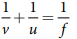
Rewriting to find V,
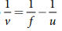
Substituting for and u,
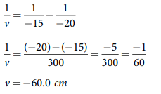
The screen is to be placed at distance 60.0 centimeter to the left of the concave mirror
(b) Magnification,
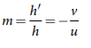
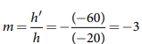
As the sign of magnification is negative, the image is inverted.
As the magnitude of magnification is 3, the image is enlarged three times.
As the image is formed to the left of the concave mirror, the image is real.
EXAMPLE 6 point 4
A thin rod of length f by 3 is placed along the optical axis of a concave mirror of focal length f such that one end of image which is real and elongated just touches the respective end of the rod. Calculate the longitudinal magnification.
Solution
(longitudinal magnification equal to length of image by length of object
Given: length of object, l equal to f by 3
For the given condition, the image formation is shown in the figure.
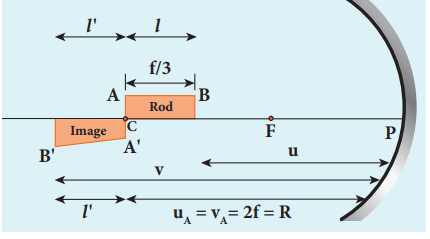
Let, l' be the length of the image, then
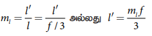
Image of one end coincides with the respective end of object. Thus, the coinciding end must be at centre of curvature
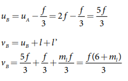
Mirror equation,
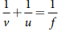
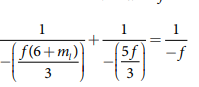
After simplifying,
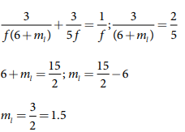
Light travels with the highest speed in vacuum. The speed of light in vacuum is denoted as c and its value is, c equal to 3 into 10 power 8 m s power minus 1. The earliest attempt to determine the speed of light was made by a French scientist Hippolyte Fizeau (1819–1896). That paved way for the other scientists too to determine the speed of light.
Apparatus: The apparatus used by Fizeau for determining speed of light in air medium is shown in Figure 6.13. The light from the source S was first allowed to fall on a partially silvered glass plate G kept at an angle of 45 degree to the incident light. The light then was allowed to pass through a rotating toothed-wheel with N teeth and N cuts of equal widths whose speed of rotation could be varied through an external mechanism (not shown in the Figure). The light passing through one cut in the wheel will get reflected by a mirror M kept at a long distance d, about 8 km from the toothed-wheel. If the toothed wheel was not rotating, the light reflected back from the mirror would again pass through the same cut and reach the eyes of the observer who looks through the partially silvered glass plate.
Working: The angular speed of rotation of the toothed-wheel was increased from zero to a value omega until the light passing through one cut would completely be blocked by the adjacent tooth. This is ensured by the disappearance of the light while looking through the partially silvered glass plate.
Expression for speed of light: The speed v of light in air is equal to the ratio of the distance 2 d (the distance light travelled from the toothed-wheel to the mirror and back), to the time taken t.
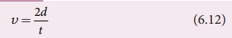
The distance d is a known value from the arrangement. The time t taken for the light to travel the distance two d is calculated from the angular speed ω of the toothed wheel.
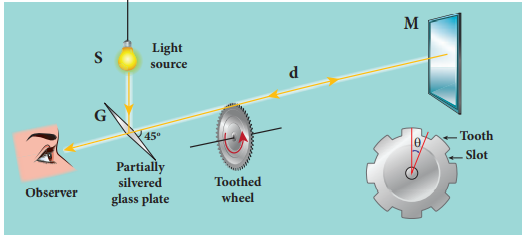
The angular speed omega (with unit radian per second) of the toothed-wheel when the light disappeared for the first time is,
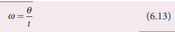
Here, theta is the angle between one tooth and the next slot which is turned within that time t.
Theta equal to total angle of the circle in radian by number of teeth plus number of cuts
theta equal to two pai by two N equal to pai by N)
Substituting theta in equation (6.13),
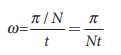
Rewriting the above equation for t,
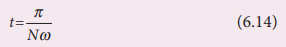
Substituting this in equation (6.12),
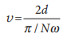
After rearranging,
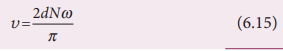
Fizeau had some difficulty to visually estimate the minimum intensity of the light when it is blocked by the adjacent tooth. The value of speed of light determined by him was very close to the actual value. Later on, with the same idea of Fizeau and with much sophisticated instruments, the speed of light in air was determined as, v equal to 2.99792 into 10 power 8 m s power minus 1.
Note
After the disappearance of light for the first time while increasing the speed of rotation of the toothed-wheel from zero to omega, on further increasing the speed of rotation to two omega, the light would appear again due to the passing of reflected light through the next slot. So, for every odd value of omega, light would disappear (stopped by tooth) and for every even value of omega light would appear (allowed by slot).
Scientists like Foucault (1819–1868) and Michelson (1852–1931) introduced different transparent media like glass, water etc., in the path of light to find the speed of light in different media. Even evacuated glass tubes were also introduced in the path of light to find the speed of light in vacuum. It was found that light travels with lesser speed in any medium than its speed in vacuum. The speed of light in vacuum was determined as, c equal to 3 into 10 power 8 m s power minus 1. We could notice that the speed of light in vacuum and speed of light in air are almost same.
Refractive index of a transparent medium is defined as the ratio of speed of light in vacuum c to the speed of light in that medium v.
Refractive index n of a medium equal to speed of light in vacuum (c) by speed of light in medium (v)
N equal to c by v Equation (6.16)
Refractive index of a transparent medium gives an idea about the speed of light in that medium.
EXAMPLE 6 point 5
Pure water has refractive index 1.33. What is the speed of light through it?
Solution
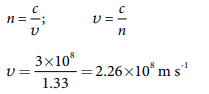
Light travels with a speed of 2.26 into 10 power 8 m s power minus 1 through pure water.
Refractive index does not have a unit. The smallest value of refractive index is for vacuum, which is 1. For any other medium refractive index is greater than 1. Refractive index is also called as optical density of the medium. Higher the refractive index of a medium, lesser is the speed of light through it and vice-versa. [Note: optical density should not be confused with mass density of the material of the medium. They two are different entities]. The Table 6.2 shows the refractive indices of different transparent media.
Table 6 point 2 Refractive index of media
Media |
Refractive index |
Vacuum |
1.00 |
Air |
1.0003 |
Carbon dioxide gas |
1.0005 |
Ice |
1.31 |
Pure water |
1.33 |
Ethyl alcohol |
1.36 |
Quartz |
1.46 |
Vegetable oil |
1.47 |
Olive oil |
1.48 |
Acrylic |
1.49 |
Table salt |
1.51 |
Glass |
1.52 |
Sapphire |
1.77 |
Zircon |
1.82 |
Qubic zirconia |
2.16 |
Diamond |
2.42 |
Gallium phosphide |
3.50 |
Optical path of a medium is defined as the distance d dash light travels in vacuum in the same time it travels a distance d in the medium.
Let us consider a medium of refractive index n and thickness d. Light travels with a speed v through the medium in a time t. The speed of light through the medium is written as,
V equal to d by t; rewritten for as, t equal to d by v
In the same time t, light can cover a longer distance d' in vacuum as it travels with greater speed c in vacuum. It is shown in Figure 6.14. Now, we can write,
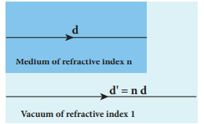
c equal to d dash by t rewritten for t as, t equal to d dash by c
As the time taken in both the cases is the same, we can equate the time ,
d dash by c equal to d by v
Rewritten for the optical path d dash as d dash equal to c by v into d
As c by v equal to n; the optical path d dash is,
D dash equal to n into d equation 6.17
The value of n is always greater than 1, for a medium. Thus, the optical path d dash of a medium is always greater than d.
EXAMPLE 6 point 6
Light travels from air into a glass slab of thickness 50 centimeter and refractive index 1.5.
(a) What is the speed of light in the glass slab?
(b) What is the time taken by the light to travel through the glass slab?
(c) What is the optical path of the glass slab?
Solution
Given, thickness of glass slab, d equal to 50 centimeter equal to 0.5 meter, refractive index, n equal to 1.5
refractive index, n equal to c by v
(a) speed of light in the glass slab is,
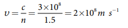
(b) time taken by light to travel through the glass slab is,
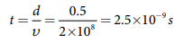
(c) optical path,
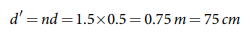
Light would have travelled an additional 25 centimeter (75 centimeter minus 50 centimeter) in vacuum at the same time had there been no glass slab in its path.
Refraction is passing of light from one optical medium to another optical medium through a boundary. In refraction, the angle of incidence i in one medium and the angle of refraction r in the other medium are measured with respect to the normal drawn to the surface at the point of incidence of light. According to laws of refraction,
1. The incident ray, refracted ray and normal to the refracting surface are all coplanar (that is lie in the same plane).
2. The ratio of sine of angle of incident i in the first medium to the sine of angle of refraction r in the second medium is equal to the ratio of refractive index n two of the second medium to the refractive index n one of the first medium.
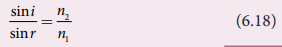
The above equation is in the ratio form. It can also be written in a product form as,
N one sin I equal to n two sin r equation (6.19)
The law of refraction is also known as Snell's law.
The refraction at a boundary is shown in Figure 6.15.
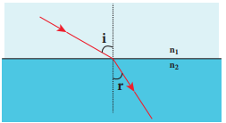
Note
For normal incidence of light on a surface, the angle of incidence is zero.
The angle between the direction of incident ray and the refracted ray is called angle of deviation due to refraction. When light travels from rarer to denser medium, it deviates towards normal as shown in Figure 6.16. The angle of deviation in this case is,
d equal to i minus r equation (6.20)
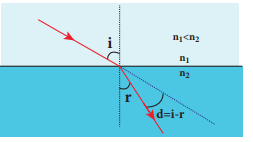
On the other hand, if light travels from denser to rarer medium, it deviates away from normal as shown in Figure 6.17. The angle of deviation in this case is,
d equal to r minus i equation (6.21)
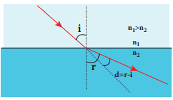
In any refracting surface there will also be some reflection taking place. Thus, the intensity of refracted light will be lesser than the incident light. The phenomenon in which a part of light from a source undergoing reflection and the other part of light from the same source undergoing refraction at the same surface is called simultaneous reflection (or) simultaneous refraction. This is shown in Figure 6.18. Such surfaces are available as partially silvered glasses.
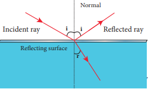
Do you know
Production of optical surfaces capable of refracting as well as reflecting is possible by properly coating the surfaces with suitable materials. Thus, a glass can be made partially see through and partially reflecting. These glasses are commercially called as two-way mirror, half-silvered mirror, semi-silvered mirror etc. This gives a perception of regular mirror if the other side is made dark. But, still hidden cameras can be kept behind such mirrors. We need to be cautious when we stand in front of mirrors kept in unknown places. There is a method to test the two way mirror. Place the finger nail on the mirror surface. If there is a gap between nail and its image, then it is a regular mirror. If the fingernail directly touches its image, then it is a two way mirror.
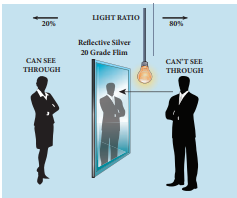
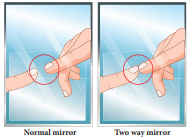
The principle of reversibility states that light will follow exactly the same path if its direction of travel is reversed. This is true for both reflection and refraction as shown in Figure 6.19.
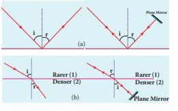
In equation (6.18), the term (n two by n one ) is called relative refractive index of second medium with respect to the first medium which is denoted as n two one.
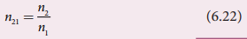
The concept of relative refractive index gives rise to other useful relations such as,
1. Inverse rule:
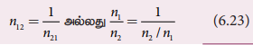
2. Chain rule:
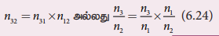
EXAMPLE 6 point 7
Light travelling through transparent oil enters in to glass of refractive index 1.5. If the refractive index of glass with respect to the oil is 1.25, what is the refractive index of the oil?
Solution
Given, n glass with oil equal to 1.25 and n glass equal to 1.5
Refractive index of glass with respect to oil,
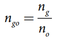
Rewriting for refractive index of oil,
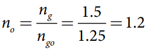
The refractive index of oil is, n oil equal to 1 point 2
It is a common observation that the bottom of a tank filled with water appears to be raised when seen from air medium above as shown in Figure 6.19 (a). An equation could be derived for the apparent depth when viewed in the near normal direction.
Light from the object O at the bottom of the tank passes from denser medium (water) to rarer medium (air) to reach our eyes for viewing the object as shown in Figure 6.20 (b). It deviates away from the normal in the rarer medium at the point of incidence B as shown in Figure 6.20 (c). The refractive index of the denser medium is n one and that of rarer medium is n two. Here, n one greater than n two. The angle of incidence in the denser medium is i and the angle of refraction in the rarer medium is r. The lines N into N dash and O D are parallel. Thus, the angle D I B is also r. The angles i and r are very small as the diverging light from O entering the eye is very narrow. The Snell’s law in product form for this refraction from equation (6.19) is,
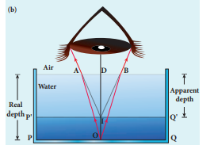
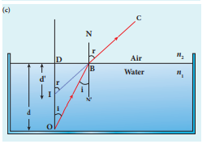
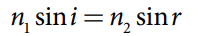
As the angles i and r are small, we can approximate, sain I equivalence tan I and sain r equivalence tan r
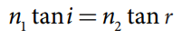
In triangles D O B and triangle D I B,
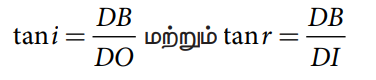
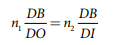
D B is cancelled both sides. Now, D O is the actual depth d and D I is the apparent depth d dash.
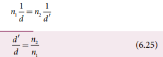
Rewriting the above equation for the apparent depth d dash,
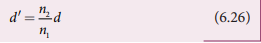
As the rarer medium is air, its refractive index n two can be taken as one, (n two equal to one). And the refractive index n one of denser medium could then be taken as n itself, (n one equal to n). Now, the equation for apparent depth becomes,
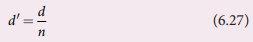
The bottom appears to be elevated d minus d dash
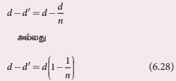
Do You Know
Atmospheric refraction: Due to refraction of light through different layers of atmosphere which vary in refractive index, the path of light deviates continuously when it passes through the atmosphere. For example, the Sun is visible a little before the actual sunrise and also until a little after the actual sunset due to refraction of light through the atmosphere. What we mean by actual sunrise is the actual crossing of the sun at the horizon. Figure shows the actual and apparent positions of the sun with respect to the horizon. The figure is highly exaggerated to show the effect. The apparent shift in the direction of the sun is around half a degree and the corresponding time difference between the actual and apparent positions is about two minutes. Sun appears flattened (oval shaped) during sun rise and sunset due to the same phenomenon.
The same is also applicable for the positions of stars as shown in Figure. Actually, the stars do not twinkle. They appear twinkling because of the movement of the atmospheric layers with varying refractive indices which is clearly seen in the night sky.
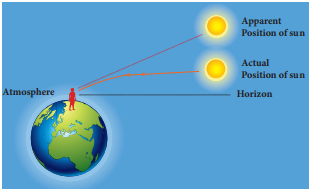
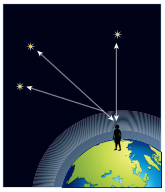
EXAMPLE 6 point 8
A coin is at the bottom of a trough containing three immiscible liquids of refractive indices 1.3, 1.4 and 1.5 poured one above the other of heights 30 centimeter, 16 centimeter, and 20 centimeter respectively. What is the apparent depth at which the coin appears to be when seen from air medium outside? In which medium the coin will appear?
Solution
When seen from (air medium) on top, the coin will still appear to be at the bottom with each medium appearing to have shrunk with respect to the air medium outside. This situation is illustrated below.
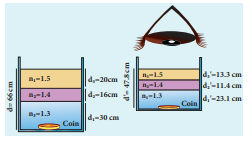
The equations for apparent depth for each medium is,

When a ray passes from an optically denser medium to an optically rarer medium, it bends away from the normal. Because of this, the angle of refraction r in the rarer medium is greater than the corresponding angle of incidence i in h e denser medium. As angle of incidence i is gradually increased, r rapidly increases and at a certain stage r becomes 90 degree and the refracted ray will be gracing the boundary. The angle of incidence in the denser medium for which the angle of refraction is 90 degree (or) the refracted ray graces the boundary between the two media is called critical angle I c.
If the angle of incidence in the denser medium is increased beyond the critical angle, there is no refraction possible in to the rarer medium. For any angle of incidence greater than the critical angle, the entire light is reflected back into the denser medium itself. This phenomenon is called total internal reflection. These are shown in Figure 6.21.
The two conditions for total internal reflection to take place are,
1. light must travel from denser to rarer medium,
2. angle of incidence in the denser medium must be greater than critical angle (I greater than I c).
For critical angle of incidence, the Snell’s law in the product form, equation (6.19) becomes,
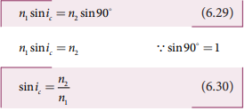
Here, n one greater than n two
If the rarer medium is air, then its refractive index n two is one, (n two equal to 1) and the refractive index of the denser medium n one is taken as n itself, (n one equal to n) then
The critical angle I c depends on the refractive index n of the medium. Table 6.3 shows the refractive index and the critical angle for different materials.
Table 6 point 3 Refractive index and critical angle for different media
Material |
Refractive Index |
Critical angle |
Ice |
1.310 |
49.8 degree |
Water |
1.333 |
48.6 degree |
Fused Quartz |
1.458 |
43.3 degree |
Crown Glass |
1.541 |
40.5 degree |
Flint Glass |
1.890 |
31.9 degree |
Calcite |
1.658 |
37.0 degree |
Strontium Titarate |
2.394 |
24.7 degree |
Diamond |
2.417 |
24.4 degree |
Rutile |
2.621 |
22.4 degree |
For example the refractive index of glass is about 1.5. The critical angle for glass-air interface is, I c equal to sin inverse into one by 1.5 equal to 41.8 degree. The refractive index of water is 1.33. The critical angle for water-air interface is, I c equal to sin inverse into one by 1.3 equal to 48.6 degree.
Diamond appears dazzling because of the total internal reflection of light that happens inside the diamond. The refractive index of diamond is about 2.417. It is much greater than the refractive index of ordinary glass which is about only 1.5. The critical angle of diamond is about 24.4 degree. It is much less than that of ordinary glass. A skilled diamond cutter makes use of this larger range of angle of incidence (24.4 degree to 90 degree inside the diamond), to ensure that light entering the diamond is total internally reflected from the many cut faces before getting out as shown in Figure 6.22. This gives a sparkling effect for diamond.
The refractive index of air increases with its density. In hot places, air near the ground is hotter than air at a height. Hot air is less dense. Hence, in still air the refractive index of air increases with height. Because of this, the light from tall objects like a tree, try to pass through a medium whose refractive index decreases towards the ground. Hence, the ray of light successively deviates away from the normal at different layers of air and undergoes total internal reflection when the angle of incidence near the ground exceeds the critical angle. This gives an illusion as if the light comes from somewhere below the ground. Because of the shaky nature of the layers of air, the observer feels as if the object is getting reflected by a pool of water (or) wet surface beneath the object as shown in Figure 6.23(a). This phenomenon is called mirage.
In the cold places the refractive index increases towards the ground because the temperature of air close to the ground is lesser than the temperature at a height above the surface of earth. Thus, the density and refractive index of air close to the ground is greater than for air at a height. In the cold regions like glaciers and frozen lakes, the reverse effect of mirage will happen. Hence, an inverted image is formed little above the surface as shown in Figure 6.23(b). This phenomenon is called looming. It is also called as superior mirage, towering and stooping.
Prisms can be designed to reflect light by 90 degree (or) by 180 degree by making use of total internal reflection as shown in Figure 6 point 24 (a) and 6 point 24 (b). In the first two cases, the critical angle i c for the material of the prism must be less than 45 degree. Prism in Figure 6.24(b) inverts the object on the same side. Prism in Figure 6 point 24 (c) inverts the object on the other side.
When a source of light like electric bulb is kept inside a water tank, the light from the source travels in all direction inside the water. The light that is incident on the water surface at an angle less than the critical angle will undergo refraction and emerge out from the water. The light incident at an angle greater than critical angle will undergo total internal reflection. The light falling particularly at critical angle graces the surface. Thus, the entire surface of water appears illuminated when seen from outside as shown in Figure 6.25.
On the other hand, when the light entering the water from outside is seen from inside the water, the view is restricted to a particular angle equal to the critical angle I c. The restricted illuminated circular area is called Snell’s window as shown in Figure 6.26 (a). The Figure 6.26 (b) shows the angle of view for water animals.
The angle of view for water animals is restricted to twice the critical angle two i c. The critical angle for water is 48.6 degree. Thus the angle of view is 97.2 degree. The radius R of the circular area depends on the depth d from which it is seen and also the refractive index n of the medium. The radius R of Snell’s window can be deduced with the illustration as shown in Figure 6.27.
Light is seen from a point A at a depth d. The Snell’s law in product form, equation (6.19), for the refraction happening at the point B on the boundary between the two media is,
From the right angle triangle A B C,
Equating the above two equations (6.33) and 6.34
Squaring on both sides,
Taking reciprocal,
Further simplifying,
Again, taking reciprocal and rearranging.
After taking the squre root, the radius of illumination is,
If the rarer medium outside is air, then, n two equal to one and we can take n one equal to n
EXAMPLE 6 point 9
What is the radius of the illumination when seen above from inside a swimming pool from a depth of 10 meter on a sunny day? What is the total angle of view? [Given, refractive index of water is 4 or 3]
Solution
Given, n equal to four by three, d equal to 10 meter.
To find the critical angle,
The total angle of view of the cone is,
Transmitting the signals through optical fibres is possible due to the phenomenon of total internal reflection. Optical fibres consist of inner part called core and outer part called cladding (or) sleeving. The refractive index of the core must be higher than that of the cladding for total internal reflection to happen. Signal in the form of light is made to incident inside the core cladding boundary at an angle greater than the critical angle. Hence, it advances with repeated total internal reflections inside the optical fibre without undergoing any refraction. The light travels inside the core with no appreciable loss in the intensity of the light as shown in Figure 6.28 (a). While bending the optical fibre, it is done in such a way that the condition for total internal reflection is ensured at every reflection inside the fibre as shown in Figure 6.28 (b).
To ensure the critical angle incidence in the core-cladding boundary inside the optical fibre, the light should be incident at a certain angle called acceptance angle at the end of the optical fibre while entering into it. It depends on the refractive indices of the core n one, cladding n two and the outer medium n three. Assume that the light is incident at an angle called acceptance angle i a at the outer medium-core boundary at A as shown in Figure 6.29 (a).
The Snell’s law in the product form, equation (6.19), for this refraction at the point A is
To have the total internal reflection inside the optical fibre, the angle of incidence at the core-cladding interface at B should be atleast critical angle I c . Snell’s law in the product form, equation (6.19), for the refraction at point B is,
Now Equation (6.39) becomes
Substituting for cos R a
Substituting this in equation (6.37).
On further simplification,
If outer medium is air, then n three equal to one. The acceptance angle I a becomes,
Light can have any angle of incidence from 0 to i a with the normal at the end of the optical fibre forming a conical shape called acceptance cone as shown in Figure 6.29(b). In the equation (6.42), the term (n three sin a) is called numerical aperture N A of the optical fibre.
If outer medium is air, then n three equal to one. The numerical aperture N A becomes
EXAMPLE 6 point 10
A optical fibre is made up of a core material with refractive index 1.68 and a cladding material of refractive index 1.44. What is the acceptance angle of the fibre if it is kept in air medium without any cladding?
Solution
Given, n one equal to 1.68, n two equal to 1.44, n three equal to one
If there is no cladding then, n two equal to one
Acceptance angle, I a equal to sin inverse into route of n one square minus one
Sin inverse one (more than 1) is not possible. But, this includes the range 0 degree to 90 degree. Hence, all the rays entering the core from flat surface will undergo total internal reflection.
Note: If there is no cladding then there is a condition on the refractive index (n one) of the core.
Here, as per mathematical rule n one square minus one into less than or equal to one or n one square less than or equal to two or n one less than or equal to route two.
Hence, in air (no cladding) the refractive index n one of the core should be, n one less than or equal to1.4141 plus or minus 1 point 4, 1, 4
Do You Know?
An endoscope which has a bundle of optical fibres is an instrument used by doctors to see inside of a patient’s body. Endoscopes work on the phenomenon of total internal reflection. The optical fibres are inserted into the body through mouth, nose (or) a special hole made in the body. Even operations could be carried out with the endoscope cables which have the necessary instruments attached at their ends
When a ray of light enters a slab it travels from rarer medium (air) to denser medium (glass). This results in deviation of the ray towards the normal. When the light ray leaves the slab it travels from denser medium (glass) to rarer medium (air) resulting in deviation of the ray away from the normal. After the two refractions, the light ray emerges in the same direction as that of the incident ray on the glass slab with a lateral displacement (or) shift L. i.e. There is no change in the direction of the ray but, the path of the incident ray and refracted ray are parallel to each other with a shift L, as shown in Figure 6.30.
Consider a glass slab of thickness t and refractive index n kept in air medium. If the path of the light is A B C D, the refractions occur at two points B and C in the glass slab. The angles of incidence i and refraction r are measured with respect to the normal N one and N two at the two points B and C respectively. The lateral displacement L is the perpendicular distance CE drawn between the paths of the deviated light and the undeviated light at point C.
In the right angle triangle B C E,
In the right angle triangle B C F,
Equating equations (6.48) and (6.49),
After rearranging,
The lateral displacement depends upon (1) the thickness of the slab, (2) the angle of incidence and (3) the refractive index of the slab which decides the angel of refraction. Thicker the slab, larger will be the lateral displacement. Greater the angle of incidence, larger will be the lateral displacement. Higher the refractive index, larger will be the lateral displacement.
EXAMPLE 6 point 11
The thickness of a glass slab is 0.25 meter. It has a refractive index of 1.5. A ray of light is incident on the surface of the slab at an angle of 60 degree. Find the lateral displacement of the light when it emerges from the other side of the glass slab.
Solution
Given, thickness of the slab, t equal to 0.25 meter, refractive index, n equal to 1.5, angle of incidence, i equal to 60 degree.
Using Snell's law,
1 into sin i equal to n into sin r
Lateral displacement is,
The lateral displacement is, L equal to 12.81 centimeter
We have so far studied only the refraction at plane surface. The refraction can also take place at spherical surface between two transparent media. The laws of refraction hold good at every point on the spherical surface. The normal at the point of incidence is perpendicular drawn to the tangent plane of the spherical surface at that point. Therefore, the normal always passes through its center of curvature. The study of refraction at single spherical surface paves way to the understanding of thin lenses which consist of two refracting surfaces.
The following assumptions are made while considering refraction at spherical surfaces.
1. The incident light is assumed to be monochromatic (single colour)
2. The incident light is very close to the principal axis (paraxial rays).
The sign conventions are similar to that of the spherical mirrors.
Let us consider two transparent media with refractive indices n1 and n2 which are separated by a spherical surface as shown in Figure 6.31. Let C be the centre of curvature of the spherical surface. Let a point object O be in the medium n1. The line O C is the principal axis that cuts the spherical surface at the pole P. As the rays considered are paraxial rays, the perpendicular dropped from the point of incidence to the principal axis is very close to the pole (or) passes through the pole itself.
Light from O falls on the refracting surface at N. The normal drawn to the refracting surface at the point of incidence passes through the centre of curvature C. As n two greater than n one, light in the denser medium deviates towards the normal and meets the principal axis at I where the image is formed.
Snell’s law in product form for the refraction at the point N can be written from equation (6.19),
N one sain I equal to n two sain r
As the angles are small, sine of the angle could be approximated to the angle itself
Let the angles be,
Triangle N O P equal to alpha, triangle N C P equal to beeta, triangle N I P equal to gaama
From the right angle triangles N O P, triangle N C P and triangle N I P,
As these angles are small, tan of the angle could be approximated to the angle itself.
For the triangle, O N C,
For the triangle, I N C,
Substituting for I and r from equations (6.53) and (6.54) in the equation (6.51).
After rearranging,
Substituting for alpha, beeta and gaama from equation
Further simplifying by cancelling P N,
P I, P O and P C are mere distances; here we use sign conventions so that the expression that is derived will be a general one. The general expression thus obtained will be valid for the situations other than the one shown in figure.
∴ substituting P O equal to minus u, PI equal to plus v and PC equal to plus R in equation (6.55),
After rearranging, finally we get,
Equation (6.56) gives the relation among the object distance u, image distance v, refractive indices of the two media (n one and n two) and the radius of curvature R of the spherical surface. It holds good for any spherical surface as sign conventions are applied.
If the first medium is air, then n one equal to one and for the second medium n two equal to n, then the equation is reduced to,
Note: In the above derivation, we took the case where rays are converged to a point after the refraction. But in general, the rays can either converge or diverge after refraction. This depends upon the value of n two over n one, radius of curvature R and position of object u. The other possibility is discussed in example 6.12.
EXAMPLE 6 point 12
Find the position of the image of a point object O in the two cases given. Take the radius of curvature of the surface R as 15 centimeter, n one equal to one and n two equal to two.
Case 1) O is located 10 centimeter to the left of the surface.
Case 2) O is located 30 centimeter to the left of the surface.
Solution
Case 1.
applying sign convention, u equal to minus 10 centimeter, R equal to 15 centimeter.
[a virtual image is formed 60 cm, to the left of the surface]
Case 2.
applying sign convention, u equal to minus 10 centimeter, R equal to 15 centimeter.
[a real image is formed 60 cm, to the right of the surface]
A lens is formed by a transparent material bounded between two spherical surfaces (or) one plane and another spherical surface. In a thin lens, the distance between the surfaces is very small. For two spherical surfaces, there will be two centres of curvature C one and C two and correspondingly two radii of curvature R one and R two. For a plane surface, the centre of curvature C is at infinity and its radius of curvature R is infinity (R equal to infinitive). The terminologies of spherical mirrors hold good very much for thin lenses except for the focal length.
As the thin lens is formed by two surfaces, the lens may separate two different media. i.e. the media to the left and right of the lens may be different. Hence, we have two focal lengths.
The primary focus F one is defined as a point where a point source kept produces a parallel emergent rays to the principal axis after passing through lens as shown in Figure 6.32. For a converging lens, such an object is a real object and for a diverging lens, it is a virtual object. The distance P F one is the primary focal length f one.
The secondary focus F two is defined as a point where all the parallel rays travelling close to the principal axis converge to form an image on the principal axis after passing through lens as shown in Figure 6.33. For a converging lens, such an image is a real image and for a diverging lens, it is a virtual image. The distance P F two is the secondary focal length f two.
If the media on the two sides of a thin lens have same refractive index, then the two focal lengths are equal. We will mostly be using the secondary focus F two in our further discussions.
The sign conventions for thin lenses differ only in the signs followed for focal lengths.
1. The sign of focal length is not decided on the direction of measurement of the focal length from the pole of the lens as they have two focal lengths, one to the left and another to the right.
2. The focal length of the thin lens is taken as positive for a converging lens and negative for a diverging lens.
The other sign conventions for object distance, image distance, radius of curvature, object height and image height (except for the focal lengths as mentioned above) remain the same for thin lenses as that of spherical mirrors.
Let us consider a thin lens made up of a medium of refractive index n two placed in a medium of refractive index n one. Let R one and R two be the radii of curvature of two spherical surfaces one and two respectively and P be the pole as shown in Figure 6.34. Consider a point object O on the principal axis. A paraxial ray from O which falls very close to P, after refraction at the surface one forms image at I dash. Before it does so, it is again refracted by the surface two Therefore, the final image is formed at I.
The general equation for the refraction at a single spherical surface is given by the equation (6.56) is,
For the refracting surface 1, the light goes from n one to n two.
For the refracting surface two the light goes from medium n two to n one.
For surface two, I dash acts as virtual object.
Adding the above two equations (6.58) and (6.59)
On further simplifying and rearranging,
If the object is at infinity, the image is formed at the focus of the lens. Thus, for u equal to infinitive, v equal to f. Then the equation becomes
If the lens is kept in air, then we can take n one equal to one and n two equal to n. So the equation (6.61) becomes,
The above formula is called as the lens maker’s formula, because it tells the lens manufactures what curvature is needed for a material of particular refractive index to make a lens of desired focal length. This formula holds good also for any type of lens. By comparing the equations (6.60) and (6.61) we can write,
The above equation is known as lens equation which relates the object distance u and image distance v with the focal length f of the lens. This equation holds good for any type of lens.
Let us consider an object O, O dash of height h one placed on the principal axis with its height perpendicular to the principal axis. The inverted real image I, I dash is formed which has a height h two as shown in Figure 6.35.
The lateral (or) transverse magnification m is defined as the ratio of the height of the image to height of the object.
From the two similar triangles P O O dash and triangle P, I, I dash, we can write,
On applying sign convention,
Substituting this in the equation (6.65) for magnification,
After rearranging,
The magnification is negative for real image and positive for virtual image. In the case of a concave lens, the magnification is always positive and less than one.
We can also have the other forms of equations for magnification by combining the lens equation as,
EXAMPLE 6 point 13
A biconvex lens has radii of curvature 20 centimeter and 15 centimeter for the two curved surfaces. The refractive index of the material of the lens is 1.5.
(a) What is its focal length?
(b) Will the focal length change if the lens is flipped by the side?
Solution
For a biconvex lens, radius of curvature of the first surface is positive and that of the second surface is negative as shown in figure.
Given, n equal to1.5, R one equal to 20 centimeter and R two equal to minus 15 centimeter
(a) Lensmaker's formula,
Substituting the values,
![One divided by f equal to bracket one point five minus one bracket one divided by twenty minus one divided by minus fifteen equal to bracket one point five minus one bracket one divided by twenty plus one divided by fifteen One by f equal to zero point five bracket one divided by twenty plus one divided by fifteen equal to zero point five bracket three plus four divided by sixty equal to bracket one divided by two multiplied by seven divided by sixty equal to seven divided by one twenty f equal to one twenty divided by seven equal to seventeen point one four centimeter](images/image-142.png)
As the focal length is positive the lens is a converging lens
(b) When the lens is flipped by the side
Now, n equal to 1.5, R one equal to 15 centimeter and R two equal to minus 20 centimeter
Substituting the values in the lens maker's formula,
This will also result in, f equal to 17.14 centimeter.
Thus, it is concluded that the focal length of the lens will not change if it is flipped by the
side. This is true for any lens. Students can verify this for any kind of lens.
EXAMPLE 6 point 14
Determine the focal length of the lens made up of a material of refractive index 1.52 as shown in the diagram. (Points C one and C two are the centers of curvature of the first and second surfaces respectively.)
Solution
This lens is called convexo-concave lens
Given, n equal to 1.52, R one equal to 10 centimeter and R two equal to 20 centimeter.
Both R one and R two are positive
Lens makers formula,
Substituting the values,
As the focal length is positive, the lens is a converging lens
The power of a lens is a measure of its deviating ability on an incident light. When a ray is incident on a lens then the degree with which the lens deviates the ray is determined by the power of the lens. Power of the lens is inversely proportional to the focal length i.e. greater the power of lens, smaller will be the focal length. In Figure 6.36, the lens (b) has greater deviating ability than lens (a). As (b) has greater deviating ability, its focal length is less and vice versa.
In other words, the power of a lens is a measure of the degree of convergence (or) divergence the lens produces on the light falling on it. The power of a lens P is the reciprocal of its focal length in meter
The unit of power is dioptre (D). one D equal to 1 m power mimus 1. Power is positive for converging lens and negative for diverging lens.
From the lens maker's formula, equation (6.62), the equation (6.68) can be written for power as,
The outcome of this equation for power is that for a given geomentry of the lens, larger the value of refractive index, greater is the power of lens and vice versa. Also for lenses with small radii of curvature (bulky) the power is large and for lenses with large radii of curvature (skinny), the power is small.
EXAMPLE 6 point 15
If the focal length is 150 centimeter for a lens, what is the power of the lens?
Solution
Given, focal length, f equal to 150 centimeter equal to 1.5 meter.
Equation for power of lens is, P equal to 1 by f
Substituting the values,
As the power is positive, it is a converging lens.
Let us consider two lenses 1 and 2 of focal lengths f one and f two placed coaxially in contact with each other so that they have a common principal axis. For a point object placed at O beyond the focus of the lens 1 on the principal axis, an image is formed by it at I dash. This image I dash acts as an object for the lens 2 and the final image is formed at I as shown in Figure. 6.37. As these two lenses are thin, the measurements are done with respect to the common optic centre P between the two lenses.
For the lens 1, the object distance P O is u and the image distance P I dash is v dash. For the lens 2,the object distance P I dash is v dash and the image distance P I is v.
Writing the lens equation (6.63) for lens,
Adding the above two equations (6.70) and (6.71) gives,
The combination acts as a single lens of focal length f so that for an object at the position O,
it forms the image at I. Then,
Comparing the equations (6.72) and (6.73) we can write,
The above equation can be extended for any number of lenses in contact as,
The above equation can be written in terms of power of the lenses as,
Where, P is the net power of the lenses in contact. One should note that the sum in equation (6.76) is an algebraic sum. The powers of individual lenses may be positive (for convex lenses) and negative (for concave lenses). Combination of lenses helps to obtain converging (or) diverging lenses of desired magnification. Also, combination of lenses enhances the sharpness of the image. As the image formed by the first lens becomes the object for the second and so on, the total magnification m of the combination is the a product of magnification of individual lenses. We can now write,
m equal to m one into m two into m three excetra equation (6.77)
Where m one, m two, m three excetra are magnification of individual lenses.
EXAMPLE 6 point 16
What is the focal length of the combination if the lenses of focal lengths minus 70 centimeter and 150 centimeter are in contact? What is the power of the combination?
Solution
Given, focal length of first lens, f one equal to minus 70 centimeter, focal length of second lens, f two equal to 150 centimeter
Equation for focal length of lenses in contact, one by f equal to one by f one plus one by f two
Substituting the values,
As the final focal length is negative, the combination of two lenses is a diverging system of lenses.
The power of the combination is,
Points to Ponder
System of combination of lenses is commonly used in designing lenses for cameras, microscopes, telescopes and other optical instruments. They produce better magnification and sharpness of the image
EXAMPLE 6 point 17
An object of 5 mm height is placed at a distance of 15 centimeter from a convex lens of focal length 10 centimeter. A second lens of focal length 5 centimeter is placed 40 centimeter from the first lens and 55 centimeter from the object. Find (a) the position of the final image, (b) its nature and (c) its size.
Solution
Given, h equal to 5 mm equal to 0.5 centimeter, u1 equal to minus 15 centimeter, f one equal to 10 centimeter, f two equal to 5 centimeter, d equal to 40 centimeter.
For the first lens, the lens equation is,
Substituting the values
First lens forms image 30 centimeter to the right of the first lens.
Let us find the height of this image.
Equation for magnification is
Substituting the values
As the height of the image is negative, the image is inverted and real.
This image acts as object for second lens. The object distance for second lenses, (40 minus 30 equal to 10 centimeter). Hence, u two equal to minus 10 centimeter.
For the second lens, the lens equation is,
Substituting the values,
The final image is formed 10 centimeter to the right of the second lens.
Let us find the height of the final image. Assume, the final height of the image formed by the second lens is h double dash and the height of the object for the second lens is h dash.
Equation for magnification is m' for the second lens is
Substituting the values,
As the height of the image is positive, the image is erect and real.
If one of the surfaces of a lens is silvered from outside, then such a lens is said to be a silvered lens. A silvered lens is a combination of a lens and a mirror. Light can enter through the transparent front surface of the lens and get reflected by the sliver coated rear surface. Hence, light travels two times through the lens as shown in Figure 6.38.
The power P of the silvered lens is
Here, P i is the power of the lens and P m is the power of the mirror. We know that the power of a lens is the reciprocal of its focal length. But, the power of a mirror is negative of the reciprocal of its focal length. This is because, a concave mirror which has negative focal length is a converging mirror with positive power. Also, a silvered lens is basically a modified mirror. Thus,
Now equation (6.78) becomes,
Proper sign conventions are to be followed for equation (6.80).
Suppose the object distance u and image distance v are to be found, we can very well use the mirror equation (6.8), since the silvered lens is a modified mirror.
EXAMPLE 6 point 18
A thin biconvex lens is made up of a glass of refractive index 1.5. The two surfaces have equal radii of curvature of 30 centimeter each. One of its surfaces is made reflecting by silvering it from outside. (a) What is the focal length and power of this silvered lens? (b) Where should an object be placed in front of this lens so that the image is formed on the object itself?
Solution
Given, n equal to 1.5; R one equal to 30 centimeter; R two equal to minus 30 centimeter;
(a) Let us find f l and f m separately.
Using lens maker’s formula we can find f i
Substituting the values,
Focal length of mirror is, f, m equal to R two by two
Substituting the values,
F m equal to 15 centimeter equal to minus 0.15 meter.
Now the focal length of the slivered lens is,
The silvered mirror behaves as a concave mirror with its focal length on left side.
To find the power of the silvered lens,
As the power is positive it is a converging system.
[Note: Here, we come across a silvered lens which has negative focal length and positive power. Which implies that the focal length is to the left and the system is a converging one. Such situations are possible in silvered lenses because a silvered lens is basically a modified mirror.]
(b) Writing the mirror formula,
Here, both u and v are same (v equal to u) as the image coincides with the object
The object is to be placed 15 centimeter to the left of the silvered lens.
A prism is a triangular block of transparent glass. It is bounded by the three plane faces. Its one face is rough which is called base of the prism. The other two faces are polished which are called refracting faces of the prism. The angle between the two refracting faces is called angle of the prism (or) refracting angle (or) apex angle. It is represented as A in Figure 6.39.
Consider a prism A B C. The faces A B and A C are polished and the face B C is rough. Let light ray P Q is incident on one of the refracting faces of the prism as shown in Figure 6.40. The angles of incidence and refraction at the first face A B are I one and r one. The path of the light inside the prism is Q R. The angles of incidence and refraction at the second face A C is r two and I two respectively. R S is the ray emerging from the second face. Angle I two is also called as angle of emergence. The angle between the directions of the incident ray P Q and the emergent ray R S is called the angle of deviation d in a prism. The two normals drawn at the point of incidence Q and at the point of emergence R meet at point N. The extended incident ray and the emergent ray meet at point M
The angle of deviation d one at surface A B is
The angle of deviation d two at surface A C is,
Total angle of deviation produced is,
Substituting d one and d two, in equation
After rearranging,
In the quadrilateral A Q N R, two of the angles (at the vertices Q and R) are right angles.
Therefore, the sum of the other angles of the quadrilateral should be 180 degree.
In the triangle Q N R
Comparing the two equations and
we get,
Substituting this in equation (6.84) for angle of deviation
Thus, the angle of deviation depends on the angle of incidence I one, angle of emergence I two and the angle for the prism A. But, for a given angle of incidence, the angle of emergence is decided by the refractive index of the material of the prism. Hence, the angle of deviation for a monochromatic light depends on these following factors.
EXAMPLE 6 point 19
A monochromatic light is incident on an equilateral prism at an angle 30 degree and is emergent at an angle of 75 degree. What is the angle of deviation produced by the prism?
Solution
Since, the prism is equilateral, A equal to 60 degree;
Given, I one equal to 30 degree; I two equal to 75 degree
Equation for angle of deviation, d equal to I one plus I two minus A
Substituting the values, d equal to 30 degree plus 75 degree minus 60 degree equal to 45 degree
The angle of deviation produced, d equal to 45 degree
EXAMPLE 6 point 20
Light ray falls at normal incidence on the first face and emerges gracing the second face for an equilateral prism.
(a) What is the angle of deviation produced?
(b) What is the refractive index of the material of the prism?
Solution
The given situation is shown in the figure.
Given A equal to 60 degree; I one equal to zero degree; I two equal to 90 degree
(a) Equation for angle of deviation,
Substituting the values,
The angle of deviation produced is, d equal to 30 degree
(b) The light inside the prism must be falling on the second face at critical angle as it graces the boundary I c equal to 90 degree minus 30 degree equal to 60 degree.
Equation for critical angle is,
The refractive index of the material of the prism is, n equal to 1.15
A graph plotted between the angle of incidence and angle of deviation is shown in Figure 6.41. One could observe that the angle of deviation decreases with increase in angle of incidence and reaches a minimum value D and then continues to increase.
The minimum value of angle of deviation is called angle of minimum deviation D. At minimum deviation,
1. the angle of incidence is equal to the angle of emergence, I one equal to I two.
2. the angle of refraction at the face one and face two are equal, r one equal to r two)
3. the refracted ray inside the prism is parallel to its base of the prism.
The case of angle of minimum deviation is shown in Figure 6.42.
At minimum deviation, I one equal to I two equal to I and r one equal to r two equal to r.
Now, the equation ( becomes,
The equation (6.87) becomes,
Substituting and in Snell's law,
The above equation is used to determine the refractive index of the material of the prism. The angles A and D can be measured experimentally.
EXAMPLE 6 point 21
The angle of minimum deviation for an equilateral prism is 37 degree. Find the refractive index of the material of the prism
Solution
Given, A equal to 60 degree; D equal to 37 degree
Equation for refractive index is,
Substituting the values,
The refractive index of the material of the prism is, n equal to 1.5
The angle of deviation produced by a prism is so far discussed only for monochromatic light (that is light of single colour). When white light enter in to a prism, an effect called dispersion takes place. Dispersion is splitting of white light into its constituent colours. This band of colours of light is called its spectrum. When a narrow beam of parallel rays of white light is incident on a prism and the refracted beam is received on a white screen. A band of colours is obtained in the order, recollected by the word: VIBGYOR that is Violet, Indigo, Blue, Green, Yellow, Orange and Red. The violet is the most deviated colour and red is the least deviated colour as shown in Figure 6.43.
The colours obtained in a spectrum depend on the nature of the light source. Each colour in vacuum has a definite wavelength. The red colour has the longest wavelength of 700 nanometer while the violet colour has the shortest wavelength of 400 nanometer in vacuum. Though all the colours have different wavelengths, they all travel with the same speed in vacuum. The speed of light is independent of wavelength in vacuum. Therefore, vacuum is a nondispersive medium
Points to Ponder
Sir Isaac Newton has demonstrated through a classic experiment to produce white light by recombining all the colours of VIBGYOR. He used a prism to produce dispersion and made all the colours to incident on another inverted prism to combine all the colours to get white light as shown in figure.
But, when the white light enters a medium the red colour travels with the highest speed and violet colour travels with least speed. Hence, the wavelengths of colours in a medium are no longer the same as they are in vacuum. Actually, the dispersion takes place in a medium because of the difference in speed for different colours in a medium. In other words, the refractive index of the material of the prism is different for different colours. For violet colour, the refractive index is the highest and for red colour the refractive index is the least. The refractive index of two different glasses for different colours is shown in Table 6.4
Table 6 point 4 Refractive indices for different wavelengths
Colour |
Wavelength in vacuum (nm) |
Crown glass |
Flint glass |
Violet |
396.9 |
1.533 |
1.663 |
Blue |
486.1 |
1.523 |
1.639 |
Yellow |
589.3 |
1.517 |
1.627 |
Red |
656.3 |
1.515 |
1.622 |
Consider a beam of white light passing through a prism. It gets dispersed into its constituent colours as shown in Figure 6.44. If the angle of prism is small of the order of 10 degree, the prism is said to be a mall angle prism. When rays of light pass through such prisms, the angle of minimum deviation also becomes small. Let A be the angle of a small angle prism and delta be its angle of minimum deviation, then equation (6.89) becomes,
Do You Know?
Rainbow appears in sky during mild shower (or) near the fountains/falls where there are water droplets remain suspended in air. A rainbow is seen when the sun is at the back of the observer. Dispersion occurs when sunlight enters a water droplet and the white light is split into its constituent seven colours. A primary rainbow is formed when the light entering a droplet undergoes one total internal reflection inside it. Sometimes, a secondary rainbow is also formed enveloping the primary rainbow as shown in the figure. The secondary rainbow is formed when light entering a raindrop undergoes two total internal reflections. The order of colour in primary rainbow is from violet to red whereas in secondary rainbow it is from red to violet. The angle of view in primary rainbow from violet to red is from 40 degree to 42 degree. The angle of view for secondary rainbow from red to violet is from 52 degree to 54 degree.
For small angles of and delta
On further simplifying, delta by A equal to n minus one.
When white light enters the prism, the deviation is different for different colours. Thus, the refractive index is also different for different colours.
Let delta v, delta r are the angles of minimum deviation for violet and red colour. Let n y and n r be the refractive indices for the violet and red colour respectively.
For Violet colour, delta V equal to n, V minus one into A equation
For Red colour, delta pai equal to n, R minus one into A equation (6.93)
As, angle of minimum deviation for violet colour delta v is greater than angle of minimum deviation for red colour delta R, the refractive index for violet colour n v is greater than the refractive index for red colour n R.
Subtracting delta R from delta v we get,
The angular separation between the two extreme colours (violet and red) in the spectrum (delta v minus delta R) is called the angular dispersion
If we take delta as the angle of minimum deviation for any mean colour (green or yellow) and n the corresponding refractive index. Then,
Dispersive power omega is defined as the ratio of the angular dispersion for the extreme colours to the deviation for any middle colour. Dispersive power is the ability of the material of the prism to produce dispersion.
Omega equal to angular dispersion by middle deviation
Substituting for delta v minus delta R and delta,
The dispersive power is a dimensionless and unitless quantity. The dispersive power is always positive. The dispersive power of a prism depends only on the nature of material of the prism and it is independent of the angle of the prism.
EXAMPLE 6 point 22
Find the dispersive power of a prism if the refractive indices of flint glass for red, green and violet colours are 1.613, 1.620 and 1.632 respectively.
Solution
Given, n v equal to 1.632; n R equal to1.613; n G equal to 1.620
Equation for dispersive power is,
Substituting the values,
The dispersive power of the prism is, omega equal to 0.0306
When sunlight enters the atmosphere of earth, the particles present in the atmosphere change the direction of the light. This process is known as scattering of light.
If the scattering of light is by atoms and molecules which have size a very much less than that of the wave length lembda of light, (a, very much less than lembda), then the scattering is called Rayleigh’s scattering. The intensity of light scattered in Rayleigh’s scattering is inversely proportional to fourth power of wavelength.
According to equation 6.89, during day time, violet colour which has the shortest wavelength gets more scattered then the other colours. The next scattered colour is blue. As our eyes are more sensitive to blue colour than violet colour, the sky appears blue during day time as shown in Figure 6.45 (b). But, during sunrise and sunset, the light from sun travels a greater distance through the atmosphere. Hence, the blue light which has shorter wavelength is scattered away and the red light which has longer wavelength and less-scattered manages to reach our eye. This is the reason for the reddish appearance of sky during sunrise and sunset as shown in Figure 6.45(a).
If light is scattered by large particles like dust and water droplets present in the atmosphere which have size a greater than the wavelength lembda of light, (a, very much greater than lembda), the intensity of scattering is equal for all the colours. This non-Rayleigh’s scattering is independent of wavelength. It happens in clouds which contains large amount of dust and water droplets. Thus, in clouds all the colours get equally scattered. This is the reason for the whitish appearance of cloud as shown in Figure 6.45(c). But, the rain clouds appear dark because of the condensation of water droplets on dust particles that makes the cloud opaque.
If earth has no atmosphere there would not have been any scattering and the sky would appear dark. That is why sky appears dark for the astronauts who could see the sky from above the atmosphere.
Multiple choice questions
1. The speed of light in an isotropic medium depends on,
(a) its intensity
(b) its wavelength
(c) the nature of propagation
(d) the motion of the source w, r, t medium
Answer: (b)its wavelength
2. A rod of length 10 centimeter lies along the principal axis of a concave mirror of focal length 10 centimeter in such a way that its end closer to the pole is 20 cm away from the mirror. The length of the image is, (AIPMT Main 2012)
(a) 2.5 centimeter
(b) 5 centimeter
(c) 10 centimeter
(d) 15 centimeter
Answer: (b) 5 centimeter
3. An object is placed in front of a convex mirror of focal length of f and the maximum and minimum distance of an object from the mirror such that the image formed is real and magnified. (J E E Main 2009)]
(a) two f and c
(b) c and infinitive
(c) f and O
(d) None of these
Answer: (d) None of these
4. For light incident from air on a slab of refractive index 2, the maximum possible angle of refraction is,
(a) 30 degree
(b) 45 degree
(c) 60 degree
(d) 90 degree
Answer: (a) 30 degree
5. If the velocity and wavelength of light in air is V a and lembda a and that in water is V w and lambda w, then the refractive index of water is,
(a) V w by V a
(b) V a by V w
(c) lambda w by lambda a
(d) (V a, λ a) by (V w, λ w)
Answer: (b) V a by V w
6. Stars twinkle due to,
(a) reflection
(b) total internal reflection
(c) refraction
(d) polarisation
Answer: (c) refraction
7. When a biconvex lens of glass having refractive index 1.47 is dipped in a liquid, it acts as a plane sheet of glass. This implies that the liquid must have refractive index,
(a) less than one
(b) less than that of glass
(c) greater than that of glass
(d) equal to that of glass
Answer: (d) equal to that of glass
8. The radius of curvature of curved surface at a thin planoconvex lens is 10 centimeter and the refractive index is 1.5. If the plane surface is silvered, then the focal length will be,
(a) 5 centimeter
(b) 10 centimeter
(c) 15 centimeter
(d) 20 centimeter
Answer: (b) 10 centimeter
9. An air bubble in glass slab of refractive index 1.5 (near normal incidence) is 5 centimeter deep when viewed from one surface and 3 cm deep when viewed from the opposite face. The thickness of the slab is,
(a) 8 centimeter
(b) 10 centimeter
(c) 12 centimeter
(d) 16 centimeter
Answer: (c) 12 centimeter
10. A ray of light travelling in a transparent medium of refractive index n falls, on a surface separating the medium from air at an angle of incidents of 45 degree. The ray can undergo total internal reflection for the following n,
(a) n equal to 1.25
(b) n equal to 1.33
(c) n equal to 1.4
(d) n equal to 1.5
Answer: (d) n equal to 1.5
Short Answer Questions
1. What is angle of deviation due to reflection?
2. Derive the relation between f and R for a spherical mirror.
3. What are the Cartesian sign conventions for spherical mirrors?
4. What is optical path? Obtain the equation for optical path.
5. State Snell’s law or law of refraction.
6. What is angle of deviation due to refraction?
7. What is principle of reversibility?
8. What is relative refractive index?
9. Obtain the equation for apparent depth.
10. Why do stars twinkle?
11. What are critical angle and total internal reflection?
12. Obtain the equation for critical angle.
13. Explain the reason for the glittering of diamond.
14. What are mirage and looming?
15. Write a short note on the prisms making use of total internal reflections.
16. What is Snell’s window?
17. How does an endoscope work?
18. What are primary focus and secondary focus of a lens?
19. What are the sign conventions followed for lenses?
20. Arrive at lens equation from lens maker’s formula.
21. Obtain the equation for lateral magnification of thin lens.
22. What is power of a lens?
23. Derive the equation for effective focal length for lenses in contact.
24. What is angle of minimum deviation?
25. What is dispersion?
26. How are rainbows formed?
27. What is Rayleigh’s scattering?
28. Why does sky appear blue?
29. What is the reason for reddish appearance of sky during sunset and sunrise?
30. Why do clouds appear white?
Long Answer Questions
1. Derive the mirror equation and the equation for lateral magnification.
2. Describe the Fizeau’s method to determine the speed of light.
3. Obtain the equation for radius of illumination (or) Snell’s window.
4. Derive the equation for acceptance angle and numerical aperture of optical fibre.
5. Obtain the equation for lateral displacement of light passing through a glass slab.
6. Derive the equation for refraction at single spherical surface.
7. Obtain lens maker’s formula and mention its significance.
8. Derive the equations for thin lens and for magnification.
9. Derive the equation for angle of deviation produced by a prism and thus obtain the equation for refractive index of material of the prism.
10. What is dispersion? Obtain the equation for dispersive power of a medium.
Conceptual Questions
1. Why are dish antennas curved?
2. What type of lens is formed by a bubble inside water?
3. Is it possible for two lenses to produce zero power?
4. A biconvex lens has focal length f and intensity of light I passing through it. What will be the focal length and intensity for portions of lenses obtained by cutting it vertically and horizontally as shown in figure?
5. Why is yellow light preferred to during fog?
Numerical Problems
1. An object of 4 cm height is placed at 6 cm in front of a concave mirror of radius of curvature 24 cm. Find the position, height, magnification and nature of the image.
[Answer: v equal to 12 centimeter, h dash equal to 8 centimeter, m equal to 2, image is erect, virtual, twice the height of object formed on right side of mirror.]
2. An object is placed in front of a concave mirror of focal length 20 centimeter. The image formed is three times the size of the object. Calculate two possible distances of the object from the mirror.
[Answer: with plus m, u equal to minus 40 by 3 centimeter and with minus m, u equal to minus 80 by 3 centimeter]
3. A beam of light consisting of red, green and blue is incident on a right-angled prism as shown in figure. The refractive index of the material of the prism for the above red, green and blue colours are 1.39, 1.44 and 1.47 respectively. What are the colours suffer total internal reflection?
[Answer: green and blue suffer total internal reflection]
4. An object is placed at a certain distance from a convex lens of focal length 20 centimeter. Find the object distance if the image obtained is magnified 4 times.
[Answer: u equal to minus 15 centimeter.]
5. Obtain the lens maker’s formula for a lens of refractive index n2 which is separating two media of refractive indices n1 and n3 on the left and right respectively.
Answer n three by v minus n one by u equal to n two by v minus n one by r one plus n three minus n to divided by r two
One by f equal to one by n three into n 2 minus n 1 divided by r one plus m 3 minus n 2 divided by r 2
6. A thin converging lens of refractive index 1.5 has a power of plus 5.0 D. When this lens is immersed in a liquid of refractive index n, it acts as a divergent lens of focal length 100 centimeter. What must be the value of n?
[Answer: n equal to 5 by 3]
7. If the distance D between an object and screen is greater than 4 times the focal length f of a convex lens, then there are two positions for which the lens forms an enlarged image and a diminished image respectively. This method is called conjugate foci method. If d is the distance between the two positions of the lens, obtain the equation for focal length of the convex lens
Answer: f equal to capital D square minus small d square by four d
8. Prove that a convex lens can only form a virtual, erect and diminished image.
9. A point object is placed at 20 centimeter from a thin plano-convex lens of focal length 15 centimeter whose plane surface is silvered. Locate the position and nature of the final image.
[Answer: v equal to minus 12 centimeter]
10. Find the ratio of the intensities of lights with wavelengths 500 nanometer and 300 nanometer which undergo Rayleigh scattering
[Answer: 81 east 625]
1. Frances A. Jenkins and Harvey E. White, Fundamentals of Optics, 4th Edition, McGraw Hill Book Company, (2011).
2. David Halliday, Robert Resnick and Jearl Walker, Fundamentals of Physics, 6th Edition, John Wiley & Sons Inc., (2004).
3. H.C. Verma,Concepts of Physics [Part-1], 1st Edition, Bharathi Bhawan Publishers & Distributers Private Limited., (2008).
4. Roger A. Freedman, Hugh D. Young, Sears and Zemansky’s University Physics, 12th Edition, Pearson, (2011).
ICT CORNER
Ray optics
In this activity you will be able to find out the radius of curvature needed to make a lens of desired focal length
Topic: Lens maker’s formula.
STEPS:
• In the browser go to the page “https://www.geogebra.org/m/wv7eccvc”.
• Here n1 equal to refractive index of air (n1 equal to 1). n2 is the refractive index of the lens. R1 and R2 are the radius of curvature of the lens.
• Take n2 equal to 1.5, R1 equal to 3 centimeter and R2 equal to minus 3 centimeter. Calculate the focal length of the lens using the formula 1 by f equal to (n minus 1) (1 by R1 minus 1 by R2). Verify your answer with the value obtained on the screen by adjusting n2, R1 and R2.
• Find out the curvatures R1 and R2 to make a lens of desired focal length 7 centimeter.
• When R1 equal to minus 1 centimeter and R2 equal to 1 centimeter, you will get a concave lens of focal length minus 1 centimeter. Try to construct concave and convex lenses by adjusting R1 and R2.
• Adjust the refractive index n2, and analyse how focal length changes with respect to refractive index.
• Adjust the refractive index n1, and analyse how focal length changes with respect to refractive index of the medium surrounded by the lens
Note:
Use flash enabled browser or install flash player in your system.
URL:
https://www.geogebra.org/m/wv7ecvc
* Pictures are indicative only.
* If browser requires, allow Flash Player or Java Script to load the page.
An age is called dark, not because the light fails to shine, but because people refuse to see.
— James Albert Michener
In this unit, the students are exposed to,
Light is a form of energy that is transferred from one place to another. A glance at the evolution of various theories of light put forth by scientists will give not only an over view of the nature of light but also its propagation and some phenomenon demonstrated by it.
Sir Isaac Newton (1672) gave the corpuscular theory of light which was also suggested earlier by Descartes (1637) to explain the laws of reflection and refraction. According this theory, light is emitted as tiny, massless (negligibly small mass) and perfectly elastic particles called corpuscles. As the corpuscles are very small, the source of light does not suffer appreciable loss of mass even if it emits light for a long time. On account of high speed, they are unaffected by the force of gravity and their path is a straight line in a medium of uniform refractive index. The energy of light is the kinetic energy of these corpuscles. When these corpuscles impinge on the retina of the eye, the vision is produced. The different sizes of the corpuscles give different colours to light. When the corpuscles approach a surface between two media, they are either repelled (or) attracted. The reflection of light is due to the repulsion of the corpuscles by the medium and refraction of light is due to the attraction of the corpuscles by the medium.
This theory could not explain the reason why the speed of light is lesser in denser medium than in rarer medium and also the phenomena like interference, diffraction and polarisation.
Christian Huygens (1678) proposed the wave theory to explain the propagation of light through a medium. According to him, light is a disturbance from a source travels that as longitudinal mechanical waves through the ether medium (that was presumed to pervade all space) as mechanical wave requires a medium for its propagation. The wave theory could successfully explain phenomena of reflection, refraction, interference and diffraction of light.
Later, the existence of ether in all space was proved to be wrong. Hence, this theory could not explain the propagation of light through vacuum. The phenomenon of polarisation could not be explained by this theory as it is the property of only transverse waves.
Maxwell (1864) proved that light is an electromagnetic wave which is transverse in nature carrying electromagnetic energy. He could also show that no medium is necessary for the propagation of electromagnetic waves. All the phenomenon of light could be successfully explained by this theory.
Nevertheless, the interaction phenomenon of light with matter like photoelectric effect and Compton effect could not be explained by this theory.
Albert Einstein (1905), endorsing the views of Max Plank (1900), was able to explain photoelectric effect (discussed in Unit 8) in which light interacts with matter as photons to eject the electrons. A photon is a discrete packet of energy. Each photon has energy E of,
E equal to h, v equation (7.1)
Where, h is Plank’s constant (h equal to 6.625 into 10 power minus 34 Jule second and v, is frequency of electromagnetic wave.
As light has both wave as well as particle nature it is said to have dual nature. It is concluded that light propagates as a wave and interacts with matter as a particle.
Light is a transverse, electromagnetic wave. The wave nature of light was first demonstrated through experiments like interference and diffraction. The transverse nature of light is demonstrated in polarization. Like all electromagnetic waves, light can travel through vacuum.
Wave optics deals with the wave characteristics of light. Even the law of reflection and refraction are proved only with the help of wave optics. Though light propagates as a wave, its direction of propagation is still represented as a ray.
A good example for wave propagation is the spreading of circular ripples on the surface of still water from a point where a stone is dropped. The molecules (or) particles of water at a point are moving only up and down (oscillate) when a ripple passes through that point. All these particles on the circular ripple are in the same phase of vibration as they are all at the same distance from the center. The ripple represents a wave front as shown in Figure 7.1 (a). A wave front is the locus of points which are in the same state (or) phase of vibration.
When a wave propagates it is treated as the propagation of wave front. The wave front is always perpendicular to the direction of the propagation of the wave. As the direction of ray is in the direction of propagation of the wave, the wavefront is always perpendicular to the ray as shown in Figure 7 point 1 (b).
The shape of a wavefront observed at a point depends on the shape of the source and also the distance at which the source is located. A point source located at a finite distance gives spherical wave fronts. An extended (or) line source at finite distance gives cylindrical wave fronts. Any source that is located at infinity gives plane wavefront as shown in Figure 7 point 2.
Huygens principle is basically a geometrical construction which gives the shape of the wavefront at any time if we know its shape at t equal to 0. According to Huygens principle, each point on the wavefront behaves as the source of secondary wavelets spreading out in all directions with the speed of the wave. These are called as secondary wavelets. The envelope to all these wavelets gives the position and shape of the new wavefront at a later time. Thus, Huygens’ principle explains the propagation of a wavefront.
The propagation of a spherical and plane wavefront can be explained using Huygens’ principle. Let, A, B be the wavefront at a time, t equal to 0. According to Huygens’ principle, every point on A, B acts as a source of secondary wavelet which travels with the speed of the wave (speed of light c). To find the position of the wavefront after a time t, circles of radius equal to c t are drawn with points P, Q, R ... excetra., as centers on A, B. The forward envelope (or) the tangent A dash, B dashof the small circles is the new wave front at that instant t. The wave front A dash B dash will be a spherical wavefront from a point object which is at a finite distance as shown in Figure 7.3 (a) and it is a plane wavefront if the source of light is at a large distance (infinity) as shown in Figure 7.3 (b).
There is one shortcoming in the above Huygens’ construction for propagation of a wavefront. It could not explain the absence of backward wave which also arises in the above construction. According to electromagnetic wave theory, the backward wave is ruled out inherently. However, Huygens’ principle is a good diagrammatic construction which explains the propagation of the wavefront.
Let us consider a parallel beam of light is incident on a reflecting plane surface such as a plane mirror X Y as shown in Figure 7 point 4. The incident wavefront is AB and the reflected wave front is A dash B dash. These wavefronts are perpendicular to the incident rays L, M and reflected rays L dash, M dash respectively. By the time point A of the incident wavefront touches the reflecting surface, the point B is yet to travel a distance B, B dash to touch the reflecting surface at B dash. When the point B touches the reflecting surface at
B dash, the point A would have reached A dash. This is applicable to all the points on the wavefront. Thus, the reflected wavefront A dash B dash emanates as a plane wavefront. The two normals N and
N dash are considered at the points where the rays L and M fall on the reflecting surface. As reflection happens in the same medium, the speed of light is same before and after
the reflection. The time taken for the light to travel from B to B dash and A to A dash are the same. Thus, the distance B B dash is equal to the distance A A dash; (A A dash equal to B B dash).
1. The incident rays, the reflected rays and the normal are in the same plane.
2. Angle of incidence,
Angle i equal to Angle N A L equal to 90 degree minus Angle N A B equal to angle B A B dash
Angle of reflection,
Angle r equal to Angle N dash B dash M dash equal to 90 degree minus angle N dash B dash A dash equal to angle A dash B dash A
For the two right angle triangles, A B B dash and triangle B dash A dash A, the two right angles, angle B and angle A dash are equal, (angle B and angle A dash equal to 90 degree); the two sides, A A dash and B B dash are equal, (A A dash equal to B B dash); the side A B dash is common. Thus, the two triangles are congruent. As per the property of congruency, the two angles, angle B A B dash and angle A dash B A dash must also be equal.
i equal to r equation (7.2)
Hence, the laws of reflection are proved.
Let us consider a parallel beam of light is incident on a refracting plane surface X Y such as a glass as shown in Figure 7.5. The incident wavefront A B is in rarer medium (1) and the refracted wavefront A dash B dash is in denser medium (2). These wave fronts are perpendicular to the incident rays L, M and refracted rays L dash, M dash respectively. By the time the point A of the incident wavefront touches the refracting surface, the point B is yet to travel a distance B B dash to touch the refracting surface at B dash. When the point B touches the refracting surface at B dash, the point A would have reached A dash in the other medium. This is applicable to all the points on the wavefront. Thus, the refracted wavefront A dash B dash emanates as a plane wavefront. The two normals N and are considered at the points where the rays L and M fall on the refracting surface. As refraction happens from rarer medium (1) to denser medium (2), the speed of light is v one and v two before and after refraction and v one is greater than v two, (v one greater than v two). But, the time taken t for the ray to travel from B to B dash is the same as the time taken for the ray to travel from A to A dash.
1. The incident rays, the refracted rays and the normal are in the same plane.
2. Angle of incidence,
I equal to angle N A L equal to 90 degree minus angle N A B equal to angle B A B dash
3. Angle of refraction,
R equal to angle N dash B dash M dash equal to 90 degree minus angle N dash B dash A dash equal to angle A dash B dash a
For the two right angle triangles A B B and A A dash B dash,
Here, c is speed of light in vacuum. The ratio c by v is a constant, called refractive index of
the medium. The refractive index to of medium (1) is, c by v one equal to n one and that of medium (2) is,
c by v two equal to n two.
In ratio form,
In product form,
N one sin i equal to n two sin r equation (7.4)
Hence, the laws of refraction are proved.
In the same way the laws of refraction can be proved for wavefront travelling from denser to rarer medium also.
The speed of light is inversely proportional to the refractive index of the medium (V directly proportional to one by n) and also directly proportional to wavelength of light (V direct proportional to lambda). Hence,
NOTE
If light of a particular frequency travels through different media, then, its frequency remains unchanged in all the media. Only the wavelength changes according to speed of light in that medium.
EXAMPLE 7 point 1
The wavelength of light from sodium source in vacuum is 5893 Amstrong. What are its (a) wavelength, (b) speed and (c) frequency when this light travels in water which has a refractive index of 1.33.
Solution
The refractive index of vacuum, n one equal to one
The wavelength in vacuum, lambda one equal to 5893 amstrong.
The speed in vacuum, c equal to v one equal to 3 into 10 power 8 m s power minus 1
The refractive index of water, n two equal to 1.33
The wavelength of light in water, lambda two
The speed of light in water, v two
(a)The equation relating the wavelength and refractive index is,
Rewriting,
Substituting the values,
(b) The equation relating the speed and refractive index is,
Substituting the values,
(c) Frequency of light in vacuum is,
Substituting the values,
Frequency of light in water is, v two equal to v by lambda two
Substituting the values,
The results show that the frequency remains same in all media.
The phenomenon of superposition of two light waves which produces increase in intensity at some points and decrease in intensity at some other points is called interference of light.
Superposition of waves refers to addition of waves. The concept of superposition of mechanical waves is studied in (eleventh Physics 11.7). When two waves simultaneously pass through a particle in a medium, the resultant displacement of that particle is the vector addition of the displacements due to the individual waves. The resultant displacement will be maximum or minimum depending upon the phase difference between the two superimposing waves. These concepts hold good for light as well.
Let us consider two light waves from the two sources S one and S two meeting at a point P as shown in Figure 7.6.
The wave from S one at an instant t at P is,
Y one equal to a one sin omega t equation (7.6)
The wave form S two at an instant t at P is,
Y two equal to a two sin (omega t plus pai) equation (7.7)
The two waves have different amplitudes a, one and a, two, same angular frequency omega, and a phase difference of pai between them. The resultant displacement will be given by,
y equal to y one plus y two equal to a one sain omega t plus a, one sain (omega t plus pai) equation (7.8)
The simplification of the above equation by using trigonometric identities as done in (eleventh Physics 11.7) gives,
y equal to A sin (omega t plus theta) equation (7.9)
The resultant amplitude is maximum,
When pai equal to zero, plus or minus 2 pai, plus or minus 4 pai excetra
The resultant amplitude is minimum,
The intensity of light is proportional to square of amplitude,
Now, squaring equation (7.10) on both sides,
In equation (7.15) if the phase difference, pai equal to zero, plus or minus two pai, plus or minus four pai excetra, it corresponds to the condition for maximum intensity of light called constructive interference.
The resultant maximum intensity is,
In equation (7.15) if the phase difference, pai equal to plus or minus pai, plus or minus three pai, plus or minus five pai. . . , it corresponds to the condition for minimum intensity of light called destructive interference.
The resultant minimum intensity is,
As a special case, if a one equal to a, two equal to a, then equation (7.10). becomes,
![A equal to root of two into a square plus two a square cos pai equal to root of two a square bracket one plus cos pai Equal to root of two into a square into two cos square pai by two A equal to two a cos pai by two I directly proportional to four a square cos square pai by two I directly proportional to four small a square cos square pai by two I equal to four I not cos square pai by two I maximum equal to four I not when pai equal to zero plus or minus two pai plus or minus four pai etc I minimum equal to zero when pai equal to plus or minus pai plus or minus three pai plus or minus five pai equation 7.18 to equation 7.22](images/image-250.png)
We conclude that the phase difference pai, between the two waves decides the intensity of light at that point where the two waves meet.
EXAMPLE 7 point 2
Two light sources with amplitudes 5 units and 3 units respectively interfere with each other. Calculate the ratio of maximum and minimum intensities.
Solution
Amplitudes, a one equal to 5, a two equal to 3
Resultant amplitude,
Resultant amplitude is maximum when,
Resultant amplitude is minimum when,
Substituting,
EXAMPLE 7 point 3
Two light sources of equal amplitudes interfere with each other. Calculate the ratio of maximum and minimum intensities.
Solution
Let the amplitude be a.
The intensity is,
Or
Resultant intensity is maximum when,
Resultant amplitude is minimum when,
EXAMPLE 7 point 4
Two light sources have intensity of light as I not. What is the resultant intensity at a point where the two light waves have a phase difference of pai by three?
Solution
Let the intensities be I not.
The resultant intensity is,
Resultant intensity when, pai equal to pai by three is
Phase is the angular position of vibration when a wave is progresses, there is a relation between the phase of the vibration and the path travelled by the wave. We can express the phase in terms of path and vice versa. In the path of the wave, one wavelength lambda corresponds to a phase of two pai as shown in Figure 7.7. A path difference delta corresponds to a phase difference pai as given by the equation,
For constructive interference, the phase difference should be, pai equal to 0, two pai, four pai excetra Hence, the path difference must be, delta equal to zero, lambda, two lambda excetra In general, the integral multiples of lambda.
delta equal to n lambda where, n equal to 0, 1, 2, 3 excetra equation (7.24)
For destructive interference, the phase difference should be, pai equal to pai, three pai, five pai excetra Hence, the path difference must be, delta equal to lambda by two, three lambd by two excetra In general, the half integral multiples of lambda.
EXAMPLE 7 point 5
The wavelength of a light is 450 nm. How much phase it will differ for a path of 3 millimeter?
Solution
Wavelength, lamda equal to 450 nano meter equal to 450 into 10 power minus 9 meter
Path difference, delta equal to 3 milli meter equal to 3 into 10 power minus 3 meter
Relation between phase difference and path difference, pai equal to two pai by lemda into delta
Substituting,
Two light sources are said to be coherent if they produce waves which have same phase or constant phase difference, same frequency or wavelength (monochromatic), same waveform and preferably same amplitude. Coherence is
a property of waves that enables to obtain stationary interference patterns.
Two independent monochromatic sources can never be coherent, because they may emit waves of same frequency and same amplitude, but not with same phase. This is because, atoms while emitting light, produce change in phase due to thermal vibrations. Hence, these sources are said to be incoherent sources.
To obtain coherent light waves, we have the following three techniques.
1. Wavefront division
2. Intensity (or) Amplitude division
3. Source and Images.
(1) Wavefront division: This is the most commonly used method for producing coherent sources. We know a point source produces spherical wavefronts. All the points on the wavefront are at the same phase. If two points are chosen on the wavefront by using a double slit, the two points will act as coherent sources as shown in Figure 7.8.
(2) Intensity (or) Amplitude division: If we allow light to pass through a partially silvered mirror (beam splitter), both reflection and refraction take place simultaneously. As the two light beams are obtained from the same light source, the two divided light beams will be coherent beams. They will be either in-phase or at constant phase difference as shown in Figure 7.9. Instruments like Michelson’s interferometer, Fabray-Perrot etalon work on this principle.
(3) Source and Images: In this method a source and its images will act as a set of coherent sources, because the source and its image will have waves in-phase (or) constant phase difference as shown in Figure 7.10. The Instrument, Fresnel’s biprism uses two virtual images of the source as two coherent sources and the instrument, Lloyd’s mirror uses a source and its one virtual image as two coherent sources.
Double slit uses the principle of wavefront division. Two slits S one and S two illuminated by a single monochromatic source S act as two coherent sources. The waves from them travel in the same medium and superpose. The constructive and destructive interference formed by them are shown in Figure 7.11(a). The crests of the waves are shown by thick continuous lines and troughs are shown by broken lines in Figure 7.11(b).
At points where the crest of one wave meets the crest of the other wave (or) the trough of one wave meets the trough of the other wave, the waves are in-phase. Hence, the displacement is maximum and these points appear bright as a result of this constructive interference.
At points where the crest of one wave meets the trough of the other wave and vice-versa, the waves are out-of-phase. Hence, the displacement is minimum and these points appear dark as a result of this destructive interference.
On a screen the intensity of light will be alternative maximum and minimum strips that is bright and dark bands which are referred as interference fringes.
Experimental setup
Thomas Young, a British Physicist in 1801 used an opaque screen with two small openings called double slit S one and S two kept equidistance from a source S as shown in Figure 7.12. The width of each slit is about 0.03 mm and they are separated by a distance of about 0.3 mm. As S one and S two are equidistant from S the same wavefront is cut by S one and S two. The light waves at S one and S two are in-phase. So, S one and S two act as coherent sources which is the requirement for obtaining interference pattern.
Wavefronts from S one and S two spread out and overlap on the other side of the double slit. When a screen is placed at a distance of about one meter from the slits, alternate bright and dark fringes which are equally spaced appear on the screen. These are called interference fringes (or) bands. Using an eyepiece, the fringes can be seen directly. At the center point O on the screen, the waves from S one and S two travel equal distances and arrive in-phase as shown in Figure 7.12. These two waves constructively interfere and a bright fringe is observed at O. This is called central bright fringe. When one of the slits is closed, the fringes disappear and there is uniform illumination on the screen. This shows clearly that the bands are due to interference.
Equation for path difference
The schematic diagram of the experimental setup is shown in Figure 7.13.
The Let d be the distance between the double slits S one and S two which act as coherent sources of wavelength lambda. A screen is placed parallel to the double slit at a distance D from it. The mid-point of S one and S two is C and the mid-point of the screen O is equidistant from S one and S two. P is any point at a distance y from O. The waves from S one and S two meet at P either in-phase or out-of-phase depending upon the path difference between the two waves.
The path difference δ between the light waves from S1 and S2 to the point P is, delta equal to s two p minus s one p
A perpendicular is dropped from the point S one to the line S two P at M to find the path difference more precisely.
delta equal to S two P minus M P equal to S two M equation (7.26)
The angular position of the point P from C is theeta. Angle O C P equal to theeta.
From the geometry, the angles O C P and angle S two S one M are equal.
Angle O C P equal to angle S two S one M equal to theeta.
In right angle triangle S one S two M, the path difference, S two M equal to d sin theeta
delta equal to d sin theta equation (7.27)
If the angle theeta is small, sin theeta equivalance tan theeta equivalance theeta
From the right angle triangle O C P,
The path difference,
Based on the condition of the path difference, the point P may have a bright (or) dark fringe.
Condition for bright fringe (or) maximam
The condition for the point P to have a constructive interference (or) be a bright fringe is,
Path difference, delta equal to n into lemda
where, n = 0, 1, 2, . . .
This is the condition for the point P to have a bright fringe. The distance y n is the distance of the n th bright fringe from the point O.
Condition for dark fringe (or) minima
The condition for the point P to have a destructive interference (or) be a dark fringe is,
Path difference,
where, n = 1, 2, 3 excetra
This is the condition for the point P to have a dark fringe. The distance y n is the distance of the n th dark fringe from the point O. The formation of bright and dark fringes is shown in Figure 7.14.
This shows that on the screen, alternate bright and dark fringes are seen on either side of the central bright fringe. The central bright is referred as 0 th bright followed by first dark and first bright and then second dark and second bright and so on, on either side of O successively as shown in Figure 7.15.
Equation for bandwidth
The bandwidth β is defined as the distance between any two consecutive bright (or) dark fringes.
The distance between (n plus 1)th and n th consecutive bright fringes from O is given by,
β for bright,
Similarly, the distance between (n plus 1) and n th consecutive dark fringes from O is given by,
From Equations (7.31) and (7.32) we understand that the bright and dark fringes are of same width equally spaced on either side of the central bright fringe.
Conditions for obtaining clear and broad interference fringes:
1. The distance D between the screen and double slit should be as large as possible.
2. The wavelength λ of light used must be as long as possible.
3. The distance d between the two slits must be as small as possible.
EXAMPLE 7 point 6
In Young’s double slit experiment, the two slits are 0.15 millimeter apart. The light source has a wavelength of 450 nanometer. The screen is 2 m away from the slits.
(a) Find the distance of the second bright fringe and also third dark fringe from the central maximum.
(b) Find the fringe width.
(c) How will the fringe pattern change if the screen is moved away from the slits?
(d) What will happen to the fringe width if the whole setup is immersed in water of refractive index four by three.
Solution
D equal to 0.15 milli meter equal to 0.15 into 10 power minus 3 meter, d equal to 2 meter, Lemda equal to 450 nano meter
Equal to 450 into 10 power minus 9 meter; Capital R I equal to 4 by 3
Equation for n th bright fringe,
Distance of 2nd bright fringe,
Equation for nth dark fringe,
Distance of 3rd dark fringe,
(b) Equation for fringe width, beeta equal to lambda into capital D divided d
Substituting,
(c) The fringe width will increase as D is increased,
(d) The fringe width will decrease as the setup is immersed in water of refractive index 4 by 3
Beeta equal to lambda d divided by small d or beeta direct proportional to lambda
The wavelength will decrease in a medium. Hence, beeta direct proportional to lemda and beeta dash direct proportional to lemda dash
We know that lemda dash equal to lemda divided by R i
When a white light (polychromatic light) is used in interference experiment, coloured fringes of varied thickness will be formed on the screen. This is because, different colours have different wavelengths. However, the central fringe (or) 0 th fringe will always be bright and white in colour, because all the colours falling at the point O will have no path difference with each other. Hence, only constructive interference is possible at O for all the colours.
EXAMPLE 7 point 7
Lights of two wavelengths 560 nanometer and 420 nanometer are used in Young’s double slit experiment. Find the least distance from the central fringe where the bright fringes of the two wavelengths coincide. Given D equal to 1 meter and d equal to 3 millimeter.
Solution
Here, n and lambda are inversely proportional for a given y.
Here, nth order bright fringe of longer wavelength
lambda one coincides with n plus one th order bright fringe of shorter wavelength lambda two
Equation for nth bright fringe is, y n equal to n into lambda into capital D divided by small d
Here,
![Small n into lambda one capital d divided by small d equal to bracket of small n plus one into lambda two capital d divided by small d as lambda one greater than lambda two Small n lambda one equal to bracket of n plus one into lambda two or lambda one divided by lambda two equal to bracket of n plus one divided by n, one plus one by n equal to lambda one divided by lambda two So one plus one by small n equal to five hundred and sixty into ten power minus nine divided by 420 into 10 power minus 9 or one plus one by n equal to four by three](images/image-278.png)
One divided by small n equal to one divided by three or small n equal to three
Thus, the 3rd bright fringe of lambda one and 4 th bright fringe of lambda two coincide at the least distance y.
The least distance from the central fringe where the bright fringes of the two wavelengths
coincides is, y n equal to n into lambda capital d divided by small d
Do You Know?
Dazzling colours are exhibited by thin films of oil spread on the surface of water and also by soap bubbles as shown in the figure. These colours are due to interference of white light undergoing multiple reflections from the top and the bottom surfaces of thin films. The colour depends upon the thickness of the film, refractive index of the film and also the angle of incidence of the light.
Let us consider a thin film of transparent material of refractive index mew (here refractive index is not represented as n, not to confuse with order of fringe n) and thickness d. A parallel beam of light is incident on the film at an angle i as shown in Figure 7.16. The wave is divided into two parts at the point of incidence, as reflected and refracted lights. The refracted part, which enters into the film, again gets divided at the lower surface into two parts; one is transmitted out of the film and the other is reflected back into the film. The reflected as well as refracted parts are further formed as multiple reflections take place inside the film. The interference occurs in both the reflected and transmitted light.
For transmitted light
The light transmitted may interfere to produce a resultant intensity. Let us consider the path difference between the two light waves transmitted from B and D. The two waves moved together and remained in phase up to B where the splitting occurred. The extra path travelled by the wave transmitted from D is the path inside the film, BC plus CD. If we approximate the incidence to be nearly normal (i equal to 0) and the flim of small thickness, then the points B and D are very close to each other. The extra distance travelled by the wave is approximately twice thickness of the film, BC plus CD equal to 2d. As this extra path is traversed inside the medium of refractive index mew, the optical path difference is, δ equal to 2 mew d.
The condition for constructive interference in transmitted ray is
Similarly, the condition for destructive interference in transmitted ray is,
For reflected light
It is experimentally and theoretically proved that a wave while travelling in a rarer medium and getting reflected by a denser medium, undergoes a phase change of pai. Hence, an additional path difference of lambda by two should be considered for reflected light.
Let us consider the path difference between the light reflected by the upper surface at A and the other coming out at C after passing through the film. The additional path travelled by the light coming out from C is the path inside the film, A B plus B C. For near normal incidence and film of small thickness, this distance could be approximated as, A B plus B C equal to 2 d. As this extra path is travelled in the medium of refractive index mew, the optical path difference is, delta equal to two mew d.
The condition for constructive interference for reflected ray is,
The additional path difference lambda by two is due to the phase change of pai in rarer to denser reflection taking place at A.
The condition for destructive interference for reflected ray is,
Note
If the incidence is not nearly normal but at an angle of incidence i which has an angle of refraction r, then the expression two mew d is to be replaced with two mew d cos r.
EXAMPLE 7 point 8
Find the minimum thickness of a film of refractive index 1.25, which will strongly reflect the light of wavelength 589 nanometer. Also find the minimum thickness of the film to be anti-reflecting.
Solution
lambda equal to 589 nanometer equal to 589 into 10 power minus 9 meter
For the film to have strong reflection, the reflected waves should interfere constructively. The least optical path difference introduced by the film should be lambda by two. The optical path difference between the waves reflected from the two surfaces of the film is two mew d. Thus, for strong reflection, two mew d equal to lambda by two [As given in equation (7.35). with n equal to 1]
Rewriting, d equal to lambda by four mew
Substituting,
For the film to be anti-reflecting, the reflected rays should interfere destructively. The least optical path difference introduced by the film should be lambda. The optical path difference between the waves reflected from the two surfaces of the film is two mew d. For strong reflection, two mew d equal to lambda [As given in equation (7.36). with n equal to one]
Rewriting, d equal to lambda by two mew
Substituting,
Diffraction is a characteristic of all waves, including sound waves. Diffraction is bending of waves around sharp edges into the geometrically shadowed region. This is a violation to the rectilinear propagation of light we have studied in ray optics. But, the diffraction is prominent only when the size of the obstacle is comparable to the wavelength of light. This is the reason why sound waves get diffracted prominently by obstacles like doors, windows, buildings etc. The wavelength of sound wave is large and comparable to the geometry of these obstacles. But the diffraction in light is more pronounced when the obstacle size is of the order of wavelength of light.
Based on the type of wavefront which undergoes diffraction, it could be classified as Fresnel and Fraunhofer diffractions. The differences between Fresnel and Fraunhofer diffractions are shown in Table 7.1.
Table 7 point 1 Difference between Fresnel and Fraunhofer diffractions
S.No. |
Fresnel diffraction |
Fraunhofer diffraction |
1 |
Spherical (or) cylindrical wavefront undergoes diffraction |
Plane wavefront undergoes diffraction |
2 |
Light wave is from a source at finite distance |
Light wave is from a source at infinity |
3 |
Convex lenses need not be used for laboratory conditions |
Convex lenses are to be used in laboratory conditions |
4 |
Difficult to observe and analyse |
Easy to observe and analyse |
5 |
As Fraunhofer diffraction is easy to observe and analyse, let us take it up for further discussions.
Let a parallel beam of light (plane wavefront) fall normally on a single slit A B of width a as shown in Figure 7.17. The diffracted beam falls on a screen kept at a distance D from the slit. The center of the slit is C. A straight line through C perpendicular to the plane of slit meets the center of the screen at O. Consider any point P on the screen. All the light reaching the point P from different points on the slit make an angle theeta with the normal C O.
All the light waves coming from different points on the slit interfere at point P (and other points) on the screen to give the resultant intensities. The point P is in the geometrically shadowed region, up to which the central maximum is spread due to diffraction as shown Figure 7.17. We need to give the condition for the point P to be of various minima.
The basic idea is to divide the slit into even number of smaller parts. Then, add their contributions at P with the proper path difference to show that destructive interference takes place at that point to make it minimum. To explain maximum, the slit is divided into odd number of parts.
Condition for P to be first minimum
Let us divide the slit A B into two halves A C and C B. Now the width of each part is a, by two. We have different points on the slit which are separated by the same width a, by two called as corresponding points. This is shown in Figure 7.18.
The light waves from different corresponding points meet at point P and interfere destructively to make it a minimum. The path difference δ between the waves from these corresponding points is, delta equal to a, by two into sain theeta
The condition for P to be first minimum is, a, by two into sain theta equal to lemda by two
Condition for P to be second minimum
Let us divide the slit AB into four equal parts. Now, the width of each part is a, by 4. We have several corresponding points on the slit which are separated by the same width a, by 4. The path difference delta between the waves from these corresponding points is delta equal to a by two into sin theeta.
The condition for P to be second minimum is, a, by four into sin theta equal to lemda by two.
Condition for P to be third minimum
The same way the slit is divided in to six equal parts to explain the third minimum. The condition for P to be third minimum is a by six into sin theta equal to lemda by two
Condition for P to be nth minimum
Dividing the slit into 2n number of (even number of) equal parts makes the light produced by one of the corresponding points to be cancelled by its counterpart. Thus, the condition for n th minimum is,
a by two n into sin theta equal to lemda by two
Where, n equal to 1, 2, 3 excetra is the order of diffraction minimum.
Condition for maxima
For points of maxima, the slit is to be divided in to odd number of equal parts so that one part remains un-cancelled making the point P appear bright.
The condition for first maximum is
The condition for second maximum is,
The condition for third maximum is,
In the same way, condition for n th maximum is,
Where, n = 0, 1, 2, 3, excetra is the order of diffraction maximum.
The central maximum is called 0 th order maximum. The points of the maximum intensity lie nearly midway between the successive minima
Note
Here, sin θ gives the angular spread of the diffraction from the central reference line. We can replace sin θ in the above equations with y by D. It is possible because theeta is small. Now, we can approximate, sin theta equal to tan theta equal to y by D
Where, y is the position of minimum (or) maximum on the screen from its center and D is the distance between the slit and the screen
EXAMPLE 7 point 9
Light of wavelength 500 nanometer passes through a slit of 0.2 millimeter wide. The diffraction pattern is formed on a screen 60 centimeter away. Determine the, (a) angular spread of central maximum (b)the distance between the central maximum and the second minimum.
Solution
Lambda equal to 500 n m equal to 500 into 10 power minus 9 meter
A equal to 0.2 m m equal to 0.2 into 10 power minus 3 meter
D equal to 60 centimeter equal to 60 into 10 power minus 2 meter
(a) Equation for diffraction minimum is, a sin theeta equal to n lambda
The central maximum is spread up to the first minimum. Hence, n equal to one
Rewriting,
Substituting,
(b) To find the value of from the central maximum, which is spread up to first minimum with n equal to one,
A sain theeta equal to lambda
As theeta is very small, sain theeta equivalance tan theeta equal to y one divided by capital D
a into y one divided by capital D equal to lemda rewriting, y one equal to lemda capital D divided by a
Substituting,
To find the value of y two for second minimum with n equal to two,
A sain theta equal to two lambda
A into y two divided by D equal to two lambda rewriting, y two equal to two lambda into capital D divided by a
Substituting,
The distance between the central maximum and second minimum is, y two minus y one
Y two minus y one equal to 3 millimeter minus 1.5 millimeter equal to 1.5 millimeter
Note: The above calculation shows that the diffraction pattern produced by a single slit, has equal widths of maxima. Only the width of central maximum is double as it is spread on both the sides. But, the intensity falls rapidly for higher order diffraction fringes.
EXAMPLE 7 point 10
A monochromatic light of wavelength 5000 amstrong passes through a single slit producing diffraction pattern for the central maximum as shown in the figure. Determine the width of the slit.
Solution
Lemda equal to 5000 amstrong equal to 5000 into 10 power minus 10 m; sin 30 degree equal to 0.5; n equal to one; a, equal to what?
Equation for diffraction minimum is a, sin theeta equal to n lambda
The central maximum is spread up to the first minimum. Hence, n equal to one
Rewriting, a, equal to lemda divided by sain theeta
Substituting, a, equal to 5000 into 10 power minus 10 divided by 0.5
The equation for first minimum in single slit diffraction is, a, sin theeta equal to lambda. The angular spread for its first minimum in the diffraction pattern is, sain theeta equal to lambda by a. The central maximum is found in between these first minima that occur on both the sides. We can discuss the following cases on the central maximum.
(1) If a, less than lambda, then sain theeta greater than one which is not possible. Hence, diffraction does not take place.
(2) If a, equal to lambda, then sain theeta equal to one that is theeta equal to 90 degree. The first minimum is at 90 degree. Hence, the central maximum spreads fully into the geometrically shadowed region leading to the bending of the diffracted light by 90 degree.
(3) If a, greater than lambda and also comparable to lambda, say a, equal to two lambda, sin theta equal to one by twoor theta equal to 30 degree. The diffraction is observed with a measurable spread. Hence, it is concluded that for observing the diffraction pattern, essentially the width of the slit a must be just few times greater than the wavelength of light lambda.
(4) If a, very greater than lambda, then sain theeta very less than one that is. The first minimum falls within the width space of the slit itself. Hence, the phenomenon of diffraction is not observed at all.
The rectilinear propagation of light is violated as there is bending of light in diffraction. But, this bending is not seen till the diffracted ray crosses the central maximum at a distance Z, from the slit as shown in Figure 7.19. Hence, Fresnel’s distance is the distance upto which the ray optics is obeyed and beyond which the ray optics is not obeyed; but, the wave optics becomes significant.
The diffraction equation for first minimum is, sin theta equal to lemda by a, when theta is small, theta equal to lemda by a
From the definition of Fresnel's distance, two theta equal to a by Z, or) theta equal to a by two Z.
Equating the above two equation for theeta gives, lambda by a, equal to a, by two Z,
After rearranging, we get Fresnel's distance Z, as,
EXAMPLE 7 point 11
Calculate the distance upto which ray optics is a good approximation for light of wavelength 500 nanometer falls on an aperture of width 0.5 millimeter.
Solution
Equation for Fresnel's distance is, Z, equal to a square divided by two lambda
Substituting,
7.4.5 Difference between interference and diffraction
It is difficult to find the difference between interference and diffraction as they both exhibit the wave nature of light. In both the phenomena, interference of light only produces maxima and minima on the screen and the diffraction of light only spreads light in the geometrically shadowed region. Nevertheless, in interference, the superposition is given importance and in diffraction, the bending of light is given importance. The difference between interference and diffraction based on the appearance of their patterns are given in Table 7.2.
A grating has multiple slits with equal widths of comparable size to the wavelength of diffracting light. A grating is a plane sheet of transparent material on which opaque rulings are made. A modern commercial grating contains about 6000 lines per centimetre. The transparent space between the rulings act as slit of width a and the rulings act as obstacles having a definite width b. The combined width of a ruling and a slit is called grating element e, (e equal to a plus b). The points on the slit separated by a distance equal to the grating element are called corresponding points.
A plane transmission grating is represented as A, B in Figure 7.20. Let, a plane wavefront of monochromatic light with wavelength lambda be incident on the grating. As the width of the slit is comparable to that of wavelength, the incident light undergoes diffraction.
Table 7 point 2 Difference between interference and diffraction
Serial Number |
Interference |
Diffraction |
1 |
Equally spaced bright and dark fringes |
Central bright is double the size of other fringes |
2 |
Equal intensity for all bright fringes |
Intensity falls rapidly for higher order fringes |
3 |
Large number of fringes are obtained |
Less number of fringes are obtained |
A diffraction pattern is obtained on the screen when the diffracted waves are focused on a screen using a convex lens. Let us consider a point P at an angle theeta with the perpendicular drawn from the center of the grating to the screen. The path difference delta between the diffracted waves from one pair of adjacent corresponding points is,
This path difference is the same for any pair of adjacent corresponding points. The point P on the screen will be maximum when
Combining the above two equations, we get,
Here, m is called order of diffraction maximum.
Condition for P to be zero thh maximum, m equal to 0
Now, (a, plus b) sain theeta equal to 0 thus, sain theeta equal to 0, its position, theeta equal to 0. This is called zeroth diffraction (or) central maximum. It is formed at an angle 0.
Condition for P to be first maximum, m equal to one
Now, (a, plus b) sain theeta one equal to lambda. The first maximum is obtained at an angle theeta one.
Condition for P to be second maximum, m equal to two
Now, (a, plus b) sain theeta two equal to two lambda. The second maximum is obtained at an angle theeta two.
Condition for P to be m th maximum
On either side of central maximum, different higher order diffraction maxima are formed at different angular positions.
If we take
Then, N gives the number of grating elements or rulings drawn per unit width of the grating. Normally, this number N is specified on the grating itself. Now, the equation becomes,
Note:
The students should remember that in a single slit experiment, the formula, a sain theeta equal to n lambda is condition for minimum with n as order of minimum. But in the grating experiment, the formula, sain theeta equal to N m lambda is condition for maximum with m as the order of diffraction.
EXAMPLE 7 point 12
A diffraction grating consists of 4000 slits per centimeter. It is illuminated by a monochromatic light. The second order diffraction maximum is produced at an angle of 30 degree. What is the wavelength of the light used?
Solution
Number of lines equal to 4000 cm power minus one; m equal to two;
theeta equal to 30 degree; lembda equal to what?
Number of lines per unit length,
Equation for diffraction maximum for grating is, sain theeta equal to N m lambda
After rewriting Lemda equal to sin theta divided by N, m
Substituting,
EXAMPLE 7 point 13
A monochromatic light of wavelength of 500 n m strikes a grating and produces fourth order maximum at an angle of 30 degree. Find the number of slits per centimeter.
Solution
lambda equal to 500 nano meter equal to 500 into 10 power minus 9 meter; m equal to 4;
theeta equal to 30 degree; number of lines per centimeter equal to what?
Equation for diffraction maximum for grating is, sin theeta equal to N m lambda
Rewriting, capital N equal to sin theta by m lemda
Substituting,
The wavelength of a spectral line can be very accurately determined with the help of a plane transmission grating. For that we need to use an instrument called spectrometer (Refer 7.6.6). After preliminary adjustments, the slit of collimator is illuminated by a monochromatic light, whose wavelength is to be determined. The telescope is brought in line with collimator to view the image of the slit. The given grating is then mounted on the prism table with its plane perpendicular to the incident beam of light coming from the collimator. The telescope is turned to one side until the first order diffraction image of the slit is seen. The reading of the position of the telescope is noted.
Similarly, the first order diffraction image on the other side is captured and the reading is noted. The difference between two readings gives two theeta. Half of its value gives theeta. The angle for first order maximum is shown in Figure 7.21. The wavelength of light is calculated from the equation,
Do You Know?
A compact disc (C D) always appears colourful. On the read by writable side which looks shining, there are many narrow circular tracks with widths comparable to the wavelength of visible light. Hence, the diffraction takes place after the reflection of incident white light to give colourful appearance. The tracks act as reflecting grating.
Here, N is the number of rulings per metre in the grating and m is the order of the
diffraction image.
The diffraction pattern for white light consists of a white central maximum and continuous coloured diffraction pattern on its both sides. The central maximum is white as all the colours constructively meet at centre with no path difference. As θ increases, the path difference fullfills the condition for maxima of different orders for all colours from violet to red. It produces a spectrum of diffraction pattern from violet to red on either side of central maximum as shown in Figure 7.22. By measuring the angle at which these colours appear for various orders of diffraction, the wavelength of different colours could be calculated using the formula given by equation (7.51),
Here, N is the number of rulings per metre in the grating and m is the order of the diffraction image.
The effect of diffraction has an adverse effect in the sharpness of the image formed. There is always a spread of central maximum in the image for every point of the object, for every point of the object acts as a point source. The condition for central maximum (or first minimum) produced by rectangular slit is given by the equation (7.37).
A, sain theeta equal to lambda
But, a circular slit (aperture) produces diffraction pattern of concentric circles as shown in Figure 7.23. These are known as Airy’s discs. Most of the optical instruments form images of objects only through the circular slits. The condition for central maximum (or) first minimum for circular slit is
a, sain theeta equal to 1point 2 2 lambda equation (7.52)
Here, the numerical value 1.22 appears in the expression for central maximum (or) first minimum formed by circular slits. This involves higher level mathematics that is not shown here.
For small angles, sain theeta equivalance theeta, the above equation becomes,
a theeta equal to 1.22 lembda
Rewriting further
Form the geometry, theta equal to r not by f
Substituting for theeta in equation (7.53) and rearranging gives
For example, let two point-sources of light close to each other form image on a screen. The diffraction pattern of one point-source may overlap with another and produce a blurred image (or) unresolved image as shown in Figure 7.24 (a). To obtain a quality image (or) well resolved image, the two point-sources must be kept apart in such a way that their diffraction patterns do not overlap as shown in Figure 7.24 (c).
According to Rayleigh’s criterion, the two points on an image are said to be just resolved when the central maximum of one diffraction pattern coincides with the first minimum of the other and vice-versa as shown in Figure 7.24 (b). In other words, the distance between the two central maxima must be at least r o . Hence, r not is called spatial resolution given by the equation (7.54) and the corresponding theeta is said to be angular resolution given by the equation (7.53) respectively. It shows that for better resolution, the wavelength of light used must be as small as possible and the size of the aperture of the instrument must be as large as possible.
The ability of an optical instrument to distinguish the two closely adjacent objects (or) two points on the same object is said to be the resolving power of the instrument. In general, the term resolution is pertaining to the quality of the image and the term resolving power is associated with the ability of the optical instrument. Resolution and resolving power are reciprocal of each other.
EXAMPLE 7 point 14
The optical telescope in the Vainu Bappu observatory at Kavalur has an objective lens of diameter 2.3 meter. What is its angular resolution if the wavelength of light used is 589 nanometer?
Solution
a equal to 2.3 meter; lambda equal to 589 nano meter equal to 589 into 10 power minus 9 meter; theeta equal to what?
The equation for angular resolution is,
Substituting,
Note: The angular resolution of human eye is approximately, three into 10 power minus 4 radian equal to 1.03 minutes.
Both, longitudinal and transverse waves exhibit the phenomena of interference and diffraction. In fact, even sound waves demonstrate the above two phenomenon. Since light is an electromagnetic wave, it is transverse in nature. The transverse nature of light wave is proved in the phenomenon called polarisation. The phenomenon of restricting the vibrations of light (electric or magnetic field vectors) to any one direction perpendicular to the direction of propagation of wave is called polarisation of light. In this lesson the electric field is only considered for discussion.
An unpolarised light is a transverse wave which has vibrations in all directions in a plane perpendicular to the direction of propagation of wave as shown in Figure 7.25 (a). All these vibrations could be resolved into two normal components as shown in Figure 7.25 (b), which still represents unpolarised light. If the vibrations of a wave are present in only one direction in a plane perpendicular to the direction of propagation, then the light is said to be polarised (or) plane polarised light as shown in Figure 7.25 (c) and 7.25 (d).
The plane containing the vibrations of the electric field vector is known as the plane of vibration A B C D as shown in Figure 7.26. The plane perpendicular to the plane of vibration is known as the plane of polarisation E F G H. Both the plane of vibration and the plane of polarisation contain the direction of propagation of light.
The Table 7.3 consolidates few characteristics of polarised and unpolarised light.
The polarised light can be obtained from unpolarised light by several techniques. Here, we are discussing the four methods.
They are,
Selective absorption is the property of a material which transmits waves whose electric field vibrations are in a plane parallel to a certain direction of orientation and absorbs all other other vibrations. The polaroids (or) polarisers are thin commercial sheets which make use of the property of selective absorption to produce plane polarised light. Selective absorption is also called as dichroism.
In 1932, an American scientist Edwin Land developed polarisers in the form of sheets. Tourmaline is a natural polarising material. Polaroids are also made artificially. It was discovered that small needle shaped crystals of quinine iodosulphate have the property of polarising light. A number of these crystals with their axes parallel to one another packed in between two transparent plastic sheets serve as a good polaroid. Recently, new types of polaroids are prepared in which thin film of polyvinyl alcohol is used. These are colourless crystals which transmit more light, and give better polarisation.
Table 7 point 3 Characteristics of polarised light and unpolarised light
Serial Number |
Polarised light |
Unpolarised light |
1 |
Consists of waves having their electric and magnetic field vibrations in a single plane normal to the direction of ray |
Consists of waves having their electric and magnetic field vibrations in all directions normal to the direction of ray |
2 |
Asymmetrical about the ray direction. |
Symmetrical about the ray direction. |
3 |
It is obtained by converting unpolarised light using polaroids |
Produced by conventional light sources. |
Let us consider an unpolarised beam of light. The vibrations can be in all possible directions perpendicular to the direction of propagation as shown in Figure 7.27. When this light passes through a polaroid P1 the vibrations are restricted to only one plane. The emergent beam can be further passed through another polaroid P two. If the polaroid P two is rotated by keeping the ray of light as axis, for a particular position of P two the intensity is maximum. When the polaroid P two is rotated further, the intensity starts decreasing. There is complete extinction of the light when P two is rotated through 90 degree. On further rotating P two, the light reappears and the intensity increases and becomes maximum at 90 degree. The light coming out from polaroid P one is said to be plane polarised. The Polaroid (here P one) which polarises the light passing through it is called a polariser. The polaroid (here P two) which is used to examine whether a light is polarised or not is called an analyser.
If the intensity of the unpolarised light is I then the intensity of polarised light will be l by two. The other half of intensity is restricted by the polariser.
A light is said to be plane polarised if the intensity varies from maximum to zero for every 90 degree rotation of the analyser as shown in the graph in Figure 7.28 (a). This is because the vibrations are allowed in one direction and completely restricted in the perpendicular direction. On the other hand, if the intensity of light varies between maximum and minimum (not zero) for every 90 degree rotation of the analyser, the light is said to be partially polarised light as shown in the graph in Figure 7.28(b). This is because the light is not fully restricted in that particular direction which remains as a minimum intensity.
In 1809, French Physicist E.N Malus discovered that when a beam of plane polarised light of intensity I not is incident on an analyser, the intensity of light I transmitted from the analyser varies directly as the square of the cosine of the angle theeta between the transmission axes of polariser and analyser as shown in Figure 7.29. This is known as Malus’ law.
I equal to I not cos square theeta equation (7.55)
The proof of Malus’ law is as follows. Let us consider that the transmission axes of the polariser and the analyser are inclined by an angle theeta is as shown in Figure 7.30. Let I not be the intensity and a be the amplitude of the electric vector transmitted by the polariser. The amplitude a of the incident light has two rectangular components, a cos theeta and a sain theta which are the parallel and perpendicular components to the axis of transmission of the analyser.
Only the component a cos theeta will be transmitted by the analyser. The intensity of light transmitted from the analyser is proportional to the square of the component of the amplitude transmitted by the analyser.
Where k is constant of proportionality
Where, l not equal to k into a square is the maximum intensity of light transmitted through the analyser
The following are few special cases.
Case (1) When theeta equal to 0 degree, cos 0 degree equal to 1, i equal to I not
When the transmission axis of polariser is parallel to that of the analyser, the intensity of light transmitted from the analyser is equal to the incident light that falls on it from the polariser.
Case (2) When theeta equal to 90 degree, cos 90 degree equal to zero, I equal to zero
When the transmission axes of polariser and analyser are perpendicular to each other, the intensity of light transmitted from the analyser is zero.
EXAMPLE 7 point 15
Two polaroid’s are kept with their transmission axes inclined at 30 degree. Unpolarised light of intensity I falls on the first polaroid. Find out the intensity of light emerging from the second polaroid.
Solution
As the intensity of the unpolarised light falling on the first polaroid is I, the intensity of polarized light emerging from it will be l not equal to i by two. Let I dash be the intensity of light emerging from the second polaroid. Malus’ law, l dash equal to l not cos square theeta.
Substituting,
EXAMPLE 7 point 16
Two polaroids are kept crossed (transmission axes at 90 degree) to each other.
(a) What will be the intensity of the light coming out from the second polaroid when an unpolarised light of intensity I falls on the first polaroid?
(b) What will be the intensity of light coming out from the second polaroid if a third polaroid is kept in between at 45 degree inclination to both of them.
Solution
(a) As the intensity of the unpolarised light falling on the first polaroid is I, the intensity of polarized light emerging from it will be l not equal to i by two. Let I dash be the intensity of light emerging from the second polaroid. Malus’ law, l, dash equal to I, not cos square theeta. Here theeta is 90 degree as the transmission axes are perpendicular to each other.
Substituting,
No light comes out from the second polaroid.
(b) Let the first polaroid be P, one and the second polaroid be P, two. They are oriented at 90 degree. The third polaroid P, three is introduced between them at 45 degree. Let I′ be the intensity of light emerging from P three.
Angle between P one and P three is 45 degree. The intensity of light coming out from P three is, I dash equal to I not cos square theeta
Substituting,
Finally, the light has to pass through P three. Angle between P three and P two is 45 degree. Let I double dash is the intensity of light coming out from p two I double dash equal to I dash cos square theeta.
Here, I dash is the intensity of polarized light existing between P three and P two. I dash equal to I, by four
Substituting,
1. Polaroids are used in goggles and cameras to avoid glare of light.
2. Polaroids are used to take 3 D pictures i.e., holography.
3. Polaroids are used to improve contrast in old oil paintings.
4. Polaroids are used in optical stress analysis.
5. Polaroids are used as window glasses to control the intensity of incoming light.
6. Polarised laser beam acts as needle to read/write in compact discs (C Ds).
7. Polarised light is used in liquid crystal display (L C D).
The simplest method of producing plane polarised light is by reflection. Consider a beam of unpolarised light incident on a polished glass surface X Y. This light undergoes reflection as well as refraction. As it is unpolarized, it consists of vibrations which are parallel to the reflecting surface (shown as dots) and also not parallel to it (shown as arrows). It is shown in Figure 7.35. For a particular angle of incidence, the reflected light is found to be plane polarised and the refracted light is found to be partially polarised. It is because, the parallel vibrations to the surface are reflected and the other vibrations are refracted. Few parallel vibrations may also get refracted resulting in partially polarised refracted light. The angle of incidence for which the reflected light is found to be plane polarised is called polarising angle I p.
7.5.4.1 Brewster’s Law
The British Physicist, Sir. David Brewster found that at the polarising angle, the reflected and the refracted rays are perpendicular to each other. Suppose I p is the polarising angle and r p is the angle of refraction, from the geometry as shown in Figure 7.3, 5, we can write,
From Snell's law, the refractive index of the medium with respect to air is,
Substituting equation (7.56) in (7.57), we get,
This equation is known as Brewster’s law. Brewster’s law states that the tangent of the polarising angle for a transparent medium is equal to its refractive index. The polarising angle is known as Brewster’s angle which dependes on the nature of the refracting medium.
EXAMPLE 7 point 17
Find the polarizing angles for (1) glass of refractive index 1.5 and (2) water of refractive index 1.33.
Solution
Brewster's law,
For glass,
For water,
7.5.4.2 Pile of plates
Pile of plates makes use of Brewster’s law to convert the partially polarised refracted light into plane polarised light. It consists of several glass plates kept one behind the other at an angle 90 degree minus I, p with the horizontal surface as shown in Figure 7.32. This arrangement ensures that the parallel light falls on these plates at I p. When this unpolarised light passes successively through these plates, the few parallel vibrations to the surface which may be present in the refracted light, get a chance for further reflections at the succeeding plates. Thus, both the reflected and the refracted lights are found to be plane polarized
EXAMPLE 7 point 18
What is the angle at which a glass plate of refractive index 1.65 is to be kept with respect to the horizontal surface so that an unpolarised light travelling horizontal after reflection from the glass plate is found to be plane polarised?
Solution
n equal to 1.65
Brewster’s law
The inclination with the horizontal surface is, 90 degree minus 58 point 8 degree equal to 31 point 2 degree
Erasmus Bartholinus, a Danish Physicist discovered that when a ray of unpolarised light is incident on a calcite crystal, two refracted rays are produced. Hence, two images of an object are formed. This phenomenon is called double refraction (or) birefringence as shown in Figure 7.33. This phenomenon is also exhibited by crystals like quartz, mica etc.
When a dot of ink on a sheet of paper is viewed through a calcite crystal, two images will be seen. On rotating the crystal, one image remains stationary and the other rotates around it. The stationary image O is produced by ordinary rays which obey the laws of refraction. The rotating image E is produced by extraordinary rays which do not obey the laws of refraction. The extraordinary ray is found to be plane polarised. Inside a double refracting crystal the ordinary ray travels with same velocity in all directions and the extra ordinary ray travels with different velocities in all directions. A point source inside the crystal produces spherical wavefront for ordinary ray and elliptical wavefront for extraordinary ray. Inside the crystal, there is a particular direction in which both the rays travel with same velocity. This direction is called known as optic axis. Along the optic axis, the refractive index is same for both the rays and there is no double refraction along this axis.
Crystals like calcite, quartz, tourmaline and ice which have only one optic axis are called uniaxial crystals.
Crystals like mica, topaz, selenite and aragonite which have two optic axes are called biaxial crystals.
Nicol prism is an optical device which forms a part of many optical instruments both for producing plane polarised light and also analysing. The construction of a Nicol prism is based on the phenomenon of double refraction. It was designed by William Nicol in 1828.
Nicol prism is a calcite crystal which has a length three times its breadth and angles 72 degree and 108 degree. It is cut into two halves along the diagonal as shown in Figure 7.34. The two halves are pasted together with a layer of canada balsam, a transparent cement.
Let us consider a ray of unpolarised light from a monochromatic source is incident on the Nicol prism. The double refraction takes place and the ray is split into ordinary and extraordinary rays. They travel in different directions with different velocities. For monochromatic sodium light the refractive index of the crystal for the ordinary ray is 1.658 and for extraordinary ray is 1.486. The refractive index of canada balsam is 1.523.
The ordinary ray is total internally reflected at the layer of canada balsam and is prevented from emerging along with extraordinary ray. Where as, the extraordinary ray is transmitted through the crystal which is plane polarised.
Drawbacks of Nicol prism
(1) Its cost is very high due to scarcity of large and flawless calcite crystals.
(2) Due to extraordinary ray passing obliquely through it, the emergent ray is always displaced a little to one side.
(3) The effective field of view is quite limited.
(4) The light emerging out of it is not uniformly plane polarized
When sun light gets scattered by the atmospheric molecules, the electrons of these molecules are influenced by the vibrating components of the electric field present in the sun light. As the sunlight is unpolarised, it produces these vibrations in all directions. These vibrating electrons radiate energy only in the direction perpendicular to their vibrations. When an observer views a beam of sunlight perpendicular to its direction of travel, the radiations produced by the electrons vibrating in the direction perpendicular to the direction of view will only reach the observer. Hence, the light reaching the observer is plane polarised. It is shown in Figure 7.35.
There are many optical instruments we used in our daily life. We shall discuss here about microscope, telescope, spectrometer and of course the human eye.
A simple microscope is a single magnifying (convex) lens of small focal length which must produce an erect, magnified and virtual image of the object. Hence, the object must be placed within the focal length f (between the points F and P) on one side of the lens and viewed through the other side of it. The nearest point where an eye can clearly see is called the near point and the farthest point up to which an eye can clearly see is called the far point. For a healthy eye, the distance of the near point is 25 centimeter, which is denoted as D and the far point should be at infinity.
The eye is least strained when image is formed at near point, i.e. 25 cm. The near point is also called as least distance of distinct vision. This is shown in Figure 7.36. The object distance u should be less than f. The image distance is the near point D. The magnification m of this lens is given by the equation (6.67), m equal to v by u
Substituting, v equal to minus D and u equal to minus U, as both the distances are measured to the left of the lens. Hence, m equal to minus D by minus U
We can also write the equation for magnification m in terms of focal length f by using lens equation
in equation (6 point 6, 7)
m equal to v by u we get m equal to one minus v by f Substituting
V equal to minus D gives
This is the magnification for near point focusing
The eye is most relaxed when the image is formed at infinity. The focusing is called normal focusing when the image is formed at infinity. This is shown in Figure 7.37 (b). To find the magnification m, if we take the ratio of the height of image to the height of object m equal to h dash by h, we will not get a meaningful equation, as the image is of infinite size and it is also formed at infinity. Hence, we can practically use the angular magnification. The angular magnification is defined as the ratio of angle theeta i subtended by the image with aided eye to the angle theeta i subtended by the object with unaided eye.
For unaided eye shown in Figure 7.37 (a),
For aided eye shown in Figure 7.37(b),
The angular magnification is,
This is the magnification for normal focusing.
The magnification for normal focusing is one less than that of near point focusing. But, the viewing is more comfortable in normal focusing than near point focusing. For large values of D by f, the difference between the two magnifications is negligibly small.
EXAMPLE 7 point 19
A man with a near point of 25 centimeter reads a book which has small print using a magnifying lens of focal length 5 centimeter. (a) What are the closest and the farthest distances at which he should keep the lens from the book? (b) What are the maximum and the minimum magnification possible?
Solution
D equal to 25 centimeter
The magnifying lens must be a convex lens of positive focal length f equal to 5 centimeter
For closest object distance u, the image distance v is, minus 25 centimeter. (near point, v equal to minus D)
For farthest object distance u dash, the corresponding image distance, v dash is infinity.
(a) To find closest distance between lens and book, we can use lens equation, one by v minus one by u equal to one by f
Rewriting for closest object distance, one by u equal to one by v minus one by f
Substituting,
The closest distance between the lens and the book is, u equal to minus 4.167 centimeter
To find farthest object distance, lens equation is, one by v dash minus one by u dash equal to one by f dash.
Rewriting for farthest object distance, one by u dash equal to one by v dash minus one by f dash
Substituting, one by u dash equal to one by infinitive minus one by five, U equal to minus five centimeter
The farthest distance at which the person can keep the book is, u dash equal to minus five centimetre.
(b) To find magnification in near point focusing, m equal to one plus capital D by f equal to one plus 25 by 5 equal to six.
To find magnification in normal focusing,
A microscope is used to see the details of the object under observation. Good microscope should not only magnify the object but also resolve the two points on an object which are separated by the smallest distance d minimum. Actually, d minimum is the resolution and its reciprocal is the resolving power.
The spatial resolution (radius of central maximum) is already derived in equation 7.54
In microscope, the object distance is just more than the focal length f and the image is formed at v as shown in the Figure 7.38. Hence, f in equation (7.54) is replaced by v.
Here, in the place of focal length f we have the image distance v. If the difference between the two points on the object to be resolved is d minimum, then the magnification m is,
On the object side,
To further reduce the value of d minimum the optical path of the light is increased by immersing the objective of the microscope into a bath containing oil of refractive index n.
Such an objective is called oil immerse objective. The term n sain beeta is called numerical aperture N A.
The resolving power R M of microscope is,
The resolving power of telescope is the reciprocal of the spatial resolution already derived in equation (7.54)
The diagram of a compound microscope is shown in Figure 7.39. The lens near the object is called as objective. It forms a real, inverted and magnified image of the object. This serves as the object for the lens close to the eye called as eyepiece. The eyepiece serves as a simple microscope that produces finally an enlarged and virtual image. The first inverted image formed by the objective is to be adjusted within the focus of the eyepiece so that the final image is formed nearly at infinity (or) at the near point. The final image is inverted with respect to the object.
The lateral magnification produced by the objective is given by the equation (6.66),
m not equal to h dash by h
From the Figure 7.39, tan beeta equal to h by f not equal to h dash by L, then
Here, the distance L is measured between the focal point of the eyepiece to the focal point of the objective. This is called the tube length of the microscope as f o and f e are comparatively smaller than L.
If the final image is formed at the near point, the magnification m, e, of the eyepiece is,
The total magnification m, for near point focusing is,
If the final image is formed at infinity (normal focusing), the magnification m, e, of the eyepiece is,
The total magnification m, for normal focusing is,
EXAMPLE 7 point 20
A microscope has an objective and eyepiece of focal lengths 5 centimeter and 50 centimeter respectively with tube length 30 centimeter. Find the magnification of the microscope in the (a) near point and (b) normal focusing.
Solution
(a) The total magnification in near point
focusing is, m equal to m not into m e equal to L by f not into one plus D by f e.
Substituting,
(b) The total magnification in normal focusing is, m equal to m not into m e equal to L by f not into capital D by f e
Substituting,
An astronomical telescope is used to get the magnification of distant astronomical objects like stars, planets, moon etc. The image formed by astronomical telescope will be inverted. It has an objective of long focal length and a much larger aperture than the eyepiece as shown in Figure 7.40. Light from a distant object enters the objective and a real image is formed in the tube at its focal point. The eyepiece magnifies this image producing a final inverted image
7.6.3.1 Magnification in astronomical telescope
The magnification m is the ratio of the angle beeta subtended by the image to the angle α subtended by the object with the principal axis.
From the diagram,
The length of the telescope is approximately,
EXAMPLE 7 point 21
A small telescope has an objective lens of focal length 125 centimeter and an eyepiece of focal length 2 centimeter. (a) What is the magnification of the telescope? (b) What is the separation between the objective and the eyepiece? (c) What is the angular separation between two stars when viewed through this telescope if they subtend 1 minute for bare eye?
Solution
(a) Equation for magnification of telescope, m equal to f not by f e
Substituting, m equal to 125 by 2 equal to 62.5
(b) Equation for approximate length of telescope, L equal to f not plus f e
Substituting,
(c) Equation for angular magnification,
Rewriting, theta I equal to m into theta not
Substituting,
A terrestrial telescope is used to see objects at a long distance on the surface of earth. Hence, image should be erect. Hence, it has an additional erecting lens to make the final image erect as shown in Figure 7.41.
Modern telescopes use a concave mirror instead of lens for the objective. It is rather difficult and expensive to make lenses of large size which form images that are free from any optical defect. Telescopes which have mirror objectives are called reflecting telescopes. They have several advantages. Only one surface it to be polished and maintained. Support can be given from the entire back of the mirror whereas it is given only at the rim for lens. Mirror weigh much less compared to lens. But, the one obvious problem with a reflecting telescope is that the objective mirror would focus the light inside the telescope tube. One must have an eye piece inside the tube obstructing some light. This problem could also be overcome by introducing a secondary mirror which would take the light outside the tube for view as shown in the Figure 7.42.
The spectrometer is an optical instrument used to analise the spectra of different sources of light, to measure the wavelength of different colours and to measure the refractive indices of materials of prisms. It is shown in Figure 7.43. It basically consists of three parts namely (1) collimator, (2) prism table and (3) telescope.
(1) Collimator
The collimator is used for producing parallel beam of light. It has a convex lens and a vertical slit of adjustable width which faces the source. The position of slit can be adjusted so that it is kept at the focus of the lens. The collimator is rigidly fixed to the base.
(2) Prism table
The prism table is used for mounting the prism, grating etc. It consists of two circular discs provided with three levelling screws. It can be rotated and its position can be read from two verniers V one and V two. The prism table can be fixed at any desired height.
(3) Telescope
The telescope is an astronomical type. It consists of an eyepiece provided with cross wires at one end and an objective at its other end. The distance between the objective and the eyepiece can be adjusted so that the telescope forms a clear image at the cross wires.
The telescope is attached to a circular scale and both can be rotated together. The telescope and prism table are provided with radial screws for fixing them at a desired position and tangential screws for fine adjustments.
Preliminary adjustments of the spectrometer
The following adjustments must be done in a spectrometer before doing the experiment
(a) Adjustment of the eyepiece: The telescope is turned towards an illuminated surface and the eyepiece is moved to and from until the cross wires are clearly seen.
(b) Adjustment of the telescope: The telescope is adjusted to receive parallel rays by focusing it to a distant object to get a clear image on the cross wire.
(c) Adjustment of the collimator: The telescope is brought in line with the collimator. The distance between the illuminated slit and the lens of the collimator is adjusted until a clear image of the slit is seen at the cross wire.
(d) Levelling of the prism table: The prism table is brought to the horizontal level by adjusting the levelling screws and it is ensured by using sprit level.
The preliminary adjustments of the spectrometer are done. The refractive index of the prism can be determined by measuring the angle of the prism A and the angle of minimum deviation D.
(1) Angle of the prism A
The prism is placed on the prism table with its refracting angle A facing the collimator as shown in Figure 7.44. The slit is illuminated by sodium light (monochromotic light). The parallel rays coming from the collimator fall on the two faces A B and A C and get reflected. The telescope is rotated to the position T one and T two to capture the reflected rays and the two reading are noted.
The difference between these two readings gives the angle rotated by the telescope, which is twice the angle of the prism. Half of this value gives the angle of the prism A.
(2) Angle of minimum deviation D
The prism is placed on the prism table so that the light from the collimator falls on a refracting face and the refracted image is observed through the telescope as shown in Figure 7.45. The prism table alone is now rotated so that the angle of deviation decreases. A stage comes when the image stops and returns on further rotation of the prism table. This is ensured by looking through the telescope simultaneously. The reading in this position gives the minimum deviation position.
Now, the prism is removed and the telescope is turned to receive the direct ray and the reading is noted. The difference between the two readings gives the angle of minimum deviation D. The refractive index of the material of the prism n is calculated using the using the equation (6.89),
The refractive index of a liquid may be determined in the same way by using a hollow glass prism filled with the liquid.
Eye is a natural optical instrument human being have. As the eye lens is flexible, its focal length can be changed to some extent. When the eye is fully relaxed, its focal length is maximum and when it is strained its focal length is minimum. The image must be formed on the retina for clear vision. The diameter of eye ball for a normal adult is about 2.5 centimeter. Hence, the distance between eye lens and retina (image distance) is fixed always at 2.5 centimeter. We can just discuss the optical functioning of eye without giving importance to the refractive indices of the two liquids, aqueous humor and virtuous humor present in the eye. A person with normal vision can see objects kept at infinity in the relaxed condition with a maximum focal length f maximum of the eye lens as shown in Figure 7.46(a) and in the strained condition, with a minimum focal length f minimum for an object kept at near point D (25 centimeter) as shown in Figure 7.46(b).
Let us find f maximum and f minimum of human eye from the lens equation (6.63).
When the object is at infinity, u equal to minus infinitive, and v equal to 2.5 centimeter (distance between eye lens and retina), the eye can see the object in relaxed condition with f maximum. Substituting these values in the lens equation gives,
When the object is at near point, u equal to minus 25 centimeter and v equal to 2.5 centimeter, the eye can see the object in strained condition with f minimum. Substituting these values in the lens equation gives,
This implies that by varying the focal length of the eye lens by a small value of f maximum minus f minimum equal to 0.23 centimeter, a person can see the objects from infinity to the near point. Now, we can discuss some common defects of vision in the eye.
A person suffering from near sightedness (or) myopia cannot see distant objects clearly. This may be due to the short focal length of the eye lens (or) larger diameter of the eyeball than usual. These people have difficulty in relaxing their eye to the extent of what is needed. Thus, they need correcting lens.
For them, parallel rays coming from the distant object get focused before reaching the retina as shown in Figure 7.47(a). But, these persons can see objects which are nearer. Let x be the maximum distance up to which a person with near sightedness can see as shown in Figure 7.47(b). To overcome this difficulty, the virtual image of the object at infinity should be formed at a distance x from the eye using a correcting lens as shown in Figure 7.47(c).
The focal length of the correcting lens for a myopic eye can be calculated using the lens equation (6.63).
Here, u equal to minus infinitive, v equal to minus x. Substituting these values in the lens equation gives
Focal length f of the correcting lens is,
The negative sign in the above result suggests that the correcting lens should be a concave lens. Basically, the concave lens slightly diverges the parallel rays from infinity and makes them fall at the retina.
A person suffering from farsightedness (or) hypermetropia (or) hyperopia cannot see closer object clearly. It occurs when the eye lens has long focal length (or) shortening of the eyeball than usual. The closest distance for clear vision for these people is appreciably more than 25 centimeter. Thus, reading books (or) viewing smaller things held in the hands is difficult for them. This kind of farsightedness arising due to aging is called presbyopia as the aged people cannot strain their eye more to reduce the focal length of the eye lens.
The rays coming from the object at near point get focused beyond the retina as shown in Figure 7.48(a). But, these persons can see objects which are at a distance more than 25 centimeter. Let y be the minimum distance from the eye beyond which a person with farsightedness can see as shown in Figure 7.48(b). To overcome this difficulty, a virtual image of the object at y should be formed at a distance of 25 centimeter (near point) from the eye using a correcting lens as shown in Figure 7.48(c).
The focal length of the correcting lens for a hypermetropic eye can be calculated using the lens equation (6.63)
Here, u equal to minus 25 centimeter, v equal to minus y. Substituting these values in the lens equation gives,
Simplifying the above equation for gives,
The focal length calculated using above formula will be positive as y is always greater than 25 centimeter. The positive sign of the focal length suggests that the correcting lens should be a convex lens. In principle, the convex lens slightly converges the rays coming from an object beyond y and makes them fall at the retina.
Astigmatism is the defect arising due to different curvatures along different planes in the eye lens. Astigmatic person cannot see in all the directions equally well. The defect due to astigmatism is more serious than myopia and hypermetropia. The astigmatism can be corrected using a lens which has different curvatures in different planes. In general, these specially made glasses with different curvature for different planes are called as cylindrical lenses.
Due to aging people may develop combination of more than one defect. If it is the combination of near sightedness and farsightedness then, such persons may need a converging glass for reading purpose and a diverging glass for seeing at a distance. Bifocal lenses and progressive lenses provide solution for these kinds of problems.
EXAMPLE 7 point 22
Calculate the power of the lens of the spectacles needed to rectify the defect of near sightedness for a person who could see clearly up to a distance of 1.8 m.
Solution
The maximum distance the person could see is, x equal to 1.8 m.
The lens should have a focal length of, f equal to minus x m equal to minus 1.8 m.
It is a concave (or) diverging lens.
The power of the lens is,
EXAMPLE 7 point 23
A person has farsightedness with the far distance he could see clearly is 75 centimeter. Calculate the power of the lens of the spectacles needed to rectify the defect.
Solution
The minimum distance the person could see clearly is, y equal to 75 centimeter.
The lens should have a focal length of,
It is a convex (or) converging lens.
The power of the lens is,
I equal to 4 I not into cos square pai by two
I maximum equal to 4 I not when pai equal to zero, plus or minus two pai, four pai excetra
I minimum equal to zero where pai equal to plus or minus pai, plus or minus three pai, five pai excetra
Multiple choice questions
1. A plane glass is placed over a various coloured letter (violet, green, yellow, red) The letter which appears to be raised more is,
(a) red
(b) yellow
(c) green
(d) violet
Answer: (d) violet
2. Two point white dots are 1 millimeter apart on a black paper. They are viewed by eye of pupil diameter 3 millimeter approximately. The maximum distance at which these dots can be resolved by the eye is, [take wavelength of light, λ equal to 500 nanometer]
(a) 1 m
(b) 5 m
(c) 3 m
(d) 6 m
Answer: (b) 5 m
3. In a Young’s double-slit experiment, the slit separation is doubled. To maintain the same fringe spacing on the screen, the screen-to-slit distance D must be changed to,
(a) 2 D
(b) D by 2
(c) route of 2 D
(d) D by route 2
Answer: (a) 2 D
4. Two coherent monochromatic light beams of intensities I and 4 I are superposed. The maximum and minimum possible intensities in the resulting beam are [I I T-J E E 1988]
(a) 5 I and I
(b) 5 I and 3I
(c) 9 I and I
(d) 9 I and 3 I
Answer: (c) 9 I and I
5. When light is incident on a soap film of thickness 5 into 10 power minus 5 centimeter, the wavelength of light reflected maximum in the visible region is 5320 amstrong. Refractive index of the film will be,
(a) 1.22
(b) 1.33
(c) 1.51
(d) 1.83.
Answer: (b) 1.33
6. First diffraction minimum due to a single slit of width 1.0 into 10 power minus 5 cm is at 30 degree. Then wavelength of light used is,
(a) 400 amstrong
(b) 500 amstrong
(c) 600 amstrong
(d) 700 amstrong
Answer: (b) 500 amstrong
7. A ray of light strikes a glass plate at an angle 60°. If the reflected and refracted rays are perpendicular to each other, the refractive index of the glass is,
(a) route 3
(b) 3 by 2
(c) route of 3 by 2
(d) 2
Answer: (a) route 3
8. One of the Young’s double slits is covered with a glass plate as shown in figure. The position of central maximum will,
(a) get shifted downwards
(b) get shifted upwards
(c) will remain the same
(d) data insufficient to conclude
Answer: (b) get shifted upwards
9. Light transmitted by Nicol prism is,
(a) partially polarized
(b) unpolarized
(c) plane polarised
(d) elliptically polarized
Answer: (c) plane polarised
10. The transverse nature of light is shown in,
(a) interference
(b) diffraction
(c) scattering
(d) polarisation
Answer: (d) polarisation
Short Answer Questions
1. What are the salient features of corpuscular theory of light?
2. What are the important points of wave theory of light?
3. What is the significance of electromagnetic wave theory of light?
4. Write a short note on quantum theory of light.
5. Define wavefront.
6. What are the shapes of wavefront for
(a) source at infinite,
(b) point source and
(c) line source?
7. State Huygens’ principle.
8. What is interference of light?
9. What is phase of a wave?
10. Obtain the relation between phase difference and path difference.
11. What are coherent sources?
12. How does wavefront division provide coherent sources?
13. What is intensity (or) amplitude division? 14. How do source and images behave as coherent sources?
15. What is bandwidth of interference pattern?
16. What is diffraction?
17. Differentiate between Fresnel and Fraunhofer diffraction.
18. Discuss the special cases on first minimum in Fraunhofer diffraction.
19. What is Fresnel’s distance? Obtain the equation for Fresnel’s distance.
20. Mention the differences between interference and diffraction.
21. What is a diffraction grating?
22. What is resolution?
23. What is Rayleigh’s criterion?
24. What is the difference between resolution and magnification?
25. What is polarisation?
26. Differentiate between polarised and unpolarised light
27. Discuss polarisation by selective absorption.
28. What are polariser and analyser?
29. What are plane polarised, unpolarized and partially polarised light?
30. State and obtain Malus’ law.
31. List the uses of polaroids.
32. State Brewster’s law.
33. What is angle of polarisation and obtain the equation for angle of polarisation.
34. Discuss about pile of plates.
35. What is double refraction?
36. Mention the types of optically active crystals with example.
37. Discuss about Nicol prism.
38. How is polarisation of light obtained by scattering of light?
39. What are near point and normal focusing?
40. Why is oil immersed objective preferred in a microscope?
41. What are the advantages and disadvantages of a reflecting telescope?
42. What is the use of an erecting lens in a terrestrial telescope?
43. What is the use of collimator in a spectrmeter?
44. What are the uses of spectrometer?
45. What is myopia? What is its remedy?
46. What is hypermetropia? What is its remedy?
47. What is astigmatism? What is its remedy?
48. What is presbyopia?
Long Answer Questions
1. Prove law of reflection using Huygens’ principle.
2. Prove law of refraction using Huygens’ principle.
3. Obtain the equation for resultant intensity due to interference of light.
4. Explain the Young’s double slit experimental setup and obtain the equation for path difference.
5. Obtain the equation for bandwidth in Young’s double slit experiment.
6. Discuss the interference in thin films and obtain the equations for constructive and destructive interference for transmitted and reflected light.
7. Discuss the diffraction at single slit and obtain the condition for nth minimum.
8. Discuss the diffraction at a grating and obtain the condition for the mth maximum.
9. Discuss the experiment to determine the wavelength of monochromatic light using diffraction grating.
10. Discuss the experiment to determine the wavelength of different colours using diffraction grating.
11. Obtain the equation for resolving power of optical instruments.
12. Discuss about the simple microscope and obtain the equations for magnification for near point focusing and normal focusing.
13. Explain about compound microscope and obtain the equation for the magnification.
14. Obtain the equation for resolving power of microscope.
15. Discuss about astronomical telescope.
16. Mention different parts of spectrometer and explain the preliminary adjustments.
17. Explain the experimental determination of refractive index of the material of the prism using spectrometer.
Exercise Problems
1. The ratio of maximum and minimum intensities in an interference pattern is 36:1. What is the ratio of the amplitudes of the two interfering waves?
[Answer: 7:5]
2. In Young’s double slit experiment, 62 fringes are seen on a screen for sodium light of wavelength 5893 amstrong. If violet light of wavelength 4359 amstrong is used in place of sodium light, how many fringes will be seen?
[Answer: 84]
3. Light of wavelength 600 nanometer that falls on a pair of slits producing interference pattern on a screen in which the bright fringes are separated by 7.2 millimeter. What must be the wavelength of another light which produces bright fringes separated by 8.1 mm with the same apparatus?
[Answer: 675 nanometer]
4. A beam of light of wavelength 600 nanometer from a distant source falls on a single slit one millimeter wide and the resulting diffraction pattern is observed on a screen two meter away. What is the distance between the first dark fringes on either side of the central bright fringe?
[Answer: 2.4 millimeter]
5. Light of wavelength of 5000 amstrong produces diffraction pattern of the single slit of width 2.5 micro meter. What is the maximum order of diffraction possible?
[Answer: 5]
6. I0 is the intensity of light existing between two cross Polaroids kept with their axes perpendicular to each other. A third polaroid is introduced between them. What must be the angle between the axes of first and the newly introduced polaroid to get the maximum light from the whole arrangement?
[Answer: 45 degree]
7. An unpolarised light of intensity 32 W m power minus two passes through three Polaroids such that the axes of the first and the last Polaroids are at 90 degree. What is the angle between the axes of the first and middle Polaroids so that the emerging light has an intensity of only 3 W m power minus two?
[Answer: 30 degree]
8. The reflected light is found to be plane polarised when an unpolarized light falls on a denser medium at 60 degree with the normal. Find the angle of refraction and critical angle of incidence for total internal reflection in the denser to rarer medium reflection.
[Answer: 30 degree, 35.15 degree]
9. The near point and the far point for a person are 50 centimeter and 500 centimeter, respectively. Calculate the power of the lens the person should wear to read a book held in hand at 25 centimeter. What maximum distance is clearly visible for the person with this lens on the eye?
[Answer: 2D, 45.45 centimeter]
10. A compound microscope has a magnifying power of 100 when the image is formed at infinity. The objective has a focal length of 0.5 centimeter and the tube length is 6.5 centimeter. What is the focal length of the eyepiece.
[Answer: 2 centimeter]
Note; Magnification is also called as magnifying power
1. Frances A. Jenkins and Harvey E. White, Fundamentals of Optics, 4th Edition, McGraw Hill Book Company, (2011).
2. David Halliday, Robert Resnick and Jearl Walker, Fundamentals of Physics, 6th Edition, John Wiley & Sons Inc., (2004).
3. H.C. Verma,Concepts of Physics [Part-1], 1st Edition, Bharathi Bhawan Publishers & Distributers Pvt. Ltd., (2008).
4. Roger A. Freedman, Hugh D. Young, Sears and Zemansky’s University Physics, 12th Edition, Pearson, (2011)
ICT CORNER
Wave Optics
In this activity you will be able to explore the behaviour of a Young’s double slit experiment by adjusting the slit separation, the distance to the screen, and the wavelength of the light.
Topic: Young’s double slit experiment.
STEPS:
• Open the browser and type
• ‘tutor-homework.com/Physics Help/double_slit_experiment.html’ in the address bar.
• Change the slit separation (distance between two sources) and observe how the pattern of bright and dark fringes changes.
• What happens to the fringe width if distance between the source and screen decreases?
• Observe how does the fringe width in interference pattern vary with the wavelength of incident light? Observe the pattern of bright and dark fringes by clicking the Run button.
Note:
Use flash enabled browser or install flash player in your system.
URL:
http://tutor-homework.com/Physics_Help/double_slit_experiment.html
* Pictures are indicative only.
* If browser requires, allow Flash Player or Java Script to load the page.
“If quantum mechanics has not profoundly shocked you, you have not understood it yet” – Neils Bohr
In this unit, the students are exposed to
•the phenomenon of electron emission and its types
• the observations of Hertz, Hall wachs and Lenard
• photoelectric effect and its laws
• the concept of quantization of energy
• photo cell and its applications
• particle nature of radiation
• the wave nature of matter
• de Broglie equation and de Broglie wavelength of electron
• the construction and working of electron microscope
• Davisson and Germer experiment
• X-rays and its production
• X-rays spectra and its types
We are familiar with the concepts of particle and wave in our everyday experience. Marble balls, grains of sand, atoms, electrons and so on are some examples of particles while the examples of waves are sea waves, ripples in a pond, sound waves and light waves.
Particle is a material object which is considered as a tiny concentration of matter (localized in space and time) whereas wave is a broad distribution of energy (not localized in space and time). They, both particles and waves, have the ability to carry energy and momentum from one place to another.
Classical physics which describes the motion of the macroscopic objects treats particles and waves as separate components of physical reality. The mechanics of particles and the optics of waves are traditionally independent subjects, each with its own experiments and principles.
Electromagnetic radiations are regarded as waves because they exhibit wave nature in phenomena such as interference, diffraction and polarization under some suitable circumstances. Similarly, under other circumstances like black body radiation and photo electric effect, electromagnetic radiations behave as though they consist of stream of particles.
When electrons, protons and other particles are discovered, they are considered as particles because they possess mass and charge. However, later experiments showed that under certain circumstances, they exhibit wave-like properties also.
In this unit, the particle nature of waves (radiation) and the wave nature of particles (matter) – that is, wave-particle duality of radiation and matter is discussed with the relevant experimental observations supporting this dual nature.
In metals, the electrons in the outer most shells are loosely bound to the nucleus. Even at room temperature, there are a large number of free electrons which are moving inside the metal in a random manner. Though they move freely inside the metal, they cannot leave the surface of the metal. The reason is that when free electrons reach the surface of the metal, they are attracted by the positive nuclei of the metal. It is this attractive pull which will not allow free electrons to leave the metallic surface at room temperature.
In order to leave the metallic surface, the free electrons must cross a potential barrier created by the positive nuclei of the metal. The potential barrier which prevents free electrons from leaving the metallic surface is called surface barrier.
Free electrons possess some kinetic energy and this energy is different for different electrons. The kinetic energy of the free electrons is not sufficient to overcome the surface barrier. Whenever an additional energy is given to the free electrons, they will have sufficient energy to cross the surface barrier and they escape from the metallic surface. The liberation of electrons from any surface of a substance is called electron emission.
The minimum energy needed for an electron to escape from the metal surface is called work function of that metal. The work function of the metal is denoted by φ0 and is measured in electron volt (e V).
Note
The SI unit of energy is joule. But electron volt is a commonly used unit of energy in atomic and nuclear physics. One electron volt is defined as the kinetic energy gained by an electron when accelerated by a potential difference of 1 V.
1 electron volt equal to Kinetic Energy gained by the electron
equal to Work done by the electric field
equal to q V
equal to 1.602 into 10 power minus 19 Coulomb into 1 V
equal to 1.602 into 10 power minus 19 J
Suppose the maximum kinetic energy of the free electron inside the metal is 0.5 electron Volts and the energy needed to overcome the surface barrier of a metal is 3 electron volts, then the minimum energy needed for electron emission from the metallic surface is 3 minus 0.5 equal to 2.5 electron volts. Here 2.5 electron Volt is the work function of the metal.
The work function is different for different metals and is a typical property of metals and the nature of their surface. Table 8.1 gives the approximate value of work function for various metals. The material with smaller work function is more effective in electron emission because extra energy required to release the free electrons from the metal surface is smaller.
Table 8 point 1 Work function of some materials
Metal |
Symbol |
Work function (electron volt) |
Metal |
Symbol |
Work function (electron volt) |
Cesium |
C a |
2.14 |
Aluminium |
A l |
4.28 |
Potassium |
K |
2.30 |
Mercury |
H g |
4.49 |
Sodium |
N a |
2.75 |
Copper |
C u |
4.65 |
Calcium |
C a |
3.20 |
Silver |
A g |
4.70 |
Molybdenum |
M o |
4.17 |
Nickel |
N i |
5.15 |
Lead |
P b |
4.25 |
Platinum |
P t |
5.65 |
So the metal selected for electron emission should have low work function. The electron emission is categorized into different types depending upon the form of energy being utilized. There are mainly four types of electron emission which are given below.
1. Thermionic emission
When a metal is heated to a high temperature, the free electrons on the surface of the metal get sufficient energy in the form of thermal energy so that they are emitted from the metallic surface (Figure 8.1). This type of emission is known as thermionic emission.
The intensity of the thermionic emission (the number of electrons emitted) depends on the metal used and its temperature. Examples: cathode ray tubes, electron microscopes, x-ray tubes etc (Figure 8.2).
2. Field emission
Electric field emission occurs when a very strong electric field is applied across the metal. This strong field pulls the free electrons and helps them to overcome the surface barrier of the metal (Figure 8.3). Examples: Field emission scanning electron microscopes, Field-emission display etc.
3. Photo electric emission
When an electromagnetic radiation of suitable frequency is incident on the surface of the metal, the energy is transferred from the radiation to the free electrons. Hence, the free electrons get sufficient energy to cross the surface barrier and the photo electric emission takes place (Figure 8.4). The number of electrons emitted depends on the intensity of the incident radiation. Examples: Photo diodes, photo electric cells etc.
4. Secondary emission
When a beam of fast moving electrons strikes the surface of the metal, the kinetic energy of the striking electrons is transferred to the free electrons on the metal surface. Thus the free electrons get sufficient kinetic energy so that the secondary emission of electron occurs (Figure 8.5). Examples: Image intensifiers, photo multiplier tubes etc.
Hertz observation
Maxwell’s theory of electromagnetism predicted the existence of electromagnetic waves and concluded that light itself is just an electromagnetic wave. Then the experimentalists tried to generate and detect electromagnetic waves through various experiments.
In 1887, Heinrich Hertz was successful in generating and detecting electromagnetic wave with his high voltage induction coil causing a spark discharge between two metallic spheres (we have learnt this in Unit 5 of twelth standard physics). When a spark is formed, the charges will oscillate back and forth rapidly and the electromagnetic waves are produced.
The electromagnetic waves thus produced were detected by a detector that has a copper wire bent in the shape of a circle. Although the detection of waves is successful, there is a problem in observing the tiny spark produced in the detector.
In order to improve the visibility of the spark, Hertz made many attempts and finally noticed an important thing that small detector spark became more vigorous when it was exposed to ultraviolet light.
The reason for this behaviour of the spark was not known at that time. Later it was found that it is due to the photoelectric emission. Whenever ultraviolet light is incident on the metallic sphere, the electrons on the outer surface are emitted which caused the spark to be more vigorous.
Do You Know?
It is interesting to note that the experiment of Hertz confirmed that light is an electromagnetic wave. But the same experiment also produced the first evidence for particle nature of light.
Hallwachs’ observation
In 1888, Wilhelm Hallwachs, a German physicist, confirmed that the strange behaviour of the spark is due to the action of ultraviolet light with his simple experiment.
A clean circular plate of zinc is mounted on an insulating stand and is attached to a gold leaf electroscope by a wire. When the uncharged zinc plate is irradiated by ultraviolet light from an arc lamp, it becomes positively charged and the leaves will open as shown in Figure 8.6(a).
Further, if the negatively charged zinc plate is exposed to ultraviolet light, the leaves will come closer as the charges leaked away quickly (Figure 8.6(b)). If the plate is positively charged, it becomes more positive upon U V rays irradiation and the leaves open further (Figure 8.6(c)). From these observations, it was concluded that negatively charged electrons were emitted from the zinc plate under the action of ultraviolet light
![Image, Figure 8.6 Irradiation of ultraviolet light on (a)uncharged zinc plate - A clean circular plate of zinc is mounted on an insulating stand and is attached to a gold leaf electroscope by a wire and the negatively charged zinc plate is exposed to ultraviolet light b) negatively charged plate - clean circular plate of zinc is mounted on an insulating stand and is attached to a gold leaf electroscope by a wire is shown were c) positively charged plate - plate is positively charged, it becomes more positive upon UV rays irradiation and the leaves open further](images/image-403.png)
Lenard’s observation
In nineteen not two, Lenard studied this electron emission phenomenon in detail. His simple experimental setup is shown in Figure 8.7. The apparatus consists of two metallic plates A and C placed in an evacuated quartz bulb. The galvanometer G and battery B are connected in the circuit.
When ultraviolet light is incident on the negative plate C, an electric current flows in the circuit that is indicated by the deflection in the galvanometer. On other hand, if the positive plate is irradiated by the ultraviolet light, no current is observed in the circuit.
From these observations, it is concluded that when ultraviolet light falls on the negative plate, electrons are ejected from it which are attracted by the positive plate A. On reaching the positive plate through the evacuated bulb, the circuit is completed and the current flows in it. Thus, the ultraviolet light falling on the negative plate causes the electron emission from the surface of the plate.
Photoelectric effect
The ejection of electrons from a metal plate when illuminated by light or any other electromagnetic radiation of suitable wavelength (or frequency) is called photoelectric effect. Although these electrons are not different from all other electrons, it is customary to call them as photoelectrons and the corresponding current as photoelectric current or photo current.
Metals like cadmium, zinc, magnesium etc show photoelectric emission with ultraviolet light while some alkali metals lithium, sodium, caesium respond well even to larger wavelength radiation like visible light. The materials which eject photoelectrons upon irradiation of electromagnetic wave of suitable wavelength are called photosensitive materials.
Experimental setup
The apparatus shown in Figure 8.8 is employed to study the phenomenon of photoelectric effect in detail. S is a source of electromagnetic waves of known and variable frequency ν and intensity I. C is he cathode (negative electrode) made up of photosensitive material and is used to emit electrons. The anode (positive electrode) A collects the electrons emitted from C. These electrodes are kept in an evacuated glass envelope with a quartz window that permits the passage of ultraviolet and visible light.
The necessary potential difference between C and A is provided by high tension battery B which is connected across a potential divider arrangement P Q through a key K. C is connected to the centre terminal while A to the sliding contact J of the potential divider. The plate A can be maintained at a desired positive or negative potential with respect to C. To measure both positive and negative potential of A with respect to C, the voltmeter is designed to have its zero marking at the centre and is connected between A and C. The current is measured by a micro ammeter mew A connected in series.
If there is no light falling on the cathode C, no photoelectrons are emitted and the microammeter reads zero. When ultraviolet or visible light is allowed to fall on C, the photoelectrons are liberated and are attracted towards anode. As a result, the photoelectric current is set up in the circuit which is measured using micro ammeter
The variation of photocurrent with respect to (1) intensity of incident light (2) the potential difference between the electrodes (3) the nature of the material and (4) frequency of incident light can be studied with the help of this arrangement.
Effect of intensity of incident light on photoelectric current
To study the effect of intensity of incident light on photoelectric current, the frequency of the incident light and the accelerating potential V of the anode are kept constant. Here the potential of A is kept positive with respect to that of C so that the electrons emitted from C are attracted towards A. Now, the intensity of the incident light is varied and the corresponding photoelectric current is measured.
A graph is drawn between light intensity along x axis and the photocurrent along y axis. From the graph in Figure 8.9, it is evident that photo current the number of electrons emitted per second is directly proportional to the intensity of the incident light.
Note
Here, intensity of light means brightness. A bright light has more intensity than a dim light.
To study the effect of potential difference V between the electrodes on photoelectric current, the frequency and intensity of the incident light are kept constant. Initially the potential of A is kept positive with respect to C and the cathode is irradiated with the given light.
Now, the potential of A is increased and the corresponding photocurrent is noted. As the potential of A is increased, photocurrent also increases. However a stage is reached where photocurrent reaches a saturation value (saturation current) at which all the photoelectrons from C are collected by A. This is represented by the flat portion of the graph between potential of A and photocurrent (Figure 8.10).
When a negative (retarding) potential is applied to A with respect to C, the current does not immediately drop to zero because the photoelectrons are emitted with some definite and different kinetic energies. The kinetic energy of some of the photoelectrons is such that they could overcome the retarding electric field and reach the electrode A.
When the negative (retarding) potential of A is gradually increased, the photocurrent starts to decrease because more and more photoelectrons are being repelled away from reaching the electrode A. The photocurrent becomes zero at a particular negative potential V zero, called stopping or cut-off potential.
Stopping potential is that value of the negative (retarding) potential given to the collecting electrode A which is just sufficient to stop the most energetic photoelectrons emitted and make the photocurrent zero.
At the stopping potential, even the most energetic electron is brought to rest. Therefore, the initial kinetic energy of the fastest electron (K maximum) is equal to the work done by the stopping potential to stop it (e v zero )
Where v maximum is the maximum speed of the emitted photoelectron.
From equation (8.1),
K maximum equal to Electron volt not in joule or equation 8.3
K maximum equal to V not in electron volt equation 8.4
From the Figure 8.10, when the intensity of the incident light alone is increased, the saturation current also increases but the value of V zero remains constant.
Thus, for a given frequency of the incident light, the stopping potential is independent of intensity of the incident light. This also implies that the maximum kinetic energy of the photoelectrons is independent of intensity of the incident light.
To study the effect of frequency of incident light on stopping potential, the intensity of the incident light is kept constant. The variation of photocurrent with the collecting electrode potential is studied for radiations of different frequencies and a graph drawn between them is shown in Figure 8.11. From the graph, it is clear that stopping potential vary over different frequencies of incident light.
Greater the frequency of the incident radiation, larger is the corresponding stopping potential. This implies that as the frequency is increased, the photoelectrons are emitted with greater kinetic energies so that the retarding potential needed to stop the photoelectrons is also greater.
Now a graph is drawn between frequency of incident radiation and the stopping potential for different metals (Figure 8.12). From this graph, it is found that stopping potential varies linearly with frequency. Below a certain frequency called threshold frequency, no electrons are emitted; hence stopping potential is zero for that reason. But as the frequency is increased above threshold value, the stopping potential varies linearly with the frequency of incident light.
The above detailed experimental investigations of photoelectric effect revealed the following results:
1) For a given metallic surface, the emission of photoelectrons takes place only if the frequency of incident light is greater than a certain minimum frequency called the threshold frequency.
2) For a given frequency of incident light (above threshold value), the number of photoelectrons emitted is directly proportional to the intensity of the incident light. The saturation current is also directly proportional to the intensity of incident light.
3) Maximum kinetic energy of the photo electrons is independent of intensity of the incident light.
4) Maximum kinetic energy of the photo electrons from a given metal is directly proportional to the frequency of incident light.
5) There is no time lag between incidence of light and ejection of photoelectrons.
Once photoelectric phenomenon has been thoroughly examined through various experiments, the attempts were made to explain it on the basis of wave theory of light.
Failures of classical wave theory
From Maxwell’s theory (Refer unit 5 of volume 1), we learnt that light is an electromagnetic wave consisting of coupled electric and magnetic oscillations that move with the speed of light and exhibit typical wave behaviour. Let us try to explain the experimental observations of photoelectric effect using wave picture of light.
1) When light is incident on a metallic surface, there is a continuous supply of energy to the electrons in the metal surface. According to wave theory, light of greater intensity should impart greater kinetic energy to the liberated electrons (Here, Intensity of light is the energy delivered per unit area per unit time).
But this does not happen. The experiments show that maximum kinetic energy of the photoelectrons emitted does not depend on the intensity of the incident light.
2) According to wave theory, if a sufficiently intense beam of light is incident on the surface, electrons should be liberated from the surface of the target, however low the frequency of the radiation is.
From the experiments, it is found that photoelectric emission is not possible below a certain minimum frequency of incident radition. Therefore, the wave theory fails to explain the existence of threshold frequency.
3) Since the energy of light is spread across the entire wavefront, the electrons which receive energy from it are large in number. Each electron needs considerable amount of time (a few hours) to get energy sufficient to overcome the work function and to get liberated from the surface.
But experiments show that photoelectric emission is almost instantaneous process (the time lag is less than 10 power minus 9 second after the surface is illuminated) which could not be explained by wave theory.
Thus, the experimental observations of photoelectric emission could not be explained on the basis of the wave theory of light.
EXAMPLE 8 point 1
For the photoelectric emission from cesium, show that wave theory predicts that
1) maximum kinetic energy of the photoelectrons (K maximum) depends on the intensity I of the incident light
2) K maximum does not depend on the frequency of the incident light and
3) the time interval between the incidence of light and the ejection of photoelectrons is very long.
For the sake of simplicity, the following standard assumptions can be made when light is incident on the given material.
a) Light is absorbed in the top atomic layer of the metal
b) For a given element, each atom absorbs an equal amount of energy and this energy is proportional to its cross-sectional area A
c) Each atom gives this energy to one of the electrons.
(Given : The work function for cesium is 2.14 electron Volt and the power absorbed per unit area is 1.60 into 10 power minus 6 W m power minus two which produces a measurable photocurrent in cesium.)
Solution
1) According to wave theory, the energy in a light wave is spread out uniformly and continuously over the wavefront.
The energy absorbed by each electron in time t is given by
E equal to I A t
With this energy absorbed, the most energetic electron is released with K maximum by overcoming the surface energy barrier or work function phi not and this is expressed as
K maximum equal to l A T minus pai not
Thus, wave theory predicts that for a unit time, at low light intensities when I, A less than phi not, no electrons are emitted. At higher intensities, when I A greater than or equal phi not, electrons are emitted. This implies that higher the light intensity, greater will be K maximum.
K maximum is dependent only on the intensity under given conditions – that is, by suitably increasing the intensity, one can produce photoelectric effect even if the frequency is less than the threshold frequency. So the concept of threshold frequency does not even exist in wave theory.
2) According to wave theory, the intensity of a light wave is proportional to the square of the amplitude of the electric field (E not square). The amplitude of this electric field increases with increasing intensity and imparts an increasing acceleration and kinetic energy to an electron.
Now I is replaced with a quantity proportional to E not square in equation (1). This means that Kmax should not depend at all on the frequency of the classical light wave which again contradicts the experimental results.
3) If an electron accumulates light energy just enough to overcome the work function, then it is ejected out of the atom with zero kinetic energy. Therefore, from equation (1),
By taking the atomic radius r equal to 1.0 into 10 power minus 10 meterand substituting the given values of I and pai not, we can estimate the time interval as
Thus, wave theory predicts that there is a large time gap between the incidence of light and the ejection of photoelectrons but the experiments show that photo emission is an instantaneous process.
Concept of quantization of energy
Max Planck proposed quantum concept in 1900 in order to explain the thermal radiations emitted by a black body and the shape of its radiation curves.
According to Planck, matter is composed of a large number of oscillating particles (atoms) which vibrate with different frequencies. Each atomic oscillator - which vibrates with its characteristic frequency - emits or absorbs electromagnetic radiation of the same frequency. It also says that
1) If an oscillator vibrates with frequency v, its energy can have only certain discrete values, given by the equation.
E n equal to n h v n equal to 1, 2, 3 upto equation (8.5)
where h is a constant, called Planck’s constant.
2) The oscillators emit or absorb energy in small packets or quanta and the energy of each quantum is h ν.
This implies that the energy of the oscillator is quantized – that is, energy is not continuous as believed in the wave picture. This is called quantization of energy
Einstein extended Planck’s quantum concept to explain the photoelectric effect in nineteen not five. According to Einstein, the energy in light is not spread out over wave fronts but is concentrated in small packets or energy quanta. Therefore, light (or any other electromagnetic waves) of frequency v from any source can be considered as a stream of quanta and the energy of each light quantum is given by E equal to h ν.
He also proposed that a quantum of light has linear momentum and the magnitude of that linear momentum is p equal to hv by c. The individual light quantum of definite energy and momentum can be associated with a particle. The light quantum can behave as a particle and this is called photon. Therefore, photon is nothing but particle manifestation of light.
Characteristics of photons:
According to particle nature of light, photons are the basic constituents of any radiation and possess the following characteristic properties:
1) The photons of light of frequency ν and wavelength lambda will have energy, given by
E equal to h v equal to h c by lambda
2) The energy of a photon is determined by the frequency of the radiation and not by its intensity and the intensity has no relation with the energy of the individual photons in the beam.
3) The photons travel with the speed of light and its momentum is given by
p equal to h by lambda equal to h v by c
4) Since photons are electrically neutral, they are unaffected by electric and magnetic fields.
5) When a photon interacts with matter (photon-electron collision), the total energy, total linear momentum and angular momentum are conserved. Since photon may be absorbed or a new photon may be produced in such interactions, the number of photons may not be conserved.
Note
According to quantum concept, intensity of light of given wavelength is defined as the number of energy quanta or photons incident per unit area per unit time, with each photon having same energy. Its unit is W m power minus two.
Einstein’s explanation of photoelectric equation
When a photon of energy h ν is incident on a metal surface, it is completely absorbed by a single electron and the electron is ejected. In this process, a part of the photon energy is used in overcoming the potential barrier of the metal surface (photoelectric work function pai not) and the remaining energy as the kinetic energy of the ejected electron. From the law of conservation of energy,
where m is the mass of the electron and v its velocity. This is shown in Figure 8.13(a).
Figure 8 point 13 Emission of photoelectrons
If we reduce the frequency of the incident light, the speed or kinetic energy of photo electrons is also reduced. At some frequency ν not of incident radiation, the photo electrons are just ejected with almost zero kinetic energy (Figure 8.13(b)). Then the equation (8.6) becomes
H, v, not equal to pai not
where ν not is the threshold frequency. By rewriting the equation (8.6), we get
The equation (8.7) is known as Einstein’s photoelectric equation.
If the electron does not lose energy by internal collisions, then it is emitted with maximum kinetic energy K maximum. Then
where v maximum is the maximum velocity of the electron ejected. The equation (8.6) is rearranged as follows:
A graph between maximum kinetic energy K maximum of the photoelectron and frequency ν of the incident light is a straight line as shown in Figure 8.14. The slope of the line is h and its y-intercept is minus pai not.
Einstein’s equation was experimentally verified by R.A. Millikan. He drew K maximum versus ν graph for many metals (cesium, potassium, sodium and lithium) as shown in Figure 8.15 and found that the slope is independent of the metals.
Millikan also calculated the value of Planck’s constant (h equal to 6.626 into 10 power minus 34 J s) and work function of many metals (C s, K, N a, C a); these values are in agreement with the theoretical prediction.
Explanation for the photoelectric effect:
The experimentally observed facts of photoelectric effect can be explained with the help of Einstein’s photoelectric equation.
1) As each incident photon liberates one electron, then the increase of intensity of the light (the number of photons per unit area per unit time) increases the number of electrons emitted thereby increasing the photocurrent. The same has been experimentally observed.
2) From K maximum equal to h, v, minus pai not , it is evident that K maximum is proportional to the frequency of the incident light and is independent of intensity of the light.
3) As given in equation (8.7), there must be minimum energy (equal to the work function of the metal) for incident photons to liberate electrons from the metal surface. Below this value of energy, emission of electrons is not possible. Correspondingly, there exists minimum frequency called threshold frequency below which there is no photoelectric emission
4) According to quantum concept, the transfer of photon energy to the electrons is instantaneous so that there is no time lag between incidence of photons and ejection of electrons.
Thus, the photoelectric effect is explained on the basis of quantum concept of light.
The nature of light: wave - particle duality
We have learnt that wave nature of light explains phenomena such as interference, diffraction and polarization. Certain phenomena like black body radiation, photoelectric effect can be explained by assigning particle nature to light. Therefore, both theories have enough experimental evidences.
In the past, many scientific theories have been either revised or discarded when they contradicted with new experimental results. Here, two different theories are needed to answer the question: what is nature of light?
It is therefore concluded that light possesses dual nature, that of both particle and wave. It behaves like a wave at some circumstances and it behaves like a particle at some other circumstances.
In other words, light behaves as a wave during its propagation and behaves as a particle during its interaction with matter. Both theories are necessary for complete description of physical phenomena. Hence, the wave nature and quantum nature complement each other.
Photo cell
Photo electric cell or photo cell is a device which converts light energy into electrical energy. It works on the principle of photo electric effect. When light is incident on the photosensitive materials, their electric properties will get affected, based on which photo cells are classified into three types. They are
1) Photo emissive cell: Its working depends on the electron emission from a metal cathode due to irradiation of light or other radiations.
2) Photo voltaic cell: Here sensitive element made of semiconductor is used which generates voltage proportional to the intensity of light or other radiations.
3) Photo conductive cell: In this, the resistance of the semiconductor changes in accordance with the radiant energy incident on it.
In this section, we discuss about photo emissive cell and its applications.
Photo emissive cell
Construction:
It consists of an evacuated glass or quartz bulb in which two metallic electrodes – that is, a cathode and an anode are fixed as shown in Figure 8.16
Do You Know
A reader may find it difficult to understand how light can be both a wave and a stream of particle. This is the case even for great scientist like Albert Einstein.
Einstein once wrote a letter to his friend Michel Besso in 1954 expressing his frustration:
“All these fifty years of conscious brooding have brought me no closer to answer the question, ‘What are light quanta?’ Of course today everyone thinks he knows the answer, but he is deluding himself ”.
The cathode C is semi-cylindrical in shape and is coated with a photo sensitive material. The anode A is a thin rod or wire kept along the axis of the semi-cylindrical cathode. A potential difference is applied between the anode and the cathode through a galvanometer G.
Working:
When cathode is irradiated with suitable radiation, electrons are emitted from it. These electrons are attracted by anode and hence a current is produced which is measured by the galvanometer. For a given cathode, the magnitude of the current depends on
1) the intensity to incident radiation and
2) the potential difference between anode and cathode.
Applications of photo cells:
Photo cells have many applications, especially as switches and sensors. Automatic lights that turn on when it gets dark use photocells, and street lights that switch on and switch off according to whether it is night or day use photocells.
Photo cells are used for reproduction of sound in motion pictures and are used as timers to measure the speeds of athletes during a race. Photo cells of exposure meters in photography are used to measure the intensity of the given light and to calculate the exact time of exposure.
EXAMPLE 8 point 2
A radiation of wavelength 300 nm is incident on a silver surface. Will photoelectrons be observed? [work function of silver equal to 4.7 electron Volt]
Solution:
Energy of the incident photon is
E equal to h, v, equal to h, c by lambda (in joule)
E equal to h c by lambda, e, (electron Volt)
Substituting the known values, we get
The work function of silver equal to 4.7 electron Volt. Since the energy of the incident photon is less than the work function of silver, photoelectrons are not observed in this case.
EXAMPLE 8 point 3
When light of wavelength 2200Å falls on C u, photo electrons are emitted from it. Find (1) the threshold wavelength and (2) the stopping potential. Given: the work function for C, u is phi zero equal to 4.65 electron Volt.
Solution
1) The threshold wavelength is given by
Solution
2) Energy of the photon of wavelength 2200 amstrong is
We know that kinetic energy of fastest photo electron is
From equation 8.3 K maximum equal to electron volt zero
Therefore, stopping potential equal to 1 Volt
EXAMPLE 8 point 4
The work function of potassium is 2.30 electron Volt. UV light of wavelength 3000 amstrong and intensity 2 W m power minus 2 is incident on the potassium surface. 1) Determine the maximum kinetic energy of the photo electrons 2) If 40 percentage of incident photons produce photo electrons, how many electrons are emitted per second if the area of the potassium surface is 2 centimeter square?
Solution
1) The energy of the incident photon is
Maximum KE of the photoelectrons is
2) The number of photons reaching the surface per second is
The rate of emission of photoelectrons is
EXAMPLE 8 point 5
Light of wavelength 390 n m is directed at a metal electrode. To find the energy of electrons ejected, an opposing potential difference is established between it and another electrode. The current of photoelectrons from one to the other is stopped completely when the potential difference is 1.10 Volt. Determine 1) the work function of the metal and 2) the maximum wavelength of light that can eject electrons from this metal.
Solution
1) The work function is given by
![Phi not is equal to h mew minus K maximum is equal to h into c divided by lambda minus e into V not is equal to six point six two six into ten power minus thirty four into three into ten power eight divided by three ninety into ten power minus nine minus one point six into ten power minus nineteen into one point one zero equal to five point one zero into ten power minus nineteen minus one point seven six into ten power minus nineteen equal to three point three four into ten power minus nineteen equal to two point zero nine eletron volt](images/image-427.png)
2) The threshold wavelength is
So far, we learnt that the characteristics of particles and waves are different. A wave is specified by its frequency, wavelength, wave velocity, amplitude and intensity. It spreads out and occupies a relatively large region of space. A particle specified by its mass, velocity, momentum and energy occupies a definite position in space and is very small in size.
Classical physics treated particles and waves as distinct entities. But quantum theory suggested dual character for radiations – that is, radiation behaves as a wave at times and as a particle at other times.
From this wave particle duality of radiation, the concept of wave nature of matter arises which we will see in this section.
De Broglie wave:
The wave–particle duality of radiation was extended to matter by a French physicist Louis de Broglie (pronounced as de Broy) in 1924.
Greatly influenced by the symmetry in nature, de Broglie suggested that if radiation like light can act as particles at times, then material particles like electrons can also act as waves at times.
According to de Broglie hypothesis, all material particles like electrons, protons, neutrons in motion are associated with waves. These waves are called de Broglie waves or matter waves.
The momentum of photon of frequency ν is given by
The wavelength of a photon in terms of its momentum is
According to de Broglie, the above equation is completely a general one and this is applicable to material particles as well. Therefore, for a particle of mass m travelling with speed v, the wavelength is given by
This wavelength of the matter waves is known as de Broglie wavelength. This equation relates the wave character (the wave length λ) and the particle character (the momentum p) through Planck’s constant.
Let an electron of mass m be accelerated through a potential difference of V volt. The kinetic energy acquired by the electron is given by
Therefore, the speed v of the electron is
Hence, the de Broglie wavelength of the matter waves associated with electron is
Substituting the known values in the above equation, we get
For example, if an electron is accelerated through a potential difference of 100 Volt, then its de Broglie wavelength is 1.227 amstrong.
Since the kinetic energy of the electron, K equal to electron Volt, then the de Broglie wavelength associated with electron can be also written as
Louis de Broglie hypothesis of matter waves was experimentally confirmed by Clinton Davisson and Lester Germer in 1927. They demonstrated that electron beams are diffracted when they fall on crystalline solids. Since crystal can act as a three-dimensional diffraction grating for matter waves, the electron waves incident on crystals are diffracted off in certain specific directions. Figure 8.17 shows a schematic representation of the apparatus for the experiment.
The filament F is heated by a low tension (L.T.) battery. Electrons are emitted from the hot filament by thermionic emission. They are then accelerated due to the potential difference between the filament and the anode aluminium cylinder by a high tension (H.T.) battery. Electron beam is collimated by using two thin aluminium diaphragms and is allowed to strike a single crystal of Nickel.
The electrons scattered by Nickel atoms in different directions are received by the electron detector which measures the intensity of scattered electron beam. The detector is capable of rotation in the plane of the paper so that the angle theeta between the incident beam and the scattered beam can be changed at our will. The intensity of the scattered electron beam is measured as a function of the angle theeta.
Note
It is to be noted that electrons are not the only particles with which wave nature can be demonstrated. The waves are associated with particles like neutrons and alpha particles also when they are in motion. They undergo diffraction when they are scattered by suitable crystals. Neutron diffraction studies are highly useful for investigating crystal structures.
Note
Diffraction is one of the properties of waves. Whenever waves are incident on an obstacle, they bend around the edges of the obstacle. This bending of waves is called diffraction. The amount of bending depends on the wavelength of the waves.
We have learnt in unit 7 that as the wavelength of light is very small, diffraction effects of light are very small. In order to study diffraction of light, diffraction gratings are used. Since x-rays and de Broglie waves of electrons have wavelengths (in the order of 10 minus 10 meter) much shorter than that of the light wave, diffraction grating cannot be used in x-ray diffraction studies. In a crystal, the spacing between atomic planes is comparable to the wavelength of x-rays and de Broglie waves of electrons. Hence, in x-ray diffraction studies, the crystals are used which serve as three-dimensional grating.
Figure 8.18 shows the variation of intensity of the scattered electrons with the angle theeta for the accelerating voltage of 54 Volt. For a given accelerating voltage Volt, the scattered wave shows a peak or maximum at an angle of 50 degree to the incident electron beam. This peak in intensity is attributed to the constructive interference of electrons diffracted from various atomic layers of the target material. From the known value of interplanar spacing of Nickel, the wavelength of the electron wave was experimentally calculated as 1.65 amstrong.
The wavelength can also be calculated from de Broglie relation for Volt equal to 54 Volt from equation (8.18).
This value agrees very well with the experimentally observed wavelength of 1.65 amstrong. Thus this experiment directly verifies de Broglie’s hypothesis of the wave nature of moving particles.
Principle
This is the direct application of wave nature of particles. The wave nature of the electron is used in the construction of microscope called electron microscope.
The resolving power of a microscope is inversely proportional to the wavelength of the radiation used for illuminating the object under study. Higher magnification as well as higher resolving power can be obtained by employing the waves of shorter wavelengths.
Louis de Broglie wavelength of electron is very much less than (a few thousands less) that of the visible light being used in optical microscopes. As a result, the microscopes employing de Broglie waves of electrons have very much higher resolving power than optical microscope. Electron microscopes giving magnification more than 2 lakhs times are common in research laboratories.
Working
The construction and working of an electron microscope is similar to that of an optical microscope except that in electron microscope focussing of electron beam is done by the electrostatic or magnetic lenses. The electron beam passing across a suitably arranged either electric or magnetic fields undergoes divergence or convergence thereby focussing of the beam is done (Figure 8.19).
The electrons emitted from the source are accelerated by high potentials. The beam is made parallel by magnetic condenser lens. When the beam passes through the sample whose magnified image is needed, the beam carries the image of the sample.
With the help of magnetic objective lens and magnetic projector lens system, the magnified image is obtained on the screen. These electron microscopes are being used in almost all branches of science.
EXAMPLE 8 point 6
Calculate the momentum and the de Broglie wavelength in the following cases:
1) an electron with kinetic energy 2 electron Volt.
2) a bullet of 50 gram fired from rifle with a speed of 200 meter by second
3) a 4000 kilogram car moving along the highways at 50 meter by second Hence show that the wave nature of matter is important at the atomic level but is not really relevant at macroscopic level.
Solution:
1) Momentum of the electron is
Do You Know
Magnified images of some objects
Coloured scanning electron micrograph of a common housefly (Musca domestica).
Needle and thread
Its de Broglie wavelength is
2) Momentum of the bullet is p equal to m v equal to0.050into 200 equal to 10 kilogram s power minus 1
Its de Broglie wavelength is
3) Momentum of the car is
Its de Broglie wavelength is
From these calculations, we notice that electron has significant value of de Broglie wavelength (equivalence 10 power minus 9 meter which can be measured from diffraction studies) but moving bullet and car have negligibly small de Broglie wavelengths associated with them (equivalence 10 power minus 33 meter and 10 power minus 39 meter respectively, which are not measurable by any experiment). This implies that the wave nature of matter is important at the atomic level but it is not really relevant at the macroscopic level.
EXAMPLE 8 point 7
Find the de Broglie wavelength associated with an alpha particle which is accelerated through a potential difference of 400 Volt. Given that the mass of the proton is 1.67 into 10 power minus 27 kilogram.
Solution
An alpha particle contains 2 protons and 2 neutrons. Therefore, the mass M of the alpha particle is 4 times that of a proton (m p) (or a neutron) and its charge q is twice that of a proton (plus e).
The de Broglie wavelength associated with it is
![Lambda is equal to h divided by square root of two into M into q into v Equal to h divided by square root of two into four mp into two e into v Equal to six point six two six into ten power minus thirty four Divided by square root of two into four into one point six seven into ten power minus twenty seven into two into one point six into ten power minus nineteen into four hundred. Is equal to six point six two six into ten power minus thirty four divided by four into twenty into ten power minus twenty three square roor of one point six seven into one point six Is equal to zero point zero zero five zero seven in amstrong](images/image-442.png)
EXAMPLE 8 point 8
A proton and an electron have same de Broglie wavelength. Which of them moves faster and which possesses more kinetic energy?
Solution
We know that lambda equal to h by route of two m k
Since proton and electron have same de Broglie wavelength, we get
Since m e less than m p, k p less than k e, the electron has more kinetic energy than the proton.
Since m e less than m p, v p less than v e, the electron moves faster than the proton.
Introduction
Quantum theory of radiation explains photoelectric effect in which the electrons are emitted due to the incidence of photons and the energy is transferred from photons to the electrons. Immediately, a question arises: Is the reverse process also possible?
This means that whether kinetic energy of electron can be transformed into photon energy or not. The phenomenon which answers this question has already been discovered, even before Planck’s quantum theory of radiation.
Discovery of x-rays
Wilhelm Roentgen in 1895 discovered that whenever fast moving electrons fall on certain materials, a highly penetrating radiation is emitted. Since their origin was not known at that time, they were called x-rays.
X-rays are electromagnetic waves of short wavelength ranging from 0.1 to 100 amstrong. They travel along straight lines with the velocity of light and are not affected by electric and magnetic fields. X ray photons are highly energetic because of its high frequency or short wavelength. Therefore, they can pass through materials which are opaque to visible light.
The quality of x rays is measured in terms of their penetrating power which depends on the velocity with which the electrons strike the target material and the atomic number of target material. The intensity of x rays is dependent on the number of electrons striking the target.
Production of x-rays
X rays are produced in x ray tube which is essentially a discharge tube as shown in Figure 8.20. A tungsten filament F is heated to incandescence by a battery. As a result, electrons are emitted from it by thermionic emission.
The electrons are accelerated to high speeds by the voltage applied between the filament F and the anode. The target materials like tungsten, molybdenum are embedded in the face of the solid copper anode. The face of the target is inclined at an angle of 45 degree with respect to the electron beam so that x rays can leave the tube through its side.
When high-speed electrons strike the target, they are decelerated suddenly and lose their kinetic energy. As a result, x ray photons are produced. Since most of the kinetic energy of the bombarding electrons gets converted into heat, targets made of high-melting-point metals and a cooling system are usually employed.
X ray spectra
X rays are produced when fast moving electrons strike the metal target. The intensity of the x rays when plotted against its wavelength gives a curve called x ray spectrum (Figure 8.21 (a) and (b)). X ray spectra consist of two parts: a continuous spectrum and a series of peaks superimposed on it.
The continuous spectrum consists of radiations of all possible wavelengths with a certain minimum wavelength lambda not which depends on the voltage across the electrodes. The peaks are characteristics of the material of the target and hence it is called characteristic spectrum. Figure 8.21 (a) depicts the x ray spectra of tungsten at various accelerating voltages and Figure 8.21 (b) shows the x ray spectra of tungsten and molybdenum at a particular accelerating voltage.
Though classical electromagnetic theory suggests the emission of radiations from accelerating electrons, it could not explain two features exhibited by x ray spectra. These features are given below.
1) For a given accelerating voltage, the lower limit for the wavelength of continuous x ray spectra is same for all targets. This minimum wavelength is called cut-off wavelength.
2) The intensity of x rays is significantly increased at certain well-defined wavelengths as shown in the case of characteristic x ray spectra for molybdenum (Figure 8.21 (b)).
But these two features could be explained on the basis of photon theory of radiation.
Continuous x ray spectra
When a fast moving electron penetrates and approaches a target nucleus, the interaction between the electron and the nucleus either accelerates or decelerates it which results in a change of path of the electron. The radiation produced from such decelerating electron is called Bremsstrahlung or braking radiation (Figure 8.22)
The energy of the photon emitted is equal to the loss of kinetic energy of the electron. Since an electron may lose part or all of its energy to the photon, the photons are emitted with all possible energies (or frequencies). The continuous x ray spectrum is due to such radiations.
When an electron gives up all its energy, then the photon is emitted with highest frequency ν 0 (or lowest wavelength lambda 0). The initial kinetic energy of an electron is given by electron Volt where V is the accelerating voltage. Therefore, we have
where lambda not is the cut-off wavelength. Substituting the known values in the above equation, we get
The relation given by equation (8.14) is known as the Duane – Hunt formula.
The value of lambda not depends only on the accelerating potential and is same for all targets. This is in good agreement with the experimental results. Thus, the production of continuous x ray spectrum and the origin of cut – off wavelength can be explained on the basis of photon theory of radiation.
Characteristic x ray spectra:
X ray spectra show some narrow peaks at some well – defined wavelengths when the target is hit by fast electrons. The line spectrum showing these peaks is called characteristic x ray spectrum. This x ray spectrum is due to the electronic transitions within the atoms.
When an energetic electron penetrates into the target atom and it can remove some of the K-shell electrons. Then the electrons from outer orbits jump to fill up the vacancy so created in the K-shell. During the downward transition, the energy difference between the levels is given out in the form of x ray photon of definite wavelength. Such wavelengths, characteristic of the target, constitute the line spectrum.
From the Figure 8.23, it is evident that K-series of lines in the x ray spectrum of an element arises due to the electronic transitions from L, M, N excetra. levels to the K level. Similarly, the longer wavelength L-series originates when an L-electron is knocked out of the atom and the corresponding vacancy is filled by the electronic transitions from M, N, O level to the L-level and so on.
The K alpha and K beeta of the K-series of molybdenum are shown by the two peaks in its x ray spectrum in Figure 8.21(b).
Applications of x rays:
X rays are being used in many fields. Let us list a few of them.
1) Medical diagnosis
X rays can pass through flesh more easily than through bones. Thus an x ray radiograph containing a deep shadow of the bones and a light shadow of the flesh may be obtained. X ray radiographs are used to detect fractures, foreign bodies, diseased organs etc.
2) Medical therapy
Since x rays can kill diseased tissues, they are employed to cure skin diseases, malignant tumours etc.
3) Industry
X rays are used to check for flaws in welded joints, motor tyres, tennis balls and wood. At the custom post, they are used for detection of contraband goods.
4) Scientific research
X ray diffraction is important tool to study the structure of the crystalline materials – that is, the arrangement of atoms and molecules in crystals.
EXAMPLE 8 point 9
Calculate the cut-off wavelength and cut off frequency of x rays from an x ray tube of accelerating potential 20,000 Volt.
Solution
The cut-off wavelength of the x rays in the continuous spectrum is given by
The corresponding frequency is
![Image, Concept map of Dual nature of radiation and matter is head branch of the map with Electron emission Thermionic emission Field emission Photoelectric emission Secondary emission Photoelectric effect Observations of Hertz, Hallwachs and Lenard Effect of intensity Effect of potential difference Effect of frequency Quantisation of energy Einstein's photoelectric equation Photocells and uses X-rays Introduction Production of X-rays X-ray spectra Continuous X-ray spectra Characteristic X-ray spectra Applications](images/image-454.png)
I Multiple Choice Questions
1. The wavelength lambda e of an electron and lambda p of a photon of same energy E are related by
a) lambda p direct proportional to lambda e
b) lambda p direct proportional to route of lambda e
c) lambda p direct proportional to one by route of lambda e
d) lambda p direct proportional to lambda f square
Answer: d) lambda p direct proportional to lambda e square
2. In an electron microscope, the electrons are accelerated by a voltage of 14 kiloVolt. If the voltage is changed to 224 kiloVolt, then the de Broglie wavelength associated with the electrons would
a) increase by 2 times
b) decrease by 2 times
c) decrease by 4 times
d) increase by 4 times
Answer: c) decrease by 4 times
3. The wave associated with a moving particle of mass 3 into 10 power minus 6 g has the same wavelength as an electron moving with a velocity 6 into 10 power 6 meter per second power minus 1. The velocity of the particle is
a) 1.82 into 10 power minus 18 m s power minus 1
b) 9 into 10 power minus 2 m s power minus 1
c) 3 into 10 power minus 31 m s power minus 1
d) 1.82 into 10 power minus 15 m s power minus 1
Answer: d) d) 1.82 into 10 power minus 15 m s power minus 1
4. When a metallic surface is illuminated with radiation of wavelength lambda, the stopping potential is V. If the same surface is illuminated with radiation of wavelength 2 lambda, the stopping potential is V by 4. The threshold wavelength for the metallic surface is (NEET 2016)
a) four lambda
b) five lambda
c) 5 by 2 lambda
d) three lambda
Answer: d) three lambda
5. If a light of wavelength 330 nano meter is incident on a metal with work function 3.55 electron Volt, the electrons are emitted. Then the wavelength of the wave associated with the emitted electron is (Take h equal to 6.6 into 10 power minus 34 Joule per second)
a) less than 2.75 into 10 power minus 9 meter
b) greater than or equal to 2.75 into 10 power minus 9 meter
c) greater than or equal to 2.75 into 10 power minus 12 meter
d) less than 2.5 into 10 power minus 10 meter
Answer: b) greater than or equal to 2.75 into 10 power minus 9 meter
6. A photoelectric surface is illuminated successively by monochromatic light of wavelength lambda and lambda by 2. If the maximum kinetic energy of the emitted photoelectrons in the second case is 3 times that in the first case, the work function of the material is (NEET 2015)
a) h c by lambda
b, 2 h c by lambda
c, h c by 3 lambda
d, h c by 2 lambda
Answer: d) h c by 2 lambda
7. In photoelectric emission, a radiation whose frequency is 4 times threshold frequency of a certain metal is incident on the metal. Then the maximum possible velocity of the emitted electron will be
8. Two radiations with photon energies 0.9 electron Volt and 3.3 electron Volt respectively are falling on a metallic surface successively. If the work function of the metal is 0.6 electron Volt, then the ratio of maximum speeds of emitted electrons in the two cases will be
a) 1 isto 4
b) 1 isto 3
c) 1 isto 1
d) 1 isto 9
Answer: b) 1 isto 3
9. A light source of wavelength 520 nm emits 1.04 into 10 power 15 photons per second while the second source of 460 nm produces 1.38 into 10 power 15 photons per second. Then the ratio of power of second source to that of first source is
a) 1.00
b) 1.02
c) 1.5
d) 0.98
Answer: c) 1.5
10. If the mean wavelength of light from sun is taken as 550 nm and its mean power as 3.8 into 10 power 26 W, then the average number of photons received by the human eye per second from sunlight is of the order of
a) 10 power 45
b) 10 power 42
c) 10 power 54
d) 10 power 51
Answer: a) 10 power 45
11. The threshold wavelength for a metal surface whose photoelectric work function is 3.313 electron Volt is
a) 4125 amstrong
b) 3750 amstrong
c) 6000 amstrong
d) 2062. 5 amstrong
Answer: b) 3750 amstrong
12. A light of wavelength 500 nm is incident on a sensitive metal plate of photoelectric work function 1.235 electron Volt. The kinetic energy of the photo electrons emitted is (Take h electron Volt 6.6 into 10 power minus 34 Joule per second)
a) 0.58 electron Volt
b) 2.48 electron Volt
c) 1.24 electron Volt
d) 1.16 electron Volt
Answer: c) 1.24 electron Volt
13. Photons of wavelength λ are incident on a metal. The most energetic electrons ejected from the metal are bent into a circular arc of radius R by a perpendicular magnetic field having magnitude B. The work function of the metal is (K V P Y - S X 2016)
14. The work functions for metals A, B and C are 1.92 electron Volt, 2.0 electron Volt and 5.0 electron Volt respectively. The metal/metals which will emit photoelectrons for a radiation of wavelength 4100 amstrong is, are
a) A only
b) both A and B
c) all these metals
d) none
Answer: b) both A and B
15. Emission of electrons by the absorption of heat energy is called dash emission.
a) photoelectric
b) field
c) thermionic
d) secondary
Answer: c) thermionic
2 Short Answer Questions
1. Why do metals have a large number of free electrons?
2. Define work function of a metal. Give its unit.
3. What is photoelectric effect?
4. How does photocurrent vary with the intensity of the incident light?
5. Give the definition of intensity of light according to quantum concept and its unit.
6. How will you define threshold frequency?
7. What is a photo cell? Mention the different types of photocells.
8. Write the expression for the de Broglie wavelength associated with a charged particle of charge q and mass m, when it is accelerated through a potential V.
9. State de Broglie hypothesis.
10. Why we do not see the wave properties of a baseball?
11. A proton and an electron have same kinetic energy. Which one has greater de Broglie wavelength. Justify.
12. Write the relationship of de Broglie wavelength λ associated with a particle of mass m in terms of its kinetic energy K.
13. An electron and an alpha particle have same kinetic energy. How are the de Broglie wavelengths associated with them related?
14. Define stopping potential.
15. What is surface barrier?
16. Mention the two features of x-ray spectra, not explained by classical electromagnetic theory.
17. What is Brems stralung?
3 Long Answer Questions
1. What do you mean by electron emission? Explain briefly various methods of electron emission.
2. Briefly discuss the observations of Hertz, Hallwachs and Lenard.
3. Explain the effect of potential difference on photoelectric current.
4. Explain how frequency of incident light varies with stopping potential.
5. List out the laws of photoelectric effect.
6. Explain why photoelectric effect cannot be explained on the basis of wave nature of light.
7. Explain the quantum concept of light.
8. Obtain Einstein’s photoelectric equation with necessary explanation.
9. Explain experimentally observed facts of photoelectric effect with the help of Einstein’s explanation.
10. Give the construction and working of photo emissive cell.
11. Derive an expression for de Broglie wavelength of electrons.
12. Briefly explain the principle and working of electron microscope.
13. Describe briefly Davisson – Germer experiment which demonstrated the wave nature of electrons.
14. List out the characteristics of photons.
15. Give the applications photocell.
16. How do we obtain characteristic x-ray spectra?
IV. Numerical problems
1. How many photons per second emanate from a 50 m W laser of 640 n m?
Answer: 1.61 into 10 power 17 per second
2. Calculate the maximum kinetic energy and maximum velocity of the photoelectrons emitted when the stopping potential is 81 Volt for the photoelectric emission experiment.
[Answer: 1.3 into 10 minus 17 joule; 5.3 into 10 power 6 meter per second ]
3. Calculate the energies of the photons associated with the following radiation: (1) violet light of 413 nm (2) X-rays of 0.1 nm (3) radio waves of 10 meter.
Answer: three electron volt: 1242 electron volt; 1.24 into 10 power minus 7 electron volt
4. A 150 W lamp emits light of mean wavelength of 5500 amstrong. If the efficiency is 12 percentage, find out the number of photons emitted by the lamp in one second.
[Answer: 4 point 9, 8 into 10 power 19.]
5. How many photons of frequency 10 power 14 Hertz will make up 19.86 Juile of energy?
[Answer: 3 into 10 power 20]
6. What should be the velocity of the electron so that its momentum equals that of 4000 amstrong wavelength photon.
[ Answer: 1818 meter per second]
7. When a light of frequency 9 into 10 power 14 Hertz is incident on a metal surface, photoelectrons are emitted with a maximum speed of 8 into 10 power 5 m s minus 1. Determine the threshold frequency of the surface.
Answer: 4.61 into 10 power 14 Hertz]
8. When a 6000 amstrong light falls on the cathode of a photo cell, photoemission takes place. If a potential of 0.8 Volt is required to stop emission of electron, then determine the (1) frequency of the light (2) energy of the incident photon (3) work function of the cathode material (4) threshold frequency and (5) net energy of the electron after it leaves the surface.
[Answer: 5 into 10 power 14 Hertz; 2.07 electron Volt; 1.27 electron Volt; 3.07 into 10 power 14 Hertz; 0.8 electron Volt]
9. A 3310 amstrong photon liberates an electron from a material with energy 3 into 10 power minus 19 J while another 5000 amstrong photon ejects an electron with energy 0.972 into 10 power minus 19 Joule from the same material. Determine the value of Planck’s constant and the threshold wavelength of the material.
Answer: 6.62 into 10 power minus 34 J second; 6620 into 10 power minus 10 m
10. At the given point of time, the earth receives energy from sun at 4 calorie centimeter power minus 2 per minute. Determine the number of photons received on the surface of the Earth per centimeter square per minute. (Given: Mean wavelength of sun light equal to 5500 amstrong)
[ Answer: 4.65 into 10 power 19]
11. U V light of wavelength 1800 amstrong is incident on a lithium surface whose threshold wavelength is 4965 amstrong. Determine the maximum energy of the electron emitted.
[Answer: 4.40 electron Volt]
12. Calculate the de Broglie wavelength of a proton whose kinetic energy is equal to 81.9 into 10 power minus 15 Juile. (Given: mass of proton is 1836 times that of electron).
Answer: 4 into 10 power minus 14 meter
13. A deuteron and an alpha particle are accelerated with the same potential. Which one of the two has 1) greater value of de Broglie wavelength associated with it and 2) less kinetic energy? Explain.
[Answer: lambda d equal to two lambda alpha and K d equal to K alpha by 2]
14. An electron is accelerated through a potential difference of 81 Volt. What is the de Broglie wavelength associated with it? To which part of electromagnetic spectrum does this wavelength correspond?
[Answer: lambda equal to 1 point 3, 6 amstrong and x rays]
15. The ratio between the de Broglie wavelength associated with proton, accelerated through a potential of 512 Volt and that of alpha particle accelerated through a potential of X volts is found to be one. Find the value of X.
[Answer: 64 Volt]
1. Arthur Beiser, Shobhit Mahajan, Rai Choudhury, Concepts of Modern Physics, Sixth Edition, McGraw Hill Education (India) Private Limited.
2. H, S, Mani and G, K, Mehta, Introduction to Modern Physics, Affiliated East-West Press Private Limited
3. H, C, Verma, Concepts of Physics, Volume 1 and 2, Bharathi Bhawan publishers.
4. Halliday, Resnick and Walker, Principles of Physics, Wiley publishers.
ICT CORNER
In this activity you will be able to visualize how light knocks electrons off a metal target and describe the photoelectric effect experiment.
Topic: Photoelectric effect
STEPS:
• Open the browser and type “https://phet.colorado.edu/en/simulation/legacy/photoelectric” in the address bar.
• Change intensity of light and observe how the intensity of light will affect the photo electric current and the energy of electrons
• By adjusting the value of wavelength and observe how the wavelength of light will affect the photo electric current and the energy of electrons
• Adjust the value of voltage from the battery and analyse the effect of potential difference on the photoelectric current.
• Change the material of the target and analyse how it will affect the current and the energy of electrons.
• Study the photo electric current – voltage graph and Photo electric current - intensity graph obtained from this experiment.
Note:
Install Java application if it is not in your browser. You can download all the phet simulation and works in off line fromhttps://phet. colorado.edu/en/offline-access .
URL:
https://phet.colorado.edu/en/simulation/legacy/photoelectric
* Pictures are indicative only.
* If browser requires, allow Flash Player or Java Script to load the page.

All of physics is either impossible or trivial. It is impossible until you understand it, and then it becomes trivial – Ernest Rutherford
In this unit, the students are exposed to
In earlier classes, we have studied that anything which occupies space is called matter. Matter can be classified into solids, liquids and gases. In our daily life, we use water for drinking, petrol for vehicles, we inhale oxygen, stainless steel vessels for cooking, etc. Experiences tell us that behaviour of one material is not the same as that of another, which means that the physical and chemical properties are different for different materials. In order to understand this, we need to know the fundamental constituents of materials.
When an object is divided repeatedly, the process of division could not be done beyond a certain stage in a similar way and we end up with a small speck. This small speck was defined as an atom. The word atom in Greek means ‘without division or indivisible’. The size of an atom is very very small. For an example, the size of hydrogen atom (simplest among other atoms) is around 10 power minus 10 meter. An American Physicist Richard P. Feynman said that if the size of an atom becomes the size of an apple, then the size of apple becomes the size of the earth as shown in Figure 9.1. Such a small entity is an atom.
In this unit, we first discuss the theoretical models of atom to understand its structure. The Bohr atom model is more successful than J. J. Thomson and Rutherford atom models. It explained many unsolved issues in those days and also gave better understanding of chemistry
Later, scientists observed that even the atom is not the fundamental entity. It consists of electrons and nucleus. Around 1930, scientists discovered that nucleus is also made of proton and neutron. Further research discovered that even the proton and neutron are made up of fundamental entities known as quarks.
In this context, the remaining part of this unit is written to understand the structure and basic properties of nucleus. Further how the nuclear energy is produced and utilized are discussed.
Gases at normal atmospheric pressure are poor conductors of electricity because they do not have free electrons for conduction. But by special arrangement, one can make a gas to conduct electricity
A simple and convenient device used to study the conduction of electricity through gases is known as gas discharge tube. The arrangement of discharge tube is shown in Figure 9.2. It consists of a long closed glass tube (of length nearly 50 centimeter and diameter of 4 centimeter) inside of which a gas in pure form is filled usually. The small opening in the tube is connected to a high vacuum pump and a low-pressure gauge. his tube is fitted with two metallic plates known as electrodes which are connected to secondary of an induction coil. The electrode connected to positive of secondary is known as anode and the electrode to the negative of the secondary is cathode. The potential of secondary is maintained at about 50 kilovolts.
Suppose the pressure of the gas in discharge tube is reduced to around 110 millimeter of Hg using vacuum pump, it is observed that no discharge takes place. When the pressure is kept near 100 millimeter of H g, the discharge of electricity through the tube takes place. Consequently, irregular streaks of light appear and also crackling sound is produced. When the pressure is reduced to the order of 10 millimeter of H g, a luminous column known as positive column is formed from anode to cathode.
When the pressure reaches to around 0.01 mm of H g, positive column disappears. At this time, a dark space is formed between anode and cathode which is often called Crooke’s dark space and the walls of the tube appear with green colour. At this stage, some invisible rays emanate from cathode called cathode rays, which are later found be a beam of electrons.
Properties of cathode rays
(1) Cathode rays possess energy and momentum and travel in a straight line with high speed of the order of 10 power 7 m s power minus 1. It can be deflected by application of electric and magnetic fields. The direction of deflection indicates that they contain negatively charged particles.
(2) When the cathode rays are allowed to fall on matter, heat is produced. Cathode rays affect the photographic plates and also produce fluorescence when they fall on certain crystals and minerals.
(3) When the cathode rays fall on a material of high atomic weight, x-rays are produced.
(4) Cathode rays ionize the gas through which they pass.
(5) The speed of cathode rays is up to (1 by 10) th of the speed of light.
Thomson’s experiment
Thomson’s experiment is considered as one among the landmark experiments for the birth of modern physics. In 1887, J. J. Thomson made remarkable improvement in the study of gases in discharge tubes. In the presence of electric and magnetic fields, the cathode rays were deflected. By the variation of electric and magnetic fields, the specific charge (charge per unit mass) of the cathode rays is measured.
The arrangement of J. J. Thomson’s experiment is shown in Figure 9.3. A highly evacuated discharge tube is used and cathode rays (electron beam) produced at cathode are attracted towards anode disc A. Anode disc is provided with pin hole in order to allow only a narrow beam of cathode rays. These cathode rays are now allowed to pass through the parallel metal plates which are maintained at high voltage as shown in Figure 9.3. Further, the gas discharge tube is kept in between pole pieces of magnet such that both electric and magnetic fields are acting perpendicular to each other. When the cathode rays strike the screen, they produce scintillation and hence bright spot is observed. This is achieved by coating the screen with zinc sulphide.
(1) Determination of velocity of cathode rays
For a fixed electric field between the plates, the magnetic field is adjusted such that the cathode rays (electron beam) strike at the original position O (Figure 9.3). This means that the magnitude of electric force is balanced by the magnitude of force due to magnetic field as shown in Figure 9.4. Let e be the charge of the cathode rays, then
2) Determination of specific charge
Since the cathode rays (electron beam) are accelerated from cathode to anode, the potential energy of the electron beam at the cathode is converted into kinetic energy of the electron beam at the anode. Let V be the potential difference between anode and cathode, then the potential energy is electron Volt. Then from law of conservation of energy,
Substituting the value of velocity from equation (9.1), we get
Substituting the values of E, B and V, the specific charge can be determined as e by m equal to one point seven into 10 power 11 Coulomb kilogram power minus 1
3) Deflection of charge only due to uniform electric field
When the magnetic field is turned off, the deflection is only due to electric field. The deflection in vertical direction is due to the electric force.
Let m be the mass of the electron and by applying Newton’s second law of motion, acceleration of the electron is
Substituting equation (9.4) in equation (9.3),
Let y be the deviation produced from original position on the screen as shown in Figure 9.5. Let the initial upward velocity of cathode ray be u equal to 0 before entering the parallel electric plates. Let t be the time taken by the cathode rays to travel in electric field. Let l be the length of one of the plates, then the time taken is
Hence, the deflection y dash of cathode rays is
Note u equal to 0 and a, e equal to small e by m into capital E
Therefore, the deflection y on the screen is y direct proportional to y implies y equal to C y dash
where C is proportionality constant which depends on the geometry of the discharge tube and substituting y dash value in equation 9.6, we get
Rearranging equation (9.7) as
Substituting the values on RHS, the value of specific charge is calculated as
Note
The specific charge is independent of (a) gas used (b) nature of the electrodes
Millikan’s oil drop experiment is another important experiment in modern physics which is used to determine one of the fundamental constants of nature known as charge of an electron (Figure 9.6 (a)).
By adjusting electric field suitably, the motion of oil drop inside the chamber can be controlled – that is, it can be made to move up or down or even kept balanced in the field of view for sufficiently long time.
The experimental arrangement is shown in Figure 9.6 (b). The apparatus consists of two horizontal circular metal plates A and B each with diameter around 20 centimeter and are separated by a small distance 1.5 centimeter. These two parallel plates are enclosed in a chamber with glass walls. Further, plates A and B are maintained at high potential difference around 10 kilo Volt such that electric field acts vertically downward. A small hole is made at the centre of the upper plate A and an atomizer is kept exactly above the hole to spray the liquid. When a fine droplet of the highly viscous non volatile liquid (like glycerine) is sprayed using atomizer, they fall freely downward through the hole of the top plate only under the influence of gravity.
Few oil drops in the chamber can acquire electric charge (negative charge) because of friction with air or passage of x-rays in between the parallel plates. Further the chamber is illuminated by light which is passed horizontally and oil drops can be seen clearly using microscope placed perpendicular to the light beam.
These drops can move either upwards or downward. Let m be the mass of the oil drop and q be its charge. Then the forces acting on the droplet are
When the electric field is switched off, the oil drop accelerates downwards. Due to the presence of air drag forces, the oil drops easily attain its terminal velocity and moves with constant velocity. This velocity can be carefully measured by noting down the time taken by the oil drop to fall through a predetermined distance. The free body diagram of the oil drop is shown in Figure 9.7 (a), we note that viscous force and buoyant force balance the gravitational force.
Let the gravitational force acting on the oil drop (downward) be F g Equal to m g
Let us assume that oil drop to be spherical in shape. Let ρ be the density of the oil drop, and r be the radius of the oil drop, then the mass of the oil drop can be expressed in terms of its density as
The gravitational force can be written in terms of density as
Let σ be the density of the air, the upthrust force experienced by the oil drop due to displaced air is F b equal to sigma into four by three into pai r cube into gravity
Once the oil drop attains a terminal velocity v, the net downward force acting on the oil drop is equal to the viscous force acting opposite to the direction of motion of the oil drop. From Stokes law, the viscous force on the oil drop is
From the free body diagram as shown in Figure 9.7 (a), the force balancing equation is

Thus, equation (9.9) gives the radius of the oil drop.
(b) Determination of electric charge
When the electric field is switched on, charged oil drops experience an upward electric force (qE). Among many drops, one particular drop can be chosen in the field of view of microscope and strength of the electric field is adjusted to make that particular drop to be stationary. Under these circumstances, there will be no viscous force acting on the oil drop. Then, from the free body diagram shown Figure 9.7 (b), the net force acting on the oil droplet is
Substituting equation (9.9) in equation (9.11), we get
Millikan repeated this experiment several times and computed the charges on oil drops. He found that the charge of any oil drop can be written as integral multiple of a basic value, minus 1.6 into 10 power minus 19 Coulomb which is nothing but the charge of an electron.
Introduction
Around 400 B.C, Greek philosophers Leucippus and Democretus proposed the concept of atom, ‘Every object on continued subdivision ultimately yields atoms. Later, many physicists and chemists tried to understand the nature with the idea of atoms. Many theories were proposed to explain the properties (physical and chemical) of bulk materials on the basis of atomic model.
For instance, J. J. Thomson proposed a theoretical atom model which is based on static distribution of electric charges. Since this model fails to explain the stability of atom, one of his students E. Rutherford proposed the first dynamic model of an atom. Rutherford gave atom model which is based on results of an experiment done by his students (Geiger and Marsden). But this model also failed to explain the stability of the atom.
Later, Niels Bohr who is also a student of Rutherford proposed an atomic model for hydrogen atom which is more successful than other two models. Niels Bohr atom model could explain the stability of the atom and also the origin of line spectrum. There are other atom models, such as, Sommerfeld’s atom model and atom model from wave mechanics (quantum mechanics). But we will restrict ourselves only to very simple (mathematically simple) atom model in this section.
In this model, the atoms are visualized as homogeneous spheres which contain uniform distribution of positively charged particles (Figure 9.8 (a)). The negatively charged particles known as electrons are embedded in it like seeds in water melon as shown in Figure 9.8 (b).
The atoms are electrically neutral, this implies that the total positive charge in an atom is equal to the total negative charge. According to this model, all the charges are assumed to be at rest. But from classical electrodynamics, no stable equilibrium points exist in electrostatic configuration (this is known as Earnshaw’s theorem) and hence such an atom cannot be stable. Further, it fails to explain the origin of spectral lines observed in the spectrum of hydrogen atom and other atoms.
In 1911, Geiger and Marsden did a remarkable experiment based on the advice of their teacher Rutherford, which is known as scattering of alpha particles by gold foil.
The experimental arrangement is shown in Figure 9.9. A source of alpha particles (radioactive material, example polonium) is kept inside a thick lead box with a fine hole as seen in Figure 9.9. The alpha particles coming through the fine hole of lead box pass through another fine hole made on the leed screen. These particles are now allowed to fall on a thin gold foil and it is observed that the alpha particles passing through gold foil are scattered through different angles. A movable screen (from 0 degree to 180 degree) which is made up of zinc sulphide (Z, n, S) is kept on the other side of the gold foil to collect the scattered alpha particles. Whenever alpha particles strike the screen, a flash of light is observed which can be seen through a microscope.
Rutherford proposed an atom model based on the results of alpha scattering experiment. In this experiment, alpha particles (positively charged particles) were allowed to fall on the atoms of a metallic gold foil. The results of this experiment are given below and are shown in Figure 9.10, Rutherford expected the atom model to be as seen in Figure 9.10 (a) but the experiment showed the model as in Figure 9.10 (b).
(a) Most of the alpha particles were un-deflected through the gold foil and went straight.
(b) Some of the alpha particles were deflected through a small angle.
(c) A few alpha particles (one in thousand) were deflected through the angle more than 90 degree
d) Very few alpha particles returned back (back scattered that is deflected back by 180 degree
In Figure 9.10 (c), the dotted points are the alpha scattering experiment data points obtained by Geiger and Marsden and the solid curve is the prediction from Rutherford’s nuclear model. It is observed that the Rutherford’s nuclear model is in good agreement with the experimental data.
Conclusion made by Rutherford based on the above observation
From the experimental observations, Rutherford proposed that an atom has a lot of empty space and contains a tiny matter at its centre known as nucleus whose size is of the order of 10 power minus 14 m. The nucleus is positively charged and most of the mass of the atom is concentrated in the nucleus. The nucleus is surrounded by negatively charged electrons. Since static charge distribution cannot be in a stable equilibrium, he suggested that the electrons are not at rest and they revolve around the nucleus in circular orbits like planets revolving around the sun.
(a)Distance of closest approach
When an alpha particle moves straight towards the nucleus, it reaches a point where it comes to rest momentarily and returns back as shown in Figure 9.11. The minimum distance between the centre of the nucleus and the alpha particle just before it gets reflected back through 180 degree is defined as the distance of closest approach r not (also known as contact distance). At this distance, all the kinetic energy of the alpha particle will be converted into electrostatic potential energy (Refer unit 1, volume 1 of twelth physics text book).
where E k is the kinetic energy of the alpha particle. This is used to estimate the size of the nucleus but size of the nucleus is always lesser than the distance of closest approach. Further, Rutherford calculated the radius of the nucleus for different nuclei and found that it ranges from 10 power minus 14 meter to 10 power minus 15 meter
(b)Impact parameter
The impact parameter (b) (see Figure 9.12) is defined as the perpendicular distance between the centre of the gold nucleus and the direction of velocity vector of alpha particle when it is at a large distance. The relation between impact parameter and scattering angle can be shown as
Where (k) equal to one by four pai epsilon not into two ejet e square by m, v not square and theeta is called scattering angle. Equation (9.13) implies that when impact parameter increases, the scattering angle decreases. Smaller the impact parameter, larger will be the deflection of alpha particles.
Drawbacks of Rutherford model
Rutherford atom model helps in the calculation of the diameter of the nucleus and also the size of the atom but has the following limitations:
(a)This model fails to explain the distribution of electrons around the nucleus and also the stability of the atom.
According to classical electrodynamics, any accelerated charge should emit electromagnetic radiations continuously. Due to emission of radiations, the charge loses its energy. Hence, it can no longer sustain the circular motion. The radius of the orbit, therefore, becomes smaller and smaller (undergoes spiral motion) as shown in Figure 9.13 and finally the electron should fall into the nucleus and the atoms should disintegrate. But this does not happen Hence, Rutherford model could not account for the stability of atoms.
(b) According to this model, emission of radiation must be continuous and must give continuous emission spectrum but experimentally we observe only line (discrete) emission spectrum for atoms.
In order to overcome the limitations of the Rutherford atom model in explaining the stability and also the line spectrum observed for a hydrogen atom (Figure 9.14), Niels Bohr made modifications in Rutherford atom model. He is the first person to give better theoretical model of the structure of an atom to explain the line spectrum of hydrogen atom. The following are the assumptions (postulates) made by Bohr.
(a) The electron in an atom moves around nucleus in circular orbits under the influence of Coulomb electrostatic force of attraction. This Coulomb force gives necessary centripetal force for the electron to undergo circular motion.
(b)Electrons in an atom revolve around the nucleus only in certain discrete orbits called stationary orbits and electron in such orbits do not radiate electromagnetic energy. Only those discrete orbits allowed are stable orbits
The angular momentum of the electron in these stationary orbits are quantized – that is, it can be written as an integer or integral multiple of h by two pai called as reduced Planck’s constant – that is, nheta (read it as h-bar) and the integer n is called as principal quantum number.
l Equal to n h bar where h bar Equal to h by 2 pai
This condition is known as angular momentum quantization condition.
According to quantum mechanics, particles like electrons have dual nature (Refer unit 7, volume 2 of twelth physics text book). The standing wave pattern of the de Broglie wave associated with orbiting electron in a stable orbit is shown in Figure 9.15.
The circumference of an electron’s orbit of radius r must be an integral multiple of de Broglie wavelength – that is,
Where n Equal to 1,2,3, excetra
But the de Broglie wavelength (λ) associated with an electron of mass m moving with velocity v, is lambda Equal to h by m v where h is called Planck’s constant. Thus from equation (9.14),
For any particle of mass m undergoing circular motion with radius r and velocity v, the magnitude of angular momentum l is given by
(c) Energy of the electron in orbits is not continuous but only discrete. This is called the quantization of energy. An electron can jump from one orbit to another orbit by absorbing or emitting a photon whose energy is equal to the difference in energy (del E) between the two orbital levels (Figure 9.16)
where c is the speed of light and λ is the wavelength and v is the frequency of the radiation emitted. Thus, the frequency of the radiation emitted is related only to change in atomic energy levels and it does not depend on frequency of orbital motion of the electron.
EXAMPLE 9 point 1
The radius of the 5th orbit of hydrogen atom is 13.25 amstrong. Calculate the de broglie wavelength of the electron or bitting in the 5th orbit.
Solution:
EXAMPLE 9 point 2
Find the (1) angular momentum (2) velocity of the electron revolving in the 5th orbit of hydrogen atom.
(h Equal to 6.6 into 10 power minus 34 Joule second, m Equal to 9.1 into 10 power minus 31 kiloigram)
Solution
(1) Angular momentum is given by
(2) Velocity is given by
Velocity
Radius of the orbit of the electron and velocity of the electron
Consider an atom which contains the nucleus at rest and an electron revolving around the nucleus in a circular orbit of radius r n as shown in Figure 9.17. Nucleus is made up of protons and neutrons. Since proton is positively charged and neutron is electrically neutral, the charge of a nucleus is entirely due to the charge of protons.
Let ejet be the atomic number of the atom, then plus ejet, e is the charge of the nucleus. Let minus e be the charge of the electron. From Coulomb’s law, the force of attraction between the nucleus and the electron is
This force provides necessary centripetal force
where m be the mass of the electron that moves with a velocity v n in a circular orbit. Therefore,
From Bohr’s assumption, the angular momentum quantization condition, m v n into r n equal to l n equal to n h bar

Where small n belongs capital n. Since, epsilon not, h, e and pai are constants. Therefore, the radius of the orbit becomes
where a zero equal to epsilon not into h square by pai into m e square equal to 0.529 amstrong. This is known as Bohr radius which is the smallest radius of the orbit in hydrogen atom. Bohr radius is also used as unit of length called Bohr. one Bohr Equal to 0.53 amstrong For hydrogen atom (ejet Equal to 1), the radius of nth orbit is
For n Equal to 1 (first orbit or ground state),
For n equal to 2 (second orbit or first excited state),
For n equal to 3 (third orbit or second excited state),
and so on.
Thus the radius of the orbit from centre increases with n, that is, r n direct proportional to n square as shown in Figure 9.18.
Further, Bohr’s angular momentum quantization condition leads to
Note that the velocity of electron decreases as the principal quantum number (orbit number) increases as shown in Figure 9.19. This curve is the rectangular hyperbola. This implies that the velocity of electron in ground state is maximum when compared to that in excited states.
The energy of an electron in the nth orbit
Since the electrostatic force is a conservative force, the potential energy for the nth orbit is
The kinetic energy of the electron in nth orbit is
This implies that U n equal minus two k e n. Total energy of the electron in in the nth orbit is
For hydrogen atom (ejet Equal to 1),
where n stands for principal quantum number. The negative sign in equation (9.17) indicates that the electron is bound to the nucleus.
Substituting the values of mass and charge of an electron (m and e), permittivity of free space ε0 and Planck’s constant h and expressing energy in terms of electron plus (electron volt)), we get
For the first orbit (ground state), the total energy of electron is E one Equal to minus 13.6 electron Volt.
For the second orbit (first excited state), the total energy of electron is E two Equal to minus 3.4 electron Volt.
For the third orbit (second excited state), the total energy of electron is E three Equal to minus 1.51 electron Volt and so on.
Notice that the energy of the first excited state is greater than that of the ground state, second excited state is greater than that of the first excited state and so on. Thus, the orbit which is closest to the nucleus (r one) has lowest energy (minimum energy what it is compared with other orbits). So, it is often called ground state energy (lowest energy state). The ground state energy of hydrogen (minus 13.6 electron Volt) is used as a unit of energy called Rydberg (1 Rydberg Equal to minus 13.6 electron Volt).
The negative value of this energy is because of the way the zero of the potential energy is defined. When the electron is taken away to an infinite distance (very far distance) from nucleus, both the potential energy and kinetic energy terms vanish and hence the total energy also vanishes.
The energy level diagram along with the shape of the orbits for increasing values of n are shown in Figure 9 point 2, 0. It shows that the energies of the excited states come closer and closer together when the principal quantum number n takes higher values.
EXAMPLE 9 point 3
(a) Show that the ratio of velocity of an electron in the first Bohr orbit to the speed of light c is a dimensionless number.
(b) Compute the velocity of electrons in ground state, first excited state and second excited state in Bohr atom model for hydrogen atom.
Solution
The velocity of an electron in nth orbit is
Where a not equal to epsilon not into h square by pai into m e square equal to Bohr radius. Substituting for a not in v n dash
where c is the speed of light in free space or vacuum and its value is c Equal to 3 into 10 power 8 m s power minus 1 and alpha is called fine structure constant.
For a hydrogen atom, ejet Equal to 1 and for the first orbit, n Equal to 1, the ratio of velocity of electron in first orbit to the speed of light in vacuum or free space is
Equivalence One by 136 point nine equal to one by 137 which is a dimensionless number.
Implies alpha equal to one by 137
(b) Using fine structure constant, the velocity of electron can be written as
For hydrogen atom (ejet Equal to 1) the velocity of electron in nth orbit is
For the first orbit (ground state), the velocity of electron is
For the second orbit (first excited state), the velocity of electron is
For the third orbit (second excited state), the velocity of electron is
Here, V one greater than v two greater than v three
EXAMPLE 9 point 4
The Bohr atom model is derived with the assumption that the nucleus of the atom is stationary and only electrons revolve around the nucleus. Suppose the nucleus is also in motion, then calculate the energy of this new system.
Solution
Let the mass of the electron be m and mass of the nucleus be capital M. Since there is no external force acting on the system, the centre of mass of hydrogen atom remains at rest. Hence, both nucleus and electron move about the centre of mass as shown in figure.
Let capital V be the velocity of the nuclear motion and small v be the velocity of electron motion. Since the total linear momentum of the system is zero,
Hence, the kinetic energy of the system is
Let One by capital M plus one by small m equal to one by mew m. Here the reduced mass is mew m equal to small m into capital M divided by capital M plus small m
Therefore, the kinetic energy of the system now is kinetic energy equal to p square by two mew m
Since the potential energy of the system is same, the total energy of the hydrogen can be expressed by replacing mass by reduced mass, which is
Since the nucleus is very heavy compared to the electron, the reduced mass is closer to the mass of the electron.
Note
In 1931, H.C. Urey and co workers noticed that in the shorter wavelength region of the hydrogen spectrum lines, faint companion lines are observed. From the isotope displacement effect (isotope shift), the isotope of the same element can produce slightly different spectral lines. The presence of these faint lines confirmed the existence of isotopes of hydrogen atom (which is named as Deuterium).
On calculating wavelength or wave number difference between the faint and bright spectral lines, atomic mass of deuterium is measured to be twice that of atomic mass of hydrogen atom. Bohr atom model could not explain this isotopic shift. Thus by considering nuclear motion (although the movement of the nucleus is much smaller) into account in the Bohr atom model, the wave number or wavelength difference between the lines produces by the hydrogen atom and deuterium is theoretically calculated which perfectly agreed with the spectroscopic measured values.
The difference between hydrogen atom and deuterium is in the number of neutron. Hydrogen atom contains an electron and a proton, whereas deuterium has an electron, a proton and a neutron.
Excitation energy and excitation potential
The energy required to excite an electron from lower energy state to any higher energy state is known as excitation energy.
The excitation energy for an electron from ground state (n Equal to 1) to first excited state (n Equal to 2) is called first excitation energy.
For hydrogen atom, it is
Similarly, the excitation energy for an electron from ground state (n Equal to 1) to second excited state (n Equal to 3) is called second excitation energy, which is
And soon
Excitation potential is defined as excitation energy per unit charge.
For hydrogen atom, the ground state ionization energy is
E one equal to electron volt one
First excitation potential for hydrogen atom is,
v one equal to one by small e into capital E one equal to 10.2 volt
Similarly Second excitation potential is,
Ionization energy and ionization potential
An atom is said to be ionized when an electron is completely removed from the atom – that is, it reaches the state with energy E n gives infinitive. The minimum energy required to remove an electron from an atom in the ground state is known as binding energy or ionization energy.
For hydrogen atom, the ground state ionization energy is,
When an electron is in n th state of an atom, the energy required to remove an electron from that state – that is, the corresponding ionization energy is
At normal room temperature, the electron in a hydrogen atom (ejet Equal to one) spends most of its time in the ground state. The amount of energy required to remove an electron from the ground state of an atom (E Equal to 0 for n gives infinitive) is known as first ionization energy (13.6 electron Volt). Then, the hydrogen atom is said to be in ionized state or simply called as hydrogen ion, denoted by H plus . If we supply more energy than the ionization energy, the excess energy appear as the kinetic energy of the free electron.
Table 9 point 1
Physical quantity |
Ground state |
First excited state |
Second excited state |
Radius (r n direct proportional to n square w) |
0.529 amstrong |
2.116 amstrong |
4.761 amstrong |
Velocity (v n direct proportional to n power minus 1) |
2.19 into 10 power 6 meter per second |
1.095 into 10 power 6 meter per second |
0.73 into 10 power 6 meter per second |
Total Energy (E n direct proportional to n power minus 2) |
Minus 13.6 electron volt |
Minus 3.4 electron volt |
Minus 1.51 electron volt |
Ionization potential is defined as ionization energy per unit charge.
Thus, for a hydrogen atom (ejet equal to 1), the ionization potential is
The radius, velocity and total energy in ground state, first excited state and second excited state are given in Table 9.1.
EXAMPLE 9 point 5
Suppose the energy of an electron in hydrogen–like atom is given as E n equal to minus 54.4 divided by n square into electron volt. where small n belongs to capital N. Calculate the following:
(a)Sketch the energy levels for this atom and compute its atomic number.
(b)If the atom is in ground state, compute its first excitation potential and also its ionization potential.
(c) When a photon with energy 42 electron volt and another photon with energy 51 electron volt are made to collide with this atom, does this atom absorb these photons?
(d) Determine the radius of its first Bohr orbit.
(e)Calculate the kinetic and potential energies of electron in the ground state.
Solutions
For small n equal to one, the ground state energy E one equal to minus 54.4 electron volt and for
Similarly E four equal to minus 3. 4 Electron volt, E, 4 equal to minus 3 point 4 electron volt and so on
For large value of principal quantum number - that is, n equal to infinitive, we get E infinitive equal to zero electron volt.
(b) For a hydrogen-like atom, ground state energy is
where ejet is the atomic number. Hence, comparing this energy with given energy, we get, minus 13.6 ejet square equal to minus 54.4 implies ejet equal to plus or minus 2. Since, atomic number cannot be negative number, ejet equal to 2
The first excitation energy is
Hence, the first excitation potential is
The first ionization energy is
Hence, the first ionization potential is
(c) Consider two photons to be A and B. Given that photon A with energy 42 electron Volt and photon B with energy 51 electron Volt From Bohr assumption, difference in energy levels is equal to the energy photon absorbed, then atom will absorb energy, otherwise, not.
Similarly,
and so on.
But note that E two minus E one not equal to 42 Electron volt, E three minus e one not equal to 42 Electron volt, E four minus E one not equal to 42 Electron volt and E three minus E two not equal to 42 Electron volt.
For all possibilities, no difference in energy is an integer multiple of photon energy. Hence, photon A is not absorbed by this atom. But for Photon B, E four minus E one equal to 51 electron volt, which means, Photon B can be absorbed by this atom.
(d) The radius of Bohr orbit is r n equal to a not into n square divided by z
For n equal to 1, ejet equal to 2
(e) Since, total energy is equal to negative of kinetic energy in Bohr atom model, we get
Since, Potential energy is negative of twice the kinetic energy,
For a ground state, put n equal to 1
Kinetic energy is Kinetic Energy one equal to 54.4 electron Volt and
Potential energy is U one equal to minus 108.8 electron Volt
Materials in the solid, liquid and gaseous states emit electromagnetic radiations when they are heated up and these emitted radiations usually exhibit continuous spectrum. For example, when white light is examined through a spectrometer, electromagnetic radiations of all wavelengths are observed which is a continuous spectrum. which is a continuous spectrum.
In early twentieth century, many scientists spent considerable time in understanding the characteristic radiations emitted by the atoms of individual elements exposed to a flame or electrical discharge. When they were viewed or photographed, instead of a continuous spectrum, the radiation contains of a set of discrete lines, each with characteristic wavelength. In other words, the wavelengths of the radiation obtained are well defined and their positions and intensities are characteristic of the element as shown in Figure 9.21.
This implies that these spectra are unique to each element and can be used to identify the element of the gas (like finger print used to identify a person) – that is, it varies from one gas to another gas. This uniqueness of line spectra of elements made the scientists to determine the composition of stars, sun and also used to identify the unknown compounds
Hydrogen spectrum
When the hydrogen gas enclosed in a tube is heated up, it emits electromagnetic radiations of certain sharply-defined characteristic wavelength (line spectrum), called hydrogen emission spectrum (Refer unit 5, volume 1 of twelth physics text book). The emission spectrum of hydrogen is shown in Figure 9.22(a)
When any gas is heated up, the thermal energy is supplied to excite the electrons. Similarly by all occurring light on the atoms, electrons can be excited. Once the electrons get sufficient energy as given by Bohr’s postulate (c), it absorbs energy with particular wavelength (or frequency) and jumps from one stationary state (original state) to another state with those wavelengths (or frequencies) for the colours that are not observed are seen as dark lines in the absorption spectrum as shown in Figure 9.22 (b).
Since electrons in excited states have very small life time, these electrons jump back to ground state through spontaneous emission in a short duration of time (approximately 10 power minus 8 second) by emitting the radiation with same wavelength (or frequency) corresponding to the colours it absorbed (Figure 9.22 (a)).
This is called emission spectroscopy.
The wavelengths of these lines can be calculated with great precision. Further, the emitted radiation contains wavelengths both lesser and greater than wavelengths of lines in the visible spectrum.
Notice that the spectral lines of hydrogen as shown in Figure 9.23 are grouped in separate series. In each series, the distance of separation between the consecutive wavelengths decreases from higher wavelength to the lower wavelength, and also wavelength in each series approach a limiting value known as the series limit. These series are named as Lyman series, Balmer series, Paschen series, Brackett series, P fund series, etc. The wavelengths of these spectral lines perfectly agree with the wavelengths calculate using equation derived from Bohr atom model.
where is known as wave number which is inverse of wavelength, R is known as Rydberg constant whose value is 1.09737 into 10 power 7 m power minus 1 and m and n are positive integers such that m greater than n. The various spectral series are discussed below:
(a) Lyman series
For n equal to 1 and m equal to 2,3,4 excetra in equation (9.18), the wave numbers or wavelength of spectral lines of Lyman series which lies in ultra-violet region,
(b) Balmer series
For n equal to 2 and m equal to 3,4,5 excetra in equation (9.18), the wave numbers or wavelength of spectral lines of Balmer series which lies in visible region
(c) Paschen series
Put n equal to 3 and m equal to 4,5,6 excetra in equation (9.18). The wave number or wavelength of spectral lines of Paschen series which lies in infra-red region (near IR) is
(d) Brackett series
For n equal to 4 and m equal to 5,6,7 excetra in equation (9.18), the wave numbers or wavelength of spectral lines of Brackett series which lies in 9.4 infra-red region (middle I R),
(e) P fund series
For n equal to 5 and m equal to 6,7,8 excetra in equation (9.18), the wave numbers or wavelength of spectral lines of P fund series which lies in infra-red region (far I R),
Different spectral series are listed in Table 9.2.
Table 9 point 2
Number |
Mole |
Series name |
Region |
1 |
2, 3, 4 excetra |
Lyman |
Ultraviolet |
2 |
3, 4, 5 excetra |
Balmer |
Visible |
3 |
4, 5, 6 excetra |
Paschen |
Infrared |
4 |
5, 6, 7 excetra |
Brackett |
Infrared |
5 |
6, 7, 8, excetra |
P fund |
Infrared |
Limitations of Bohr atom model
The following are the drawbacks of Bohr atom model
(a) Bohr atom model is valid only for hydrogen atom or hydrogen like-atoms but not for complex atoms.
(b) When the spectral lines are closely examined, individual lines of hydrogen spectrum are accompanied by a number of faint lines. This is called fine structure. This cannot be explained by Bohr atom model.
(c) Bohr atom model fails to explain the intensity variations in the spectral lines.
(d) The distribution of electrons in various levels cannot be completely explained by Bohr atom model.
Introduction
In the previous section, we have discussed about various preliminary atom models, Rutherford’s alpha particle scattering experiment and Bohr atom model. These played a vital role to understand the structure of the atom and the nucleus. In this section, the structure of the nuclei and their properties, classifications are discussed.
Atoms have a nucleus surrounded by electrons. The nucleus contains protons and neutrons. The neutrons are electrically neutral (q equal to 0) and the protons have positive charge (q equal to plus, e) equal in magnitude to the charge of the electron (q equal to minus e). The number of protons in the nucleus is called the atomic number and it is denoted by Z. The number of neutrons in the nucleus is called neutron number (N). The total number of neutrons and protons in the nucleus is called the mass number and it is denoted by A. Hence, A equal to Z plus N.
The two constituents of nucleus namely neutrons and protons, are collectively called as nucleons. The mass of a proton is 1.6726 into 10 power minus 27 kg which is roughly 1836 times the mass of the electron. The mass of a neutron is slightly greater than the mass of the proton and it is equal to 1.6749 into 10 power minus 27 kilogram.
To specify the nucleus of any element, we use the following general notation X, A ejet
where X is the chemical symbol of the element, A is the mass number and ejet is the atomic number. For example, the nitrogen nucleus is represented by 7 15 N. It implies that nitrogen nucleus contains 15 nucleons of which 7 are protons (ejet equal to 7) and 8 are neutrons (N equal to A minus ejet equal to 8). Note that once the element is specified, the value of ejet is known and subscript ejet is sometimes omitted. For example, nitrogen nucleus is simply denoted as N 15 and we call it as ‘nitrogen fifteen’.
Since the nucleus is made up of positively charged protons and electrically neutral neutrons, the overall charge of the nucleus is positive and it has the value plus ejet, e. But the atom is electrically neutral which implies that the number of electrons in the atom is equal to the number of protons in the nucleus.
Isotopes:
In nature, there are atoms of a particular element whose nuclei have same number of protons but different number of neutrons. These kinds of atoms are called isotopes. In other words, isotopes are atoms of the same element having same atomic number ejet, but different mass number A. For example, hydrogen has three isotopes and they are represented as 1 power 1 H (hydrogen), 1 power 2 H (deuterium), and 1 power 3 H (tritium). Note that all the three nuclei have one proton and, hydrogen has no neutron, deuterium has 1 neutron and tritium has 2 neutrons.
The number of isotopes for the particular element and their relative abundances (percentage) vary with each element. For example, carbon has four main isotopes: six eleven C, six twelve C, six thirteen C and six fourteen C. But in nature, the percentage of six twelve C is approximately 98.9 percentage, that of six thirteen C is 1.1 percentage and that of six fourteen C is 0.0001 percentage. The other carbon isotope six eleven C, does not occur naturally and it can be produced only in nuclear reactions in the laboratory or by cosmic rays.
Since the chemical properties of any atom are determined only by electrons, the isotopes of any element have same electronic structure and same chemical properties. So the isotopes of the same element are placed in the same location in the periodic table.
Isobars:
Isobars are the atoms of different elements having the same mass number A, but different atomic number ejet. In other words, isobars are the atoms of different chemical elements which have same number of nucleons. For example sulphur sixteen sulphur forty, seventeen Chlorine forty, eighteen Argon forty, nineteen potassium forty and twenty Calcium forty are isobars having same mass number 40 but different atomic numbers. Unlike isotopes, isobars are chemically different elements. They have different physical and chemical properties.
Isotones:
Isotones are the atoms of different elements having same number of neutrons. Boran five twelve and Carbon six thirteen are examples of isotones with 7 neutrons each.
The mass of nuclei is very small (about 10 power minus 25 kilogram or less). Therefore, it is more convenient to express it in terms of another unit namely, the atomic mass unit (u). One atomic mass unit (u) is defined as the (1 by 12) th of the mass of the isotope of six carbon twelve which is more abundant in naturally occurring isotope of carbon.
In other words
In terms of this atomic mass unit, the mass of the neutron equal to 1.008665 u, the mass of the proton equal to 1.007276 u, the mass of the hydrogen atom equal to 1.007825 u and the mass of six, Carbon twelve equal to 12 u. Note that usually mass specified is the mass of the atom, not mass of the nucleus. To get the nuclear mass of particular nucleus, the mass of electrons has to be subtracted from the corresponding atomic mass. Experimentally the atomic mass is determined by the instrument called Bainbridge mass spectrometer. If we determine the atomic mass of the element without considering the effect of its isotopes, we get the mass averaged over different isotopes weighted by their abundances.
EXAMPLE 9 point 6
Calculate the average atomic mass of chlorine if no distinction is made between its different isotopes?
Solution
The element chlorine is a mixture of 75.77 percentage of chlorine thirty five l and 24.23 percentage of chlorine thirty seven. So the average atomic mass will be
In fact, the chemist uses the average atomic mass or simply called chemical atomic weight (35.453 u for chlorine) of an element. So it must be remembered that the atomic mass which is mentioned in the periodic table is basically averaged atomic mass.
The alpha particle scattering experiment and many other measurements using different methods have been carried out on the nuclei of various atoms. The nuclei of atoms are found to be approximately spherical in shape. It is experimentally found that radius of nuclei for ejet greater than 10, satisfies the following empirical formula
Here A is the mass number of the nucleus and the constant R not equal to 1.2 F, where 1 F equal to 1 into 10 power minus 15 m. The unit fermi (F) is named after Enrico Fermi.
EXAMPLE 9 point 7
Calculate the radius of element 79, A,u one ninety seven nucleus.
Solution
According to the equation (9.19),
EXAMPLE 9 point 8
Calculate the density of the nucleus with mass number A.
Solution
From equation (9.19), the radius of the nucleus, R equal to R not A power one by three. Then the volume of the nucleus
By ignoring the mass difference between the proton and neutron, the total mass of the nucleus having mass number A is equal to A. m where m is mass of the proton and is equal to 1.6726 into 10 power minus 27 kg
Nuclear density
Row equal to mass of the nuclei by volume of the nuclei equal to A into m by four by three into pai r not cube A equal to m by four by three pai R not cube
The above expression shows that the nuclear density is independent of the mass number A. In other words, all the nuclei (ejet greater than 10) have the same density and it is an important characteristic property of all nuclei.
We can calculate the numerical value of this density by substituting the corresponding values
It implies that nucleons are extremely tightly packed or compressed state in the nucleus and compare this density with the density of water which is 10 power 3 k g m power minus 3.
Do you know?
A single teaspoon of nuclear matter would weigh about trillion tons.
If any nucleus is always less than the sum of the masses of its individual constituent particles. For example, consider the carbon 12 nucleus which is made up of 6 protons and 6 neutrons.
Mass of 6 neutrons equal to 6 into 1.00866 u equal to 6.05196 u
Mass of 6 protons equal to 6 into1.00727 u equal to 6.04362 u
Mass of 6 electrons equal to 6 into 0.00055 u equal to 0.0033 u
The expected mass of carbon, 12 nucleus equal to 6.05196u plus 6.04362u equal to 12.09558u
But using mass spectroscopy, the atomic mass of carbon, 12 atoms is found to be 12 u. So if we subtract the mass of 6 electrons (0.0033 u) from 12 u, we get the nuclear mass of carbon 12 atom which is equal to 11.9967 u. Hence the experimental mass of carbon, 12 nucleus is less than the total mass of its individual constituents by del m equal to 0.09888 u. This difference in mass ∆m is called mass defect. In general, if M, m p, and m p are mass of the nucleus (X, ejet, A), the mass of a proton and the mass of a neutron respectively, then the mass defect is given by
Where has this mass disappeared? The answer was provided by Albert Einstein with the help of famous mass-energy relation (E equal to mc square). According to this relation, the mass can be converted into energy and energy can be converted into mass. In the case of the carbon, 12 nucleus, when 6 protons and 6 neutrons combine to form carbon, 12 nucleus, mass equal to mass defect disappears and an energy equivalent to missing mass. This energy is called the binding energy of the nucleus (B, E) and is equal to (delta m) c square. In fact, to separate the carbon, 12 nucleus into individual constituents, we must supply the energy equal to binding energy of the nucleus.
We can write the equation (9.20) in terms of binding energy
It is always convenient to work with the mass of the atom rather than with the mass of the nucleus. Hence by adding and subtracting the mass of the ejet electrons, we get
where m p plus m e equal to m h (mass of hydrogen
Here capital M plus z m e equal to M A where capital M a is the mass of the atom of an element X ejet to A.
Finally, the binding energy in terms of the atomic masses is given by
Note
Using Einstein’s mass energy equivalence, the energy equivalent of one atomic mass unit
L u equal to 1.66 into 10 power minus 27 into 3 into 10 power 8 whole square
Equal to 14.98 into 10 power minus 11 J equivalance 931 Milli electron Volt
EXAMPLE 9 point 9
Compute the binding energy of 2 Helium 4 nucleus using the following data: Atomic mass of Helium atom M, helium equal to 4.00260 u. and that of hydrogen atom, m, h equal to 1.00785 u.
Solution:
Binding energy B, E equal to ejet m h plus n m n minus m a into c square
For helium nucleus ejet equal to two, N equal to A minus ejet equal to 4 minus 2 equal to two
Mass defect
![Delta m equal to bracket of two into one point zero zero seven eight five u plus two into one point zero zero eight, six, six five minus 4 point zero, zero, two, six, zero u into delta m is equal to zero point zero three zero four three u Binding energy is equal to zero point zero three zero four three u into c square Binding energy is equal to zero point zero three zero four three into nine three one million electron volt is equal to twenty eight point three three in million electron volt Since Luc power 3 equal to nine hundred and thirty one million electron volt](images/image-578.png)
The binding energy of the 2 4 Helium nucleus is 28.33 Million electron Volt.
9 point 4 point 6 Binding energy curve
In the previous section, the origin of the binding energy is discussed. Now we can find the average binding energy per nucleon B E bar. It is given by
The average binding energy per nucleon is the energy required to separate single nucleon from the particular nucleus. When B E bar is plotted against A of all known nuclei. We get B E bar average curve as shown in Figure 9.24.
Important inferences from of the average binding energy curve:
(1) The value of B E bar rises as the mass number increases until it reaches a maximum value of 8.8 Million electron Volt for A equal to 56 (iron) and then it slowly decreases.
(2) The average binding energy per nucleon is about 8.5 Million electron Volt for nuclei having mass number lying between A equal to 40 and 120. These elements are comparatively more stable and not radioactive.
(3) For higher mass numbers, the curve drops slowly and B E bar for uranium is about 7.6 Million electron Volt. Such nuclei are unstable and exhibit radioactive.
From Figure 9.24, if two light nuclei with (A) less than 28 combine with a nucleus with (A) less than 56, the binding energy per nucleon is more for final nucleus than initial nuclei. Thus, if the lighter elements combine to produce a nucleus of medium value (A), a, large amount of energy will be released. This is the basis of nuclear fusion and is the principle of the hydrogen bomb.
(4) If a nucleus of heavy element is split (fission) into two or more nuclei of medium value A, the energy released would again be large. The atom bomb is based on this principle and huge energy of atom bombs comes from this fission when it is uncontrolled. Fission is explained in the section 9.7
EXAMPLE 9 point 10
Compute the binding energy per nucleon of 2 helium 4 nucleus.
Solution
From Example 9.9, we found that the Binding Eenergy of 2 helium 4 equal to 28.33 Milli electron Volt
Binding energy per nucleon equal to (Binding Energy bar) equal to 28.33 Million electron Volt by 4 equivalance 7 Million electron Volt.
Nucleus of the atoms contains protons and neutrons. From electrostatics, we learnt that like charges repel each other. In the nucleus, since the protons are separated by a distance of about a few fermi (10 power minus 15 meter), they must exert on each other a very strong repulsive force. For example, the electrostatic repulsive force between two protons separated by a distance 10 power minus 15 meter
The acceleration experienced by a proton due to the force of 230 N is
This is nearly 10 power 28 times greater than the acceleration due to gravity. So if the protons in the nucleus experience only the electrostatic force, then the nucleus would fly apart in an instant. Then how the protons are held together in the nucleus?
From this observation, it was concluded that there must be a strong attractive force between protons to overcome the repulsive Coulombic force. This attractive force which holds the nucleons together is called strong nuclear force. The properties of the nuclear force were understood through various experiments carried out between 1930s and 1950s. A few properties of the nuclear force are
(1) The nuclear force is of very short range, acting only up to a distance of a few fermi. But inside the nucleus, the repulsive Coulomb force or attractive gravitational forces between two protons are much weaker than the nuclear force between two protons. Similarly, the gravitational force between two neutrons is also much weaker than nuclear force between the neutrons. So nuclear force is the strongest force in nature.
(2) The nuclear force is attractive and acts with an equal strength between proton to proton, proton to neutron, and neutron to neutron.
(3) Nuclear force does not act on the electrons. So it does not alter the chemical properties of the atom.
In the binding energy curve, the stability of the nucleus that has atomic number ejet greater than 82 starts to decrease and these nuclei are fairly unstable nuclei. Some of the unstable decay naturally by emitting certain particles to form a stable nucleus. The elements with atomic number ejet greater than 82 and isotopes of lighter nuclei belong to the category of naturally-occurring radioactive nuclei. Each of these radioactive nuclei decays to another nucleus by the emission of 2 Helium 4 nucleus (alpha-decay) or electron or positron (beeta decay) or gamma rays ( gama -decay)
The phenomenon of spontaneous emission of highly penetrating radiations such as alpha, beeta and gama rays by an element is called radioactivity and the substances which emit these radiations are called radioactive elements. These radioactive elements can be heavy elements (ejet greater than 82), isotopes of lighter and heavy elements and these isotopes are called radioisotopes. For example, carbon isotop 6 Carbon 14 is radioactive but 6 carbon 12 is not.
Radioisotopes have a variety of applications such as carbon dating, cancer treatment, etc. When a radioactive nucleus undergoes decay, the mass of the system decreases – that is, the mass of the initial nucleus before decay is always greater than the sum of the masses of the final nucleus and the emitted particle. This difference in mass del m, it appears as the energy according less than 0 to Einstein’s relation E equal to modulus del m into c square.
The phenomenon of radioactivity was first discovered by Henri Becquerel in 1896. Later, Marie Curie and her husband Pierre Curie did a series of experiments in detail to understand the phenomenon of radioactivity. In India, Saha Institute of Nuclear Physics (S I N P), Kolkata is the premier institute pursuing active research in nuclear physics.
Note
During early days of nuclear physics research, the term ‘radiation’ was used to denote the emanations from radioactive nuclei. Now we know that α rays are in fact 2 helium 4 nuclei and beeta rays are electrons or positrons. Certainly, they are not electromagnetic radiation. The gama ray alone is electromagnetic radiation.
When an unstable nucleus decay by emitting an alpha-particle (2 helium 4 nucleus), it loses two protons and two neutrons. As a result, its atomic number ejet decreases by 2 and the mass number decreases by 4. We write the alpha decay process symbolically in the following way
Here X is called the parent nucleus and Y is called the daughter nucleus.
Example: Decay of 92 Uranium 238 to 90 thorium 234 with the emission of 2 helium 4 nucleus (alpha-particle)
92 uranium 238 tends to 90 thorium 234 plus 2 helium 4
As already mentioned, the total mass of the daughter nucleus and 2 helium 4 nucleus is always less than that of the parent nucleus. The difference in mass del m equal to m x minus m y minus m a is released as energy called disintegration energy Q and is given by
Note that for spontaneous decay (natural radioactivity) Q greater than 0. In alpha decay process, the disintegration energy is certainly positive (Q greater than 0). In fact, the disintegration energy Q is also the net kinetic energy gained in the decay process or if the parent nucleus is at rest, Q is the total kinetic energy of daughter nucleus and the 2 helium 4 nucleus. Suppose Q less than 0, then the decay process cannot occur spontaneously and energy must be supplied to induce the decay.
Note
In alpha decay, why does the unstable nucleus emit 2 helium 4 nucleus? Why it does not emit four separate nucleons? After all, 2 helium 4 consists of two protons and two neutrons. For example, if 92 uranium 238 nucleus decays into 90 thorium 234 by emitting four separate nucleons (two protons and two neutrons), then the disintegration energy Q for this process turns out to be negative. It implies that the total mass of products is greater than that of parent(92 uranium 238) nucleus. This kind of process cannot occur in nature because it would violate conservation of energy. In any decay process, the conservation of energy, laws of linear momentum and laws of angular momentum must be obeyed.
EXAMPLE 9 point 11
(a) Calculate the disintegration energy when stationary 92 uranium 232 nucleus decays to 90 thorium 238 with the emission of a particle. The atomic masses are of 92 uranium 232 equal to 232.03715 u, 90 thorium 228 equal to 228.028741 u and helium 4 equal to 4.002603 u
(b) Calculate kinetic energies of 90 thorium 228 and alpha-particle and their ratio.
Solution
The difference in masses
Del m equal to M u minus m thorium minus m alpha equal to 232.037156 minus 228.028741 minus 4.002603 U
The mass lost in this decay equal to 0.005812 u
Since one u equal to 931 million electron volt, the energy y released is
This disintegration energy Q appears as the kinetic energy of α particle and the daughter nucleus.
In any decay, the total linear momentum must be conserved.
Total linear momentum of the parent nucleus equal to total linear momentum of the daughter nucleus and α particle
Since before decay, the uranium nucleus is at rest, its momentum is zero.
By applying conservation of momentum, we get
It implies that the alpha particle and daughter nucleus move in opposite directions.
In magnitude m alpha into v alpha equal to m thorium into v thorium
The velocity of a particle V alpha equal to m thorium divided by m alpha into v thorium
Since m thorium greater than m alpha, V alpha, greater than V thorium. The ratio of the kinetic energy of a particle to that of the daughter nucleus
By substituting, the value of v alpha into the above equation, we get
The kinetic energy of particle is 57 times greater than the kinetic energy of the daughter nucleus (90 thorium 238).
The disintegration energy Q equal to total kinetic energy of products
In fact, 98 percentage of total kinetic energy is taken by the α particle.
In beeta power decay, a radioactive nucleus emits either electron or positron. If electron (e minus) is emitted, it is called beeta- decay and if positron (e plus) is emitted, it is called beeta positive decay. The positron is an anti-particle of an electron whose mass is same as that of electron and charge is opposite to that of electron – that is, plus e. Both positron and electron are referred to as beta particles.
beeta negative decay:
In beeta negative decay, the atomic number of the nucleus increases by one but its mass number remains the same. This decay is represented by
It implies that the element X becomes Y by giving out an electron and an antineutrino (ν). In other words, in each β negative decay, one neutron in the nucleus of X is converted into a proton by with the emission of an electron (e negative) and an antineutrino. Thus,
Where p, proton, nu bar anti neutrino.
Example: 6 Carbon 14 is converted into nitrogen 7 nitrogen 14 through beeta negative decay.
Beeta positive decay:
In beeta plus decay, the atomic number is decreased by one and again its mass number remains the same. This decay is represented by
It implies that the element X becomes Y by giving out an positron and neutrino ( ν ). In other words, for each beeta positive decay, a proton in the nucleus X is converted into a neutron a positron (e plus) and a neutrino. Thus,
P gives n plus e positive plus nu
Example: 11 Sodium 22 is converted into 10 nion 22 through beeta positive decay.
However, a single proton (not inside any nucleus) cannot exhibit beeta positive decay due to energy conservation, because neutron mass is larger than proton mass. But a single neutron (not inside any nucleus) can exhibit beeta negative decay.
Do You Know?
A very interesting application of alpha decay is in smoke detectors which prevent us from any hazardous fire.
The smoke detector uses around 0.2 m g of man-made weak radioactive isotope called americium (95 Americium 241). This radioactive source is placed between two oppositely charged metal plates and α radiations from 95 americium 241 continuously ionize the nitrogen, oxygen molecules in the air space between the plates. As a result, there will be a continuous flow of small steady current in the circuit. If smoke enters, the radiation is being absorbed by the smoke particles rather than air molecules. As a result, the ionization and along with it the current is reduced. This drop in current is detected by the circuit and alarm starts.
The radiation dosage emitted by americium is very much less than safe level, so it can be considered harmless.
It is important to note that the electron or positron which comes out from nuclei during beta decay are not present inside the nuclei but they are produced only during the conversion of neutron into proton or proton into neutron inside the nucleus.
Neutrino:
Initially, it was thought that during beta decay, a neutron in the parent nucleus is converted into the daughter nuclei by emitting only electron as given by
But the kinetic energy of electron coming out of the nucleus did not match with the experimental results. In alpha decay, the alpha particle takes only certain allowed discrete energies whereas in beta decay, it was found that the beta particle (i.e, electron) has a continuous range of energies. But the conservation of energy and momentum gives specific single values for energy of electron and the recoiling nucleus Y. It seems that the conservation of energy, momentum are violated and could not be explained why energy of beta particle having continuous range of values. So beta decay remained as a puzzle for several years.
After a detailed theoretical and experimental study in 1931, W.Pauli proposed a third particle which must be emitted in the beta decay process carrying away missing energy and momentum. Fermi later named this particle as neutrino (little neutral one) since it mass is small and is neutral carrying no charge. For many years, the neutrino (symbol ν , Greek nu) was hypothetical and could not be verified experimentally. Finally, the neutrino was detected experimentally in 1956 by Fredrick Reines and Clyde Cowan. Later Reines received Nobel prize in physics in the year 1995 for his discovery.
The neutrino has the following properties ·
It has zero charge
It has an antiparticle called anti-neutrino.
Recent experiments showed that the neutrino has very small mass.
It interacts very weakly with the matter. Therefore, it is very difficult to detect it. In fact, in every second, trillions of neutrinos coming from the sun are passing through our body without causing interaction.
In alpha and beeta decay, the daughter nucleus is in the excited state most of the time. The typical life time of excited state is approximately 10 power minus 11 s. So this excited state nucleus immediately returns to the ground state or lower energy state by emitting highly energetic photons called gama rays. In fact, when the atom is in the excited state, it returns to the ground state by emitting photons of energy in the order of few electron Volt. But when the excited state nucleus returns to its ground state, it emits a highly energetic photon (gama rays) of energy in the order of Million electron Volt. The gamma emission is given by
Here the asterisk(*) indicates the excited state nucleus. In gamma emission, there is no change in the mass number or atomic number of the nucleus.
5 Boron 12 has two beta decay modes as shown in Figure 9.25:
(1) it undergoes beta decay directly into ground state 6 carbon 12 by emitting an electron of maximum of energy 13.4 Million electron Volt.
(2) it undergoes beta ray emission to an excited state of 6 carbon 12 by emitting an electron of maximum energy 9.0 Million electron Volt followed by gamma decay to ground state by emitting a photon of energy 4.4 Million electron Volt. It is represented by
In the previous section, the decay process of a single radioactive nucleus was discussed. In practice, we have bulk material of radioactive sample which contains a vast number of the radioactive nuclei and not all the radioactive nucleus in a sample decay at the same time. It decays over a period of time and this decay is basically a random process. It implies that we cannot predict which nucleus is going to decay or rather we can determine like probabilistic basis (like tossing a coin). We can calculate approximately how many nuclei in a sample are decayed over a period of time.
At any instant t, the number of decays per unit time, called rate of decay d n divided by dt is proportional to the number of nuclei (N) at the same instant.
The negative sign in the equation implies that N is decreasing with time. By introducing a proportionality constant, the relation can be written as
Here proportionality constant lambda is called decay constant which is different for different radioactive sample and the negative sign in the equation implies that N is decreasing with time.
By rewriting the equation (9.32), we get
Here d N represents the number of nuclei decaying in the time interval d t
Let us assume that at time t equal to 0 second, the number of nuclei present in the radioactive sample be N not . By integrating the equation (9.33), we can calculate the number of undecayed nuclei N present at any time t. From equation (9.33), we get
Taking exponentials on both sides, we get
e power I n x equal to e power y implies x equal to e power y
Equation (9.35) is called the law of radioactive decay. Here N denotes the number of undecayed nuclei present at any time t and N not denotes the number of nuclei present initially time t equal to 0. Note that the number of atoms is decreasing exponentially over the length of time. This implies that the time taken for all the radioactive nuclei to decay will be infinite. Equation (9.35) is plotted in Figure 9.26.
We can also define another useful quantity called activity (R) or decay rate which is the number of nuclei decayed per second and it is denoted as R equal to modulus d n by d t. Note that activity R is a positive quantity. From equation (9.35), we get
Where R not equal to lambda n not
The equation (9.37) is also equivalent to radioactive law of decay. Here R not is the activity of the sample at t equal to 0 and R is the activity of the sample at any time t. From equation (9.37), activity also shows exponential decay behavior. The activity R also can be expressed in terms of number of undecayed atoms present at any time t.
From equation (9.37), since N equal to N not e power minus lambda t, we write
R equal to lambda N eqution (9.38)
Equation (9.38) implies that the activity at any time t is equal to the product of decay constant and number of undecayed nuclei present at that time t. Since N decreases with time, R also decreases
The S I unit of activity R is Becquerel and one Becquerel (B q) is equal to one decay per second. There is also another standard unit for the activity called Curie (C i).
1 Curie equal to 1 C i equal to 3.7 into 10 power 10. decays per second
1 Ci equal to 3.7 into 10 power 10. B q
Note
Initially one curie was defined as number of decays per second in 1 g of radium and it is equal to
3.7 into 10 power 10 decays by second
It is difficult to calculate the time taken by a given a sample of N atoms to decay completely. However, we can calculate the time taken by the given sample of atoms to reduce some fraction of the initial amount.
We can define the half-life T1/2 as the time required for the number of atoms initially present to reduce to one half of the initial amount.
The half-life is the important characteristic of every radioactive sample. Some radioactive nuclei are known to have half-life as long as 10 power 14 years and some nuclei have very shorter half-life time (10 power minus 14 second).
We can express half-life in terms of the decay constant. At t equal to T subscript one by two, the number of undecayed nuclei N equal to N not by 2
By substituting this value in to the equation (9.35), we get
Taking logarithm on both sides and rearranging the terms,
Note
One should not think that shorter half-life material is safer than longer half-life material because it will not last long. The shorter half-life sample will have higher activity and it is more ‘radioactive’ which is more harmful.
If the number of atoms present at t equal to 0 is N not, then N not by 2 atoms remain undecayed in first half-life and N not by 4 atoms remain undecayed after second half life and so on. In general, after n half-lives, the number of nuclei remaining undecayed is given by
where n can be integer or non-integer. Since the activity of radioactive sample also obeys the exponential decay law, we can also write an equation for an activity similar to equation (9.36).
After n half-lives, the activity or decay rate of any radioactive sample is
Mean life (tow):
When the radioactive nucleus decays, the nucleus which disintegrates first has zero life time and the nucleus which decays last has an infinite lifetime. The actual life time for each nucleus varies from zero to infinity. Therefore, it is meaningful to define average life or mean life time t, that the nucleus survives before it decays.
The mean life time of the nucleus is the ratio of sum or integration of life times of all nuclei to the total number nuclei present initially
The total number of nuclei decaying in the time interval from t, to t plus del t is equal to capital R into del t equal to lambda into n not e power minus lambda t into del t. It implies that until the time t, this capital R del t number of nuclei lived. So the life time of these capital R del t nuclei is equal to t capital R del t. In the limit del t tends to zero, the total life time of all the nuclei would be the integration of t capital R del t from the limit t equal to 0 to t equal to infinitive.
Mean life
After a few integration (refer box item), the expression for mean life time,
Note that mean life and decay constant are inversely proportional to each other.
Using mean life, the half-life can be rewritten as
Mean life: Not for examination
The integration in the equation (9.42) can be performed using integration by parts.
![tow equal to integral zero to infinitive into lembda n not t into e power minus lembda t into d t by n not equal to lembda n not into integral zero to infinitive into t e power minus lembda t into d t by n not tow equal to lembda into ontegral zero to infinitive into t e power minus lembda t into d t , u equal to t d vequal to e power minus lembda t into d t tow equal to lembda into integral t e power minus lembda t into d t equal to lembda into t e power minus lembda t by minus lembda whole power zero to infinitive minus lembda integral into e power minus lembda t by minus lembda into d t](images/image-616.png)
By substituting the limits, the first term in the above equation becomes zero.
EXAMPLE 9 point 12
Calculate the number of nuclei of carbon-14 undecayed after 22,920 years if the initial number of carbon-14 atoms is 10,000. The half-life of carbon 14 is 5730 years.
Solution
To get the time interval in terms of half-life,
The number of nuclei remaining undecayed after 22,920 years,
EXAMPLE 9 point 13
A radioactive sample has 2 6. Mew g of pure 7 nitrogen 13 which has a half-life of 10 minutes. (a) How many nuclei are present initially? (b) What is the activity initially? (c) What is the activity after 2 hours? (d) Calculate mean life of this sample.
Solution
(a) To find N not, we have to find the number of 7 nitrogen 13 atoms in 2 6. Mew g. The atomic mass of seven nitrogen is 13. Therefore, 13 g of 7 nitrogen 13 contains Avogadro number 6.02 into 10 power 23 of atoms.
In one gram, the number of 7 nitrogen 13 atoms present is equal to 6.02 into 10 power 23 divided by 13. So the number of 7 nitrogen 13 atoms present in 2.6 micro gram is
(b) To find the initial activity R not, we have to evaluate decay constant lambda
Therefore
In terms of a curie,
Since one C I equal to 3.7 into 10 power 10 Becquere
c) Activity after 2 hours can be calculated in two different ways:
Method 1: R equal to R not e power minus lambda t
At t equal to 2 hour equal to 7200 second
Method 2: R equal to one by two whole power n into n not
Here n equal to 120 minutes by 10 minutes equal to 12
The interesting application of beta decay is radioactive dating or carbon dating. Using this technique, the age of an ancient object can be calculated. All living organisms absorb carbon dioxide (C O 2) from air to synthesize organic molecules. In this absorbed Corban di oxide, the major part contains 6 Carbon 12 and very small fraction 1.3 into 10 power minus 12 contains radioactive 6 Carbon 14 whose half-life is 5730 years.
Carbon 14 in the atmosphere is always decaying but at the same time, cosmic rays from outer space are continuously bombarding the atoms in the atmosphere which produces6 carbon 14. So the continuous production and decay of 6 14 carbon in the atmosphere keep the ratio of 6 carbon 14 to 6 carbon 12 always constant. Since our human body, tree or any living organism continuously absorb Corban di oxide from the atmosphere, the ratio of 6 corban 14 to 6 corban 12 in the living organism is also nearly constant. But when the organism dies, it stops absorbing Corban di oxide. Since 6 Carbon 14 starts to decay, the ratio of 6 corban 14 to 6 corban 12 in a dead organism or specimen decreases over the years. Suppose the ratio of6 corban 14 to 6 corban 12 in the ancient tree pieces excavated is known, then the age of the tree pieces can be calculated
EXAMPLE 9 point 14
Keezhadi (கீழடி), a small hamlet, has become one of the very important archeological places of Tamilandu. It is located in Sivagangai district. A lot of artefacts (gold coins, pottery, beads, iron tools, jewellery and charcoal, etc.) have been unearthed in Keezhadi which have given substantial evidence that an ancient urban civilization had thrived on the banks of river Vaigai. To determine the age of those materials, the charcoal of 200 g sent for carbon dating is given in the following figure (b). The activity of 6 Carbon 14 is found to be 37 decays by second. Calculate the age of charcoal
Solution
To calculate the age, we need to know the initial activity (R not) of the charcoal (when the sample was alive).
The activity R of the sample
To find the time t, rewriting the above equation (1), e power lambda t equal to R not divided by R
By taking the logarithm on both sides, we get
HereR = 37 decays by s equal to 37 B q.
To find decay constant, we use the equation
To find the initial activity R not , we use the equation R not equal to lambda n not. Here N not is the number of carbon 14 atoms present in the sample when it was alive. The mass of the characol is 200 g. In 12 g of carbon, there are 6.02 into 10 power 23 carbon atoms. So 200 gram contains
When the tree(sample) was alive, the ratio of 6 corban 14 to 6 corban 12 is 1.3 into 10 power minus 12. So the total number of carbon 14 atoms is given by
N not equal to one into 10 power 25 into 1.3 into 10 power minus 12 equal to 1.3 into 10 power 13 Atoms
The initial activity
By substituting the value of r not and lambda in the equation (2), we get
In fact, the excavated materials were to U S A sent for carbon dating by Archeological Department of Tamilnadu and the report confirmed that the age of Keezhadi artefacts lies between 2200 years to 2500 years (Sangam era- 400 B C to 200 B C). The Keezhadi excavations experimentally proved that urban civilization existed in Tamil Nadu even 2000 years ago!
In 1930, two German physicists Bothe and Becker found that when beryllium was bombarded with α particles, highly penetrating radiation was emitted. This radiation was capable of penetrating the thick layer of lead and was unaffected by the electric and magnetic fields. Initially, it was thought as γ radiation. But in the year 1932, James Chadwick discovered that those radiations are not E, M waves but they contain an charged particles of mass little greater than the mass of the proton. He called them as neutrons. The above reaction can be written as
Where zero n, one denotes neutron.
Neutrons are fairly stable inside the nucleus. But outside the nucleus they are unstable. If the neutron comes out of the nucleus (free neutron), it decays with emission of proton, electron, and antineutrino with the half life of 13 minutes.
Neutrons are classified according to their kinetic energy as (1) slow neutrons (0 to 1000 electron Volt) (2) fast neutrons (0.5 Million electron Volt to 10 Million electron Volt). The neutrons with average energy of about 0 point 0, 2, 5 electron Volt in thermal equilibrium are called thermal neutron, because at 298K, the thermal energy k T electron Volt 0 025. Slow and fast neutrons play a vital role in nuclear reactors
In 1939, German scientists Otto Hahn and F. Strassman discovered that when uranium nucleus is bombarded with a slow neutron, it breaks up into two smaller nuclei of comparable masses with the release of energy. The process of breaking up of the nucleus of a heavier atom into two smaller nuclei with the release of a large amount of energy is called nuclear fission. The fission is accompanied by the release of neutrons. The energy that is released in the nuclear fission is of many orders of magnitude greater than the energy released in chemical reactions
Uranium undergoes fission reaction in 90 different ways. The most common fission reactions of 92 uranium 235 nuclei are shown here
Here Q is energy released during the fission of each uranium nucleus. When a slow neutron is absorbed by the uranium nucleus, the mass number increases by one and goes to an excited state 92 Uranium 236. But this excited state does not last longer than 10 power minus 12 second and decay into two daughter nuclei along with the release of 2 or 3 neutrons. In each reaction, on an average, 2.5 neutrons are emitted. It is shown in Figure 9.27
Energy released in fission:
We can calculate the energy (Q) released in each uranium fission reaction. We choose the most observed fission reaction which is given in the equation (9.45).
Mass of 92 Uranium 235 equal to 235.045733 atomic mass unit
Mass of zero n one equal to 1.008665 atomic mass unit
Total mass of reactants equal to 236.054398 atomic mass unit
Mass of 56 Barium 141 equal to 140.9177 atomic mass unit
Mass of 36 Krypton 92 equal to 91.8854 atomic mass unit
Mass of 3 neutrons equal to 3.025995 atomic mass unit
The total mass of products equal to 235.829095 atomic mass unit
Mass defect del m equal to 236.054398 atomic mass unit minus 235.829095 atomic mass unit equal to 0.225303 atomic mass unit
So the energy released in each fission equal to 0.225303 into 931 million electron volt equal to 200 million electron volt
This energy first appears as kinetic energy of daughter nuclei and neutrons. But later, this kinetic energy appears in the form of heat given to the surrounding.
Chain reaction:
When one 92 uranium 235 nucleus undergoes fission, the energy released might be small. But from each fission reaction, three neutrons are released. These three neutrons can cause further fission in three other 92 uranium 235 nuclei which in turn produce nine neutrons. These nine neutrons initiate fission in another nine 92 Uranium 235 nuclei which produces 27 neutrons and so on. This process is called a chain reaction and the number of neutrons goes on increasing almost in geometric progression. It is shown in Figure 9.28.
There are two kinds of chain reactions: (1) uncontrolled chain reaction (2) controlled chain reaction. In an uncontrolled chain reaction, the number of neutrons multiply indefinitely and the entire amount of energy is released in a fraction of second.
The atom bomb is an example of nuclear fission reaction in which uncontrolled chain reaction occurs. Atom bombs produce massive destruction on mankind. During World War 2, on August 6 and 9 in the year 1946, U S A dropped two atom bombs in two places of Japan, Hiroshima and Nagasaki. As a result, lakhs of people were killed and the two cities were completely destroyed. Even now the people who are living in those places have side effects caused by the explosion of atom bombs.
It is possible to calculate the typical energy released in a chain reaction. In the first step, one neutron initiates the fission process in one nucleus by producing three neutrons and energy of about 200 Million electron Volt. In the second step, further three nuclei undergo fission, in third step nine nuclei undergo fission, in fourth step 27 nucleus undergo fission and so on. In the 100th step, the number of nuclei which undergo fission is around 2.5 into 10 power 40. The total energy released after 100th step is 2 point 5 into 10 power 40 into 200 million electron volt equal to 8 into 10 power 29 joule. It is really an enormous amount of energy which is equivalent to electrical energy required in Tamilnadu for several years.
If the chain reaction is controllable, then we can harvest an the enormous amount of energy for our needs. It is achieved in a controlled chain reaction. In the controlled chain reaction, the average number of neutrons released in each stage is kept as one such that it is possible to store the released energy. In nuclear reactors, the controlled chain reaction is carried out and the produced energy is used for power generation or for research purpose
EXAMPLE 9 point 15
Calculate the amount of energy released when 1 kilogram of 92 Uranium 235 undergoes fission reaction
Solution
235 gram 92 Uranium 235 has 6.02 into 10 power 23 atoms.one gram 92 235 U the number of atoms is equal to 6.02 into 10 power 23 divided by 235 equal to 2.56 into 10 power 21
So the number of atoms present in one kilogram of 92 Uranium 235 equal to 2.56 into 10 power 21 into 1000 equal to 2.56 into 10 power 24
Each 92 uranium 235 nucleus releases 299 million electron volt of energy during the fission. The total energy released by one kilogram of 92 uranium 235 is
In terms of joules,
In terms of kilowatt hour,
This is enormously large amount of energy which is enough to keep 100 W bulb operating for 30,000 years. To produce this much energy by chemical reaction, around 20,000 tons of T N T (tri nitro toluene) has to be exploded.
Nuclear reactor:
Nuclear reactor is a device in which the nuclear fission takes place in a self-sustained controlled manner and the energy produced is used either for research purpose or for power generation. The first nuclear reactor was built in the year 1942 at Chicago, U S A by physicist Enrico Fermi. The main parts of a nuclear reactor are fuel, moderator and control rods. In addition to this, there is a cooling system which is connected with power generation set up.
Fuel: The fuel is fissionable material, usually uranium or plutonium. Naturally occurring uranium contains only 0.07 percentage of 92 uranium 235 and 99.3 percentage are only 92 235 uranium. So the 92 uranium 235 must be enriched such that it contains at least 2 percentage to four percentage of 92 uranium 235. In addition to this, a neutron source is required to initiate the chain reaction for the first time. A mixture of beryllium with plutonium or polonium is used as the neutron source. During fission of 92 uranium 235, only fast neutrons are emitted but the probability of initiating fission by it in another nucleus is very low. Therefore, slow neutrons are preferred for sustained nuclear reactions.
Moderators:
The moderator is a material used to convert fast neutrons into slow neutrons. Usually the moderators are chosen in such a way that they must be very light nuclei having mass comparable to that of neutrons. Hence, these light nuclei undergo collision with fast neutrons and the speed of the neutron is reduced (Note that a billiard ball striking a stationary billiard ball of equal mass would itself be stopped but the same billiard ball bounces off almost with same speed when it strikes a heavier mass. This is the reason for using lighter nuclei as moderators). Most of the reactors use heavy water (D two O) and graphite as moderators. The blocks of uranium stacked together with blocks of graphite (the moderator) to form a large pile is shown in the Figure 9.29 (a) & (b).
Control rods:
The control rods are used to adjust the reaction rate. During each fission, on an average 2.5 neutrons are emitted and in order to have the controlled chain reactions, only one neutron is allowed to cause another fission and the remaining neutrons are absorbed by the control rods.
Usually cadmium or boron acts as control rod material and these rods are inserted into the uranium blocks as shown in the Figure 9.29 (a) and (b). Depending on the insertion depth of control rod into the uranium assembly, the average number of neutrons produced per fission is set to be equal to one or greater than one. If the average number of neutrons produced per fission is equal to one, then reactor is said to be in critical state. In fact, all the nuclear reactors are maintained in critical state by suitable adjustment of control rods. If it is greater than one, then reactor is said to be in super-critical and it may explode sooner or may cause massive destruction.
Shielding:
For a protection against harmful radiations, the nuclear reactor is surrounded by a concrete wall of thickness of about 2 to 2.5 meter.
Cooling system:
The cooling system removes the heat generated in the reactor core. Ordinary water, heavy water and liquid sodium are used as coolant since they have very high specific heat capacity and have large boiling point under high pressure. This coolant passes through the fuel block and carries away the heat to the steam generator through heat exchanger as shown in Figure 9.29 (a) and (b). The steam runs the turbines which produces electricity in power reactors.
Note
India has 22 nuclear reactors in operation. Nuclear reactors are constructed in two places in Tamilnadu, Kalpakkam and Kudankulam. Even though nuclear reactors are aimed to cater to our energy need, in practice nuclear reactors now are able to provide only 2 percentage of energy requirement of India.
When two or more light nuclei (A less than 20) combine to form a heavier nucleus, then it is called nuclear fusion. In the nuclear fusion, the mass of the resultant nucleus is less than the sum of the masses of original light nuclei. The mass difference appears as energy. The nuclear fusion never occurs at room temperature unlike nuclear fission. It is because when two light nuclei come closer to combine, they is strongly repelled by the coulomb repulsive force.
To overcome this repulsion, the two light nuclei must have enough kinetic energy to move closer to each other such that the nuclear force becomes effective. This can be achieved if the temperature is very much greater than 10 power 7 Kelvin. When the surrounding temperature reaches around 10 power 7 Kelvin, lighter nuclei start fusing to form heavier nuclei and this resulting reaction is called thermonuclear fusion reaction.
Energy generation in stars:
The natural place where nuclear fusion occurs is the core of the stars, since their temperature is of the order of 10 power 7 Kelvin. In fact, the energy generation in every star is only through thermonuclear fusion. In most of the stars including our Sun hydrogen atoms fuse into helium and in some stars helium atoms fuse into heavier elements.
The early stage of a star is in the form of cloud and dust. Due to their own gravitational pull, these clouds fall inward. As a result, its gravitational potential energy is converted to kinetic energy and finally into heat. When the temperature is high enough to initiate the thermonuclear fusion, they start to release enormous energy which tends to stabilize the star and prevents it from further collapse.
The sun’s interior temperature is around 1,5 into 10 power 7 kelvin. In sun, 6 into 10 power 11 kilogram of hydrogen is converted into helium every second and sun has enough hydrogen such that these fusion reactions last for another 5 billion years. When the hydrogen is burnt out, the sun will enter into new phase called red giant where helium will fuse to become carbon. During this stage, sun will expand greatly in size and all its planets will be engulfed in it.
According to Hans Bethe, the sun is powered by proton-proton cycle of fusion reaction. This cycle consists of three steps and the first two steps are as follows:
A number of reactions are possible in the third step. But the most dominant one is
The overall energy produced in the above reactions is about 27 Million electron Volt. The radiation energy we receive from the sun is due to these fusion reactions.
Elementary particles:
An atom has a nucleus surrounded by electrons and the nucleus is made up of protons and neutrons. Till 1960s, it was thought that protons, neutrons and electrons are fundamental building blocks of matter. In 1964, physicists Murray Gellman and George Zweig theoretically proposed that protons and neutrons are not fundamental particles; in fact they are made up of quarks. These quarks are now considered elementary particles of nature. Electrons are fundamental or elementary particles because they are not made up of anything. In the year 1968, the quarks were discovered experimentally by Stanford Linear Accelerator Centre (S L A C), U S A. There are six quarks namely, up, down, charm, strange, top and bottom and their antiparticles. All these quarks have fractional charges. For example, charge of up quark is plus two by three into e and that of down quark is minus one by three into e.
According to quark model, proton is made up of two up quarks and one down quark and neutron is made up of one up quark and two down quarks as shown in the Figure 9.30.
The study of elementary particles is called particle physics and it is an active area of research even now. Till date, more than 20 Nobel prizes have been awarded in the field of particle physics.
Fundamental forces of nature:
It is known that there exists gravitational force between two masses and it is universal in nature. Our planets are bound to the sun through gravitational force of the sun. In plus 2, volume 1, we have learnt that between two charges there exists electromagnetic force and it plays major role in most of our day-today events. In this unit, we have learnt that between two nucleons, there exists a strong nuclear force and this force is responsible for stability of the nucleus. In addition to these three forces, there exists another fundamental force of nature called the weak force. This weak force is even shorter in range than nuclear force. This force plays an important role in beta decay and energy production of stars. During the fusion of hydrogen into helium in sun, neutrinos and enormous radiations are produced through weak force. The detailed mechanism of weak force is beyond the scope of this book and for further reading, appropriate books can be referred.
Gravitational, electromagnetic, strong and weak forces are called fundamental forces of nature. It is very interesting to realize that, even for our day-to-day life, we require these four fundamental forces. To put it in simple words: We live on Earth because of Earth’s gravitational attraction on our body. We are standing on the surface of the Earth because of the electromagnetic force between atoms of the surface of the Earth and atoms in our foot. The atoms in our body are stable because of strong nuclear force. Finally, the lives of species on earth depend on the solar energy from the sun and it is due to weak force which plays vital role during nuclear fusion reactions going on in the core of the sun.
I Multiple Choice Questions
1. Suppose an alpha particle accelerated by a potential of V volt is allowed to collide with a nucleus of atomic number Z, then the distance of closest approach of alpha particle to the nucleus is
(a) 14.4 ejet by v amstrong
(b) 14.4 v by ejet amstrong
(c) 1. 44 ejet by v amstrong
(d) 1.44 v by ejet amstrong
Answer: (c) 1. 44 z by v amstrong
2. In a hydrogen atom, the electron revolving in the fourth orbit has angular momentum equal to
(a) h
(b) h by π
(c) 4 h by π
(d) 2h by π
Answer: (d) 2h by π
3. Atomic number of H-like atom with ionization potential 122.4 V for n equal to 1 is
(a) 1
(b) 2
(c) 3
(d) 4
Answer: (c) 3
4. The ratio between the first three orbits of hydrogen atom is
(a) 1 isto 2 isto 3
(b) 2 isto 4 isto 6
(c) 1 isto 4 isto 9
(d) 1 isto 3 isto 5
Answer: (c) 1:4:9
5. The charge of cathode rays particle is
(a) positive
(b) negative
(c) neutral
(d) not defined
Answer: (b) negative
6. In J, J. Thomson e or m experiment, electrons are accelerated through 2 point 6 kilo volt enter the region of crossed electric field and magnetic field of strength 3 point 0 into 10 power 4 v m power minus 1 and 1 point 0 into 10 power minus 3 tesla respectively, and pass through it and undeflected, then the specific charge is
(a) 1 point 6 into 10 power 10 C kilogram
(b) 1 point 7 into 10 power 11 C kilogram
(c) 1 point 5 into 10 power 11 C kilogram
(d) 1 point 8 into 10 power 11 C kilogram
Answer: (b) 1 point 7 into 10 power 11 C kilogram
7. The ratio of the wavelengths radiation emitted for the transition from n equal to 2 to n equal to 1 in Lithium plus plus, Helium plus and H is
(a)1 east 2 east 3
(b) 1 east 4 east 9
(c) 3 east 2 east 1
(d) 4 east 9 east 36
Answer: (d) 4 east 9 east 36
8. The electric potential of an electron is given by v equal to v not into log r by r not where r0 is a constant. If Bohr atom model is valid, then variation of radius of n th orbit r n with the principal quantum number n is
(a) r n direct proportional to one by n
(b) r n direct proportional to n
(c) r n direct proportional to one by n square
(d) r n direct proportional to n square
Answer: (b) r n direct proportional to n
9. If the nuclear radius of Aluminium 27 is 3.6 fermi, the approximate nuclear radius of Cuprus in fermi is
(a) 2 point 4
(b) 1 point 2
(c) 4 point 8
(d) 3 point 6
Answer: (c) 4 point 8
10. The nucleus is approximately spherical in shape. Then the surface area of nucleus having mass number A varies as
(a) A power two by three
(b) A power four by three
(c) A power one by three
(d) A power five by three
Answer: (a) A power two by three
11. The mass of a 3 lithium 7 nucleus is 0.042 u less than the sum of the masses of all its nucleons. The average binding energy per nucleon of 3 lithium 7 nucleus is nearly
a) 46 million electron Volt
(b) 5.6 million electron Volt
(c) 3.9 million electron Volt
(d) 23 million electron Volt
Answer: (b) 5.6 Million electron Volt
12. M p denotes the mass of the proton and Mn denotes mass of a neutron. A given nucleus of binding energy B, contains Z protons and N neutrons. The mass M (N, Z) of the nucleus is given by(where c is the speed of light)
(a) M into N, Z equal to n M n plus Z N p minus B c square
(b) M into N, Z equal to n M n plus Z N p plus B c square
(c) M into N, Z equal to n M n plus Z N p minus B by c square
(d) M into N, Z equal to n M n plus Z N p plus B by c square
Answer: (c) M into N, Z equal to n M n plus Z N p minus B by c square
13. A radioactive nucleus (initial mass number A and atomic number Z) emits two α-particles and 2 positrons. The ratio of number of neutrons to that of proton in the final nucleus will be
(a) A minus ejet minus 4 divided by ejet minus two
(b) A minus ejet minus two divided by ejet minus six
(c) A minus ejet minus four divided by ejet minus six
(d) A minus ejet minus 12 divided by ejet minus four
Answer: (b) A minus ejet minus two divided by ejet minus six
14. The half-life period of a radioactive element A is same as the mean life time of another radioactive element B. Initially both have the same number of atoms. Then
(a) A and B have the same decay rate initially
(b) A and B decay at the same rate always
(c) B will decay at faster rate than A
(d) A will decay at faster rate than B.
Answer: (c) B will decay at faster rate than A
15. A radiative element has N0 number of nuclei at t=0. The number of nuclei remaining after half of a half-life (that is, at time t equal to one by two into t half
(a) N not by two
(b) N not by route two
(c) N not by four
(d) N not by eight
Answer: (b) N not by route two
2 Short answer questions
1. What are cathode rays?
2. Write the properties of cathode rays.
3. Give the results of Rutherford alpha scattering experiment.
4. Write down the postulates of Bohr atom model.
5. What is meant by excitation energy.
6. Define the ionization energy and ionization potential.
7. Write down the draw backs of Bohr atom model.
8. What is distance of closest approach?
9. Define impact parameter.
10. Write a general notation of nucleus of element X. What does each term denote?
11. What is isotope? Give an example.
12. What is isotone? Give an example.
13. What is isobar? Give an example.
14. Define atomic mass unit u.
15. Show that nuclear density is almost constant for nuclei with ejet greater than 10.
16. What is mass defect?
17. What is binding energy of a nucleus? Give its expression.
18. Calculate the energy equivalent of 1 atomic mass unit.
19. Give the physical meaning of binding energy per nucleon.
20. What is meant by radioactivity?
21. Give the symbolic representation of alpha decay, beta decay and gamma emission.
22. In alpha decay, why the unstable nucleus emits 2 helium 4 nucleus? Why it does not emit four separate nucleons?
23. What is mean life of a radia active nucleus? Give the expression
24. What is half-life of a radia active nucleus? Give the expression.
25. What is meant by activity or decay rate? Give its unit.
26. Define curie.
27. What are the constituent particles of neutron and proton?
3 Long answer questions
1. Explain the J.J. Thomson experiment to determine the specific charge of electron.
2. Discuss the Millikan’s oil drop experiment to determine the charge of an electron.
3. Derive the energy expression for an eletron is the hydrogen atom using Bohr atom model.
4. Discuss the spectral series of hydrogen atom.
5. Explain the variation of average binding energy with the mass number using graph and discuss about its features.
6. Explain in detail the nuclear force.
7. Discuss the alpha decay process with example.
8. Discuss the beta decay process with examples.
9. Discuss the gamma emission process with example.
10. Obtain the law of radioactivity.
11. Discuss the properties of neutrino and its role in beta decay.
12. Explain the idea of carbon dating.
13. Discuss the process of nuclear fission and its properties.
14. Discuss the process of nuclear fusion and how energy is generated in stars?
15. Describe the working of nuclear reactor with a block diagram.
16. Explain in detail the four fundamental forces in nature.
17. Briefly explain the elementary particles present in nature.
Exercises
1.Consider two hydrogen atoms H, A and H, B in ground state. Assume that hydrogen atom HA is at rest and hydrogen atom H, B is moving with a speed and make head-on collision with the stationary hydrogen atom H, A. After the collision, both of them move together. What is minimum value of the kinetic energy of the moving hydrogen atom H, B, such that any one of the hydrogen atoms reaches first excitation state.
[Answer : 20 point 4 electron Volt]
2. In the Bohr atom model, the frequency of transitions is given by the following expression V, equal to R c into one by n square minus one m square where n less than m
Consider the following transitions:
Transitions |
M tends to n |
1 |
3 tends to 2 |
2 |
2 tends to 1 |
3 |
3 tends to 1 |
Show that the frequency of these transitions obey sum rule (which is known as Ritz combination principle)
[Answer: V three tends to two plus v two tends to one equal to v three tends to one)
3. (a) A hydrogen atom is excited by radiation of wavelength 97.5 nm. Find the principal quantum number of the excited state. (b) Show that the total number of lines in emission spectrum is n into n minus one by two Compute the total number of possible lines in emission spectrum as given in(a).
[Answer: (a) n equal to 4 (b) 6 possible transitions]
4. Calculate the radius of the earth if the density of the earth is equal to the density of the nucleus.[mass of earth 5 point 9, 7 into 10 power 24. kilogram ].
[Ans:180 m]
5. Calculate the mass defect and the binding energy per nucleon of the 47 Ag 108 nucleus. [atomic mass of A g equal to 107.905949
Answer; modulus delta m equal to 0.990391 u and B dot E equal to 8.5 million electron volt
6. Half lives of two radioactive elements A and B are 20 minutes and 40 minutes respectively. Initially, the samples have equal number of nuclei. Calculate the ratio of decayed numbers of A and B nuclei after 80 minutes.
[Answer: 5 isto 4]
7. On your birthday, you measure the activity of the sample bi 210 which has a half-life of 5.01 days. The initial activity that you measure is 1 micro curie. (a) What is the approximate activity of the sample on your next birthday? Calculate (b) the decay constant (c) the mean life (d) initial number of atoms
Answer: (a) 10 power minus 22 micro curie (b) 1.6 into 10 power minus 6 s power minus 1
(c) 7. Point 2, 3 days (d) 2.31 into 10 power 10
8. Calculate the time required for 60 percentage of a sample of radon undergo decay. Given T half of radon equal to 3.8 days
[Answer: 5.022 days]
9.Assuming that energy released by the fission of a single 22 uranium 295 nucleus is 200 million electron volt, calculate the number of fissions per second required to produce I watt power.
[Ans: 3.125 into 10 power 10
10. Show that the mass of radium(88 Radium 226 with an activity of 1 curie is almost a gram. Given t half equal to years.
11. Characol pieces of tree is found from an archaeological site. The carbon 14 content of this characol is only 17.5percentage that of equivalent sample of carbon from a living tree. What is the age of tree?
Answer: 1.44 into 10 power 4 years
1. Introduction to Modern Physics, H, S, Mani and G.K. Mehta, East-West Press, New Delhi
2. Concepts of Modern Physics, Arthur Beiser, McGraw Hill, 6th edition
3. Concepts of Physics – H, C, Verma, Volume 2, Bharati Bhawan Publisher
4. Fundamentals of Physics, Halliday, Resnick and Walker, Wiley Publishers, 10th edition
5. Physics for scientist and engineers with modern physics, Serway and Jewett, Brook/Coole publishers, 8th edition
6. Physics for scientist and engineers with modern physics, Paul Tipler and Gene Mosca, Sixth edition, W, H, Freeman and Company
ICT CORNER
Atomic and Nuclear physics
In this activity you will be able to(i) experimentally demonstrate the concept of Millikan’s oil drop experiment (ii) find the terminal velocity of the drop and (iii) find the charge on a drop.
Topic: Millikan's oil drop experiment
STEPS:
• Open the browser and type“vlab.amrita.edu” in the address bar.
• Click ‘Physical Sciences’tab. Thenclick ‘Modern Physics Virtual Lab’ and then click ‘Millikan's oil drop experiment’. Go to “simulator” tab to do the experiment.
• Click on ‘START’ button. Click on Combo box to choose the oil.
• Click ‘START’ button of stop watch and notice the time taken t 1 by a drop, to travel distance by 1 between any two points. Calculate the terminal velocity υ1 1 1 equal to l t
• Click ‘Voltage On’ to suspend the same oil drop in air, which is the balancing voltage V.
• Click the ‘X Ray ON’ button and notice the time taken t 2 by same drop to travel distance l 2 between any two points. Calculate the terminal velocity υ 2 equal to l 2 by t 2
• Charge of drop is calculated using the equation q equal to 6 pai eta into r into v one plus v two into d divided by V r-radius of oil drop (can be measure using Microscope), η-viscosity of air (1.81 into 10 power minus 5 kg m power minus 1 s power minus 1), d is the distance between the plates.
Note:
1. One time sign up is needed to do simulation. Then login using that username and password.
2. Install flash player in your browserif it is not there.
URL:
http://vlab.amrita.edu/index.php?sub=1&brch=195&sim=357&cnt=
4 * Pictures are indicative only.
* If browser requires, allow Flash Player or Java Script to load the page
Electronics is clearly the winner of the day – John Ford
In this unit, the students are exposed to
Electronics has become a part of our daily life. All gadgets like mobile phones, computers, televisions, music systems etc work on the electronic principles. Electronic circuits are used to perform various operations in devices like air conditioners, microwave oven, dish washers and washing machines. Besides this, its applications are widespread in all fields like communication systems, medical diagnosis and treatments and even handling money through A, T, M, s
Evolution of Electronics:
The history of electronics began with the invention of vacuum diode by J, A, Fleming in 1897. This was followed by a vacuum triode implemented by Lee De Forest to control electrical signals. This led to the introduction of tetrode and pentode tubes.
Subsequently, the transistor era began with the invention of bipolar junction transistor by Bardeen, Brattain and Shockley in 1948 for which they received Nobel prize in 1956. The emergence of germanium and silicon semiconductor materials made this transistor gain popularity, in turn its application in different electronic circuits
The following years witnessed the invention of the integrated circuits (I, C, s) that helped to integrate the entire electronic circuit on a single chip which is small in size and cost-effective. Since 1958, I, C, s, capable of holding several thousand electronic components on a single chip such as small scale, medium-scale, large-scale, and very large scale integration started coming into existence. Digital integrated circuits became another robust I, C development that enhanced the architecture of computers. All these radical changes led to the introduction of microprocessor in 1969 by Intel.
The electronics revolution, in due course of time, accelerated the computer revolution. Now the world is on its way towards small particles of nano-size, far too small to see. This helps in the miniaturization to an unimaginable size. A room-size computer during its invention has now emerged as a laptop, palmtop, iPad, etc. In the recent past, IBM has released the smallest computer whose size is comparable to the tip of the rice grain, measuring just 0.33 mm on each side.
Electronics is the branch of physics which incorporates technology to design electrical circuits using transistors and microchips. It depicts the behaviour and movement of electrons and holes in a semiconductor, electrons and ions in vacuum or gas. Electronics deals with electrical circuits that involve active components such as transistors, diodes, integrated circuits and sensors, associated with the passive components like resistors, inductors, capacitors and transformers
This chapter deals with semiconductor devices like p-n junction diodes, bipolar junction transistors and logic circuits.
Note
Passive components: components that cannot generate power in a circuit. Active components: components that can generate power in a circuit.
Do you know
The world’s first computer ‘ENIAC’ was invented by J. Presper Eckert and John Mauchly at the University of Pennsylvania. The construction work started in 1943 and got over in 1946. It occupied an area of around 1800 square feet. It had 18,000 vacuum tubes and it weighed around 50 tons.
In an isolated atom, the electronic energy levels are widely separated and are far apart and the energy of the electron is decided by the orbit in which it revolves around the nucleus. However, in the case of a solid, the atoms are closely spaced and hence the electrons in the outermost energy levels of nearby atoms influence each other. This changes the nature of the electron motion in a solid from that in an isolated atom to a large extent.
The valence electrons in an atom are responsible for the bonding nature. Let us consider an atom with one electron in the outermost orbit. It means that the number of valence electrons is one. When two such atoms are brought close to each other, the valence orbitals are split up into two. Similarly the unoccupied orbitals of each atom will also split up into two. The electrons have the choice of choosing any one of the orbitals as the energy of both the orbitals is the same. When the third atom of the same element is brought to this system, the valence orbitals of all the three atoms are split into three. The unoccupied orbitals also will split into three.
In reality, a solid is made up of millions of atoms. When millions of atoms are brought close to each other, the valence orbitals and the unoccupied orbitals are split according to the number of atoms. In this case, the energy levels will be closely spaced and will be difficult to differentiate the orbitals of one atom from the other and they look like a band as shown in Figure 10.2. This band of very large number of closely spaced energy levels in a very small energy range is known as energy band.
The energy band formed due to the valence orbitals is called valence band (V B) and that formed due to the unoccupied orbitals to which electrons can jump when energised is called the conduction band (C B). The energy gap between the valence band and the conduction band is called forbidden energy gap (E g ). Electrons cannot exist in the forbidden energy gap.
A simple pictorial representation of the valence band and conduction band is shown in Figure 10.2(a). E V represents the maximum energy of the valence band and E C represents minimum energy of the conduction band. The forbidden energy gap, E g equal to E C minus E v . We know that the coulomb force of attracted between the orbiting electron and the nucleus is inversely proportional to the distance between them. Therefore, the electrons in the orbitals closer to the nucleus are strongly bound to it. Hence, the electrons closer to nucleus require a lot of energy to be excited. The electrons in the valence band are loosely bound to the nucleus and can be easily excited to become free electrons.
Note
The energy of the orbiting electrons is measured in electron volts (e, V).
The classification of solids into insulators, metals, and semiconductors can be explained with the help of the energy band diagram.
1)Insulators
The energy band structure of insulators is shown in Figure 10.2(b). The valence band and the conduction band are separated by a large energy gap. The forbidden energy gap is approximately 6 electron Volt in insulators. The gap is very large that electrons from valence band cannot move into conduction band even on the application of strong external electric field or the increase in temperature. Therefore, the electrical conduction is not possible as the free electrons are not available for conduction and hence these materials are called insulators. Its resistivity is in the range of 10 power 11 minus 10 power 19 ohm meter.
2) Conductors
In conductors, the valence band and conduction band overlap as shown in Figure 10.2(c). Hence, electrons can move freely into the conduction band which results in a large number of free electrons available in the conduction band. Therefore, conduction becomes possible even at low temperatures. The application of electric field provides sufficient energy to the electrons to drift in a particular direction to constitute a current. For conductors, the resistivity value lies between 10 power minus 2 ohm meter and 10 power minus 8 ohm meter.
3) Semiconductors
In semiconductors, there exists a narrow forbidden energy gap (E g less than 3 electron volt) between the valence band and the conduction band (Figure 10.2(d)). At a finite temperature, thermal agitations in the solid can break the covalent bond between the atoms (covalent bond is formed due to the sharing of electrons to attain stable electronic configuration). This releases some electrons from valence band to conduction band. Since free electrons are small in number, the conductivity of the semiconductors is not as high as that of the conductors. The resistivity value of semiconductors is from 10 power minus 5 ohm meter to 10 power 6 ohm meter.
Note
In semiconductors, electrons in the valence band are bound electrons which cannot move. Hence, they cannot contribute for conduction.
When the temperature is increased further, more number of electrons are promoted to the conduction band and they increase the conduction. Thus, we can say that the electrical conduction increases with the increase in temperature. In other words, resistance decreases with increase in temperature. Hence, semiconductors are said to have negative temperature coefficient of resistance. The most important commonly used elemental semiconducting materials are silicon (Si) and germanium (Ge). The values of forbidden energy gap for Si and Ge at room temperature are 1.1 electron Volt and 0.7 electron Volt respectively
A semiconductor in its pure form without any impurity is called an intrinsic semiconductor. Here, impurity means presence of any other foreign atom in the crystal lattice. The silicon lattice is shown in Figure 10.3 (a). Each silicon atom has four electrons in the outermost orbit and is covalently bonded with four neighbouring atoms to form the lattice. The band diagram for this case is shown in Figure 10.3 (b)
A small increase in temperature is sufficient enough to break some of the covalent bonds and release the electrons free from the lattice (10.4 (a)). As a result, some states in the valence band become empty and the same number of states in the conduction band will be occupied by electrons as shown in Figure 10.4 (b). The vacancies produced in the valence band are called holes. As the holes are deficiency of electrons, they are treated to possess positive charges. Hence, electrons and holes are the two charge carriers in semiconductors.
In intrinsic semiconductors, the number of electrons in the conduction band is equal to the number of holes in the valence band. The electrical conduction is due to the electrons in the conduction band and holes in the valence band. The corresponding currents are represented as Ie and Ih respectively.
Note
Definition of a hole: When an electron is excited, covalent bond is broken. Now octet rule will not be satisfied. Thus each excited electron leaves a vacancy to complete bonding. This ‘deficiency’ of electron is termed as a ‘hole’.
The total current I is always the sum of the electron current and the hole current. That is I equal to I e plus I h.
An intrinsic semiconductor behaves like an insulator at 0 Kelvin. The increase in temperature increases the number of charge carriers (electrons and holes). The schematic diagram of the intrinsic semiconductor in band diagram is shown in Figure 10.4 (b). The intrinsic carrier concentration is the number of electrons in the conduction band or the number of holes in the valence band in an intrinsic semiconductor.
The carrier concentration in an intrinsic semiconductor is not sufficient enough to develop efficient electronic devices. Another way of increasing the carrier concentration in an intrinsic semiconductor is by adding impurity atoms.
The process of adding impurities to the intrinsic semiconductor is called doping. It increases the concentration of charge carriers (electrons and holes) in the semiconductor and in turn, its electrical conductivity. The impurity atoms are called dopants and its order is approximately 100 ppm (parts per million).
On the basis of the type of impurity added, extrinsic semiconductors are classified into:
1) n type semiconductor
2) p type semiconductor
1) n type semiconductor
A n-type semiconductor is obtained by doping a pure silicon (or germanium) crystal with pentavalent impurity atoms (from 5 th group of periodic table) such as phosphorus, arsenic and antimony as shown in Figure 10.5(a). The dopant has five valence electrons while the silicon atom has four valence electrons. During the process of doping, a few of the silicon atoms are replaced by pentavalent dopants. Four of the five valence electrons of the impurity atom form covalent bonds with four silicon atoms. The fifth valence electron of the impurity atom is loosely attached with the nucleus as it is not used in the formation of the covalent bond.
The energy level of the loosely attached fifth electron from the dopant is found just below the conduction band edge and is called the donor energy level as shown in Figure 10.5(b). At room temperature, these electrons can easily move to the conduction band with the absorption of thermal energy. It is shown in the Figure 10.6. Besides, an external electric field also can set free the loosely bound electrons and lead to conduction.
It is important to note that the energy required for an electron to jump from the valence band to the conduction band in an intrinsic semiconductor is 0.7 electron Volt for Ge and 1.1 electron Volt for Silicon, while the energy required to set free a donor electron is only 0.01 electron Volt for Ge and 0.05 electron Volt for Silicon.
The 5 th group pentavalent impurity atoms donate electrons to the conduction band and are called donor impurities. Therefore, each impurity atom provides one extra electron to the conduction band in addition to the thermally generated electrons. These thermally generated electrons leave holes in valence band. Hence, the majority carriers of current in an n-type semiconductor are electrons and the minority carriers are holes. Such a semiconductor doped with a pentavalent impurity is called an n-type semiconductor.
2) p type semiconductor
In p-type semiconductor, trivalent impurity atoms (from 3 rd group of periodic table) such as boron, aluminium, gallium and indium are added to the silicon (or germanium) crystal. The dopant with three valence electrons can form three covalent bonds with three silicon atoms. Of the four covalent bonds, three bonds are complete and the remaining one bond is incomplete with one electron. This electron vacancy present in the fourth covalent bond is represented as a hole.
To make complete covalent bonding with all four neighbouring atoms, the dopant is in need of one more electron. These dopants can accept electrons from the neighbouring atoms. Therefore, this impurity is called an acceptor impurity. The energy level of the hole created by each impurity atom is just above the valence band and is called the acceptor energy level, as shown in Figure 10.7(b).
For each acceptor atom, there will be a hole in the valence band; this is in addition to the holes left by the thermally generated electrons. In such an extrinsic semiconductor, holes are the majority carriers and thermally generated electrons are minority carriers as shown in Figure 10.8. The extrinsic semiconductor thus formed is called a p-type semiconductor.
Do You Know?
The n-type and p-type semiconductors are neutral because only neutral atoms are doped to the intrinsic semiconductors.
1) Formation of depletion layer
A single piece of semiconductor crystal is suitably doped such that its one side is p type semiconductor and the other side is n-type semiconductor. The contact surface between the two sides is called p n junction. Whenever p n junction is formed, some of the free electrons diffuse from the n side to the p side while the holes from the p-side to the n-side. The diffusion of charge carriers happens due to the fact that the n side has higher electron concentration and the p side has higher hole concentration. The diffusion of the majority charge carriers across the junction gives rise to an electric current, called diffusion current.
When an electron leaves the n side, a pentavalent atom in the n side becomes a positive ion. The free electron migrating into p side recombines with a hole present in a trivalent atom near the junction and the trivalent atom becomes a negative ion. Since such ions are bonded to the neighbouring atoms in the crystal lattice, they are unable to move. As the diffusion process continues, a layer of positive ions and a layer of negative ions are created on either side of the junction accordingly. The thin region near the junction which is free from charge carriers (free electrons and holes) is called depletion region (Figure 10.9).
An electric field is set up between the positively charged layer in the n side and the negatively charged layer in the p side in the depletion region as shown in the Figure 10.9. This electric field makes electrons in the p side drift into the n side and the holes in the n side into the p side. The electric current produced due to the motion of the minority charge carriers by the electric field is known as drift current. The diffusion current and drift current flow in opposite directions.
Though drift current is less than diffusion current initially, equilibrium is reached between them at a particular time. With each electron (or hole) diffusing across the junction, the strength of the electric field increases thereby increasing the drift current till the two currents become equal. Hence at equilibrium, there is no net electric current across the junction. Thus, a, p n junction is formed.
2) Junction potential or barrier potential
The movement of charge carriers across the junction takes place only to a certain point beyond which the depletion layer acts like a barrier to further diffusion of free charges across the junction. This is due to the fact that the immobile ions on both sides establish an electric potential difference across the junction.
This difference in potential across the depletion layer is called the barrier potential (V b ) as shown in Figure 10.10. At 25 degree Celsius, this barrier potential is approximately 0.7 Volt for silicon and 0.3 Volt for germanium.
A p n junction diode is formed when a p type semiconductor is fused with an n type semiconductor. It is a device with single p n junction as shown in Figure 10.11 (a) and its circuit symbol is shown in Figure 10.11 (b).
Biasing a diode
Biasing means providing external energy to charge carriers to overcome the barrier potential and make them move in a particular direction. The charge carriers can either move towards the junction or away from the junction. The external voltage applied to the p n junction is called bias voltage. Depending on the polarity of the external source to the p n junction, we have two types of biasing:
1) Forward bias
2) Reverse bias
1) Forward bias
If the positive terminal of the external voltage source is connected to the p-side and the negative terminal to the n side, it is called forward bias as shown in Figure 10 point 1, 2. The application of a forward bias potential pushes electrons in the n-side and the holes in the p side towards the junction. This initiates the recombination with the ions near the junction which in turn reduces the width of the depletion region and hence the barrier potential.
The electron from the n side is now accelerated towards the p side as it experiences a reduced barrier potential at the junction. In addition, the accelerated electrons experience a strong attraction by the positive potential applied to the p-side. This results in the movement of electrons in the n side towards the p side and similarly, holes in the p side towards the n-side. When the applied voltage is increased, the width of the depletion region and hence the barrier potential are further reduced. This results in a large number of electrons passing through the junction resulting in an exponential rise in current through the junction.
2) Reverse bias
If the positive terminal of the battery is connected to the n-side and the negative terminal to the p side, the junction is said to be reverse biased as shown in Figure 10.13.
As the positive terminal is connected to the n-type material, the electrons in the n-side are attracted towards the positive terminal and the holes in the p-side are attracted by the negative terminal. This increases the immobile ion concentration at the junction. The net effect is the widening of the depletion region leading to an increase in the barrier potential. Consequently, the majority charge carriers from both sides experience a great potential barrier to cross the junction. This reduces the diffusion current across the junction drastically.
Yet, a small current flows across the junction due to the minority charge carriers in both regions. The reverse bias for majority charge carriers serves as the forward bias for minority charge carriers. The current that flows under a reverse bias is called the reverse saturation current. It is represented as I, s.
The reverse saturation current is independent of the applied voltage and it depends only on the concentration of the thermally generated minority charge carriers. Even a small voltage is sufficient enough to drive the minority charge carriers across the junction.
Note
The reverse saturation current of a silicon diode doubles for every 10 degree Celsius rise in temperature.
1) Forward characteristics
It is the study of the variation in current through the diode with respect to the applied voltage across the diode when it is forward biased.
The p-n junction diode is forward biased as shown in Figure 10.14(a). An external resistance (R) is used to limit the flow of current through the diode. The voltage across the diode is varied by varying the biasing voltage across the D C power supply. The forward bias voltage and the corresponding forward bias current are noted. A graph is plotted by taking the forward bias voltage (V f) along the x axis and the current (I f) through the diode along the y axis. This graph is called the forward V-I characteristics of the p n junction diode and is shown in Figure 10.14(b). Four inferences can be brought out from the graph:
(1) At room temperature, a potential difference equal to the barrier potential is required before a reasonable forward current starts flowing across the diode. This voltage is known as threshold voltage or cut-in voltage or knee voltage (V knee). It is approximately 0.3 Volt for germanium and 0.7 Volt for silicon. The current flow is negligible when the applied voltage is less than the threshold voltage. Beyond the threshold voltage, increase in current is significant even for a small increase in voltage.
(2)The graph clearly infers that the current flow is not linear and is exponential. Hence it does not obey Ohm’s la
(3)The forward resistance (r f) of the diode is the ratio of the small change in voltage ( del V f) to the small change in current delta I, F. that is r, F equal to del V f divided by del I F
(4)Thus the diode behaves as a conductor when it is forward biased.
However, if the applied voltage is increased beyond a rated value, it will produce an extremely large current which may destroy the junction due to overheating. This is called as the breakdown of the diode and the voltage at which the diode breaks down is called the breakdown voltage. Thus, it is safe to operate a diode between the threshold voltage and the breakdown voltage.
2) Reverse characteristics
The circuit to study the reverse characteristics is shown in Figure 10.15(a). In the reverse bias, the p-side of the diode is connected to the negative terminal and n-side to the positive terminal of the dc power supply
A graph drawn between the reverse bias voltage and the current across the junction is called the reverse characteristics of a p-n junction diode. It is shown in Figure 10.15(b). Under this bias, a very small current in micro Amps flows across the junction. This is due to the flow of the minority charge carriers and is called the leakage current or reverse saturation current. This reverse current is independent of the voltage up to a certain voltage, known as breakdown voltage.
Note
Ideal diode: It acts like a conductor when it is forward biased. When it is reverse biased, it acts like an insulator. For ideal diodes, the forward resistance is zero and barrier potential is considered negligible.
The forward and reverse charactristics are given in one graph as shown in Figure 10.16.
EXAMPLE 10 point 1
An ideal diode and a 5 Ω resistor are connected in series with a 15 V power supply as shown in figure below. Calculate the current that flows through the diode.
Solution
The diode is forward biased and it is an ideal one. Hence, it acts like a closed switch with no barrier voltage. Therefore, current that flows through the diode can be calculated using Ohm’s law.
V equal to I R
I equal to V by R equal to 15 by 5 equal to 3 a
EXAMPLE 10 point 2
A silicon diode is connected with one k ohm resistor as shown. Find the value of current flowing through A B.
Solution
The P, D. between A and B is given by
V equal to V a minus V b into minus V B silicon
Equal to 3.3 minus into minus 7.4 minus 0.7
Equal to 10.7 minus 0.7 equal to 10 volt
The value of current flowing through AB can be obtained using Ohm’s law.
The process in which alternating voltage or alternating current is converted into direct voltage or direct current is known as rectification. The device used for this process is called as rectifier. In this section, we will discuss two types of rectifiers namely, half wave rectifier and full wave rectifier
(1) Half wave rectifier circuit
The half wave rectifier circuit consists of a transformer, a p-n junction diode and a resistor (Figure 10.17 (a)). In a half wave rectifier circuit, either a positive half or the negative half of the A C input is passed through by the diode while the other half is blocked. Only one half of the input wave is rectified. Therefore, it is called half wave rectifier. Here, a p-n junction diode acts as a rectifier diode
During the positive half cycle
When the positive half cycle of the A C input signal passes through the circuit, terminal A becomes positive with respect to terminal B. The diode is forward biased and hence it conducts. The current flows through the load resistor R L and the A C voltage developed across R L constitutes the output voltage V not and the waveform of the output voltage is shown in Figure 10.17(b).
During the negative half cycle
When the negative half cycle of the A C input signal passes through the circuit, terminal A is negative with respect to terminal B. Now the diode is reverse biased and does not conduct. Hence no current passes through R L. The reverse saturation current in a diode is negligible. Since there is no voltage drop across R L, the negative half cycle of A C supply is suppressed at the output.
The output of the half wave rectifier is not a steady DC voltage but a pulsating wave. This pulsating voltage cannot be used for electronic equipment. A constant or a steady voltage is required which can be obtained with the help of filter circuits and voltage regulator circuits.
Efficiency (eta) is the ratio of the output D C power to the A C input power supplied to the circuit. Its value for half wave rectifier is 40.6 percentage.
Note
If the direction of the diode is reversed, the negative half of the A, C signal is passed through and the positive half is blocked.
2) Full wave rectifier
The positive and negative half cycles of the A,C input signal are rectified in this circuit and hence it is called the full wave rectifier. The circuit is shown in Figure 10.18(a). It consists of two p-n junction diodes, a centre tap transformer and a load resistor R, L. The centre is usually taken as the ground or zero voltage reference point. With the help of the centre tap transformer, each diode rectifies one half of the total secondary voltage.
During positive half cycle
When the positive half cycle of the A C input signal passes through the circuit, terminal M is positive, C is at zero potential and N is at negative potential. This forward bias diode D one and reverse biases diode D two. Hence, being forward biased, diode D one conducts and current flows along the path M D one A B C.
During negative half cycle
When the negative half cycle of the A, C input signal passes through the circuit, terminal N becomes positive, C is at zero potential and M is at negative potential. This forward biases diode D two and reverse biases diode D one. Hence, being forward biased, diode D two conducts and current flows along the path N D two A B C.
During both positive and negative half cycles of the input signal, the current flows through the load in the same direction. The output signal corresponding to the input signal is shown in Figure 10.18(b). Though both half cycles of A C input are rectified, the output is still pulsating in nature.
The efficiency (neta) of full wave rectifier is twice that of a half wave rectifier and is found to be 81.2 percentage. It is because of power losses in the winding, the diode and the load resistance.
Note
Centre tap transformer: There is a facility to tap at halfway point in the secondary windings. This helps to measure the induced voltage from one end of the secondary to the centre point. If the centre tap point is grounded, then the voltage across the secondary will be divided into two halves. For example, if the voltage across the secondary is 240 Volt, then the voltage across one end and the centre tap point is plus 120 Volt and at the other end it is minus 120 Volt.
The reverse current or the reverse saturation current due to the minority charge carriers is small. If the reverse bias applied to a p n junction is increased beyond a point, the junction breaks down and the reverse current rises sharply. The voltage at which breakdown happens is called the breakdown voltage and it depends on the width of the depletion region, which in turn depends on the doping level.
A normal p n junction diode gets damaged at this point. Specially designed diodes like Zener diode can be operated at this region and can be used for the purpose of voltage regulation in circuits. There are two mechanisms that are responsible for breakdown under increasing reverse voltage.
1) Avalanche breakdown
Avalanche breakdown occurs in lightly doped junctions which have wide depletion layers. In this case, the electric field is not strong enough to produce breakdown. Alternatively, the thermally generated minority charge carriers accelerated by the electric field gain sufficient kinetic energy and they collide with the semiconductor atoms while passing through the depletion region. This leads to the breaking up of covalent bonds generating electron-hole pairs.
The newly generated charge carriers are also accelerated by the reverse voltage resulting in more collisions and further production of charge carriers. This cumulative process leads to an avalanche (uncontrollably large number) of charge carriers across the junction. This causes diode current to rise abruptly and breakdown takes place. This breakdown is called avalanche breakdown.
2) Zener breakdown
Heavily doped p n junctions have narrow depletion layers whose width is of the order of less than 10 power minus 6 meter When a reverse voltage across this junction is increased to the breakdown limit, a very strong electric field of strength 3 into 10 power 7 V meter minus 1 is set up across the narrow layer. This electric field is strong enough to break or rupture the covalent bonds in the lattice and thereby generating electron-hole pairs. This effect is called Zener effect.
Even a small further increase in reverse voltage produces a large number of charge carriers which move across the junction through the thin depletion region. This process gives rise to a large amount reverse current or breakdown current and this breakdown is called Zener breakdown
Note
In Avalanche breakdown, the minority charge carriers gain sufficient energy from excessive reverse bias voltage to break covalent bond in order to produce new charge carriers. But Zener breakdown occurs due to the direct rupture of covalent bonds because of the existence of the strong electric field. Since depletion region is thin, Zener breakdown occurs usually at lesser reverse bias voltage compared to Avalanche breakdown voltage.
Zener diode is a heavily doped silicon diode used in reverse biased condition and is named after its inventor Clarence Melvin Zener. It is specially designed to be operated in the breakdown region. The doping level of the silicon diode can be varied to have a wide range of breakdown voltages from 2 Volt to over 1000 Volt.
As explained in the previous section, Zener breakdown occurs due to the breaking up of covalent bonds by the strong electric field set up in the depletion region by the reverse voltage. It produces an extremely large number of electrons and holes which constitute the reverse saturation current. The current is limited by both external resistance and power dissipation of the diode. A Zener diode is shown in Figure 10.19 (a) and its circuit symbol is given in Figure 10.19 (b).
It looks like an ordinary p-n junction diode except that n-side lead resembles the shape of the letter (ejet). The arrow head points the direction of conventional current. In Figure 10.19 (a)
black ring indicates the n-side lead.
V-I Characteristics of Zener diode
The circuit to study the forward and reverse characteristics of a Zener diode is shown in Figure 10.20(a) and Figure 10.20 (b). The V to I characteristics of a Zener diode is shown in Figure 10.20 (c). The forward characteristic of a Zener diode is similar to that of an ordinary p-n junction diode. It starts conducting approximately around 0.7 Volt. However, the reverse characteristics is highly significant in Zener diode. The increase in reverse voltage normally generates very small reverse current. While in Zener diode, when the reverse voltage is increased to the breakdown voltage (V ejet), the increase in current is very sharp. The voltage remains almost constant throughout the breakdown region. In Figure 10.20 (c), I ejet (max) represents the maximum reverse current. If the reverse current is increased further, the diode will be damaged. The important parameters of the reverse characteristics are
• Zener breakdown voltage, V ejet
• Minimum current to sustain breakdown, I ejet (minimum)
• Maximum current limited by maximum power dissipation, I ejet (maximum)
The Zener diode is operated in the reverse bias condition with the voltage greater than V z and current less than I, ejet (maximum). The reverse characteristic is not exactly vertical which means that the diode possesses some small resistance called Zener dynamic impedance. Zener resistance is the inverse of the slope of the curve in the breakdown region. It means an increase in the Zener current produces only a very small increase in the reverse voltage. However this can be neglected. The voltage of an ideal Zener diode does not change once it goes into breakdown. In other words, V ejet remains almost constant even when I ejet increases considerably.
Note
The maximum reverse bias that can be applied before entering into the Zener region is called the peak inverse voltage, commercially referred as P I V rating.
Applications
The zener diode can be used
• as voltage regulator
• for calibrating voltages
• to provide fixed reference voltage in a network for biasing
• to protect of any gadget against damage from accidental application of excessive voltage.
Zener diode as a voltage regulator
Zener diode working in the breakdown region can serve as a voltage regulator whose circuit diagram is given in Figure 10.21. A series resistance Rs of suitable value is used to limit the Zener current to avoid any damage to the diode. This resistance also plays a role in voltage regulation. The fluctuating D, C input voltage is applied to the circuit and constant output voltage V zero is taken across the load resistance R L which is connected in parallel with Zener diode. The output voltage is maintained constant as long as the input voltage is greater than V ejet.
If the input D, C voltage is increased, the Zener current increases thereby increasing current through Rs and the voltage drop across Rs is also increased. The increased current flows through the diode without affecting the I l. Since Zener diode is operated in the breakdown region, the Zener breakdown voltage across the diode is nearly constant even though the reverse bias current through the diode increases considerably. The increase in input voltage is dropped across R s and hence it is also called dropping resistance. Because of the parallel connection, the voltage across R l is also equal to Zener breakdown voltage which is taken as constant output voltage V zero.
If the input D, C voltage is decreased, the diode takes a smaller current and the voltage drop across Rs is reduced. Thus, the output voltage V zero remains constant. To sum up, if there is any change in input voltage, the voltage drop across R l changes accordingly. But the voltage across Zener diode or voltage across R L remains constant. Thus the Zener diode acts as a voltage regulator.
EXAMPLE 10 point 3
Find the current through the Zener diode when the load resistance is 2 kilo ohm. Use diode approximation.
Solution
Voltage across A B, V ejet equal to 9 Volt
Voltage drop across R s equal to 15 minus 9 equal to 6 Volt
Therefore current through the resistor R s,
Voltage across the load resistor, V A B equal to 9 Volt
Current through load resistor,
The current through the Zener diode
Optoelectronics deals with devices which convert electrical energy into light and light into electrical energy using semiconductors. Optoelectronic device is an electronic device which utilizes light for useful applications. We will discuss some important optoelectronic devices namely, light emitting diodes, photo diodes and solar cells.
1) Light Emitting Diode (L E D)
L E D is a p n junction diode which emits visible or invisible light when it is forward biased. Since electrical energy is converted into light energy, this process is also called electroluminescence. The circuit symbol of L E D is shown in Figure 10.22(a). The direction of arrows indicates that light is emitted from the diode.
When the p n junction is forward biased, the conduction band electrons on n-side and valence band holes on p-side diffuse across the junction. When they cross the junction, they become excess minority carriers (electrons in p-side and holes in n-side). These excess minority carriers recombine with oppositely charged majority carriers in the respective regions, that is. the electrons in the conduction band recombine with holes in the valence band as shown in the Figure 10.22(b).
During recombination process, energy is released in the form of light (radiative) or heat (non-radiative). For radiative recombination, a photon of energy h nu is emitted. For non-radiative recombination, energy is liberated in the form of heat.
The colour of the light is determined by the energy band gap of the material. Therefore, L E Ds are available in a wide range of colours such as blue (Silicon Carbon), green (Aluminium Gallium Phosphate) and red (Gallium arsenide Phosphate). Now a days, L E D which emits white light (Gallium Indium Nitrate) is also available.
Applications
The light emitting diodes are used in
EXAMPLE 10 point 4
Determine the wavelength of light emitted from L E D which is made up of Gallium arsenide Phosphate semiconductor whose forbidden energy gap is 1.875 electron Volt. Mention the colour of the light emitted (Take h equal to 6.6 into 10 power minus 34 Joule second).
Solution
E 8 equal to h c by lambda
Therefore,
The wavelength 660 nano meter corresponds to red colour light.
2) Photodiodes
A p n junction diode which converts an optical signal into electric signal is known as photodiode. Thus, the operation of photodiode is exactly inverse to that of an L E D. Photodiode works in reverse bias condition. Its circuit symbol is shown in Figure 10.23 (a). The direction of arrows indicates that the light is incident on the photodiode
The device consists of a p-n junction semiconductor made of photosensitive material kept safely inside a plastic case as shown in Figure 10.23 (b). It has a small transparent window that allows light to be incident on the p n junction. Photodiodes can generate current when the p n junction is exposed to light and hence are called as light sensors.
When a photon of sufficient energy (h nu) strikes the depletion region of the diode, some of the valence band electrons are elevated into conduction band, in turn holes are developed in the valence band. This creates electron-hole pairs. The amount of electron-hole pairs generated depends on the intensity of light incident on the p, n junction.
These electrons and holes are swept across the p, n junction by the electric field created by reverse voltage before recombination takes place. Thus, holes move towards the p-side and electrons towards the n side. When the external circuit is made, the electrons flow through the external circuit and constitute the photocurrent.
When there is no incident light, there exists a reverse current which is negligible.
This reverse current in the absence of any incident light is called dark current and is due to the thermally generated minority carriers.
Applications
The photodiodes are used in
· alarm system
· count items on a conveyor belt
· photoconductors
· compact disc players, smoke detectors
· medical applications such as detectors for computed tomography etc.
3) Solar cell
A solar cell, also known as photovoltaic cell, works on the principle of photovoltaic effect. Accordingly, the p, n junction of the solar cell generates emf when solar radiation falls on it. The construction details and cross-sectional view are shown in Figure 10.24.
In a solar cell, electron–hole pairs are generated due to the absorption of light photons near the junction. Then the charge carriers are separated due to the electric field of the depletion region. Electrons move towards n type silicon layer and holes move towards p type silicon layer. The electrons reaching the n-side are collected by the front contact (metal finger contact) and holes reaching p-side are collected by the back electrical contact. Thus a potential difference is developed across solar cell. When an external load is connected to the solar cell, photocurrent flows through the load.
Many solar cells are connected together either in series or in parallel combination to form a solar panel. Many solar panels are connected with each other to form solar arrays. For high power applications, solar panels and solar arrays are used.
Applications:
1) Solar cells are widely used in calculators, watches, toys, portable power supplies, etc.
2) Solar cells are used in satellites and space applications.
3) Solar panels are used for commercial production of electricity.
Introduction
In 1951, William Schockley invented the modern version of transistor. It is a semiconductor device that led to a technological revolution in the twentieth century. The heat loss in transistor is very less. This has laid the foundation for integrated chips which contain thousands of miniaturized transistors. The emergence of the integrated chips led to increasing applications in the fast developing electronics industry.
Bipolar Junction Transistor (B J T)
The B J T consists of a semiconductor (silicon or germanium) crystal in which an n type material is sandwiched between two p type materials (P N P transistor) or a p-type material sandwiched between two n type materials (N P N transistor). To protect it against moisture, it is sealed inside a metal or a plastic case. The two types of transistors with their circuit symbols are shown in Figure 10.25.
The three regions formed are called as emitter, base and collector which are provided with terminals or ohmic contacts labeled as E, B, and C. As a Bipolar Junction Transistor has two p-n junctions, two depletion layers are formed across the emitter-base junction (J subscript E B) and collector-base junction (J subscript C B) respectively. The circuit symbol carries an arrowhead at the emitter lead pointing from p to n indicating the direction of conventional current.
Emitter:
The main function of the emitter is to supply majority charge carriers to the collector region through the base region. Hence, emitter is more heavily doped than the other two regions.
Base:
Base is very thin (10 minus 6 meter) and very lightly doped region when compared to the other two regions.
Collector:
The main function of collector is to collect the majority charge carriers supplied by the emitter through the base. Hence, collector is made physically larger than the other two as it has to dissipate more power. It is moderately doped.
Note
Because of the differing size and the amount of doping, the emitter and collector cannot be interchanged.
Transistor Biasing
The application of suitable DC voltages across the transistor terminals is called biasing. The transistor biasing is done differently for different uses. The different modes of transistor biasing are given below.
Forward Active:
In this bias, the emitter-base junction is forward biased and the collector-base junction is reverse biased. The transistor is in the active mode of operation. In this mode, the transistor functions as an amplifier
Saturation:
Here, the emitter-base junction and collector-base junction are forward biased. The transistor has a very large flow of currents across the junctions. In this mode, transistor is used as a closed switch.
Cut-off:
In this bias, the emitter-base junction and collector-base junction are reverse biased. Transistor in this mode acts an open switch.
Note
In a PNP transistor, base and collector will be negative with respect to emitter indicated by the middle letter N whereas base and collector will be positive in an NPN transistor indicated by the middle letter P.
There are three types of circuit connections for operating a transistor based on the terminal that is used in common to both input and output circuits.
1)Common-Base (C B) configuration
The base is common to both the input and output circuits. The schematic and circuit symbol are shown in Figure 10.26 (a) and 10.26 (b). The input current is the emitter current I E and the output current is the collector current I C. The input signal is applied between emitter and base while the output is measured between collector and base.
2) Common-Emitter (C E) configuration
In this configuration, the emitter is common to both the input and output circuits as shown in Figure 10.27. The base current I B is the input current and the collector current I C is the output current. The input signal is applied between emitter and base while the output is measured between collector and emitter.
3) Common-Collector (C C) configuration
Here, the collector is common to both the input and output circuits as shown in Figure 10.28. The base current IB is the input current and the emitter current IE is the output current. The input signal is applied between base and collector while the output is measured between emitter and collector
Note
As the output is taken from the emitter in common collector configuration, it is called an emitter follower.
NPN transistor in common collector configuration (a) Schematic circuit diagram (b) Circuit symbol
The operation of an N P N transistor in the common base mode is explained below. The current flow in a common base N P N transistor in the forward active mode is shown in Figure 10.29.
Basically, a B J T can be considered as two p-n junction diodes connected back to-back. In the forward active bias of the transistor, the emitter-base junction is forward biased by a D C power supply V E, B and the collector-base junction is reverse biased by the bias power supply V subscript C B. The forward bias decreases the depletion region across the emitter-base junction and the reverse bias increases the depletion region across the collector-base junction. Hence, the barrier potential across the emitter-base junction is decreased and that across the collector-base junction is increased. The voltage across the emitter base junction is represented as V subscript E B and that across the collector-base junction as V subscript C B
In an N P N transistor, the majority charge carriers in the emitter are electrons. As it is heavily doped, it has a large number of electrons. The forward bias across the emitter-base junction causes the electrons in the emitter region to flow towards the base region and constitutes the emitter current (I, E). The electrons after reaching the base region recombine with the holes in the base region. Since the base region is very narrow and lightly doped, the number of holes in it is not sufficient to recombine with electrons from emitter. Hence most of the electrons reach the collector region.
Eventually, the electrons that reach the collector region will be attracted by the collector terminal as it has positive potential and flow through the external circuit. This constitutes the collector current (I c). The holes that are lost due to recombination in the base region are replaced by the positive potential of the bias voltage V b e and constitute the base current (I b). The magnitude of the base current will be in microamperes as against milliamperes for emitter and collector currents
It is to be noted that if the emitter current is zero, then the collector current is almost zero. It is therefore imperative that a BJT is called a current controlled device. Applying Kirchoff’s law, we can write the emitter current as the sum of the collector current and the base current.
Since the base current is very small, we can write I E equivalance I C. There is another component of collector current due to the thermally generated electrons called reverse saturation current, denoted as I C O. This factor is temperature sensitive. Therefore, care must be taken towards the stability of the system at high temperatures.
The ratio of the collector current to the emitter current is called the forward current gain (alpha) alpha of a transistor.
The alpha of a transistor is a measure of the quality of a transistor. Higher the value of alpha, better is the quality of the transistor. It means that the collector current is closer to the emitter current. The value of alpha is less than unity and it ranges from 0.95 to 0.99. This indicates that the collector current is 95% to 99% of the emitter current.
Working of a P N P transistor
The working of a PNP transistor is similar to that of the NPN transistor except for the fact that the emitter current IE is due to holes and the base current IB is due to electrons. However, the current through the external circuit is due to the flow of electrons.
EXAMPLE 10 point 5
In a transistor connected in the common base configuration, alpha equal to 0 95., I E equal to 1 milli amps. Calculate the values of I c and I b.
Solution
The know-how of certain parameters like the input resistance, output resistance, and current gain of a transistor are very important for the effective use of transistors in circuits. The circuit to study the static characteristics of an N P N transistor in the common emitter mode is given in Figure 10.30. The bias supply voltages V B B and V C C bias the base-emitter junction and collector-emitter junction respectively. The junction potential at the base-emitter is represented as V B E and that at the collector-emitter as V C E. The rheostats R1 and R2 are used to vary the base current and collector current respectively.
The static characteristics of the B J T are
Input characteristics
Input characteristic curves give the relationship between the base current (I B) and base to emitter voltage (V B E) at constant collector to emitter voltage (V C E) and are shown in Figure 10.31.
Initially, the collector to emitter voltage is set to a particular value (above 0.7 Volt to reverse bias the junction). Then the base-emitter voltage is increased in suitable steps and the corresponding base-current is recorded. A graph is plotted with V B E along the x-axis and I B along the y-axis. The procedure is repeated for different values of V C E.
The following observations are made from the graph.
1) Input impedance
The ratio of the change in base-emitter voltage (del V B E) to the corresponding change in base current (delta I b) at a constant collector emitter voltage (V C E) is called the input impedance (r one). The input impedance is not constant in the lower region of the curve.
The input impedance is high for a transistor in common emitter configuration.
2) Output characteristics
The output characteristics give the relationship between the collector current (I C) and the collector to emitter voltage (V C E) at constant input current (I B) and are shown in Figure 10.32.
Initially, the base current is set to a particular value. Then collector-emitter voltage is increased in suitable steps and the corresponding collector current is recorded. A graph is plotted with V C E along the x-axis and I C along the y-axis. This procedure is repeated for different values of I B. The four important regions in the output characteristics are:
1) Saturation region
When V C E is increased above 0 Volt, the IC increases rapidly and reaches a saturation value at a particular value of V C E, called knee voltage. The initial part of the curve O A (the ohmic region) between the origin 0 and the knee point A is called saturation region. Transistors are always operated above this knee voltage.
2) Cut-off region
A small collector current exists even after the base current is reduced to zero. This region below the curve for I B equal to 0 is called cut-off region because the main collector current is cut-off.
3) Active region
The central region of the curves is called active region. In this region, the base emitter junction is forward biased and the collector-base junction is reverse biased. The transistor in this region can be used for voltage, current and power amplification.
4) Breakdown region
If the collector-emitter voltage is increased beyond the rated value given by the manufacturer, the collector current increases enormously leading to the junction breakdown of the transistor. This avalanche breakdown can damage the transistor.
Output impedance
The ratio of the change in the collector emitter voltage (del V C E) to the corresponding change in the collector current (del I c) at constant base current (I b) is called output impedance (r not).
The output impedance for transistor in common emitter configuration is very low.
3) Current transfer characteristics
This gives the relationship between the collector current (I C) and the base current (I B) at constant collector-emitter voltage (V C E) and is shown in Figure 10.33. It is seen that a small I C flows even when I B is zero. This current is called the common emitter leakage current (I C E O), which is due to the flow of minority charge carriers.
Forward current gain
The ratio of the change in collector current (del I c) to the corresponding change in base current (del I B) at constant collector-emitter voltage (V C E) is called forward current gain (beeta).
Its value is very high and it generally ranges from 50 to 200.
There is a relation between current gain in the common base configuration alpha and current gain in the common emitter configuration beeta which is given below.
Note
The collector current is independent of the collector emitter voltage in the active region.
EXAMPLE 10 point 6
In the circuit shown in the figure, the input voltage V i is 20 Volt, V B E equal to 0 Volt and V C E equal to 0 Volt. What are the values of I B, I C, beeta?
The operating point is a point where the transistor can be operated efficiently. A straight line drawn by joining the points A (V C C, 0) and B (0, V C C by R C) is called the D C load line. The D C load line superimposed on the output characteristics of a transistor is used to learn the concept of operating point of the transistor as shown in Figure 10.34.
In Figure 10.34, the points P, Q, R are called Q points or quiescent points which determine the operating point or the working point of a transistor. If the operating point is chosen at the middle of the DC load line (point Q), the transistor can effectively work as an amplifier. The operating point determines the maximum signal that can be obtained without being distorted.
For a transistor to work as a open switch, the Q point can be chosen at the cut-off region and to work as a closed switch, the Q point can be chosen in the saturation region.
A transistor in saturation region acts as a closed switch while in cut-off region; it acts as an open switch. It functions like an electronic switch that helps to turn ON or OFF a given circuit by a small control signal which keeps the transistor either in saturation region or in cut-off region. The circuit is shown in Figure 10.35.
When the input is low:
When the input is low (say 0 V), the base current is zero and transistor is not properly forward biased. It is in cut off region. As a result, the collector current is zero and correspondingly the voltage drop across R C also becomes nearly zero. The output voltage is high and is equal to V C C. It means that the no current flows through the transistor and it is said to be switched off. The transistor acts as an open switch.
When the input is high:
When the input voltage is increased to a certain high value (say plus 5 Volt), the base current (I B ) increases and in turn increases the collector current to its maximum. The transistor will move into the saturation region. The increase in collector current (I C) increases the voltage drop across RC, thereby lowering the output voltage, close to zero (since V not equal to V C C minus I C R C). It means that maximum current flows through the transistor and it is said to be switched on. The transistor acts as a closed switch.
It is manifested that a high input to the transistor gives a low output and a low input gives a high output. In addition, we can say that the output voltage is opposite to the applied input voltage. Therefore, a transistor can be used as an inverter (NOT gate) in computer logic circuitry.
EXAMPLE 10 point 7
The current gain of a common emitter transistor circuit shown in figure is 120. Draw the D C load line and mark the Q point on it. (V B E to be ignored).
Solution
A transistor operating in the active region has the capability to amplify weak signals. Amplification is the process of increasing the signal strength (increase in the amplitude). If a large amplification is required, the transistors are cascaded with coupling elements like resistors, capacitors, and transformers and they are called multistage amplifiers.
Here, the amplification of an electrical signal is explained with a single stage transistor amplifier which is shown in Figure 10.36 (a). Single stage indicates that the circuit consists of one transistor with the allied components. An N P N transistor is connected in the common emitter configuration.
To start with, the Q point or the operating point of the transistor is fixed so as to get the maximum signal swing at the output (neither towards saturation point nor towards cut-off).
A load resistance R c is connected in series with the collector circuit to measure the output voltage. The resistance R one, R two and R E form the biasing and stabilization circuit. The capacitor C one allows only the A C signal to pass through. The emitter bypass capacitor C E provides a low reactance path to the amplified A C signal. The coupling capacitor C C is used to couple one stage of the amplifier with the next stage while constructing multistage amplifiers.
V s is the sinusoidal input signal source applied across the base-emitter. The output is taken across the collector-emitter.
Applying Kirchhoff ’s voltage law to the output loop, the collector-emitter voltage is given by
Working of the amplifier
During the positive half cycle
Input signal (V s) increases the forward voltage across the emitter-base. As a result, the base current (I B in micro Amps) increases. Consequently, the collector current (I c in milli Amps) increases β times. This increases the voltage drop across R c (I c, R c) which in turn decreases the collector-emitter voltage (V C E). Therefore, the input signal during the positive half cycle produces negative half cycle of the amplified signal at the output. Hence, the output signal is reversed by 180° as shown in Figure 10.36(b).
During the negative half cycle
Input signal (VS) decreases the forward voltage across the emitter-base. As a result, base current (I B in micro Amps) decreases and in turn decreases the collector current (I C in milli Amps). The decrease in collector current (I C) decreases the potential drop across RC which in turn increases the collector-emitter voltage (V C E). Thus, the input signal during the negative half cycle produces positive half cycle of the amplified signal at the output. Therefore, 180 degree phase reversal is observed during the negative half cycle of the input signal also as shown in Figure 10 point 3, 6 (b).
An electronic oscillator basically converts D C energy into A C energy of frequency ranging from a few Hz to several Mega Hertz. Hence, it is a source of alternating current or voltage. Unlike an amplifier, oscillator does not require any external signal source.
Basically, there are two types of oscillators: Sinusoidal and non-sinusoidal. Sinusoidal oscillators generate oscillations in the form of sine waves at constant amplitude and frequency as shown in Figure 10 point 3, 7 (a). Non sinusoidal oscillators generate complex, non-sinusoidal waveforms like square wave, triangular-wave and sawtooth-wave as shown in Figure 10.36 (b), (c), (d).
Sinusoidal oscillations are of two types: Damped and undamped. If the amplitude of the electrical oscillations decreases with time due to energy loss, it is called damped oscillations as shown in Figure 10.38(a). On the other hand, the amplitude of the electrical oscillations remains constant with time in undamped oscillations as shown in Figure 10.38(b).
Transistor oscillator
An oscillator circuit consists of three components. They are i) tank circuit ii) amplifier and iii) feedback network. The block diagram is shown in Figure 10.39(a).
1) Tank circuit
The LC tank circuit consists of an inductance L and a capacitor C connected in parallel as shown in Figure 10.39(b). Whenever energy is supplied to the tank circuit from a D C source, the energy is stored in inductor and capacitor alternatively. This produces electrical oscillations of definite frequency.
2) Amplifier
This is a single stage amplifier which amplifies the weak signal produced by the tank circuit. The required output is supplied by this amplifier.
3) Feedback Network
The circuit used to feed a portion of the output back to the input is called the feedback network. If the portion of the output fed to the input is in phase with the input, then the magnitude of the input signal increases. This process is called positive feedback which is necessary for sustained oscillations.
Working
The tank circuit generates electrical oscillations and acts as the AC input source to the transistor amplifier. Amplifier amplifies the input AC signal. In practical oscillator circuits, there is loss of some energy in inductor coils and capacitors due to electrical resistance. A small amount of energy is used up in overcoming these losses during every cycle of charging and discharging of the capacitor. Due to this, the amplitude of the oscillations decreases gradually. Hence, the tank circuit produces damped electrical oscillations.
In order to produce undamped oscillations, a positive feedback is provided from output to input by feedback network. This compensates energy loss in tank circuit. The frequency of oscillations is determined by the values of L and C and is given by
Barkhausen conditions for sustained oscillations
The following conditions called Barkhausen conditions should be satisfied for sustained oscillations in the oscillator.
Here, A is the voltage gain of the amplifier, b is the feedback ratio (the fraction of the output that is fed back to the input).
There are different types of oscillator circuits based on the different types of tank circuits. Examples: Hartley oscillator, Colpitts oscillator, Phase shift oscillator and Crystal oscillator.
Applications of oscillators
Transistor oscillators are used
to generate periodic sinusoidal or non sinusoidal wave forms
to generate R F carriers
to generate audio tones
to generate clock signal in digital circuits
as sweep circuits in T V sets and C R O
EXAMPLE 10 point 8
Calculate the range of the variable capacitor that is to be used in a tuned-collector oscillator which has a fixed inductance of 150 mew H. The frequency band is from 500 kilo hertz to 1500 kilo hertz.
Solution
Resonant frequency,
On simplifying, we get
2)When frequency equal to 1500 kilo Hertz,
Therefore, the capacitor range is from 75 to 676 p F.
Digital Electronics is the branch of electronics which deals with digital signals. It is increasingly used in numerous applications ranging from high end processor circuits to miniature circuits for signal processing, communication etc. Digital signals are preferred over analog signals due to their better performance, accuracy, speed, flexibility and immunity to noise.
There are 2 different types of signals used in Electronics. They are (1) Analog signals and (2) Digital signals. An analog signal is a continuously varying voltage or current with respect to time. Such signals are employed in rectifying circuits and transistor amplifier circuits
Digital signals are signals which contain only discrete values of voltages. Digital signals need two states: switch ON and OFF. ON is considered as one state and OFF is considered as the other state. It can also be defined as high (ON) or low (OFF) state, closed (ON) or open (OFF). These high and low states are defined using binary numbers 1 or 0 in Boolean Algebra. The state 1 represents the terms: circuit on, high voltage, a closed switch. Similarly a 0 state represents circuit off, low voltage or an open switch.
Positive and Negative Logic
In digital systems, there exists two voltage levels: 5 Volt (high) and 0 Volt (low). In a positive logic system; a binary 1 stands for 5 Volt and 0 stands for 0 Volt while in negative logic system, 1 stands for 0 Volt and 0 stands for 5 Volt as shown in Figure 10.40.
A logic gate is an electronic circuit whose function is based on digital signals. They are binary in nature. The logic gates are considered as the basic building blocks of most of the digital systems. They have one output with one or more inputs. There are three types of basic logic gates: AND, OR, and NOT. The other logic gates are Ex-OR, NAND, and NOR. They can be constructed from the basic logic gates.
Digital electronics deals with logical operations. The variables are called logical variables. The operators like logical addition (plus) and logical multiplication (dot) are called logical operators. When the logical operators (plus, dot) operate on logical variables (A, B), they give logical constant (Y). The equation that represents this operation is called logical statement.
For example,
Logical operator: Plus
Logical variable: A, B
Logical constant: Y
Logical statement: Y equal to A Plus B
The possible combinations of inputs and the corresponding output are given in the form of a table called truth table. The circuits which perform the basic logical operations such as logical addition, multiplication and inversion are discussed below.
AND gate
Circuit symbol
The circuit symbol of a two input AND gate is shown in Figure 10.41(a). A and B are inputs and Y is the output. It is a logic gate and hence A, B, and Y can have the value of either 1 or 0.
Truth Table:
Inputs |
Inputs |
Output |
A |
B |
Y equal to A dot B |
0 |
0 |
0 |
0 |
1 |
0 |
1 |
0 |
0 |
1 |
1 |
1 |
Boolean equation:
Y equal to A dot B
It performs logical multiplication and is different from arithmetic multiplication.
Logic operation
The output of AND gate is high only when all the inputs are high. In the rest of the cases, the output is low. It is represented in the truth table (Figure 10 point 4 1 (b)).
OR gate
Circuit Symbol
The circuit symbol of a two input OR gate is shown in Figure 10.42(a). A and B are inputs and Y is the output.
Truth Table:
Inputs |
Inputs |
Output |
A |
B |
Y equal to A plus B |
0 |
0 |
0 |
0 |
1 |
1 |
1 |
0 |
1 |
1 |
1 |
1 |
Boolean equation:
Y equal to A plus B
It performs logical addition and is different from arithmetic addition.
Logic operation
The output of O R gate is high (logic 1 state) when either of the inputs or both are high. The truth table of O R gate is shown in Figure 10.42(b).
NOT gate
Circuit symbol
The circuit symbol of NOT gate is shown in Figure 10.43(a). A is the input and Y is the output.
Inputs |
Output |
A |
Y equal to A bar |
0 |
1 |
1 |
0 |
Boolean equation:
Y equal to A bar
Logic operation
The output is the complement of the input. It is represented with an overbar. It is also called as inverter. The truth table infers that the output Y is 1 when input A is 0 and vice versa. The truth table of NOT is shown in Figure 10.43(b).
NAND gate
Circuit symbol
The circuit symbol of NAND gate is shown in Figure 10.44(a). A and B are inputs and Y is the output.
Truth Table:
Inputs |
Inputs |
Output (AND) |
Output (NAND) |
A |
B |
Z equal to A dot B |
Y equal to A dot B bar |
0 |
0 |
0 |
1 |
0 |
1 |
0 |
1 |
1 |
0 |
0 |
1 |
1 |
1 |
1 |
0 |
Boolean equation:
Y equal to A dot B whole bar
Logic operation
The output Y equals the complement of AND operation. The circuit is an AND gate followed by a NOT gate. Therefore, it is summarized as NAND. The output is at logic zero only when all the inputs are high. The rest of the cases, the output is high (Logic 1 state). The truth table of NAND gate is shown in Figure 10.44 (b).
NOR gate
Circuit symbol
The circuit symbol of NOR gate is shown in Figure 10.45(a). A and B are inputs and Y is the output.
Boolean equation:
Y equal to (A plus B) whole bar
Logic operation
The output Y equals the complement of OR operation (A OR B). The circuit is an OR gate followed by a NOT gate and is summarized as NOR. The output is high when all the inputs are low. The output is low for all other combinations of inputs. The truth table of NOR gate is shown in Figure 10.45(b).
Inputs |
Inputs |
Output (OR) |
Output NOR |
A |
B |
ejet equal to A plus B |
Y equal to A plus B bar |
0 |
0 |
0 |
1 |
0 |
1 |
0 |
1 |
1 |
0 |
0 |
1 |
1 |
1 |
1 |
0 |
Ex-OR gate
Circuit symbol
The circuit symbol of Ex-OR gate is shown in Figure 10.46(a). A and B are inputs and Y is the output. The Ex-OR operation is denoted as ⊕.
Boolean equation
Y equal to A dot b bar plus A bar dot B
Y equal to A direct sum of B
Logic operation
The output is high only when either of the two inputs is high. In the case of an Ex-OR gate with more than two inputs, the output will be high when odd number of inputs are high. The truth table of Ex-OR gate is shown in Figure 10.46(b).
Truth Table:
Inputs |
Inputs |
Output (Ex-OR) |
A |
B |
Y equal to A Direct sum B |
0 |
0 |
0 |
0 |
1 |
1 |
1 |
0 |
1 |
1 |
1 |
0 |
Note
NAND and NOR gates are 10.6 known as universal gates because any other logic gate can be made from NAND or NOR gates.
EXAMPLE 10 point 9
What is the output Y in the following circuit, when all the three inputs A, B, and C are first 0 and then 1?
Solution
A |
B |
C |
X equal to A dot B |
Y equal to X dot C bar |
0 |
0 |
0 |
0 |
1 |
1 |
1 |
1 |
1 |
0 |
EXAMPLE 10 point 10
In the combination of the following gates, write the Boolean equation for output Y in terms of inputs A and B.
Solution
The output at the 1 st AND gate: A, B bar
The output at the 2 nd AND gate: A bar, B
The output at the OR gate: Y equal to A dot B bar plus A bar dot B
Boolean Algebra is basically a choice between two options (1) yes or no (2) high or low. These two options in Boolean algebra are represented by binary numbers 0 or 1. It is a concept that relates logic and mathematics which is a century old, made up by George Boole in 1854. Later the importance of Boolean algebra was realized in the design of computer circuits. Today we are in a digital world and most of the comforts that we experience is due to digitization with the foundation based on Boolean algebra.
Do You Know?
The concept of high (1) and low (0) is not a new one. In fact, it was applied in telephone switching circuits by Shannon in 1938.
Laws of Boolean Algebra
The NOT, OR and AND operations discussed in section 10.5.2 are the Boolean operations. The results of these operations can be summarised as:
Complement law
A |
Y equal to A bar |
0 |
Y equal to zero bar equal to 1 |
1 |
Y equal to one bar equal to zero |
The complement law can be realised as A bar equal to A
OR laws
A |
B |
Y equal to A plus B |
0 |
0 |
Y equal to 0 plus 0 equal to 0 |
0 |
1 |
Y equal to 0 plus 1 equal to 1 |
1 |
0 |
Y equal to 1 plus 0 equal to 1 |
1 |
1 |
Y equal to 1 plus 1 equal to 1 |
The OR laws can be realised as
|
A plus 0 equal to A |
First Law |
A plus 1 equal to 1 |
Second Law |
A plus A equal to A |
Third law |
A plus A bar equal to 1 |
AND laws
A |
B |
Y equal to A dot B |
0 |
0 |
Y equal to 0 dot 0 equal to 0 |
0 |
1 |
Y equal to 0 dot 1 equal to 0 |
1 |
0 |
Y equal to 1 dot 0 equal to 0 |
1 |
1 |
Y equal to 1 dot 1 equal to 1 |
The AND laws can be realised as
First Law |
A dot 0 equal to 0 |
Second Law |
A dot 1 equal to A |
Third law |
A dot A equal to A |
Fourth law |
A dot A bar equal to 0 |
The Boolean operations obey the following laws.
Commutative laws
A plus B equal to B plus A
A dot B equal to B dot A
Associative laws
A plus B plus C equal to A plus B into Plus C
A dot B dot C equal to A dot B dot C
Distributive laws
A into B plus C equal to A B plus A C
A plus B C equal to A plus B into A plus C
The above laws are used to simplify complicated expressions and to simplify the logic circuitry.
Statement
The first theorem states that the complement of the sum of two logical inputs is equal to the product of its complements
Proof
The Boolean equation for NOR gate is Y equal to A plus B whole bar
The Boolean equation for a bubbled AND gate is Y equal to A bar dot B bar
Both cases generate same outputs for same inputs. It can be verified using the following truth table.
A |
B |
A plus B |
A plus B whole bar |
A bar |
B bar |
A bar dot B bar |
0 |
0 |
0 |
1 |
1 |
1 |
1 |
0 |
1 |
1 |
0 |
1 |
0 |
0 |
1 |
0 |
1 |
0 |
0 |
1 |
0 |
1 |
1 |
1 |
0 |
0 |
0 |
0 |
From the above truth table, we can conclude A plus B whole bar equal to A bar dot B bar
Thus De Morgan’s first theorem is proved. Hence, a NOR gate is equal to a bubbled AND gate.
The corresponding logic circuit diagram is shown in Figure 10.47.
Statement
The second theorem states that the complement of the product of two inputs is equal to the sum of its complements.
Proof
The Boolean equation for NAND gate is Y equal to A dot B whole bar
The Boolean equation for bubbled OR gate is Y equal to A bar plus B bar
A and B are the inputs and Y is the output. The above two equations produces the same output for the same inputs. It can be verified by using the truth table
A |
B |
A dot B |
A dot B whole bar |
A bar |
B bar |
A bar plus B bar |
0 |
0 |
0 |
1 |
1 |
1 |
1 |
0 |
1 |
0 |
1 |
1 |
0 |
1 |
1 |
0 |
0 |
1 |
0 |
1 |
1 |
1 |
1 |
1 |
0 |
0 |
0 |
0 |
From the above truth table we can conclude A dot B whole bar equal to A bar plus B bar
Thus De Morgan’s second theorem is proved. Hence, a NAND gate is equal to a bubbled OR gate.
The corresponding logic circuit diagram is shown in Figure 10.48
EXAMPLE 10 point 11
Prove the Boolean identity A C plus A B C equal to A C and give its circuit description.
Solution
Step 1: A C (1 plus B) equal to A C dot 1 [OR law-2]
Step 2: A C dot 1 equal to A C [AND law – 2]
Therefore A C plus A B C equal to A C
Thus the Boolean identity is proved.
Circuit description:
An integrated circuit is also referred as an IC or a chip or a microchip (Figure 10.49). It consists of thousands to millions of transistors, resistors, capacitors, etc. integrated on a small flat piece of semiconductor material that is normally silicon.
Integrated circuits (I C s) are the keystone of modern electronics. With the advancement in technology and the emergence of Very Large Scale Integration (V L S I) era it is possible to fit more and more transistors on chips of same piece
I C s have two main advantages over ordinary circuits: cost and performance. The size, speed, and capacity of chips have progressed enormously with the advancement in technology. Computers, mobile phones, and other digital home appliances are now made possible by the small size and low cost of I C s. I C s can function as an amplifier, oscillator, timer, microprocessor and computer memory
These extremely small I C s can perform calculations and store data using either digital or analog technology. Digital I, C, s use logic gates, which work only with values of ones and zeros. A low signal sent to a component on a digital I C will result in a value of 0, while a high signal creates a value of 1.
Digital I, C, s usually find their applications in computers, networking equipment, and most consumer electronics. Analog I, C, s or linear I, C, s work with continuous values. This means a component on a linear I C can take any value and output another value. Linear I, C, s are typically used in audio and radio frequency amplification.
Introduction
Communication is the process of exchanging information by speaking, writing or using some other medium
Communication has existed since the dawn of life in this world. Growth in science and technology removed the locational disadvantage effectively. Information can be exchanged from one person to another anywhere on this Earth. Right from the researches done in communication by great scientists like J, C. Bose, G. Marconi and Alexander Graham Bell, communication has witnessed development by leaps and bounds. The communication industry is one of the largest in size and is the oldest since communication through telegraph (1844), telephone (1876), and Radio (1887) started centuries back.
The intensive research in the midland late nineteenth century has led to the development of long-distance transmission in the shortest possible time. However, the 20th century witnessed a leap over the development of communication, meeting the demands of speed and secured transfer of data. This section provides a glimpse of the basic concepts of electronic communication, some important communication systems and their applications.
The transmission of information through short distances does not require complicated techniques. The energy of the information signal is sufficient enough to be sent directly. However if the information in the audio frequency range (20 to 20,000 Hz) needs to be transmitted to long distances across the world, certain techniques are required to transmit the information without any loss
For long distance transmission, the low frequency baseband signal (input signal) is superimposed onto a high frequency radio signal by a process called modulation. In the modulation process, a very high frequency signal called carrier signal (radio signal) is used to carry the baseband signal.
As the frequency of the carrier signal is very high, it can be transmitted to long distances with less attenuation. The carrier signal is usually a sine wave signal.
A sinusoidal carrier wave can be represented as e c equal to E c sin (2 pai ν c t plus phi), where E c is the amplitude, ν c is the frequency and pai is the initial phase of the carrier wave at any instant of time t.
Three characteristics in the carrier signal can be modified by the baseband signal during the process of modulation: amplitude, frequency and phase of the carrier signal.
Accordingly, we have (1) amplitude modulation, (2) frequency modulation and (3) phase modulation.
If the amplitude of the carrier signal is modified in proportion to the instantaneous amplitude of the baseband signal, then it is called amplitude modulation. Here the frequency and the phase of the carrier signal remain constant. Amplitude modulation is used in radio and TV broadcasting.
The signal shown in Figure 10.50(a) is the baseband signal that carries information. Figure 10.50(b) shows the high-frequency carrier signal and Figure 10.50(c) gives amplitude modulated signal. We can see that amplitude of the carrier wave is modified in proportion to the amplitude of the baseband signal.
Advantages of AM
Easy transmission and reception
Lesser bandwidth requirements
Low cost
Limitations of A M
Noise level is high
Low efficiency
Small operating range
The frequency of the carrier signal is modified in proportion to the instantaneous amplitude of the baseband signal in frequency modulation. Here the amplitude and the phase of the carrier signal remain constant.
The increase in the amplitude of the baseband signal increases the frequency of the carrier signal and vice versa. This leads to compressions and rarefactions in the frequency spectrum of the modulated wave as shown in Figure 10.51. Louder signal leads to compressions and relatively weaker signals to rarefactions.
When the amplitude of the baseband signal is zero in Figure 10.51(a), the frequency of the modulated signal is the same as the carrier signal. The frequency of the modulated wave increases when the amplitude of the baseband signal increases in the positive direction (A, C). The increase in amplitude in the negative half cycle (B, D) reduces the frequency of the modulated wave (Figure 10.51(c)).
When the frequency of the baseband signal is zero (no input signal), there is no change in the frequency of the carrier wave. It is at its normal frequency and is called as centre frequency or resting frequency. Practically this is the allotted frequency of the FM transmitter.
Advantages of F M
1) In FM, there is a large decrease in noise. This leads to an increase in signalnoise ratio.
2) The operating range is quite large.
3) The transmission efficiency is very high as all the transmitted power is useful.
4) FM bandwidth covers the entire frequency range which humans can hear. Due to this, FM radio has better quality compared to AM radio.
Limitations of F M
FM requires a much wider channel.
FM transmitters and receivers are more complex and costly.
In FM reception, less area is covered compared to AM.
In phase modulation, the instantaneous amplitude of the baseband signal modifies the phase of the carrier signal keeping its amplitude and frequency constant. This modulation is used to generate frequency modulated signals. It is similar to frequency modulation except that the phase of the carrier is varied instead of varying frequency.
Electronics plays a major role in communication. Electronic communication is nothing but the transmission of sound, text, pictures, or data through a medium. Long distance transmission uses free space as a medium.
The elements of the basic communication system are explained with the block diagram shown in Figure 10.52.
1) Information (Baseband or input signal)
Information can be in the form of speech, music, pictures or computer data. This information is given as input to the input transducer.
2) Input transducer
In communication system, the transducer converts the information (in the form of sound, music, pictures or computer data) into corresponding electrical signals. The electrical equivalent of the original information is called the baseband signal.
The best example for the transducer is the microphone that converts sound energy into electrical energy
3) Transmitter
It feeds the electrical signal from the transducer to the communication channel. It consists of circuits such as amplifier, oscillator, modulator and power amplifier. The transmitter is located at the broadcasting station.
Amplifier: The transducer output is very weak and is amplified by the amplifier.
Oscillator: It generates high-frequency carrier wave (a sinusoidal wave) for long distance transmission into space. As the energy of a wave is proportional to its frequency, the carrier wave has very high energy.
Modulator: It superimposes the baseband signal onto the carrier signal and generates the modulated signal.
Power amplifier: It increases the power level of the electrical signal in order to cover a large distance.
4) Transmitting antenna
It radiates the radio signal into space in all directions. It travels in the form of electromagnetic waves with the speed of light.
5) Communication channel
Communication channel is used to carry the electrical signal from transmitter to receiver with less noise or distortion. The examples for communication medium are wires, cables, optical fibres in wireline communication and free space in wireless communication.
6) Receiver
The signals that are transmitted through the communication medium are received by a receiving antenna which converts EM waves into RF signals and are fed into the receiver.
The receiver consists of electronic circuits like demodulator, amplifier etc. The demodulator extracts the baseband signal from the modulated signal. Then the baseband signal is amplified using amplifier. Finally, it is fed to the output transducer.
7) Repeaters
Repeaters are used to increase the range or distance through which the signals are sent. It is a combination of transmitter and receiver. The signals are received, amplified and retransmitted with a carrier signal of different frequency to the destination. The best example is the communication satellite in space.
8) Output transducer
It converts the electrical signal back to its original form such as sound, music, pictures or data. Examples of output transducers are loudspeakers, picture tubes, computer monitor etc.
For better understanding of the communication systems, it is essential to know about the following terms.
1) Range
It is the maximum distance between the source and the destination up to which the signal is received with sufficient strength.
2) Noise
It is the undesirable electrical signal that interferes with the transmitted signal. Noise attenuates or reduces the quality of the transmitted signal. It may be manmade (automobiles, welding machines, electric motors etc.) or natural (lightning, environmental effects, radiation from sun and stars). Noise cannot be completely eliminated. However, it can be reduced using various techniques.
3) Attenuation
The loss of strength of a signal while propagating through a medium is known as attenuation
4) Bandwidth
The frequency range over which the baseband signals or the information signals such as voice, music, picture etc are transmitted is known as bandwidth. If ν1 and ν2 are the lower and upper-frequency limits of a signal, then the bandwidth, B W equal to ν 2 minus ν 1.
5) Bandwidth of transmission system
The range of frequencies required to transmit a piece of specified information in a particular channel is called channel bandwidth or the bandwidth of the transmission system.
The electromagnetic wave transmitted by the transmitter travels in three different modes to reach the receiver according to its frequency range. They are
• Ground wave propagation (or) surface wave propagation (nearly 2 kiloHertz to 2 MegaHertz)
• Sky wave propagation (or) ionospheric propagation (nearly 3 MegaHertz to 30 MegaHertz)
• Space wave propagation (nearly 30 MegaHertz to 400 GigaHertz)
1) Ground wave propagation
If the electromagnetic waves transmitted by the transmitter glide over the surface of the Earth to reach the receiver, then the propagation is called ground wave propagation. The corresponding waves are called ground waves or surface waves. The pictorial representation is shown in Figure 10.53(a). Here both transmitting and receiving antennas must be close to the Earth's surface.
It is mainly used in local broadcasting, radio navigation, for ship-to-ship, ship to-shore communication and mobile communication.
2) Sky wave propagation
The mode of propagation in which the electromagnetic waves radiated from an antenna, directed upwards at large angles, gets reflected by the ionosphere back to Earth is called sky wave propagation or ionospheric propagation. The corresponding waves are called sky waves (Figure 10.53(b)).
Ionosphere acts as a reflecting surface. It is at a distance of approximately 50 kilometer and spreads up to 400 kilometer above the Earth's surface. Due to the absorption of ultraviolet rays, cosmic ray, and other high energy radiations like alpha, beeta rays from sun, the air molecules in the ionosphere get ionized. This produces charged ions and these ions provide a reflecting medium for the reflection of radio waves or communication waves back to Earth within the permitted frequency range. The phenomenon of bending the radio waves back to Earth is nothing but the total internal reflection.
When the angle of incidence at the ionosphere is large, the sky wave returns to the ground at a long distance from the transmitter. As this angle is reduced, the wave returns closer and closer to the transmitter. If the angle of incidence is reduced further, the radio waves penetrate through the ionosphere. For a particular angle of incidence, the point of reception (B) is at the minimum distance from transmitter. The shortest distance between the transmitter and the point of reception of the sky wave along the surface is called as the skip distance.
The ground waves get attenuated as they move away from the transmitter. At a particular point (A), there is no reception ground wave. The zone (in between A and B) where there is no reception of electromagnetic waves neither ground nor sky is known as skip zone or skip area (Figure 10.53(b)).
3) Space wave propagation
The process of sending and receiving information signal through space is called space wave communication (Figure 10.53 (c)). The electromagnetic waves of very high frequencies above 30 MHz are called as space waves. These waves travel in a straight line from the transmitter to the receiver. Hence, it is used for a line of sight communication (L O S).
The communication systems like television telecast, satellite communication and RADAR are based on space wave propagation.
The range or distance (d) of coverage of the propagation depends on the height (h) of the antenna given by the equation,
D equal to route of two R H equation 10.9
where R is the radius of the Earth. The distance of coverage is shown pictorially in Figure 10.54.
EXAMPLE 10 point 12
A transmitting antenna has a height of 40 m and the height of the receiving antenna is 30 m. What is the maximum distance between them for line-of-sight communication? The radius of the earth is 6.4 into 10 power 6 m.
Solution:
The total distance d between the transmitting and receiving antennas will be the sum of the individual distances of coverage.
There are a large number of communication systems available in the market for varied purposes. Here some of the important communication systems are introduced and their applications are briefly discussed.
The satellite communication is a mode of transmission of the signal between transmitter and receiver via satellite. The message signal from the Earth station is transmitted to the satellite on board via an uplink (frequency band 6 GigaHertz), amplified by a transponder and then retransmitted to another Earth station via a downlink (frequency band 4 GigaHertz) (Figure 10.55).
Applications
Satellites are classified into different types based on their applications
Satellite communication system
1) Weather satellites: They are used to monitor the weather and climate of Earth. By measuring cloud mass, these satellites enable us to predict rain and dangerous storms like hurricanes, cyclones etc.
2) Communication satellites: They are used to transmit television, radio, internet signals etc. Multiple satellites are used for long distance communication.
3) Navigation satellites: These are employed to determine the geographic location of ships, aircrafts or any other object.
The method of transmitting information from one place to another in terms of light pulses through an optical fiber is called fiber optic communication. It works on the principle of total internal reflection.
Applications
Optical fiber system has a number of applications namely, international communication, inter-city communication, data links, plant and traffic control and defense applications
Merits
1) Fiber cables are very thin and weigh less than copper cables.
2) This system has much larger band width. This means that its information carrying capacity is larger.
3) Fiber optic system is immune to electrical interferences.
4) Fiber optic cables are cheaper than copper cables.
Demerits
1) Fiber optic cables are more fragile when compared to copper wires.
2) It is an expensive technology.
Radar basically stands for Radio Detection and Ranging System. It is one of the important applications of communication systems and is mainly used to sense, detect, and locate distant objects like aircraft, ships, spacecraft, etc. The angle, range or velocity of the objects that are invisible to the human eye can be determined.
Radar uses electromagnetic waves for communication. The electromagnetic signal is initially radiated into space by an antenna in all directions. When this signal strikes the targeted object, it gets reflected or reradiated in many directions. This reflected (echo) signal is received by the radar antenna which in turn is delivered to the receiver. Then, it is processed and amplified to determine the geographical statistics of the object. The range is determined by calculating the time taken by the signal to travel from RADAR to the target and back.
Applications
Radars find extensive applications in many fields.
Mobile communication is used to communicate with others in different locations without the use of any physical connection like wires or cables. It allows the transmission over a wide range of area without the use of the physical link. It enables the people to communicate with each other regardless of a particular location like office, house etc. It also provides communication access to remote areas.
It provides the facility of roaming – that is, the user may move from one place to another without the need of compromising on the communication. The maintenance and cost of installation of this communication network are also cheap.
Applications
Internet is a fast growing technology in the field of communication system with multifaceted tools. It provides new ways and means to interact and connect with people. Internet is the largest computer network recognized globally that connects millions of people through computers. It finds extensive applications in all walks of life.
Applications:
Search engine: The search engine is basically a web-based service tool used to search for information on World Wide Web.
Communication: It helps millions of people to connect with the use of social networking: emails, instant messaging services and social networking tools.
E-Commerce: Buying and selling of goods and services, transfer of funds are done over an electronic network.
I. Multiple choice questions
1. The barrier potential of a silicon diode is approximately,
a) 0.7 Volt
b) 0.3 Volt
c) 2.0 Volt
d) 2.2 Volt
Answer: a) 0.7 Volt
2 If a small amount of antimony (Sb) is added to germanium crystal, (AIPMT 2011)
a) it becomes a p-type semiconductor
b) the antimony becomes an acceptor atom
c) there will be more free electrons than hole in the semiconductor
d) its resistance is increased
Answer: c) there will be more free electrons than hole in the semiconductor
3. In an unbiased p-n junction, the majority charge carriers (that is, holes) in the p-region diffuse into n-region because of
a) the potential difference across the p-n junction
b) the higher hole concentration in p-region than that in n-region
c) the attraction of free electrons of n-region
d) All the above
Answer: b) the higher hole concentration in p-region than that in n-region
4. If a positive half –wave rectified voltage is fed to a load resistor, for which part of a cycle there will be current flow through the load?
a) 0 degree to 90 degree
b) 90 degree to 180 degree
c) 0 degree to 180 degree
d) 0 degree to 360 degree
Answer: c) 0 degree to 180 degree
5. The zener diode is primarily used as
a) Rectifier
b) Amplifier
c) Oscillator
d) Voltage regulator
Answer: d) Voltage regulator
6. The principle based on which a solar cell operates is
a) Diffusion
b) Recombination
c) Photovoltaic action
d) Carrier flow
Answer: c) Photovoltaic action
7. The light emitted in an L E D is due to
a) Recombination of charge carriers
b) Reflection of light due to lens action
c) Amplification of light falling at the junction
d) Large current capacity.
Answer: a) Recombination of charge carriers
8. The barrier potential of a p n junction depends on 1) type of semiconductor material 2) amount of doping 3) temperature. Which one of the following is correct? (NEET)
a) (1) and (2) only
b) (2) only
c) (2) and (3) only
d) (1) (2) and (3)
Answer: d) (1) (2) and (3)
9. To obtain sustained oscillation in an oscillator,
a) Feedback should be positive
b) Feedback factor must be unity
c) Phase shift must be zero or two pai
d) All the above
Answer: d) All the above
10. If the input to the NOT gate is
A equal to 1011, its output is
a) 0100
b) 1000
c) 1100
d) 0011
Answer: a) 0100
11. Which one of the following represents forward bias diode? (NEET)
12. The given electrical network is equivalent to (NEET)
b) O R gate
c) N O R gate
d) N O T gate
Answer: c) N O R gate
13. The output of the following circuit is 1 when the input ABC is (NEET)
Answer: a. one zero one
14. The variation of frequency of carrier wave with respect to the amplitude of the modulating signal is called
a) Amplitude modulation
b) Frequency modulation
c) Phase modulation
d) Pulse width modulation
Answer: b) Frequency modulation
15. The frequency range of 3 MHz to 30 MHz is used for
a) Ground wave propagation
b) Space wave propagation
c) Sky wave propagation
d) Satellite communication
Answer: c) Sky wave propagation
2 Short Answer Questions
1. Define forbidden energy gap.
2. Why is temperature co-efficient of resistance negative for semiconductor?
3. What do you mean by doping?
4. Distinguish between intrinsic and extrinsic semiconductors.
5. A diode is called as a unidirectional device. Explain.
6. What do you mean by leakage current in a diode?
7. Draw the input and output waveforms of a full wave rectifier.
8. Distinguish between avalanche breakdown and Zener breakdown.
9. Give the Barkhausen conditions for sustained oscillations.
10. Explain the current flow in a NPN transistor
11. What are logic gates?
12. Explain the need for a feedback circuit in a transistor oscillator.
13. Write a short note on diffusion current across p-n junction.
14. What is meant by biasing? Mention its types.
15. Why can’t we interchange the emitter and collector even though they are made up of the same type of semiconductor material?
16. Why are NOR and NAND gates called universal gates?
17. Define barrier potential.
18. What is rectification?
19. List the applications of light emitting diode.
20. Give the principle of solar cells.
21. What is an integrated circuit?
22. What is modulation?.
23. Define bandwidth of transmission system.
24. What do you mean by skip distance?
25. Give applications of RADAR.
26. What is mobile communication?
27. Explain centre frequency or resting frequency in frequency modulation.
28. What does RADAR stand for?
29. Fiber optic communication is gaining popularity among the various transmission media -justify.
3 Long Answer Questions
1. Elucidate the formation of n-type extrinsic semiconductors.
2. Explain the formation of depletion region and barrier potential in P N junction diode. 3. Draw the circuit diagram of a half wave rectifier and explain its working
4. Explain the construction and working of a full wave rectifier.
5. What is an L E D? Give the principle of its operation with a diagram.
6. Write notes on photodiode.
7. Explain the working principle of a solar cell. Mention its applications.
8. Sketch the static characteristics of a common emitter transistor and bring out the essential features of input and output characteristics.
9. Transistor functions as a switch. Explain.
10. Describe the function of a transistor as an amplifier with the neat circuit diagram. Sketch the input and output wave forms.
11. Give circuit symbol, logical operation, truth table, and Boolean expression of
1) AND gate
2) OR gate
3) NOT gate
4) NAND gate
5) NOR gate and
6) EX-OR gate.
12. State and prove De Morgan’s first and second theorem.
13. Explain the amplitude modulation with necessary diagrams.
14. Explain the basic elements of communication system with the necessary block diagram.
15. Explain the ground wave propagation and space wave propagation of electromagnetic waves through space.
16. List out the advantages and limitations of frequency modulation.
17. What is meant by satellite communication? Give its applications
IV. Numerical Problems
1. The given circuit has two ideal diodes connected as shown in figure below. Calculate the current flowing through the resistance R1 . [Answer: 2.5 Amps]
2. Four silicon diodes and a 10 ohm resistor are connected as shown in figure below. Each diode has a resistance of 1ohm. Find the current flows through the 10 ohm resistor. [Ans: 0.13 A]
3. Assuming V C E sat equal to 0.2 Volt and beeta equal to 50, find the minimum base current (I B) required to drive the transistor given in the figure to saturation. [Answer: 56 mew Amps]
4. In the circuit shown in the figure, the B J T has a current gain (beeta) of 50. For an emitter – base voltage V E B equal to 600 m V, calculate the emitter – collector voltage V E C (in volts). [Answer: 2 V]
5. Determine the current flowing through 3 ohm and 4 ohm resistors of the circuit given below. Assume that diodes D one and D two are ideal diodes. [Ans: 0 and two A]
6. Prove the following Boolean expressions using the laws and theorems of Boolean algebra.
1) (A plus B) into (A plus B) equal to A
2) A into (A bar plus B) equal to A B
3) (A plus B) into (A plus C) equal to A plus B C
7. Verify the given Boolean equation A plus A bar B equal to A plus B using truth table.
8. In the given figure of a voltage regulator, a Zener diode of breakdown voltage 10 V is employed. Determine the current through the load resistance, the total current and the current through the diode. Use diode approximation. [Answer: 5 milli Ampere; 20 milli Ampere; 15 milli Ampere]
9. Write down Boolean equation for the output Y of the given circuit and give its truth table.
Answer: y equal to A into B plus A plus B whole bar
1. Charles Kittel , Introduction to Solid State Physics, John Wiley & Sons, 2012
2. Rita John, Solid State Physics, McGraw Hill Education, 2016
3. Robert L, Boylestad, Louis Nashelsky, Electronic Devices and Circuit Theory , Pearson Prentice Hall, 2011
4. Jacob Millman, Christos Halkias, Chetan Parikh, Millman’s Integrated Electronics, McGraw Hill Education, 2017
5. B, L, Theraja, R, S, Sedha, Principles of Electronics Devices and Circuits (Analog and Digital), S. Chand & Company, 2011
6. Albert Paul Malvino, Donald P. Leach, Goutam Saha, Digital principles and applications, McGraw Hill Education, 2014
7. V, K, Metha, Rohit Metha, Principles of Electronics, S. Chand & Company, 2010.
8. B, L, Theraja, R, S, Sedha, Principles of Electronics Devices and Circuits (Analog and Digital), S. Chand & Company, 2011.
9. K, D, Prasad, Antenna and Wave Propagation, Satya Prakashan, 2007.
10.U A Bakshi; A V Bakshi; K A Bakshi, Antenna and Wave Propagation, Technical Publications, 2014.
ICT CORNER
Electronics and Communication
In this activity you will be able to (1) Construct , manipulate and simulate the logic circuits. (2) verify the truth tables of AND, OR, NOT, EX-OR, NAND and NOR gates.
Topic: Logic gates
STEPS:
• Open the browser and type “circuitverse.org/simulator” in the address bar.
• Click ‘Gates’ tab from the circuit elements. Select the gate you want to verify and drag it in to the stage.
• Nodes in the logic gates are connected through wires. Wires can be drawn by dragging from the nodes with the help of mouse.
• Select ‘input tool’ from input tab. Drag and keep it as two inputs.
• Select ‘output tool’ or ‘digital LED’ from output tab. Drag and keep it as output.
• Verify the truth tables of AND, OR, NOT, EX-OR, NAND and NOR gates. You can verify De Morgan’s first and second theorems.
Note:
Login with the help of your mail id if you want to save your project in online.
URL:
https://circuitverse.org/simulator
* Pictures are indicative only.
* If browser requires, allow Flash Player or Java Script to load the page.

‘There’s Plenty of Room at the Bottom: An Invitation to Enter a New Field of Physics’ -Richard Feynman
In this unit the students are exposed to
Importance of Physics for the development in all spheres
Physics as the basic building block for engineering and technology
Nanoscience and nanotechnology
Physics in robotics
Principles if physics in medical diagnosis and theraphy
Realise that the foundation to explore recent developments is covered in higher secondary physics
Students are equipped to face challenges in higher education comfortably and confidently
Physics is the basic building block for science, engineering and technology as depicted in Figure 11.1 (Refer eleventh Physics 1.3). The fast developing fields like Nanoscience and Nanotechnology, Robotics and Medical diagnosis and therapy are briefly brought out for the students to appreciate the application of physics in these areas. This unit exposes the salient physics principles covered in the higher secondary physics as the foundation for technology break through. In addition, with the adequate exposure to basic physics at the school level, students are motivated to pursue higher education confidently in all fields related to science, engineering technology and medicine.
Figure 11.1 Physics is the building block for science, engineering technology and medicine (Not for examination)
Holistic Development of mankind
Civil engineering
Mechanical engineering
Electrical and electronics engineering
Electronics and communications engineering
Computer science engineering
Aeronautical engineering
Automobile engineering
Instrumentation engineering
Metallurgical and materials engineering
Energy sciences and engineering
Environmental sciences and engineering
System and control engineering
Earthquake engineering
Marine engineering and naval architecture water resources engineering etc..
Biotechnology
Information technology
Ceramic technology
Leather technology
Plastic technology
Textile technology
Printing technology
Production technology
Computer technology
Information science and technology
Design technology
Paper technology
Nuclear engineering and technology etc..
Physical sciences
Earth sciences
Meteorology and climatology
Astronomy
Agriculture sciences
Bioinformatics
Life sciences
Chemical sciences
Envieonmental sciences
Exercise and sport sciences
Aquaculture
Aviation
Visual media and media science
Photonics
Nautical sciences
Marine Sciences
Information sciences and telecommunications
Forensic sciences
Food sciences
Earth sciences
Meteorology and climatology
Astronomy
Agriculture sciences
Bioinformatics
Life sciences
Chemical sciences etc..
Allergy & Immunology
Anesthesiology
Dermatology
Diagnostic radiology
Emergency medicine
Family medicine
Internal medicine
Medical genetics
Neurology
Nuclear medicine
Obstetrics and Gynecology
Ophthalmology
Pathology
Pediatrics
Physical medicine & rehabilitation
Preventive medicine
Psychiatry
Radiation oncology
Surgery
Urology etc..
Nanoscience is the study of structures and materials on the scale of nanometers.
Nano means one-billionth of a meter that is 10 power minus 9 meter
If matter is divided into such small objects the mechanical, electrical, optical, magnetic and other properties change.
Nanotechnology
Nanotechnology is a technology involving the design, production, characterization, and applications of nano structured materials.
Nanoparticles
The solids are made up of particles. Each of the particle has a definite number of atoms, which might differ from material to material. If the particle of a solids is of size less than 100nm, it is said to be a ‘nano solid’. When the particle size exceeds 100 n m, it is a ‘bluk solid’. It is to be noted that nano and bulk solids may be of the same chemical composition. For example, Z n o can be both in bulk and nano form. Though chemical composition is the same, nano form of the material shows strikingly different properties when compared to its bulk counterpart.
In the nano scale dimensions (reduced dimensions), two important phenomena govern nano properties. They are quantum confinement effects and surface effects. Students can explore these effects in higher education and the explanation is avoided at school level.
Nanoscience and technology is the interdisciplinary area covering its applications in various fields
Nanoscale structures existed in nature long before scientists began studying them in laboraties
A few examples
Object
A single strand of DNA, the building block of all living things, is about three nanometers wide
Mimic in laboratories
Manipulation of colours by adjusting the size of nano particles with which the materials are made
Object
The scales on the wings of a morpho butterfly contain nanostructures that change the way light waves interact with each other, giving the wings brilliant metallic blue and green hues.
Mimic in laboratories
Similar nono structures are made in lab to glow in different colors
Object
Peacock feathers get their iridescent coloration from light interating with 2-dimensional photonic crystal structures just tens of nanometers thick.
Mimic in laboratories
Water repellent Nano paints are made. Coating with such nano paints give durability, protection against stains and dirt also enhances fuel efficiency when coated on ships.
Object
Lotus leaf surface Scanning electron micrograph (S E M) showing the nano structures on the surface of a leaf fron a lotus plant. This is the reason for self cleaning process in lotus leaf.
Mimic in Laboratories
The natural structure provides a blueprint for creating ultra-durable synthetic materials that could be useful for mechanical components in electronics, and in other devices that undergo repetitive movement, abrasion and contact stress.
Parrot fish
Parrot fish crunches up coral all day the source of the parrotfish’spowerful bite is the interwoven fibre nanostructure. Crystals of a mineral called fluorapatite are woven together in a chain mail like arrangement. This structure gives parrotfish teeth incredible durability
2016
Jean – Pierre sauvage, J. Fraser Stoddart, and Bernard Feringa won the Nobel Prize in chemistry for their research in developing Nano-scale machines including a ‘nanocar’.
2004
2D material was isolated and Characterized in 2004 by Andre Geim and Konstantin Novoselov at the University of Manchester. This work won the Nobel prize in physics in 2010.
199o’s -2000’s
Research groups and committees were formed to drives nano-related research. Consumer products making use of nanotechnology began appearing in the marketplace.
1981
Gerd Binning and Heinrich Rohrer developed the scanning tunnelling microscope (STM), that modern nanotechnology began. The STM allowed researchers to view atoms on the surface of materials for the first time ever, and since then nanotechnology began its gradual growth.
1989
Don Eigler and Erhard Schweizer at IBM’s Almaden Research Centre manipulated 35 individual xenon atoms to spell out the IBM logo. This demonstration of the ability to precisely manipulate atoms ushered in the applied use of nanotechnology.
1974
While working on the development of ultra-precision machines, Professor Norio Taniguchi coined the term nanotechnology.
1959
The ideas that define nanoscience and nanotechnology were mentioned long before the terms were coined, in a lecture by American Physicist Richard Feynman “ There’s plenty of Room at the Bottom’ in 1959. Feynman described processes that would allow scientists to manipulate and control individual atoms and molecules.
The nanostructures made in the laboratory mimic some of nature’s amazing nanostructures. As the nanostructures are so small, specialized methods are needed to manufacture objects in this size range. There are two way of preparing the nanomaterials, top down and bottom up approaches.
Top down approach
Nanomaterials are synthesised by breaking down bulk solids into nano sizes. Examples ball milling sol gel lithography
Bottom up approach
Nanomaterials are synthesised by assembling the atoms or molecules together. Selectively atoms are added to create structure, examples plasma etching and chemical vapour deposition
Synthesis of nanoparticles
Applications of nanomaterial based products in different areas
Automotive industry
Lightweight construction Painting (fillers, base coat, clear coat) Catalysts Tires (fillers) Sensors Coatings for wind-screen and car bodies
|
Chemical industry
Fillers for paint systems Coating systems based on nanocomposites Impregnation of papers Switchable adhesives Magnetic fluids
|
Engineering
Wear protection for tools and machines (anti blocking coatings, scratch resistant coatings on plastic parts, etc.) Lubricant-free bearings
|
Electronic industry
Data memory Displays Laser diodes Glass fibres Optical switches Filters (IR-blocking) Conductive, antistatic coatings
|
Construction
Construction materials Thermal insulation Flame retardants Surface-functionalised building materials for wood, floors, stone, facades, tiles, roof tiles, etc. Facade coatings Groove mortar |
Medicine
Drug delivery systems Active agents Contrast medium Medical rapid tests Prostheses and implants Antimicrobial agents and coatings Agents in cancer therapy
|
Textile by fabrics by non-wovens
Surface-processed textiles Smart clothes
|
Energy
Fuel cells Solar cells Batteries Capacitors
|
Cosmetics
Sun protection Lipsticks Skin creams Tooth paste
|
Food and drinks
Package materials Storage life sensors Additives Clarification of fruit juices
|
Household
Ceramic coatings for irons Odors catalyst Cleaner for glass, ceramic, floor, windows
|
Sports by outdoor
Ski wax Antifogging of glasses by goggles Antifouling coatings for ships by boats Reinforced tennis rackets and balls
|
The research on the harmful impact of application of nanotechnology is also equally important and fast developing. the major concern here is that the nanoparticles have the dimensions same as that of the biological molecules such as proteins. They may easily get absorbed onto the surface of living organisms and they might enter the tissues and fluids of the body.
The adsorbing nature depends on the surface of the nanoparticle. Indeed, it is possible to deliver a drug directly to a specific cell in the body by designing the surface of a nanoparticle so that it adsorbs specifically onto the surface of the target cell.
The interaction with living systems is also affected by the dimensions of the nanoparticles. For instance, nanoparticles of a few nanometers size may reach well inside biomolecules, which is not possible for larger nanoparticles. Nanoparticles can also cross cell membranes. It is also possible for the inhaled nanoparticles to reach the blood, to reach other sites such as the liver, heart or blood cells.
Researchers are trying to understand the response of living organisms to the presence of nanoparticles of varying size, shape, chemical composition and surface characteristics.
DISEASES ASSOCIATED TO NANOPARTICLE EXPOSURE (Not for examination)
Robotics is an integrated study of mechanical engineering, electronic engineering, computer engineering, and science. Robot is a mechanical device designed with electronic circuitry and programmed to perform a specific task. These automated machines are highly significant in this robotic era. They can take up the role of humans in certain dangerous environments that are hazardous to people like defusing bombs, finding survivors in unstable ruins, and exploring mines and shipwrecks.
In 1954, George Devol invented the first digitally operated programmable robot called Unimate. George Devol and Joseph Engelberger, the father of the modern robotics industry formed the world’s first robot company in 1956. In 1961, Unimate, was operated in a General Motors automobile factory for moving car parts around in New Jersey.
The robotic system mainly consists of sensors, power supplies, control systems, manipula-tors and necessary software.
Most robots are composed of 3 main parts:
1. The Controller _ also known as the "brain" which is run by a computer program. It gives commands for the moving parts to perform the job.
2. Mechanical parts - motors, pistons, grippers, wheels, and gears that make the robot move, grab, turn, and lift.
3. Sensors - to tell the robot about its surroundings. It helps to determine the sizes and shapes of the objects around, distance between the objects, and directions as well.
HUMAN ROBOT
Certain robots are made to resemble humans in appearance and replicate the human activities like walking, lifting, and sensing, etc.
1. Power conversion unit: Robots are powered by batteries, solar power, and hydraulics.
2. Actuators: Converts energy into movement. The majority of the actuators produce rotational or linear motion.
3. Electric motors: They are used to actuate the parts of the robots like wheels, arms, fingers, legs, sensors, camera, weapon systems etc. Different types of electric motors are used. _e most often used ones are AC motor, Brushed DC motor, Brushless DC motor, Geared DC motor, etc.
4. Pneumatic Air Muscles: They are devices that can contract and expand when air is pumped inside. It can replicate the function of a human muscle. They contract almost 40% when the air is sucked inside them.
5. Muscle wires: They are thin strands of wire made of shape memory alloys. They can contract by 5% when electric current is passed through them.
6. Piezo Motors and Ultrasonic Motors: Basically, we use it for industrial robots.
7. Sensors: Generally used in task environments as it provides information of real-time knowledge.
8. Robot locomotion: Provides the types of movements to a robot. The different types are (a) Legged (b) Wheeled (c) Combination of Legged and Wheeled Locomotion
(d) Tracked slip/skid
INDUSTRIAL ROBOTS
Six main types of industrial robots
*Selective Compliance Assembly Robot Arm
Six-axis robots are ideal for
Artificial Intelligence
The aim of artificial intelligence is to bring in human like behaviour in robots. It works on
1. Face recognition
2. Providing response to player’s actions in computer games
3. Taking decisions based on previous actions
4. To regulate the trac by analysing the density of trac on roads.
5. Translate words from one language to another
Outer space: Exploring stars, planets etc., investigation of the mineralogy of the rocks and soils on Mars, analysis of elements found in rocks and soils.
Nanorobots
The size of the nano robots is reduced to microscopic level to perform a task in very small spaces. However, it is only in the developmental stage. e future prospects of it are much expected in the medical - field: Nano-robots in blood stream to perform small surgical procedures, to - fight against bacteria, repairing individual cell in the body. It can travel into the body and once after the job is performed it can - find its way out. Chinese scientists have created the world’s - first autonomous DNA robots to combat cancer tumours.
Materials used to make robots
For robots, aluminum and steel are the most common metals. Aluminum is a softer metal and is therefore easier to work with, but steel is several times stronger. In any case, because of the inherent strength of metal, robot bodies are made using sheet, bar,
rod, channel, and other shapes.
1.The robots are much cheaper than humans.
2. Robots never get tired like humans. It can work for 24 into 7. Hence absenteeism in work place can be reduced.
3. Robots are more precise and error free in performing the task.
4. Stronger and faster than humans.
5. Robots can work in extreme environmental conditions: extreme hot or cold, space or underwater. In dangerous situations like bomb detection and bomb deactivation.
6. In warfare, robots can save human lives.
7. Robots are significantly used in handling materials in chemical industries especially in nuclear plants which can lead to health hazards in humans.
1. Robots have no sense of emotions or conscience.
2. They lack empathy and hence create an emotionless workplace.
3. If ultimately robots would do all the work, and the humans will just sit and monitor them, health hazards will increase rapidly.
4. Unemployment problem will increase.
5. Robots can perform defined tasks and cannot handle unexpected situations
6. The robots are well programmed to do a job and if a small thing goes wrong it ends up in a big loss to the company.
7. If a robot malfunctions, it takes time to identify the problem, rectify it, and even reprogram if necessary. This process requires significant time.
8. Humans cannot be replaced by robots in decision making.
9. Till the robot reaches the level of human intelligence, the humans in work place will exit.
Medical science very much revolves around physics principles. Medical instrumentation has widened the life span due to the technology integrated diagnosis and treatment of most of the diseases. is modernisation in all fields is possible due to efficient application of fundamental physics.
11 point 4 point 1 The development in medical field has been proportional to the evolution of physics as indicated below (Not for examination)
Serial Number |
Year
|
Invention in physics (Inventors) |
Technique used in medicine |
Image |
1 |
1895 |
X-rays (WilhelmConrad-Röntgen
|
Radiology-X ray imaging
|
|
2 |
1896 and 1898 |
Theory of Radioactivity (Antonie Henri Becquerrel, Pierre Curie and Marie Cuire) |
Radioisotope imaging Nuclear Medicine
|
|
3 |
1934 |
Artifical Radioactivity (Joliot and Irene Curie) |
Scintigraphy
|
|
4 |
1950
|
Echography & Sonography |
Ecography |
|
5 |
1979 |
X-ray computed tomography (Cormack and Hounsfield) |
Computed Tomography (C T) |
|
6 |
1952 |
Nuclear Magnetic Resonancce (N M R) (Felix Bloch and Edward Purcell) |
Magnetic Resonance Imaging (M R I) |
|
7 |
1934 |
Artifical Radioactivity (Joliot and Irene Curie) |
Positron Emission Tomography |
|
8 |
1940’s |
Optical fibre |
Endoscopy, Biomedical sensors |
|
9 |
1960 |
LASER |
Surgical instrument and diagonsis tool |
|
10 |
1959 |
Nanotechnology |
Nanomedicine Drug delivary |
|
11 |
2005 |
Dual Source Computed Tomography (D S C T) |
Computed Tomography (C T) |
|
12 |
1998 |
Nuclear medicine (David Townsend, Ronald Nutt) |
Fusion Imaging Techniques (P E T-C T, P E T-M R) |
1.Virtual reality
2. Precision medicine
3. Health wearbles
4. Artificial organs
5.3D printing
6. wWreless brain sensos
7. Robotic surgery
8.Smart inhalers
The innovation in medical diagnosis has taken leaps and bounds due to the integration of technology and basic physics. A few of such advancements are discussed
1. Virtual reality
Medical virtual reality is eectively used to stop the brain from processing pain and cure soreness in the hospitalized patients. Virtual reality has enhanced surgeries by the use of 3D models by surgeons to plan operations. It helps in the treatment of Autism, Memory loss, and Mental illness
2 Precision medicine
Precision medicine is an emerging approach for disease treatment and prevention that takes into account individual variability in genes, environment, and lifestyle for each person. In this medical model it is possible to customise healthcare, with medical decisions, treatments, practices, or products which are tailored to the individual patient.
3. Health wearables
A health wearable is a device used for tracking a wearer's vital signs or health and fitness related data, location, etc. Medical wearables with artificial intelligence and big data provide an added value to healthcare with a focus on diagnosis, treatment, patient monitoring and prevention
NOTE
Big Data: Extremely large data sets that may be analysed computationally to reveal patterns, trends, and associations, especially relating to human behaviour and interactions.
4. Artificial organs
An artificial organ is an engineered device or tissue that is implanted or integrated into a human. It is possible to interface it with living tissue or to replace a natural organ. It duplicates or augments a specific function or functions of human organs so that the patient may return to a normal life as soon as possible
5. 3 D printing Advanced
3D printer systems and materials assist physicians in a range of operations in the medical eld from audiology, dentistry, orthopaedics and other applications.
6. Wireless brain sensors
Wireless brain sensors monitor intracranial pressure and temperature and then are absorbed by the body. Hence there is no need for surgery to remove these devices.
7. Robotic surgery
Robotic surgery is a type of surgical procedure that is done using robotic systems. Robotically-assisted surgery helps to overcome the limitations of pre-existing minimally-invasive surgical procedures and to enhance the capabilities of surgeons performing open surgery.
8. Smart inhalers
Inhalers are the main treatment option for asthma. Smart inhalers are designed with health systems and patients in mind so that they can offer maximum bene-t. Smart inhalers use Bluetooth technology to detect inhaler use, remind patients when to take their medication and gather data to help guide care
Other recent developments in physics
Particle Physics
Particle physics deals with the theory of fundamental particles of nature and it is one of the active research areas in physics. Initially it was thought that atom is the fundamental entity of matter. In 1930s, it was established that atoms are made up of electrons, protons and neutrons.
In the 1960s, quarks were discovered and it was understood that proton and neutron are made up of quarks. In the meantime, the particle physics research gained momentum and has grown exponentially both in theoretical and experimental perspective. Later it was found that the quarks interact through gluons. It is the field which received more number of noble prizes. Recently in the year 2013, famous ‘Higgs particles’ also known as “God” particles were discovered and for this, Peter Higgs and Englert received noble prize in physics. It is the ‘Higgs particle’ which gives mass to many particles like protons, neutrons
Etc.
Cosmology
Cosmology is the branch that involves the origin and evolution of the universe. It deals with formation of stars, galaxy etc. In the year 2015, the existence of “gravitational waves” was discovered and noble prize was awarded for this discovery in the year 2017.
Gravitational waves are the disturbances in the curvature of space-time and it travels with speed of light. Any accelerated charge emits electromagnetic wave. Similarly any accelerated mass emits gravitational waves but these waves are very weak even for masses like earth. _e strongest source of gravitational waves are black holes. _e discovery of gravitational waves made it possible to study the structure of black holes since it is the strongest source of gravitational waves. In fact, the recent discoveries of gravitational waves are emitted by two black holes when they merge to a single black hole. In fact, Albert Einstein theoretically proposed the existence of ‘gravitational waves’ in the year 1915. After 100 years, it is experimentally proved that his predictions and are correct.
Black holes are end stage of stars which are highly dense massive object. Its mass ranges from 20 times mass of the sun to 1 million times mass of the sun. It has very strong gravitational force such that no particle or even light can escape from it. _e existence of black holes is studied when the stars orbiting the black hole behave differently from the other stars. Every galaxy has black hole at its center. Sagittarius A* is the black hole at the center of the Milky Way galaxy.
Black hole sagittarus A*
The famous physicist Stephen Hawking worked in the field off black hole
Actual photograph of a super massive black hole M87
Super computers and eight telescopes stationed on five continents (EVENT HORIZON TELESCOPE) were used to develope a huge data to accomplish this. It has once again confirmed the Einstein’s theory of general relativity
Quantum information theory (Not for examination)
It is another fast developing research area which deals with improving the information storage using quantum computers. The present computers store information in the form of ‘bits’ but quantum computers store information in the form of ‘qubits’. ‘qubit’ refers to quantum bit and it is the basic unit of quantum information. Classical bit implies either 0 or 1. But qubit not only includes 0 or 1 and also linear superposition of 0 and 1. this technology reduces the calculating time exponentially. This research field has very promising application in future.
Do you know?
Many striking innovations and discoveries originate from scientific fictions. Robots are also no exception to this. the word robotics was derived from the word robot. It was introduced in the play ‘Rossum Universal Robots’ by the Zech writer Karel Capek in 1920. The word robot comes from the Slavic word rabota, which means labour or work. the play begins in a factory that makes artificial people called robots. They looked like creatures that can be mistaken for humans (picture shown). These characters were very similar to the modern ideas of androids.
Salient physics principles (covered in the higher secondary physics) are the foundation for technology break through.
Physics is the basic building block for Science, Engineering, Technology and Medicine. Nano science is the science of objects with typical sizes of 1 minus 100 n m.
Nano means one-billionth of a metre that is 10 power minus 9 m.
Nanotechnology is a technology involving the design, production, characterization, and applications of nano structural materials.
If the particle of a solid is of size less than 100 n m, it is said to be a ‘nano solid’.
When the particle size exceeds 100 n m, it forms a ‘bulk solid’.
Nano form of the material shows strikingly different properties when compared to its bulk counterpart.
Quantum confinement effects and surface effects are the two important phenomena that govern nano properties.
Nanoscience and technology is the interdisciplinary area covering its applications in various fields.
Nano scale structures existed in nature long before scientists began studying them in laboratories.
There are two ways of preparing the nanomaterials, top down and bottom up approaches.
Nanotechnology applications cover various fields.
The major concern with nano application is that the nanoparticles have the dimensions same as that of the biological molecules such as proteins.
Nano particles can easily get absorbed onto the surface of living organisms and they might enter the tissues and fluids of the body.
The adsorbing nature depends on the surface of the nanoparticle.
It is possible to deliver a drug directly to a specific cell in the body by designing the surface of a nanoparticle.
Nanoparticles of a few nanometers size may reach well inside biomolecules, which is not possible for larger nanoparticles.
Nanoparticles can also cross cell membranes.
The inhaled nanoparticles reach the blood and that may also reach other sites such as the liver, heart or blood cells.
Robotics is an integrated study of mechanical engineering, electronic engineering, computer engineering, and science.
Robot is a mechanical device designed with electronic circuitry and programmed to perform a specific task.
The robotic system mainly consists of sensors, power supplies, control systems,
manipulators and necessary software.
The key components of a robot are Power conversion unit, Actuators, Electric motors, Pneumatic Air Muscles, Muscle wires, Piezo Motors and Ultrasonic Motors, Sensors, and Robot locomotion.
Six main types of industrial robots are Cartesian, SCARA, Cylindrical, Delta, Polar and Vertically articulated robot.
Six-axis robots are ideal for Arc Welding, Spot Welding, Material Handling, Machine Tending.
Five major fields of robotics: Human-robot interface, Mobility, Manipulation, Programming and Sensors.
The aim of artificial intelligence is to bring in human like behavior in robots.
Artificial intelligence works on face recognition, providing response to players’ actions in computer games, taking decisions based on previous actions, regulating the traffic by analyzing the density of traffic on roads and translate words from one language to another.
Materials used to make robots: aluminum and steel are the most common metals.
Aluminum is a softer metal and is therefore easier to work with.
Steel is several times stronger.
Due to the inherent strength of metal, robot bodies can be made using sheet, bar, rod, channel, and other shapes.
Robots have many advantages in various applications but also have several disadvantages.
In outer space robots are used for exploring stars, planets etc., investigation of the mineralogy of the rocks and soils on Mars, analysis of elements found in rocks and soils.
Household robots are used as vacuum cleaners, floor cleaners, gutter cleaners, lawn mowing, pool cleaning, and to open and close doors.
Industrial Robots are used for welding, cutting, robotic water jet cutting, robotic laser cutting, lifting, sorting, bending, manufacturing, assembling, packing, transport, handling hazardous materials like nuclear waste, weaponry, laboratory research, mass production of consumer and industrial goods.
Nano-robots are being developed to be in the blood stream to perform small surgical procedures, to fight against bacteria, repairing individual cell in the body.
The development in medical field has been proportional to the evolution of physics.
The recent medical technology includes virtual reality, precision medicine, health wearables, artificial organs, 3D printing, wireless brain sensors, robotic surgery, smart inhalers.
Particle physics deals with fundamental particles of nature. Protons and neutrons are made of quarks.
Cosmology is the branch that involves the origin and evolution of the universe.
Accelerated mass emits gravitational waves which are very weak.
Black holes are the strongest source of gravitational waves.
I Multiple Choice Questions
1. The particle size of Z n O material is 30 nm. Based on the dimension it is classified as
a) Bulk material
b) Nanomaterial
c) Soft material
d) Magnetic material
Answer: b) Nanomaterial
2. Which one of the following is the natural nanomaterial.
a) Peacock feather
b) Peacock beak
c) Grain of sand
d) Skin of the Whale
Answer: a) Peacock feather
3. The blue print for making ultra durable synthetic material is mimicked from
a) Lotus leaf
b) Morpho butterfly
c) Parrot fish
d) Peacock feather
Answer: c) Parrot fish
4. The method of making nanomaterial by assembling the atoms is called
a) Top down approach
b) Bottom up approach
c) Cross down approach
d) Diagonal approach
Answer: b) Bottom up approach
5. “Ski wax” is an application of nano product in the field of
a) Medicine
b) Textile
c) Sports
d) Automotive industry
Answer: c) Sports
6. The materials used in Robotics are
a) Aluminium and silver
b) Silver and gold
c) Copper and gold
d) Steel and aluminum
Answer: d) Steel and aluminum
7. The alloys used for muscle wires in Robots are
a) Shape memory alloys
b) Gold copper alloys
c) Gold silver alloys
d) Two dimensional alloys
Answer: a) Shape memory alloys
8. The technology used for stopping the brain from processing pain is
a) Precision medicine
b) Wireless brain sensor
c) Virtual reality
d) Radiology
Answer: c) Virtual reality
9. The particle which gives mass to protons and neutrons are
a) Higgs particle
b) Einstein particle
c) Nanoparticle
d) Bulk particle
Answer: a) Higgs particle
10. The gravitational waves were theoretically proposed by
a) Conrad Rontgen
b) Marie Curie
c) Albert Einstein
d) Edward Purcell
Answer: c) Albert Einstein
2 Short answers
1. Distinguish between Nanoscience and Nanotechnology.
2. What is the difference between Nano materials and Bulk materials?
3. Give any two examples for “Nano” in nature.
4. Mention any two advantages and disadvantages of Robotics.
5. Why steel is preferred in making Robots?
6. What are black holes?
7. What are sub atomic particles?
3 Long Answers
1. Discuss the applications of Nanomaterials in various fields.
2. What are the possible harmful effects of usage of Nanoparticles? Why?
3. Discuss the functions of key components in Robots?
4. Elaborate any two types of Robots with relevant examples.
5. Comment on the recent advancement in medical diagnosis and therapy.
1. Pradeep, T. Nano Essential Understanding Nano Science and Nanotechnology, McGraw Hill Education, India 2007.
2. Rita John, Solid State Physics, McGraw Hill Education, India 2016
3. Asim K Das, Mahua Das, An Introduction to Nano Science and Nano technology, CBS Publishers and Distributors Private Limited, India 2017.
4. Jerrold T. Bushberg, J, Anthony Seibert, The Essential Physics of Medical Imaging, Wolters Kluwer, LippinCottWillams and Wilkins 2012
5. Brian R Martin, Particle Physics, Kindle edition, 2011
6. B S Murty, P Shankar, Baldev Raj, B B Rath, James Murday, Textbook of Nanoscience and Nanotechnology, Springer, Universities Press, 2013
Recent developments in physics
In this activity you will be able to (i) observe the changes in the nuclear spins of the hydrogen nuclei of your water molecules due to the external magnetic field (ii)find out the resonance frequency that promote a resultant photon.
Topic: M R I scan
STEPS:
• Go to ‘https://phet.colorado.edu by en/simulation/legacy/mri’ page and download simplified MRI java file. Or go to Google gives Phet gives simulation gives Physics gives simplified M R I and download the java file.
• Open simplified MRI java file. Select simplified MRI tab.
• Observe the nuclear spins of the hydrogen nuclei present in the water molecules in brain (blue is the hydrogen nuclei). Are they aligned in same direction? What happens when you change the external magnetic field? Are they aligned in the same direction under external field? Discuss the reason.
• Now adjust the frequency bar. For a particular frequency, hydrogen nuclei emit radio waves from left to right and find out the frequency when the nuclei start broadcasting radio waves. This is resonance frequency.
• Add a tumour. Adjust the resonance frequency slightly to produce the strongest signal from the tumour. Record the tumour resonance frequency. Is there a shift?
• With the help of shift in resonance frequency, tumour inside the brain can be calculated.
Note:
Install Java application if it is not in your browser.
URL:
https://phet.colorado.edu/en/simulation/legacy/mri
* Pictures are indicative only.
* If browser requires, allow Flash Player or Java Script to load the page.
1. Acceptance angle - ஏற்புக்கோணம்
2. Acceptor energy level - ஏற்பு அணு ஆற்றல் மட்டம்
3. Activity - செயல்பாடு
4. Amplitude modulation - வீச்சுப் பண்பேற்றம்
5. Analyser - பகுப்பான்
6. Anti fouling coating – கறைபடியாமேற்பூச்சு
7. Anti particle - எதிர்த்துகள்
8. Apparent depth - தோற்ற ஆழம்
9. Astigmatism - ஒரு தளப்பார்வை
10. Attenuation - வலுவிழப்பு
11. Automotive industry - வாகனத் தொழில்
12. Auto-immune disease - நோய் எதிர்ப்பு சக்திக்கு எதிரான நோய்
13. Band gap energy - பட்டைஇடைவெளி ஆற்றல்
14. Barrier potential - அரண்மின்னழுத்தம்
15. Baseband signal - அடிக்கற்றைசைகை
16. Biasing - சார்பளித்தல்
17. Binding energy - பிணைப்பாற்றல்
18. Bipolar junction transistor - இருமுனைச் சந்தி டிரான்சிஸ்டர்
19. Boolean Algebra - பூலியன் இயற்கணிதம்
20. Brain tumor - மூளைக்கட்டி
21. Bright fringe - பொலிவுப்பட்டை
22. Broadcasting station - ஒலிபரப்பும் நிலையம்
23. Carrier concentration - ஊர்தி செறிவு
24. Carrier signal - ஊர்தி சைகை
25. Central bright fringe - மையப்பொலிவுப்பட்டை
26. Characteristic x-rays - சிறப்பு x கதிர்கள்
27. Chemical Vapour - வேதிவினைநீராவி படிவு (அ)
Deposition (CVD) வேதி ஆவி படிகமாக்கல்
28. Classical electrodynamics - செவ்வியல் மின்னியக்கவியல்
29. Collector-base junction - ஏற்பான் - அடிவாய் சந்தி
30. Computed Tomography - கணினி வரைவி
31. Concave lens - குழிலென்ஸ்
32. Concave mirror - குழி அடி
33. Continuous x-rays - தொடர் x கதிர்கள்
34. Convex lens - குவிலென்ஸ்
35. Convex mirror - குவி அடி
36. Critical angle - மாறுநிலைக்கோணம்
37. Cut-off region - முறிவுப் பகுதி
38. Dark fringe - கரும்பட்டை
39. Decay mode - சிதைவுப் பாணி
40. Depletion region - இயக்கமில்லாபகுதி
41. Diffraction - விளிம்புவிளைவு
42. Diffusion current - விரவல் மின்னோட்டம்
43. Digital and analog signal - இலக்கமுறைமற்றும் தொடர் சைகை
44. Discrete - பிரிநிலை
45. Dispersion – நிறப்பிரிகை
46. Distance of closest approach - அணுகும் மீச்சிறு தொலைவு
47. Donor energy level – கொடை அணு ஆற்றல் மட்டம்
48. Doping - மாசூட்டல்
49. Drift current - இழுப்பு மின்னோட்டம்
50. Droplet - திவலை
51. Duality - இருமைப்பண்பு
52. Dynamic resistance - மாறு மின்தடை
53. Electron-hole recombination - எலக்ட்ரான் – துளைமறு இணைவு
54. Electron current - எலக்ட்ரான் மின்னோட்டம்
55. Electron emission - எலக்ட்ரான் உமிழ்வு
56. Electrostatic lens - நிலை மின்புலலென்ஸ்
57. Emitter-base junction - உமிழ்ப்பான் - அடிவாய் சந்தி
58. Emitter current - உமிழ்ப்பான் மின்னோட்டம்
59. Energy band diagram - ஆற்றல் பட்டைவரைபடம்
60. Endoscopy - அக உள்நோக்கி
61. Excitation energy - கிளர்வு ஆற்றல்
62. Extrinsic - புறவியலான
63. Feedback circuit - பின்னூட்டச் சுற்று
64. Fiber optic communication - ஒளி இழைத் தகவல் தொடர்பு
65. Field emission - புலஉமிழ்வு
66. Focal length - குவியத்தொலைவு
67. Forward current gain - முன்னோக்கு மின்னோட்டப்பெருக்கம்
68. Frequency modulation - அதிர்வெண்பண்பேற்றம்
69. Fringe width - பட்டைஅகலம்
70. Fuel cell - எரிபொருள் மின்கலன்
71. Glass slab - கண்ணாடிப்பட்டகம்
72. Global Positioning System - உலகளாவிய நிலை அறிவும் அமைப்பு
73. Ground State / excited state - தரைநிலை / கிளர்ச்சி நிலை
74. Ground wave propagation - தரைஅலை பரவல்
75. Hole current - துளைமின்னோட்டம்
76. Hypermetropia - தூரப்பார்வை
77. Impact parameter - மோதல் காரணி
78. Impurity atoms - மாசு அணுக்கள்
79. Interference - குறுக்கீட்டு விளைவு
80. Intrinsic - உள்ளார்ந்த
81. Knee voltage - பயன்தொடக்கமின்னழுத்தம்
82. Light emitting diode - ஒளி உமிழ் டையோடு
83. Line of sight communication - நேர்க்கோட்டுப்பார்வை தகவல் தொடர்பு
84. Load current - பளு மின்னோட்டம்
85. Load resistance - பளு மின்தடை
86. Logic gates - தர்க்கவாயில்கள் (லாஜிக்கேட்டுகள்)
87. Looming - நிழல் தோற்றம்
88. Magnetic lens - காந்தப் புலலென்ஸ்
89. Magnification - உருப்பெருக்கம்
90. Majority charge carriers - பெரும்பான்மைமின்னூட்ட ஊர்திகள்
91. Marginal rays - ஓரக்கதிர்கள்
92. Matter waves - பருப்பொருள் அலைகள்
93. Maximum secondary voltage - பெரும துணைமின்னழுத்தம்
94. Minority charge carriers - சிறுபான்மைமின்னூட்ட ஊர்திகள்
95. Mirage - கானல் நீர்
96. Mobile communication - செல் பேசி தகவல் தொடர்பு
97. Moderator - தணிப்பான்
98. Myopia - கிட்டப்பார்வை
99. Near point focusing - அண்மைக்குவி நிலை
100. Negative space charge region - எதிர்மின்திரள் பகுதி
101. Normal focusing - இயல்பு குவி நிலை
102. Nuclear fission - அணுக்கரு பிளவு
103. Nuclear fusion - அணுக்கரு இணைவு
104. Optical fiber - ஒளிஇழை
105. Optoelectronic devices - ஒளியியல் மின்னணு சாதனங்கள்
106. Paraxial rays - அண்மைஅச்சுக்கதிர்கள்
107. Peak inverse voltage - பெரும புரட்டு மின்னழுத்தம்
108. Phase - கட்டம்
109. Phase modulation - கட்டப் பண்பேற்றம்
110. Photo conductive cell - ஒளிமின் கடத்து மின்கலம்
111. Photoelectric emission - ஒளிமின் உமிழ்வு
112. Photoelectrons - ஒளி எலக்ட்ரான்கள்
113. Photo emissive cell - ஒளிமின் உமிழ்வு மின்கலம்
114. Photosensitive material - ஒளி உணர் பொருள்
115. Photosensitive materials - ஒளி நுண்உணர்வு பொருட்கள்
116. Photo voltaic cell - ஒளி வோல்டா மின்கலம்
117. Polariser - தளவிளைவாக்கி
118. Polarization - தளவிளைவு
119. Positive and negative logic - நேர் மற்றும் எதிர் தர்க்கம்
120. Positive space charge region - நேர் மின்திரள் பகுதி
121. Potential barrier - மின்னழுத்தஅரண்
122. Power of lens - லென்சின் திறன்
123. Presbyopia - வெள்ளெழுத்து
124. Prism - முப்பட்டகம்
125. Prosthetics - செயற்கைமூட்டு
126. Pulsating output - துடிப்பு வெளியீடு
127. Quantization - குவாண்டமாக்கல்
128. Radioactive recombination - கதிர்வீச்சு மறுஇணைவு
129. Radio isotope imaging - கதிர்வீச்சு ஜசோடோப்பு பிம்பம்
130. Radiology - கதிரியக்கச் சிகிச்சை
131. Radiology X-ray imaging - கதிரியக்கஊடுகதிர் பிம்பம்
132. Rectification - திருத்துதல்
133. Rectifier efficiency - திருத்தியின் பயனுறுதிறன்
134. Reflection - ஒளி எதிரொளிப்பு
135. Refraction - ஒளிவிலகல்
136. Refractive Index - ஒளிவிலகல் எண்
137. Repeater - மறு ஒலிபரப்பி
138. Resolution - பிரித்தறிதல்
139. Resolving Power - பிரிதிறன்
140. Reverse saturation current - பின்னோக்கு செறிவு மின்னோட்டம்
141. Robot - இயந்திர மனிதன்
142. Robotic surgery – இயந்திரமனிதஅறுவைசிகிச்சை
143. Scanning Tunneling - துளைக்கும் வரிக்கண்ணோட்ட
Microscope (STM) நுண்ணோக்கி
144. Scattering - ஒளிச்சிதறல்
145. Secondary emission - இரண்டாம் நிலை உமிழ்வு
146. Sensor - உணர்வி
147. Skip distance - தாவுத் த
148. Skip zone - தாவு மண்டலம்
149. Sky wave propagation - வான் அலை பரவல்
150. Space wave propagation - வெளி அலை பரவல்
151. Specific Charge - மின்னூட்ட எண்
152. Stopping potential - நிறுத்து மின்னழுத்தம்
153. Surface barrier - பரப்பு அரண்
154. Thermionic emission - வெப்பஅயனி உமிழ்வு
155. Threshold frequency - பயன்தொடக்கஅதிர்வெண்
156. Total Internal reflection - முழு அக எதிரொளிப்பு
157. Transmitting antenna - பரப்பும் விண்ணலைக்கம்பி
158. Wavefront - அலைமுகப்பு
159. Wireless brain sensor - கம்பியில்லாமூளைஉணர்வி
160. Work function - வெளியேற்று ஆற்றல்
State Council of Eucational Research and Training Chennai-6
Higher Secondary Second Year Physics volume 2
List of Subject Experts in Textbook Writing
Domain Expert & Mentor
Professor. Doctor. Rita John
Professor and Head, Department of Theoretical physics,
University of madras, Chennai.
Reviewers
Doctor. V. N. Mani
Principal Scientist F, Head (C-MET)
Department of Electronics & Information Technology, Hyderabad,
Government of India.
Professor. P. Ravindran
Department of Physics,
School of Basic and Applied Sciences,
Central University of Tamil Nadu, Thiruvarur.
Doctor. Rajeev shesha Joshi
Assistant Professor,
School of Physical Sciences,
Central University of Karnataka.
Content Writers
Professor. Doctor. Rita John
Professor and HeadDepartment of Theoretical physics,
University of madras, Chennai.
Doctor. P. Balamurugan
Assistant Professor,
PG and Research Department of Physics,
Government Arts College for Men
Nandanam, Chennai.
Doctor. R. Sugaraj Samuel
Assistant Professor,
PG and Research Department of Physics,
The New College,
Royapettah, Chennai.
Mister C Joseph Prabagar
Assistant Professor,
PG and Research Department of Physics,
Loyola College, Chennai
Doctor S S Naina Mohammed
Assistant Professor,
PG and Research Department of Physics,
Government Arts College
Udumalpet, Tiruppur District.
Doctor. P. Elangovan
Assistant Professor,
PG and Research Department of Physics,
Pachaiyappa’s College,
Chennai.
Doctor. B. Benita Merlin
Assistant Professor,
Alpha Arts and Science College,
Chennai
Tamil Translators
Mister.E.Elangovan
Head Master,
Government Higher Secondary School
Ramanayakanpettai,
Vellore District.
Dr.K.Vasudevan
PGT, Government A, D, W. Higher Secondary School
Kalangani
Namakkal District.
Mr.V.Balamurugan
PG Assistant in Physics,
Government Higher Secondary School,
Kadambattur,
Tiruvallur District
Mr. S. Ravishankar
PG Assistant in Physics,
S.R.M. Higher Secondary School,
Ambattur,
Tiruvallur District
SCERT Subject Coordinator
Mrs. P.Nantha
Senior Lecturer
SCERT, Chennai – 06.
ICT Coordinator
Mr.G.Bergin
PG Assistant (Physics)
Government Boys Higher Secondary School, Sayalkudi,
Ramanathapuram District.
EMIS Technology Team
R M Satheesh
State coordinator technical samakra shiksha
K P Sathya Narayana
IT consultant, samakra shiksha
R Arun maruthi Selvam
Technical project consultant, samakra shiksha
Art and Design Team
Layout
V. Sridhar, B. Yogesh, C. PrasanthAsker Ali
In-house QC
Jerald Wilson
Rajesh Thangappan
Illustration
K. Sasi Kumar
S. Durga Devi
V. Vinothkumar
Cover Design
Kathir Arumugam
Co-ordination
Ramesh Munisamy
This book has been printed on 80 G.S.M. Elegant Maplitho paper.
Printed by offset at:
Suba fine arts, sivakasi- 626123